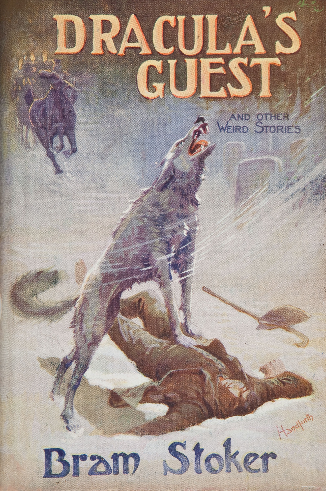

0
стр. з
0
сторінок

завантаження...

Брэм Стокер
Гость Дракулы и другие таинственные истории
Адаптировал Андрей Еремин
Метод чтения Ильи Франка
Сontents
The Coming of Abel Behenna
(прибытие Абеля Бегенны;
to come — приходить, приезжать).
The little Cornish port of Pencastle was bright in the early April (маленький корнуоллский порт Пенкасла был ярким в раннем апреле = ярко сверкал в начале апреля; bright — яркий; блестящий; светлый), when the sun had seemingly come to stay after a long and bitter winter (когда солнце, казалось, пришло, чтобы /надолго/ остаться после долгой и морозной зимы; seemingly — по-видимому; seeming — видимый, кажущийся; to seem — казаться, представляться; to stay — останавливаться, гостить /у кого-л./; оставаться, не уходить; bitter — горький; сильный, резкий /о морозе, промозглой погоде/). Boldly and blackly the rock stood out against a background of shaded blue (резко и мрачно скала выделялась на темно-синем фоне; bold — храбрый, смелый; крутой, обрывистый /о береге/; black — черный; темный; мрачный, унылый; to stand — стоять; to stand out — выделяться, выступать /на фоне чего-л./; background — задний план, фон; back — задний; ground — земля; фон; грунт; to shade — затенять; shade — тень; полумрак; blue — синий, голубой /любые оттенки синего/), where the sky fading into mist met the far horizon (где небо, растворяясь в тумане, сходилось с далеким горизонтом; to fade — увядать; выцветать; сливаться /об оттенках/; расплываться /об очертаниях/; mist — /легкий/ туман; дымка, мгла; to meet — встречать/ся/; соприкасаться). The sea was of true Cornish hue-sapphire (море было настоящего корнуоллского сапфирового цвета; hue — цвет, оттенок; sapphire — сапфир; темно-синий цвет /как у сапфира/), save where it became deep emerald green (кроме /тех мест,/ где оно становилось темным, изумрудно-зеленым; to become — делаться, становиться) in the fathomless depths under the cliffs (в бездонных глубинах под утесами; fathom — фатом, фадом, морская сажень /мера длины, преим. для измерения глубины; = 6 футам = 1,83 м/), where the seal caves opened their grim jaws (где тюленьи пещеры открывали свои зловещие пасти; seal — тюлень; grim — жестокий; суровый; зловещий, мрачный; jaw — челюсть; jaws — рот, пасть). On the slopes the grass was parched and brown (на склонах трава была опалена солнцем, бурая; to parch — слегка поджаривать; иссушать, испепелять).
early [`E:lI], blue [blH], horizon [hq`raIz(q)n], sapphire [`sxfaIq], fathomless [`fxDqmlIs], jaws [GLz], grass [grRs]
The little Cornish port of Pencastle was bright in the early April, when the sun had seemingly come to stay after a long and bitter winter. Boldly and blackly the rock stood out against a background of shaded blue, where the sky fading into mist met the far horizon. The sea was of true Cornish hue-sapphire, save where it became deep emerald green in the fathomless depths under the cliffs, where the seal caves opened their grim jaws. On the slopes the grass was parched and brown.
The spikes of furze bushes were ashy grey (шипы кустов дрока были пепельно-серые; furze — дрок; утесник; ash — пепел), but the golden yellow of their flowers streamed along the hillside (но золотисто-желтое /сияние/ их цветков разливалось по склону; golden — золотистый; золотой; gold — золото; to stream — течь, струиться; светиться; along — вдоль, по; hillside — склон горы или холма; hill — холм; side — сторона; склон /холма, горы/), dipping out in lines as the rock cropped up (спускалось линиями по мере того, как поднималась скала; to dip — погружать/ся/, окунать/ся/; скрываться; to crop up — неожиданно возникать; выходить на поверхность, обнажаться), and lessening into patches and dots till finally it died away all together (и уменьшалось до пятен и точек, пока в конце концов не исчезало совсем; to lessen — уменьшать/ся/; less — меньше; patch — клочок, лоскут; пятно неправильной формы; final — финальный; конечный; to die away — ослабевать, постепенно исчезать; замирать, стихать /о звуке, ветре/; to die — умирать; исчезать; together — вместе, сообща) where the sea winds swept round the jutting cliffs (/там,/ где морские ветры продували выступающие скалы; to sweep — мести, сметать; мчаться, нестись; round — вокруг, кругом; to jut — выступать, выдаваться; cliff — утес, береговая скала) and cut short the vegetation as though with an ever-working aerial shears (и коротко подрезали растительность, словно беспрестанно работающими воздушными ножницами; to cut — резать; short — коротко; ever — всегда, вечно; постоянно). The whole hillside, with its body of brown and flashes of yellow (весь этот горный склон — большей частью коричневый, с желтыми вспышками; body — тело; главная, основная часть /чего-л./), was just like a colossal yellow-hammer (был похож на громадную овсянку /птица с ярко-желтой головой и грудью/; just — точно, как раз; like — подобный, похожий; yellow-hammer — овсянка обыкновенная; hammer — молот, молоток).
The little harbour opened from the sea between towering cliffs (маленькая гавань открывалась с моря /, зажатая/ между вздымающимися утесами; to tower — выситься; tower — башня), and behind a lonely rock (а позади = в глубине /была/ одинокая скала), pierced with many caves and blow-holes (пронизанная многочисленными пещерами и отверстиями; to pierce — пронзать, протыкать; просверливать; blow-hole — продутое ветром отверстие в утесе, ведущее в грот; to blow — дуть; продувать; hole — дыра; отверстие) through which the sea in storm time sent its thunderous voice (через которые море во время шторма направляло свой оглушительный голос = оглушительно ревело; to send — отправлять, посылать; направлять /что-л./ с силой; thunderous — грозовой; громовой, оглушительный; thunder — гром; грохот), together with a fountain of drifting spume (вместе с фонтаном пены; to drift — относить, гнать /ветром, течением/).
furze [fE:z], flowers [`flaVqz], aerial [`e(q)rIql], colossal [kq`lPs(q)l], harbour [`hRbq], thunderous [`TAnd(q)rqs], fountain [`faVntIn]
The spikes of furze bushes were ashy grey, but the golden yellow of their flowers streamed along the hillside, dipping out in lines as the rock cropped up, and lessening into patches and dots till finally it died away all together where the sea winds swept round the jutting cliffs and cut short the vegetation as though with an ever-working aerial shears. The whole hillside, with its body of brown and flashes of yellow, was just like a colossal yellow-hammer.
The little harbour opened from the sea between towering cliffs, and behind a lonely rock, pierced with many caves and blow-holes through which the sea in storm time sent its thunderous voice, together with a fountain of drifting spume.
Hence, it wound westwards in a serpentine course (отсюда /залив/ вился по-змеиному на запад; to wind — извиваться; west — запад; serpentine — змеиный; извилистый, извивающийся; course — курс, направление; течение /реки/; образ действия), guarded at its entrance by two little curving piers to left and right (защищенный у входа двумя маленькими изгибающимися волноломами слева и справа; to guard — охранять; защищать; to curve — изгибать/ся/). These were roughly built of dark slates placed endways (они были грубо сработаны из темных сланцевых /плит/, поставленных вертикально, друг за другом; rough — грубый; необработанный; to build — строить, сооружать; slate — аспидный сланец; to place — ставить, размещать; endways — стоймя, отвесно; одним концом к другому; end — конец) and held together with great beams bound with iron bands (и скрепленных вместе огромными брусьями, стянутыми стальными лентами; to hold — держать, удерживать; beam — луч; брус, балка, бревно; to bind — связывать, обвязывать). Thence, it flowed up the rocky bed of the stream (оттуда вода текла по каменистому руслу реки; to flow — течь, струиться; bed — постель, ложе; русло /реки/, дно /моря/; stream — поток, река, ручей) whose winter torrents had of old cut out its way amongst the hills (зимние потоки которой когда-то давно прорезали свой путь среди холмов; winter — зима; зимний; whose — чей, чья, чье, чьи; которого, которой, которых; of old — в прежнее время, давно; old — старый; давний, древний; way — путь, дорога). This stream was deep at first (эта река была глубокой вначале; at first — сначала, сперва; first — первый; начало), with here and there, where it widened (и местами: "тут и там", где она расширялась; to widen — расширять/ся/; wide — широкий), patches of broken rock exposed at low water (участки разрушенных скал показывались при низкой воде = обломки скал выступали при отливе; patch — клочок, лоскут; небольшой участок земли; to break — ломать/ся/, разбивать/ся/; to expose — выставлять напоказ; выходить /на поверхность/, обнажаться), full of holes where crabs and lobsters were to be found at the ebb of the tide (полные нор, где можно найти крабов и омаров /при отливе/; hole — дыра, отверстие; нора; to find — находить, обнаруживать; ebb — /морской/ отлив; понижение, спад; tide — прилив и отлив /на море, океане/; течение; ebb tide — отлив). From amongst the rocks rose sturdy posts (среди скал возвышались крепкие столбы; from amongst — из, среди; to rise — подниматься), used for warping in the little coasting vessels (используемые для швартовки маленьких каботажных судов; to warp — коробить/ся/; /мор./ верповать/ся/; warp — верповальный трос, перлинь /для буксировки и швартовки судов/; coasting vessel — каботажное судно, судно прибрежного плавания; coast — морской берег, побережье; to coast — плавать вдоль побережья) which frequented the port (которые часто заходили в порт; to frequent — часто посещать).
wound [waVnd], serpentine [`sE:pqntaIn], guarded [`gRdId], roughly [`rAflI], water [`wLtq], frequented [frI`kwentId]
Hence, it wound westwards in a serpentine course, guarded at its entrance by two little curving piers to left and right. These were roughly built of dark slates placed endways and held together with great beams bound with iron bands. Thence, it flowed up the rocky bed of the stream whose winter torrents had of old cut out its way amongst the hills. This stream was deep at first, with here and there, where it widened, patches of broken rock exposed at low water, full of holes where crabs and lobsters were to be found at the ebb of the tide. From amongst the rocks rose sturdy posts, used for warping in the little coasting vessels which frequented the port.
Higher up, the stream still flowed deeply (выше /по течению/ река все еще текла глубоко = была глубокой; high — высокий; deep — глубокий), for the tide ran far inland (поскольку прилив проникал вглубь суши; to run — бежать; течь, литься; inland — расположенный внутри страны; удаленный от моря; вглубь страны; land — земля, суша), but always calmly for all the force of the wildest storm was broken below (но всегда /текла/ спокойно, так как вся сила неистового шторма разбивалась: "была разбита" ниже по течению; calm — спокойный; wild — дикий; бурный, неистовый; below — внизу, ниже; ниже по течению). Some quarter mile inland the stream was deep at high water (примерно на глубине четверти мили внутрь суши река была глубока во время прилива: "при высокой воде"; mile — миля /единица длины = 1609 м/), but at low tide there were at each side patches of the same broken rock as lower down (но во время отлива у обоих берегов выступали те же самые обломки скал, что и ниже по течению; each — каждый; side — сторона; склон; берег), through the chinks of which the sweet water of the natural stream trickled and murmured after the tide had ebbed away (через трещины в которых пресная вода природного потока текла тонкой струйкой и журчала после того, как случался отлив; chink — щель, трещина; sweet — сладкий; свежий; пресный /о воде/; natural — естественный, природный; nature — природа; to trickle — течь тонкой струйкой, сочиться; to murmur — производить неясный шум; бормотать; журчать; to ebb — отступать, убывать /о воде при отливе/). Here, too, rose mooring posts for the fishermen's boats (здесь также возвышались причальные сваи для рыбацких лодок; to moor — причаливать; пришвартовываться). At either side of the river was a row of cottages (на обоих берегах реки располагался ряд домов; either — любой /из двух/; и тот и другой; оба; cottage — небольшой сельский дом; хижина) down almost on the level of high tide (почти на уровне прилива). They were pretty cottages (это были прелестные дома), strongly and snugly built (прочно и удобно выстроенные; strong — сильный, крепкий, прочный; snug — удобный, уютный; укромный), with trim narrow gardens in front (с аккуратными узкими садами впереди; trim — аккуратный, опрятный; to trim — приводить в порядок; подрезать, подстригать; front — передняя сторона чего-л.; фасад), full of old-fashioned plants (полными старомодных растений; fashion — мода, стиль), flowering currants (цветущей смородины; to flower — цвести), coloured primroses (разноцветных примул; to colour — красить, окрашивать/ся/; colour — цвет), wallflower (желтофиолей; wall — стена), and stonecrop (и заячьей капусты; stone — камень; crop — урожай).
flowed [flqVd], calmly [`kRmlI], murmured [`mE:mqd], coloured [`kAlqd]
Higher up, the stream still flowed deeply, for the tide ran far inland, but always calmly for all the force of the wildest storm was broken below. Some quarter mile inland the stream was deep at high water, but at low tide there were at each side patches of the same broken rock as lower down, through the chinks of which the sweet water of the natural stream trickled and murmured after the tide had ebbed away. Here, too, rose mooring posts for the fishermen's boats. At either side of the river was a row of cottages down almost on the level of high tide. They were pretty cottages, strongly and snugly built, with trim narrow gardens in front, full of old-fashioned plants, flowering currants, coloured primroses, wallflower, and stonecrop.
Over the fronts of many of them climbed clematis and wisteria (по фасадам многих из них вились ломонос и глициния; over — над, на, поверх; to climb — карабкаться, взбираться; виться /о растениях/). The window sides and door posts of all were as white as snow (оконные рамы и дверные косяки всех /домов/ были белые как снег; window — окно; door — дверь), and the little pathway to each was paved with light coloured stones (и небольшая дорожка к каждому /дому/ была вымощена светлого цвета камнями; little — маленький, небольшой; короткий /о времени, расстоянии/; pathway — тропа, тропинка; дорожка; path — тропинка, тропа; дорожка; путь; light — свет; светлый). At some of the doors were tiny porches (у некоторых дверей были крошечные крылечки), whilst at others were rustic seats cut from tree trunks or from old barrels (тогда как у других — грубые/простоватые скамейки, вырезанные из стволов деревьев или старых бочек; rustic — деревенский; простой; грубый; seat — место /для сидения/; стул, скамья); in nearly every case the window ledges were filled with boxes or pots of flowers or foliage plants (почти в каждом случае наружные подоконники были заставлены: "наполнены" коробочками и горшками с цветами или декоративными растениями; ledge — планка; полочка, выступ; foliage plant — листопадное растение; декоративное растение; foliage — листва, листья).
Two men lived in cottages exactly opposite each other across the stream (два человека жили в домах /, стоящих/ точно друг напротив друга, по разные стороны реки; across — поперек; по ту сторону, через). Two men, both young (два человека, оба молодые), both good-looking (оба привлекательные: "хорошо выглядящие"; to look — смотреть; выглядеть, иметь вид), both prosperous (оба преуспевающие; prosperous — процветающий, преуспевающий; зажиточный; удачливый), and who had been companions and rivals from their boyhood (и которые были товарищами и соперниками с детства; boyhood — отрочество; boy — мальчик).
fronts [frAnts], climbed [klaImd], clematis [`klemqtIs], door [dL], others [`ADqz], rustic [`rAstIk], exactly [Ig`zxktlI], prosperous [`prPsp(q)rqs]
Over the fronts of many of them climbed clematis and wisteria. The window sides and door posts of all were as white as snow, and the little pathway to each was paved with light coloured stones. At some of the doors were tiny porches, whilst at others were rustic seats cut from tree trunks or from old barrels; in nearly every case the window ledges were filled with boxes or pots of flowers or foliage plants.
Two men lived in cottages exactly opposite each other across the stream. Two men, both young, both good-looking, both prosperous, and who had been companions and rivals from their boyhood.
Abel Behenna was dark with the gypsy darkness (Абель Бегенна был смуглый, как цыган: "смуглый цыганской смуглостью"; dark — темный; смуглый; darkness — темнота; смуглость) which the Phoenician mining wanderers left in their track (которую оставили /на своем пути/ финикийские странники, добывавшие /здесь/ руду; mine — рудник; шахта; копь; to mine — разрабатывать рудник, добывать /руду и т.д./; wanderer — странник, скиталец; to wander — бродить, странствовать; to leave — покидать; забывать, оставлять /после себя/; track — след; курс, путь); Eric Sanson — which the local antiquarian said was a corruption of Sagamanson (Эрик Сансон — /фамилия/ которого, как сказал местный любитель древностей, происходит от Сагамансон; antiquarian — антиквар; знаток, любитель, собиратель древностей; corruption — порча; искажение /слова, текста/; to corrupt — портить/ся/; искажать /язык, текст/) — was fair, with the ruddy hue which marked the path of the wild Norseman (был светловолос, с тем рыжеватым оттенком /в волосах/, который отмечал путь дикого скандинава = указывал на скандинавскую кровь; fair — белокурый, светлый; ruddy — румяный; красный, красноватый; hue — краска, оттенок; Norseman — /древний/ скандинав). These two seemed to have singled out each other from the very beginning (эти двое как будто выбрали друг друга с самого начала; to single out — выделять /из группы/, обособлять; single — один; одиночный; beginning — начало; to begin — начинать/ся/) to work and strive together (чтобы работать и бороться вместе; to strive — стараться; бороться; состязаться), to fight for each other (драться друг за друга) and to stand back to back in all endeavours (и стоять спиной к спине во всех начинаниях; endeavour — /энергичная/ попытка, старание). They had now put the coping-stone on their Temple of Unity (теперь они положили замковый камень на свой храм единства = похоронили свое единство/дружбу; coping-stone — карнизный камень; замковый камень; венец, завершение; to cope — покрывать, накрывать) by falling in love with the same girl (влюбившись: "впав в любовь" в одну и ту же девушку; to fall — падать; приходить, впадать в какое-л. состояние). Sarah Trefusis was certainly the prettiest girl in Pencastle (Сара Трефьюзис являлась, несомненно, самой хорошенькой девушкой в Пенкасле; certain — определенный; бесспорный, несомненный), and there was many a young man (и было множество молодых людей) who would gladly have tried his fortune with her (которые охотно попытали бы счастья с ней = добивались бы ее руки; gladly — радостно; охотно; glad — радостный; to try — пробовать, пытаться; испытывать; fortune — счастье, удача; судьба), but that there were two to contend against (если бы не /пришлось/ соперничать с двумя; to contend — бороться; соперничать; against — против), and each of these the strongest and most resolute man in the port — except the other (каждый из которых: "из этих" был самым сильным и решительным человеком в порту — кроме своего товарища; the other — второй, другой /из двух, трех/).
gypsy [`GIpsI], antiquarian [,xntI`kwe(q)rIqn], path [pRT], endeavours [In`devqz], fortune [`fLC(q)n], resolute [`rezqlHt]
Abel Behenna was dark with the gypsy darkness which the Phoenician mining wanderers left in their track; Eric Sanson — which the local antiquarian said was a corruption of Sagamanson — was fair, with the ruddy hue which marked the path of the wild Norseman. These two seemed to have singled out each other from the very beginning to work and strive together, to fight for each other and to stand back to back in all endeavours. They had now put the coping-stone on their Temple of Unity by falling in love with the same girl. Sarah Trefusis was certainly the prettiest girl in Pencastle, and there was many a young man who would gladly have tried his fortune with her, but that there were two to contend against, and each of these the strongest and most resolute man in the port — except the other.
The average young man thought that this was very hard (средний/обычный молодой человек думал, что это очень трудно), and on account of it bore no good will to either of the three principals (и по этой причине не питал добрых чувств ни к одному из троицы; account — счет; причина, основание; to bear — /пере/носить, /пере/возить; питать /какие-л. чувства/; good will — добрая воля; доброжелательность; principal — глава, начальник; ведущий актер, ведущая актриса): whilst the average young woman who had, lest worse should befall (тогда как обычная девушка, которой приходилось, чтобы не случилось хуже; young woman — молодая женщина; девушка; worse — худший; хуже; to befall — случаться, происходить), to put up with the grumbling of her sweetheart (мириться с ворчанием своего возлюбленного: "любимого сердца"; sweet — сладкий; любимый, дорогой), and the sense of being only second best which it implied (и с мыслью, что она только на втором месте: "вторая лучшая" = не первая красавица, которую это ворчание подразумевало; sense — чувство; ощущение, восприятие; to imply — подразумевать, предполагать; намекать), did not either, be sure, regard Sarah with friendly eye (разумеется, вовсе не смотрела на Сару дружелюбным взглядом; either — любой; тоже, также /в отриц. предложениях/; для усиления отрицания; to be sure — быть уверенным; безусловно, конечно; sure — уверенный; несомненный, бесспорный; to regard — рассматривать, считать /кем-л., чем-л./; eye — глаз; взгляд, взор). Thus it came, in the course of a year or so (так получилось через год или около того; to come — приходить; выходить, получаться; course — курс; ход, течение; in the course of a year — в течение года), for rustic courtship is a slow process (поскольку деревенское ухаживание —процесс медленный), that the two men and the woman found themselves thrown much together (что эти два человека и женщина нашли себя сведенными очень вместе = оказались очень близки; to find oneself in a state — очутиться, оказаться в каком-л. положении; to throw together — сводить вместе /о людях/, собирать в одном месте; to throw — бросать/ся/, кидать/ся/). They were all satisfied, so it did not matter (они были весьма довольны, так что это не имело значения; all — весь, все; всецело, полностью; to satisfy — удовлетворять; доставлять удовольствие; to matter — иметь значение), and Sarah, who was vain and something frivolous (и Сара, которая была тщеславна и несколько легкомысленна), took care to have her revenge on both men and women in a quiet way (не упускала случая отомстить как мужчинам, так и женщинам по-тихому: "тихим образом"; to take care — заботиться; принимать меры; to take — брать; принимать; care — забота; внимание, осторожность; revenge — месть; both — оба, обе; как…, так и; way — путь; метод, способ).
thought [TLt], either [`aIDq], regard [rI`gRd], eye [aI], women [`wImIn]
The average young man thought that this was very hard, and on account of it bore no good will to either of the three principals: whilst the average young woman who had, lest worse should befall, to put up with the grumbling of her sweetheart, and the sense of being only second best which it implied, did not either, be sure, regard Sarah with friendly eye. Thus it came, in the course of a year or so, for rustic courtship is a slow process, that the two men and the woman found themselves thrown much together. They were all satisfied, so it did not matter, and Sarah, who was vain and something frivolous, took care to have her revenge on both men and women in a quiet way.
When a young woman in her "walking out" can only boast one not-quite-satisfied young man (когда девушка во время прогулки может похвастаться лишь одним не совсем довольным молодым человеком; walking out — выход /на прогулку/; to walk out — /уст./ встречаться, "гулять" /с кем-л./; to walk — ходить; гулять), it is no particular pleasure to her to see (для нее нет особого удовольствия в том, чтобы видеть) her escort cast sheep's eyes at a better-looking girl (как ее кавалер бросает влюбленные: "овечьи" взгляды на более привлекательную девушку; escort — конвой, эскорт; кавалер, сопровождающий; sheep — овца; баран; better — лучше; больше) supported by two devoted swains (поддерживаемую /под руки/ двумя преданными обожателями; to devote — посвящать; отдавать /себя/ целиком /чему-л./; swain — /уст., поэт./ деревенский парень; обожатель, возлюбленный).
At length there came a time which Sarah dreaded (наконец настала минута, которой Сара боялась; at length — наконец, в конце концов; length — длина; длительность, протяженность /во времени/; time — время; мгновение, определенный момент), and which she had tried to keep distant (и которую старалась отдалить: "держать отдаленной"; to keep — держать, хранить; оставлять или оставаться в каком-л. состоянии) — the time when she had to make her choice between the two men (минута, когда она должна была сделать выбор между этими двумя мужчинами). She liked them both (они нравились ей оба; to like — нравиться, любить), and, indeed, either of them might have satisfied the ideas of even a more exacting girl (и, несомненно, любой из них мог бы удовлетворить запросы даже более взыскательной девушки; indeed — действительно, в самом деле; безусловно; idea — мысль, идея; представление, понятие; замысел; to exact — /настоятельно/ требовать, добиваться). But her mind was so constituted (но ее ум был так устроен; mind — ум, разум; склад ума; to constitute — основывать, создавать) that she thought more of what she might lose (что она больше думала о /том/, что может потерять), than of what she might gain (чем о /том/, что может обрести; to gain — получать, приобретать); and whenever she thought she had made up her mind (и всякий раз, когда она думала, что /уже/ приняла решение; to make up one`s mind — принимать решение, решаться /на что-л. или сделать что-л./) she became instantly assailed with doubts as to the wisdom of her choice (она тотчас становилась одолеваема сомнениями = тотчас начинала сомневаться относительно правильности своего выбора; instant — мгновение, миг; to assail — наступать, атаковать; одолевать, мучить; wisdom — мудрость; здравый смысл, разумность).
particular [pq`tIkjVlq], pleasure [`pleZq], satisfied [`sxtIsfaId], instantly [`InstqntlI], doubts [daVts], wisdom [`wIzdqm]
When a young woman in her "walking out" can only boast one not-quite-satisfied young man, it is no particular pleasure to her to see her escort cast sheep's eyes at a better-looking girl supported by two devoted swains.
At length there came a time which Sarah dreaded, and which she had tried to keep distant — the time when she had to make her choice between the two men. She liked them both, and, indeed, either of them might have satisfied the ideas of even a more exacting girl. But her mind was so constituted that she thought more of what she might lose, than of what she might gain; and whenever she thought she had made up her mind she became instantly assailed with doubts as to the wisdom of her choice.
Always the man whom she had presumably lost (все время тот, кого она, вероятно, потеряла = с которым ей, вероятно, предстояло расстаться; to presume — /пред/полагать) became endowed afresh with a newer and more bountiful crop of advantages (опять делался /в ее глазах/ одаренным все новыми и более многочисленными достоинствами; to endow — одарять, наделять /чем-л./; afresh — снова; fresh — свежий; новый; new — новый; незнакомый; bountiful — щедрый; богатый, обильный; bounty — щедрость; crop — урожай; обилие, масса; advantage — преимущество; достоинство, плюс) than had ever arisen from the possibility of his acceptance (чем /те, что/ проистекали из возможности его принятия = чем те, которыми он обладал, если бы она выбрала его; ever — всегда; когда-либо; to arise — возникать; проистекать /из чего-л./; acceptance — принятие, прием; to accept — принимать, брать /предложенное/). She promised each man that on her birthday she would give him his answer (она обещала каждому /из них/, что в день своего рождения даст ответ; birth — рождение; day — день), and that day, the 11th of April, had now arrived (и этот день, одиннадцатое апреля, теперь настал; 11 th = eleventh — одиннадцатое /число/; eleven — одиннадцать; to arrive — прибывать, приезжать; наступать /о времени, событии/). The promises had been given singly and confidentially (обещания /и раньше/ давались /каждому/ отдельно и по секрету; confidential — конфиденциальный, секретный; доверительный), but each was given to a man who was not likely to forget (но каждое /обещание/ давалось человеку, который /ничего/ не забывает; likely — вероятно, возможно; to forget — забывать). Early in the morning she found both men hovering round her door (рано утром она увидела, что оба кавалера топчутся у ее двери; to find — находить; заставать /где-л., за каким-л. занятием/; to hover — парить /о птице/; болтаться, слоняться). Neither had taken the other into his confidence (ни один не доверил другому своих помыслов; to take smb. into one's confidence — поведать кому-л. свои тайны, довериться кому-л.: "взять кого-л. в свое доверие"; confidence — доверие), and each was simply seeking an early opportunity of getting his answer (и каждый просто выжидал первой возможности получить ответ; simple — простой; to seek — искать; добиваться; early — ранний; близкий, скорейший), and advancing his suit if necessary (и начать приготовления к свадьбе, если необходимо; to advance — продвигать/ся/ вперед; содействовать, ускорять; suit — сватовство).
always [`Llw(e)Iz], presumably [prI`zjHmqblI], arisen [q`rIz(q)n], answer [`Rnsq], necessary [`nesIs(q)rI]
Always the man whom she had presumably lost became endowed afresh with a newer and more bountiful crop of advantages than had ever arisen from the possibility of his acceptance. She promised each man that on her birthday she would give him his answer, and that day, the 11th of April, had now arrived. The promises had been given singly and confidentially, but each was given to a man who was not likely to forget. Early in the morning she found both men hovering round her door. Neither had taken the other into his confidence, and each was simply seeking an early opportunity of getting his answer, and advancing his suit if necessary.
Damon, as a rule, does not take Pythias with him when making a proposal (Дамон, как правило, не берет с собой Пифиаса, когда делает предложение; Damon and Pythias — /греч. миф./ Дамон и Пифиас, неразлучные друзья; to propose — предлагать; делать предложение /о браке/); and in the heart of each man his own affairs had a claim far above any requirements of friendship (и в сердце каждого /молодого/ человека его собственные дела имели притязание намного выше любых необходимых для дружбы условий = собственные сердечные дела были превыше дружбы; claim — требование; притязание; /законное/ право; requirement — требование; необходимое условие; to require — требовать /чего-л./; нуждаться /в чем-л./). So, throughout the day, they kept seeing each other out (поэтому весь день они выпроваживали друг друга взглядом; throughout — через, по всей площади, длине; в течение всего времени; to keep doing smth. — продолжать делать что-л.; to see out — выпроваживать; досидеть до конца /спектакля и т.д/; пережить /кого-л./; to see — смотреть, видеть). The position was doubtless somewhat embarrassing to Sarah (положение, несомненно, было для Сары несколько неловким; to embarrass — беспокоить; смущать, приводить в замешательство), and though the satisfaction of her vanity that she should be thus adored was very pleasing (и хотя удовлетворение тщеславия /тем/, что ее так обожают: "что она настолько обожаема", было очень приятно; thus — так, таким образом; настолько; to please — радовать, доставлять удовольствие), yet there were moments when she was annoyed with both men for being so persistent (все же бывали минуты, когда ее раздражали оба кавалера тем, что они такие упорные/настойчивые; moment — момент, миг, минута; to annoy — досаждать; раздражать, злить). Her only consolation at such moments was that she saw (ее единственным утешением в такие минуты было /то/, что она видела; consolation — утешение; to console — утешать), through the elaborate smiles of the other girls (сквозь безупречные улыбки остальных девушек; elaborate — тщательно, детально продуманный; искусно выполненный) when in passing they noticed her door thus doubly guarded (когда, проходя мимо, они замечали ее дверь с такой двойной охраной: "так вдвойне охраняемую"; to pass — идти; проходить мимо; to notice — замечать, обращать внимание; doubly — вдвойне; double — двойной), the jealousy which filled their hearts (зависть, которая наполняла их сердца; jealousy — ревность; зависть).
rule [rHl], proposal [prq`pqVz(q)l], heart [hRt], above [q`bAv], persistent [pq`sIstqnt], jealousy [`GelqsI]
Damon, as a rule, does not take Pythias with him when making a proposal; and in the heart of each man his own affairs had a claim far above any requirements of friendship. So, throughout the day, they kept seeing each other out. The position was doubtless somewhat embarrassing to Sarah, and though the satisfaction of her vanity that she should be thus adored was very pleasing, yet there were moments when she was annoyed with both men for being so persistent. Her only consolation at such moments was that she saw, through the elaborate smiles of the other girls when in passing they noticed her door thus doubly guarded, the jealousy which filled their hearts.
Sarah's mother was a person of commonplace and sordid ideas (мать Сары была особой с заурядными и корыстными мыслями /и планами/; person — человек; личность, особа; commonplace — банальный, избитый, заурядный; common — обычный, простой; place — место; sordid — отвратительный; низкий, подлый; корыстный), and, seeing all along the state of affairs (она отлично понимала положение дел; all along — во всю длину; на всем протяжении; to see — видеть; понимать), her one intention, persistently expressed to her daughter in the plainest of words (и ее единственным замыслом, настойчиво/постоянно высказываемым дочери самым прямым образом: "самыми понятными из слов"; intention — намерение, стремление, цель; to express — выражать; высказывать; plain — ясный, понятный), was to so arrange matters that Sarah should get all that was possible out of both men (было так устроить дела, чтобы Сара получила все, что возможно, от обоих поклонников; to arrange — приводить в порядок; устраивать). With this purpose she had cunningly kept herself as far as possible in the background in the matter of her daughter's wooings (с этой целью она ловко держала себя как можно дальше на заднем плане в деле ухаживаний за ее дочерью = ловко держалась в тени в этом деле; cunning — хитрый, лукавый; to woo — ухаживать; добиваться руки /девушки/), and watched in silence (и наблюдала молча: "в молчании"; silence — тишина; молчание). At first Sarah had been indignant with her for her sordid views (сначала Сара была возмущена ее корыстными планами; indignant — негодующий, возмущенный; view — вид; взгляд, мнение; намерение); but, as usual, her weak nature gave way before persistence (но, как обычно, ее слабовольная натура сдалась: "дала дорогу" перед настойчивостью; weak — слабый; безвольный, нерешительный; nature — природа; характер, нрав), and she had now got to the stage of passive acceptance (и теперь она дошла до стадии пассивного принятия = теперь покорно принимала планы матери; stage — сцена; этап, стадия). She was not surprised when her mother whispered to her in the little yard behind the house (она не была удивлена, когда мать прошептала ей на маленьком дворике за домом; to surprise — удивлять):
mother [`mADq], intention [In`tenS(q)n], daughter [`dLtq], purpose [`pE:pqs], usual [`jHZVql], nature [`neICq]
Sarah's mother was a person of commonplace and sordid ideas, and, seeing all along the state of affairs, her one intention, persistently expressed to her daughter in the plainest of words, was to so arrange matters that Sarah should get all that was possible out of both men. With this purpose she had cunningly kept herself as far as possible in the background in the matter of her daughter's wooings, and watched in silence. At first Sarah had been indignant with her for her sordid views; but, as usual, her weak nature gave way before persistence, and she had now got to the stage of passive acceptance. She was not surprised when her mother whispered to her in the little yard behind the house:
"Go up the hill-side for a while (пойди погуляй пока по склону холма; for a while — на некоторое время; while — время, промежуток времени); I want to talk to these two (я хочу поговорить с этими двумя). They're both red-hot for ye, and now's the time to get things fixed (они оба без ума от тебя, и теперь пришло время уладить дело; they`re = they are; red-hot — раскаленный докрасна; горячий, пылкий; ye — /диал./ ты; now's = now is; thing — вещь; things — дела, обстоятельства; to fix — укреплять; /разг./ устраивать, улаживать)!" Sarah began a feeble remonstrance, but her mother cut her short (Сара начала слабое возражение = слабо возражать, но мать прервала ее; to cut short — обрезать; прерывать; to cut — резать; short — коротко).
"I tell ye, girl, that my mind is made up (говорю тебе, девочка, я все решила)! Both these men want ye, and only one can have ye (оба эти человека хотят /взять/ тебя /в жены/, и только один сможет тебя взять), but before ye choose it'll be so arranged (но прежде, чем ты выберешь, дело будет устроено так; it'll = it will) that ye'll have all that both have got (что ты получишь все, что есть у обоих)! Don't argy, child (не спорь, дитя; argy = argue)! Go up the hill-side, and when ye come back I'll have it fixed (иди погуляй по склону холма, а когда вернешься: "придешь назад", все будет улажено) — I see a way quite easy (я вижу способ совершенно легким = не вижу особых затруднений)!" So Sarah went up the hill-side through the narrow paths between the golden furze (и вот Сара пошла вверх по склону, по узким тропам между /кустами/ золотистого дрока), and Mrs. Trefusis joined the two men in the living-room of the little house (а миссис Трефьюзис присоединилась к двум /молодым/ людям /, ожидавшим/ в гостиной маленького дома; Mrs. = Mistress; to live — жить, проживать; room — комната).
talk [tLk], remonstrance [rI`mPnstrqns], easy [`JzI], through [TrH]
"Go up the hill-side for a while; I want to talk to these two. They're both red-hot for ye, and now's the time to get things fixed!" Sarah began a feeble remonstrance, but her mother cut her short.
"I tell ye, girl, that my mind is made up! Both these men want ye, and only one can have ye, but before ye choose it'll be so arranged that ye'll have all that both have got! Don't argy, child! Go up the hill-side, and when ye come back I'll have it fixed — I see a way quite easy!" So Sarah went up the hill-side through the narrow paths between the golden furze, and Mrs. Trefusis joined the two men in the living-room of the little house.
She opened the attack with the desperate courage (она начала наступление с отчаянной храбростью; to open — открывать/ся/; начинать/ся/) which is in all mothers when they think for their children (которая есть во всех матерях, когда они думают о своих детях), howsoever mean the thoughts may be (какими бы низкими ни были эти мысли).
"Ye two men, ye're both in love with my Sarah (вы двое, вы оба влюблены в мою Сару: "в любви с моей Сарой")!"
Their bashful silence gave consent to the barefaced proposition (их робкое молчание дало согласие на это прямое утверждение = робким молчанием они согласились с этим прямым утверждением; barefaced — с открытым лицом /без маски/; открытый; бесстыдный, наглый; bare — голый, непокрытый; face — лицо; proposition — предложение; заявление, утверждение). She went on (она продолжала; to go on — идти дальше; продолжать).
"Neither of ye has much (вы не можете похвастаться состоянием: "ни один из вас не имеет многого")!" Again they tacitly acquiesced in the soft impeachment (опять они молча согласились с этим мягким порицанием; tacit — подразумеваемый, не выраженный словами; молчаливый; to acquiesce — молча или неохотно соглашаться; impeachment — сомнение, недоверие; to impeach — подвергать сомнению; обвинять /особ. должностное лицо/ в серьезном правонарушении).
"I don't know that either of ye could keep a wife (не знаю, сможет ли кто-нибудь из вас содержать жену)!" Though neither said a word their looks and bearing expressed distinct dissent (хотя ни один не сказал ни слова, их взгляды и поза выражали явное несогласие; bearing — поведение, манера держаться; осанка; to bear — /пере/носить; вести себя, держаться). Mrs. Trefusis went on (миссис Трефьюзис продолжала):
desperate [`desp(q)rIt], courage [`kArIG], consent [kqn`sent], acquiesced [,xkwI`est], distinct [dIs`tIN(k)t]
She opened the attack with the desperate courage which is in all mothers when they think for their children, howsoever mean the thoughts may be.
"Ye two men, ye're both in love with my Sarah!"
Their bashful silence gave consent to the barefaced proposition. She went on.
"Neither of ye has much!" Again they tacitly acquiesced in the soft impeachment.
"I don't know that either of ye could keep a wife!" Though neither said a word their looks and bearing expressed distinct dissent. Mrs. Trefusis went on:
"But if ye'd put what ye both have together (но если бы вы сложили вместе /все/, что есть у вас обоих; ye'd = ye had) ye'd make a comfortable home for one of ye — and Sarah (вы бы сделали уютный дом = обеспечили комфортную жизнь для одного из вас и Сары; ye'd = ye would; to make a home for smb. — приютить кого-л.)!" She eyed the men keenly, with her cunning eyes half shut, as she spoke (она внимательно следила за кавалерами, полузакрыв = прищурив хитрые глаза, когда говорила; eye — глаз; to eye — разглядывать; следить; keen — острый; пронизывающий; проницательный; to shut — закрывать/ся/; to speak); then satisfied from her scrutiny that the idea was accepted (потом, убедившись из внимательного взгляда = видя, что эта мысль принята; to satisfy — удовлетворять; убеждать; доказывать; scrutiny — внимательный, испытующий взгляд) she went on quickly, as if to prevent argument (она быстро продолжала, словно чтобы предупредить возражения; to prevent — предотвращать; не допускать; argument — довод, аргумент; спор):
"The girl likes ye both, and mayhap it's hard for her to choose (вы оба нравитесь дочке, и, быть может, ей трудно выбрать; girl — девочка; дочка; девушка; mayhap — /уст./ возможно, может быть). Why don't ye toss up for her (почему бы вам не бросить на нее жребий; don't = do not; to toss up — подбрасывать; бросать жребий)? First put your money together — ye've each got a bit put by, I know (сперва сложите вместе свои деньги — знаю, у каждого из вас отложено немного; ye've = you have; to have got — иметь, обладать; bit — кусочек; небольшое количество; to put by — откладывать /на черный день/; припрятывать). Let the lucky man take the lot and trade with it a bit (пусть счастливец возьмет все /деньги/ и /отправится/ торговать с ними немного; to let — позволять; /как вспом. глагол в повелит. наклонении/ пусть; lucky — счастливый; удачливый; the lot — всё, все), and then come home and marry her (а потом вернется домой и женится на Саре; to marry — жениться, выходить замуж; женить, выдавать замуж). Neither of ye's afraid, I suppose (ни один из вас не боится, полагаю; ye's = ye is; afraid — испуганный; боящийся; to be afraid of smth. — бояться чего-л.)! And neither of ye'll say that he won't do that much for the girl that ye both say ye love (и ни один не скажет, что не сделает этого: "так много" ради девушки, которую, как вы говорите, вы оба любите; won't = will not)!"
comfortable [`kAmf(q)tqb(q)l], half [hRf], argument [`RgjVmqnt], money [`mAnI], suppose [sq`pqVz]
"But if ye'd put what ye both have together ye'd make a comfortable home for one of ye — and Sarah!" She eyed the men keenly, with her cunning eyes half shut, as she spoke; then satisfied from her scrutiny that the idea was accepted she went on quickly, as if to prevent argument:
"The girl likes ye both, and mayhap it's hard for her to choose. Why don't ye toss up for her? First put your money together — ye've each got a bit put by, I know. Let the lucky man take the lot and trade with it a bit, and then come home and marry her. Neither of ye's afraid, I suppose! And neither of ye'll say that he won't do that much for the girl that ye both say ye love!"
Abel broke the silence (Абель нарушил молчание):
"It don't seem the square thing to toss for the girl (это не кажется честной вещью = по-моему, нечестно кидать жребий на девушку)! She wouldn't like it herself (ей бы самой это не понравилось), and it doesn't seem — seem respectful like to her — (и это не… неуважительно по отношению к ней…; respectful — почтительный; вежливый; respect — уважение, почтение)" Eric interrupted (Эрик прервал /его/). He was conscious that his chance was not so good as Abel's (он понимал, что у него будет меньше шансов, чем у Абеля: "его шанс не такой хороший"; conscious — сознающий, понимающий), in case Sarah should wish to choose between them (в случае, если Сара захочет выбирать между ними):
"Are ye afraid of the hazard (ты боишься рискнуть; hazard — риск, опасность)?"
"Not me!" said Abel, boldly (ничуть: "/только/ не я"! — смело ответил Абель). Mrs. Trefusis, seeing that her idea was beginning to work, followed up the advantage (миссис Трефьюзис, видя, что ее план начинает работать, стремительно пошла к цели; to follow up — упорно /пре/следовать; доводить до конца; to follow up an advantage — /воен./ развивать успех).
"It is settled that ye put yer money together to make a home for her (/так/ решено: вы складываете свои деньги вместе, чтобы обеспечить Сару; yer = your), whether ye toss for her or leave it for her to choose (/не важно, / бросаете ли вы жребий или даете ей /самой/ выбирать; whether — ли /вводит косвенный вопрос/; один из двух; to leave — оставлять; предоставлять; позволять)?"
doesn't [dAznt], conscious [`kPnSqs], chance [CRns], hazard [`hxzqd], idea [aI`dIq], work [wE:k]
Abel broke the silence:
"It don't seem the square thing to toss for the girl! She wouldn't like it herself, and it doesn't seem — seem respectful like to her —" Eric interrupted. He was conscious that his chance was not so good as Abel's, in case Sarah should wish to choose between them:
"Are ye afraid of the hazard?"
"Not me!" said Abel, boldly. Mrs. Trefusis, seeing that her idea was beginning to work, followed up the advantage.
"It is settled that ye put yer money together to make a home for her, whether ye toss for her or leave it for her to choose?"
"Yes," said Eric quickly, and Abel agreed with equal sturdiness (да/хорошо, — быстро сказал Эрик, и Абель согласился с такой же решительностью; equal — равный; sturdy — крепкий, прочный; непреклонный, твердый). Mrs. Trefusis' little cunning eyes twinkled (маленькие хитрые глазки миссис Трефьюзис засверкали). She heard Sarah's step in the yard, and said (она услышала шаги Сары во дворе и сказала; to hear — слышать; step — шаг; поступь):
"Well! here she comes, and I leave it to her (ну что же, вот она идет, и я предоставляю /все/ ей)." And she went out (и она вышла /из комнаты/).
During her brief walk on the hillside Sarah had been trying to make up her mind (во время короткой прогулки по склону холма Сара пыталась принять решение). She was feeling almost angry with both men for being the cause of her difficulty (она почти сердилась на обоих поклонников за то, что они явились причиной ее затруднения; to feel — чувствовать, ощущать; angry — сердитый, гневный; to feel angry with smb. — сердиться на кого-л.; difficulty — трудность; затруднение; difficult — трудный), and as she came into the room said shortly (и, войдя в комнату, она резко сказала; shortly — коротко; резко; грубо):
"I want to have a word with you both (я хочу поговорить с вами обоими; word — слово; разговор, речь) — come to the Flagstaff Rock, where we can be alone (пойдемте на Флагштоковую скалу, где мы сможем побыть одни; flagstaff — флагшток; flag — флаг; staff — посох, палка; флагшток)."
equal [`Jkwql], sturdiness [`stE:dInIs], cause [kLz], difficulty [`dIfIk(q)ltI]
"Yes," said Eric quickly, and Abel agreed with equal sturdiness. Mrs. Trefusis' little cunning eyes twinkled. She heard Sarah's step in the yard, and said:
"Well! here she comes, and I leave it to her." And she went out.
During her brief walk on the hillside Sarah had been trying to make up her mind. She was feeling almost angry with both men for being the cause of her difficulty, and as she came into the room said shortly:
"I want to have a word with you both — come to the Flagstaff Rock, where we can be alone."
She took her hat and went out of the house up the winding path (она взяла шляпку, вышла из дома и /пошла/ по извилистой тропинке) to the steep rock crowned with a high flagstaff (к крутой скале, увенчанной высоким флагштоком; crown — корона; венец; вершина; to crown — короновать; увенчивать), where once the wreckers' fire basket used to burn (где когда-то горел костер грабителей потерпевших крушение судов; to wreck — вызывать крушение /самолета, судна/; терпеть крушение; fire — огонь; костер; basket — корзина; used to — используется при описании событий, регулярно происходивших в прошлом). This was the rock which formed the northern jaw of the little harbour (это была скала, которая образовывала северную стену маленькой гавани; jaw — челюсть; jaws — горные стены по сторонам узкой долины; узкий вход долины, залива). There was only room on the path for two abreast (на тропинке хватало места только для двоих; abreast — в ряд, на одной линии; /мор./ борт о борт; breast — грудь), and it marked the state of things pretty well (и это довольно хорошо отразило положение вещей; to mark — отмечать; характеризовать; выражать) when, by a sort of implied arrangement (когда, по какому-то молчаливому согласию; a sort of — своего рода, нечто вроде; sort — вид, род, тип), Sarah went first, and the two men followed (Сара пошла первой, а за ней последовали двое женихов), walking abreast and keeping step (которые шли в ногу: "поддерживали шаг", плечом к плечу). By this time, each man's heart was boiling with jealousy (к этому времени сердце каждого кипело от ревности). When they came to the top of the rock (когда они дошли до вершины скалы), Sarah stood against the flagstaff (Сара встала у флагштока; to stand — стоять; вставать; останавливаться), and the two young men stood opposite her (а двое молодых людей остановились напротив нее).
crowned [kraVnd], wreckers [`rekqz], walking [`wLkIN], young [jAN]
She took her hat and went out of the house up the winding path to the steep rock crowned with a high flagstaff, where once the wreckers' fire basket used to burn. This was the rock which formed the northern jaw of the little harbour. There was only room on the path for two abreast, and it marked the state of things pretty well when, by a sort of implied arrangement, Sarah went first, and the two men followed, walking abreast and keeping step. By this time, each man's heart was boiling with jealousy. When they came to the top of the rock, Sarah stood against the flagstaff, and the two young men stood opposite her.
She had chosen her position with knowledge and intention (она выбрала положение со знанием и расчетом), for there was no room for anyone to stand beside her (так как там не было места, чтобы кто-то /еще/ встал рядом с ней). They were all silent for a while (они все молчали некоторое время); then Sarah began to laugh and said (затем Сара начала смеяться и сказала):
"I promised the both of you to give you an answer to-day (я обещала вам обоим дать ответ сегодня). I've been thinking and thinking and thinking (я думала, думала, думала), till I began to get angry with you both for plaguing me so (пока не начала злиться на вас обоих за то, что вы так меня мучите; to plague — /разг./ мучить, досаждать, изводить; plague — чума; бедствие; /разг./ досада, беспокойство); and even now I don't seem any nearer than ever I was to making up my mind (и даже теперь я, кажется, не подошла ближе, чем была, к принятию решения)." Eric said suddenly (Эрик сказал вдруг):
knowledge [`nPlIG], laugh [lRf], promised [`prPmIst], plaguing [`pleIgIN]
She had chosen her position with knowledge and intention, for there was no room for anyone to stand beside her. They were all silent for a while; then Sarah began to laugh and said:
"I promised the both of you to give you an answer to-day. I've been thinking and thinking and thinking, till I began to get angry with you both for plaguing me so; and even now I don't seem any nearer than ever I was to making up my mind." Eric said suddenly:
"Let us toss for it, lass (позволь нам просить жребий, любимая; lass — девушка; возлюбленная)!" Sarah showed no indignation whatever at the proposition (Сара не выказала совершенно никакого возмущения этим предложением); her mother's eternal suggestion had schooled her to the acceptance of something of the kind (вечное внушение ее матери приучило ее к принятию = принимать вещи подобного рода; suggestion — предложение; внушение; to suggest — предлагать; внушать /мысль/; school — школа; обучение; to school — приучать /к чему-л./; kind — сорт, класс; вид, род), and her weak nature made it easy to her to grasp at any way out of the difficulty (и ее слабая натура делала для нее простым = подталкивала ее ухватиться за любую возможность выйти из затруднения; to grasp — схватывать, сжимать; хвататься; way out — выход из положения). She stood with downcast eyes idly picking at the sleeve of her dress (она стояла, потупив взор и теребя рукав платья; downcast — опущенный; потупленный /о взоре/; idly — лениво; праздно; idle — ленивый; праздный; to pick — собирать; выбирать; to pick at — теребить в руках, перебирать), seeming to have tacitly acquiesced in the proposal (и, похоже, молча согласившись на его предложение). Both men instinctively realising this pulled each a coin from his pocket (оба жениха, подсознательно поняв это, достали каждый монету из кармана; instinctively — инстинктивно, подсознательно интуитивно; to realise — осознавать, понимать; to pull — тянуть, тащить; вытаскивать), spun it in the air (подбросили их в воздух; to spin — крутить/ся/, вертеть/ся/), and dropped his other hand over the palm on which it lay (и накрыли другой рукой ладонь, на которую легла монета; to drop — падать; бросать, опускать; to lie — лежать; быть расположенным). For a few seconds they remained thus, all silent (несколько секунд они оставались так = в таком положении, совершенно молча); then Abel, who was the more thoughtful of the men, spoke (затем Абель, который был более сознательным/недоверчивым из них двоих, сказал; thoughtful — задумчивый; внимательный, заботливый; thought — мысль; забота, внимание):
eternal [I`tE:n(q)l], suggestion [sq`GesC(q)n], palm [pRm], few [fjH]
"Let us toss for it, lass!" Sarah showed no indignation whatever at the proposition; her mother's eternal suggestion had schooled her to the acceptance of something of the kind, and her weak nature made it easy to her to grasp at any way out of the difficulty. She stood with downcast eyes idly picking at the sleeve of her dress, seeming to have tacitly acquiesced in the proposal. Both men instinctively realising this pulled each a coin from his pocket, spun it in the air, and dropped his other hand over the palm on which it lay. For a few seconds they remained thus, all silent; then Abel, who was the more thoughtful of the men, spoke:
"Sarah! is this good (Сара! разве это хорошо)?" As he spoke he removed the upper hand from the coin (при этих словах он убрал верхнюю руку с монеты) and placed the latter back in his pocket (и положил последнюю обратно в карман; the latter — последний /из двух названных/). Sarah was nettled (Сара рассердилась: "была рассержена"; to nettle — обжигать крапивой; раздражать, сердить, уязвлять; nettle — крапива; источник раздражения).
"Good or bad, it's good enough for me (хорошо или плохо, это достаточно хорошо для меня = меня это устраивает)! Take it or leave it as you like (кидайте или не кидайте, как хотите; take it or leave it — либо да, либо нет; как угодно, на ваше усмотрение: "взять это или оставить это")," she said, to which he replied quickly (сказала она, на что он ответил быстро):
"Nay lass! Aught that concerns you is good enow for me (нет, милая! все, что важно для тебя, важно и для меня; nay — отрицательный ответ; отказ; aught — что бы то ни было; to concern — касаться, затрагивать; беспокоить, волновать; concern — отношение, касательство; забота, беспокойство; важность, значение; enow /уст./ = enough). I did but think of you lest you might have pain or disappointment hereafter (я просто подумал, как бы ты не имела боли или разочарования = как бы тебе не пришлось испытывать боль и разочарование в будущем; lest — чтобы не, как бы не; hereafter — затем, в будущем). If you love Eric better nor me, in God's name say so (если ты любишь Эрика больше, чем меня, — во имя господа/ради Бога, так и скажи; nor — также не; /диал./ чем), and I think I'm man enow to stand aside (и я думаю, я человек достаточный, чтобы держаться в стороне = у меня хватит мужества отступить). Likewise, if I'm the one, don't make us both miserable for life (однако если ты любишь меня, не делай нас обоих несчастными на всю жизнь; likewise — подобно, таким же образом; the one — тот самый. избранный; любимый; miserable — жалкий, несчастный)!" Face to face with a difficulty (/столкнувшись/ лицом к лицу с трудностью), Sarah's weak nature proclaimed itself (слабый характер Сары проявил себя; to proclaim — объявлять, провозглашать; показывать); she put her hands before her face and began to cry, saying (она закрыла лицо руками: "положила руки перед лицом" и начала плакать, говоря; to cry — кричать; вскрикнуть, воскликнуть; плакать):
removed [rI`mHvd], enough [I`nAf], miserable [`mIz(q)rqb(q)l]
"Sarah! is this good?" As he spoke he removed the upper hand from the coin and placed the latter back in his pocket. Sarah was nettled.
"Good or bad, it's good enough for me! Take it or leave it as you like," she said, to which he replied quickly:
"Nay lass! Aught that concerns you is good enow for me. I did but think of you lest you might have pain or disappointment hereafter. If you love Eric better nor me, in God's name say so, and I think I'm man enow to stand aside. Likewise, if I'm the one, don't make us both miserable for life!" Face to face with a difficulty, Sarah's weak nature proclaimed itself; she put her hands before her face and began to cry, saying:
"It was my mother (это моя мать). She keeps telling me (она все время говорит мне /об этом/)!" The silence which followed was broken by Eric, who said hotly to Abel (молчание, которое последовало, было нарушено Эриком, горячо сказавшим Абелю):
"Let the lass alone, can't you (может, оставишь девушку в покое)? If she wants to choose this way, let her (если она хочет выбрать таким образом, пусть выбирает). It's good enough for me — and for you, too (мне это подходит — и тебе тоже)! She's said it now, and must abide by it (она сейчас это сказала и должна держать слово; to abide — выносить, терпеть; to abide by — оставаться верным, следовать /чему-л./)!" Hereupon Sarah turned upon him in sudden fury, and cried (тут же после этого Сара обернулась к нему в неожиданной ярости = вдруг яростно обернулась к нему и воскликнула):
"Hold your tongue (придержи язык)! What is it to you, at any rate (да и вообще, тебе что за дело; at any rate — во всяком случае; как бы то ни было; любой ценой; rate — ставка; цена)?" and she resumed her crying (и продолжила плакать: "плач"). Eric was so flabbergasted that he had not a word to say (Эрик был так поражен, что не смог вымолвить ни слова: "не имел ни одного слова, чтобы сказать"; to flabbergast — /разг./ поражать, изумлять), but stood looking particularly foolish (а стоял с крайне глупым видом; particularly — очень, чрезвычайно; особенно; foolish — глупый; дурацкий, нелепый; fool — дурак, глупец), with his mouth open and his hands held out with the coin still between them (раскрыв рот и вытянув вперед руки с по-прежнему /зажатой/ между ними монетой; to hold out — протягивать /руку/).
turned [tE:nd], fury [`fjV(q)rI], tongue [tAN], resumed [rI`zjHmd], flabbergasted [`flxbqgRstId]
"It was my mother. She keeps telling me!" The silence which followed was broken by Eric, who said hotly to Abel:
"Let the lass alone, can't you? If she wants to choose this way, let her. It's good enough for me — and for you, too! She's said it now, and must abide by it!" Hereupon Sarah turned upon him in sudden fury, and cried:
"Hold your tongue! What is it to you, at any rate?" and she resumed her crying. Eric was so flabbergasted that he had not a word to say, but stood looking particularly foolish, with his mouth open and his hands held out with the coin still between them.
All were silent till Sarah, taking her hands from her face (все молчали, пока Сара, убрав от лица руки), laughed hysterically and said (не засмеялась истерично и не сказала):
"As you two can't make up your minds, I'm going home (поскольку вы двое не можете принять решение, я иду домой)!" and she turned to go (и она повернулась, чтобы уйти).
"Stop," said Abel, in an authoritative voice (остановись, — сказал Абель властным тоном; authoritative — авторитетный; властный, повелительный; voice — голос). "Eric, you hold the coin, and I'll cry (Эрик, держи монету, а я загадаю; to cry — кричать; оглашать, объявлять). Now, before we settle it, let us clearly understand (итак, прежде, чем мы приступим, давай ясно условимся; to understand — понимать; уславливаться, договариваться): the man who wins takes all the money that we both have got (тот, кто выиграет, забирает все деньги, которые есть у нас обоих), brings it to Bristol (везет их в Бристоль; to bring — приносить, привозить) and ships on a voyage and trades with it (садится на корабль и /отправляется/ торговать; ship — корабль; судно; to ship — перевозить /груз, товар/; сесть на корабль; voyage — плавание, морское путешествие; рейс /судна, самолета/). Then he comes back and marries Sarah, and they two keep all (потом он возвращается, женится на Саре, и они вдвоем забирают все), whatever there may be, as the result of the trading (что заработано в результате торговли; whatever — всё, что бы ни; result — результат, итог). Is this what we understand (мы так договариваемся)?"
"Yes," said Eric (да, — сказал Эрик).
hysterically [hI`sterIklI], authoritative [L`TPrItqtIv], voyage [`vOIIG]
All were silent till Sarah, taking her hands from her face, laughed hysterically and said:
"As you two can't make up your minds, I'm going home!" and she turned to go.
"Stop," said Abel, in an authoritative voice. "Eric, you hold the coin, and I'll cry. Now, before we settle it, let us clearly understand: the man who wins takes all the money that we both have got, brings it to Bristol and ships on a voyage and trades with it. Then he comes back and marries Sarah, and they two keep all, whatever there may be, as the result of the trading. Is this what we understand?"
"Yes," said Eric.
"I'll marry him on my next birthday (я выйду за него замуж в мой следующий день рождения)," said Sarah. Having said it the intolerably mercenary spirit of her action seemed to strike her (сказав это, она, похоже, осознала невыносимо корыстный дух своего поступка; to tolerate — терпеть, выносить; to strike — бить, ударять; поражать, приходить в голову), and impulsively she turned away with a bright blush (и порывисто отвернулась с ярким румянцем = густо покраснев; blush — румянец; краска стыда, смущения). Fire seemed to sparkle in the eyes of both the men (казалось, огонь вспыхнул в глазах обоих молодых людей; to sparkle — искриться, сверкать). Said Eric: "A year so be! The man that wins is to have one year (пусть будет год! тот, кто победит, будет иметь один год)."
"Toss!" cried Abel, and the coin spun in the air (бросай! — крикнул Абель, и монета завертелась в воздухе). Eric caught it, and again held it between his outstretched hands (Эрик поймал ее и снова зажал между вытянутыми руками; to catch — ловить; to outstretch — протягивать; вытягивать; to stretch — растягивать/ся/, тянуть/ся/).
"Heads!" cried Abel, a pallor sweeping over his face as he spoke (орел! — крикнул Абель, и бледность при этом разлилась по его лицу; heads — герб; heads or tails — орел или решка: "головы или хвосты"; to sweep — мести; мчаться; охватывать /о чувствах/; простираться). As he leaned forward to look Sarah leaned forward too (когда он наклонился вперед, чтобы взглянуть, Сара наклонилась тоже), and their heads almost touched (и их головы почти соприкоснулись).
intolerably [In`tPl(q)rqblI], mercenary [`mE:s(q)n(q)rI], caught [kLt]
"I'll marry him on my next birthday," said Sarah. Having said it the intolerably mercenary spirit of her action seemed to strike her, and impulsively she turned away with a bright blush. Fire seemed to sparkle in the eyes of both the men. Said Eric: "A year so be! The man that wins is to have one year."
"Toss!" cried Abel, and the coin spun in the air. Eric caught it, and again held it between his outstretched hands.
"Heads!" cried Abel, a pallor sweeping over his face as he spoke. As he leaned forward to look Sarah leaned forward too, and their heads almost touched.
He could feel her hair blowing on his cheek (он мог ощущать = чувствовал, как ее волосы щекочут его щеку; to blow — веять, дуть /о ветре/; развевать), and it thrilled through him like fire (и от этого он весь дрожал, словно охваченный огнем: "это пронзило его трепетом, как огнем"; to thrill — вызывать трепет, дрожь; испытывать трепет, дрожь; сильно волновать/ся/). Eric lifted his upper hand (Эрик поднял руку; upper — верхний); the coin lay with its head up (монета лежала орлом вверх). Abel stepped forward and took Sarah in his arms (Абель шагнул вперед и обнял Сару: "взял ее в руки"; to step — шагать, ступать; step — шаг; поступь; arm — рука /от плеча до кисти/). With a curse Eric hurled the coin far into the sea (с проклятием Эрик швырнул монету далеко в море; curse — проклятие; ругательство). Then he leaned against the flagstaff (затем он прислонился к флагштоку; to lean — наклонять/ся/; прислонять/ся/) and scowled at the others with his hands thrust deep in his pockets (и /принялся/ сердито глядеть на них: "на остальных", засунув руки глубоко в карманы; to scowl — сердито смотреть, бросать сердитый взгляд; to thrust — толкать, пихать; засовывать). Abel whispered wild words of passion and delight into Sarah's ears (Абель шептал горячие слова любви и восторга Саре на ухо; wild — дикий; бурный, необузданный; passion — страсть; сильное увлечение; любовь), and as she listened she began to believe (и, слушая /его/, она стала думать; to believe — верить; думать, полагать) that fortune had rightly interpreted the wishes of her secret heart (что судьба правильно поняла желания ее непостижимого сердца; to interpret — толковать, интерпретировать, объяснять; secret — тайный, секретный; замкнутый; непостижимый, таинственный; heart — сердце; душа), and that she loved Abel best (и что она любит Абеля больше).
curse [kE:s], scowled [skaVld], listened [`lIs(q)nd], secret [`sJkrIt]
He could feel her hair blowing on his cheek, and it thrilled through him like fire. Eric lifted his upper hand; the coin lay with its head up. Abel stepped forward and took Sarah in his arms. With a curse Eric hurled the coin far into the sea. Then he leaned against the flagstaff and scowled at the others with his hands thrust deep in his pockets. Abel whispered wild words of passion and delight into Sarah's ears, and as she listened she began to believe that fortune had rightly interpreted the wishes of her secret heart, and that she loved Abel best.
Presently Abel looked up and caught sight of Eric's face as the last ray of sunset struck it (вскоре Абель поднял глаза и увидел лицо Эрика: "поймал вид лица", когда последний луч заката осветил его; to catch sight of — увидеть, заметить /кого-л., что-л./; sunset — закат, заход солнца; sun — солнце; to set — заходить, садиться /о небесных светилах/; to strike — бить; проникать, пробиваться). The red light intensified the natural ruddiness of his complexion (красный свет усилил природную красноту ее лица; complexion — цвет лица), and he looked as though he were steeped in blood (и он выглядел так, словно он налился кровью; to steep — погружать/ся/ /в жидкость/; пропитывать/ся/ /чем-л./). Abel did not mind his scowl (Абель не обращал внимания на его сердитый взгляд; to mind — возражать, иметь что-л. против; беспокоиться; обращать внимание), for now that his own heart was at rest (поскольку теперь, когда его собственное сердце успокоилось: "было в покое"; rest — покой, отдых) he could feel unalloyed pity for his friend (он испытывал неподдельное сострадание к другу; unalloyed — чистый, беспримесный; alloy — сплав; примесь; pity — жалость, сострадание). He stepped over, meaning to comfort him (он выступил вперед, намереваясь утешить друга; to step over — перешагивать, переступать; to mean — иметь в виду, намереваться), and held out his hand, saying (и протянул руку, говоря; to hold out):
"It was my chance, old lad (мне повезло, старик: "старый малый"; chance — случай; удача, счастье; lad — мальчик, юноша; парень, малый). Don't grudge it me (не завидуй мне /и не злись/; to grudge — испытывать неприязнь; завидовать). I'll try to make Sarah a happy woman (я постараюсь сделать Сару счастливой женщиной), and you shall be a brother to us both (а ты будешь нам обоим будешь братом)!"
presently [`prez(q)ntlI], blood [blAd], comfort [`kAmfqt], brother [`brADq]
Presently Abel looked up and caught sight of Eric's face as the last ray of sunset struck it. The red light intensified the natural ruddiness of his complexion, and he looked as though he were steeped in blood. Abel did not mind his scowl, for now that his own heart was at rest he could feel unalloyed pity for his friend. He stepped over, meaning to comfort him, and held out his hand, saying:
"It was my chance, old lad. Don't grudge it me. I'll try to make Sarah a happy woman, and you shall be a brother to us both!"
"Brother be damned (к черту брата; to damn — /разг./ проклинать; посылать к черту; damned — /разг./ проклятый, чертов)!" was all the answer Eric made, as he turned away (вот и весь ответ, который дал Эрик, отвернувшись). When he had gone a few steps down the rocky path he turned and came back (сделав несколько шагов вниз по скалистой тропинке, он развернулся и вернулся). Standing before Abel and Sarah, who had their arms round each other, he said (стоя перед Абелем и Сарой, которые стояли, обнявшись: "имели свои руки вокруг друг друга", он сказал):
"You have a year (у тебя есть год). Make the most of it (используй его наилучшим образом: "сделай самое большое из него"; to make the most of smth. — использовать что-л. наилучшим образом, максимально)! And be sure you're in time to claim your wife (и постарайся /вернуться/ вовремя, чтобы заявить права на жену; sure — уверенный; обязательный, непременный)! Be back to have your banns up in time to be married on the 11th April (возвращайся, чтобы успели огласить /ваши/ имена в церкви и /вы могли/ жениться одиннадцатого апреля; banns — оглашение имен лиц, предполагающих вступить в брак /производится в церкви три воскресенья подряд/; to ask/call the banns — трижды оглашать в церкви имена вступающих в брак /чтобы выяснить, нет ли препятствий для брака/). If you're not, I tell you I shall have my banns up (если же нет, говорю тебе = так и знай, тогда огласят мое имя), and you may get back too late (и ты можешь вернуться слишком поздно)."
"What do you mean, Eric? You are mad (что ты имеешь в виду/что ты хочешь сказать, Эрик? ты сумасшедший = с ума сошел)!"
damned [dxmd], gone [gPn], arms [Rmz], sure [SVq]
"Brother be damned!" was all the answer Eric made, as he turned away. When he had gone a few steps down the rocky path he turned and came back. Standing before Abel and Sarah, who had their arms round each other, he said:
"You have a year. Make the most of it! And be sure you're in time to claim your wife! Be back to have your banns up in time to be married on the 11th April. If you're not, I tell you I shall have my banns up, and you may get back too late."
"What do you mean, Eric? You are mad!"
"No more mad than you are, Abel Behenna (не более, чем ты, Абель Бегенна). You go, that's your chance (ты уезжаешь — это твой шанс)! I stay, that's mine (я остаюсь — это мой)! I don't mean to let the grass grow under my feet (я не собираюсь сидеть сложа руки: "позволить траве вырасти под моими ногами"; foot — ступня). Sarah cared no more for you than for me five minutes ago (Сара любила тебя не больше, чем меня, пять минут назад; to care for — любить, проявлять интерес /к кому-л., чему-л./), and she may come back to that five minutes after you're gone (и она может вернуться к тем пяти минутам = отсчитать время назад после того, как ты уедешь)! You won by a point only — the game may change (ты выиграл с перевесом всего в одно очко — игра может измениться; to win; point — точка; /спорт./ очко)."
"The game won't change!" said Abel shortly (игра не изменится! — сказал Абель коротко). "Sarah, you'll be true to me (Сара, ты будешь мне верна)? You won't marry till I return (ты не выйдешь замуж, пока я не вернусь)?"
"For a year!" added Eric, quickly, "that's the bargain (в течение года! — быстро добавил Эрик, — таков уговор; bargain — соглашение, договоренность)."
minutes [`mInIts], true [trH], won't [wqVnt], return [rI`tE:n], bargain [`bRgIn]
"No more mad than you are, Abel Behenna. You go, that's your chance! I stay, that's mine! I don't mean to let the grass grow under my feet. Sarah cared no more for you than for me five minutes ago, and she may come back to that five minutes after you're gone! You won by a point only — the game may change."
"The game won't change!" said Abel shortly. "Sarah, you'll be true to me? You won't marry till I return?"
"For a year!" added Eric, quickly, "that's the bargain."
"I promise for the year (я обещаю /ждать/ год)," said Sarah. A dark look came over Abel's face (мрачное выражение появилось на лице Абеля; dark — темный; мрачный, хмурый; to come over — охватывать), and he was about to speak, but he mastered himself and smiled (он хотел было что-то сказать, но сдержался: "справился с собой" и улыбнулся; to be about to do smth. — собираться сделать что-л.; to master — /пре/одолевать, справляться).
"I mustn't be too hard or get angry to-night (я не должен быть слишком груб и сердиться сегодня вечером; hard — твердый; суровый, жестокий; грубый)! Come, Eric! we played and fought together (послушай, Эрик! мы играли и дрались друг с другом). I won fairly (я честно выиграл). I played fairly all the game of our wooing (я играл честно всю игру нашего ухаживания = во время ухаживания я все время вел себя честно)! You know that as well as I do (ты знаешь это так же, как и я); and now when I am going away (и теперь, когда я уезжаю), I shall look to my old and true comrade to help me when I am gone (я прошу моего старого и верного товарища помочь мне, когда меня не будет; to look to smb. for smth. — обращаться к кому-л. за чем-л., надеяться на кого-л.)!"
"I'll help you none," said Eric, "so help me God (я ни в чем тебе не помогу, да поможет мне Бог; none — нисколько, совсем не, ничуть)!"
"It was God helped me," said Abel, simply (это мне помог Бог, — просто сказал Абель).
mustn't [`mAs(q)nt], fought [fLt], comrade [`kPmr(e)Id]
"I promise for the year," said Sarah. A dark look came over Abel's face, and he was about to speak, but he mastered himself and smiled.
"I mustn't be too hard or get angry to-night! Come, Eric! we played and fought together. I won fairly. I played fairly all the game of our wooing! You know that as well as I do; and now when I am going away, I shall look to my old and true comrade to help me when I am gone!"
"I'll help you none," said Eric, "so help me God!"
"It was God helped me," said Abel, simply.
"Then let Him go on helping you," said Eric angrily (тогда пусть он и дальше тебе помогает, — сердито сказал Эрик; anger — раздражение, гнев). "The Devil is good enough for me (а мне сгодится дьявол)!" and without another word he rushed down the steep path and disappeared behind the rocks (и без еще одного слова = не сказав больше ни слова, он быстро зашагал /вниз/ по крутой тропинке и скрылся за скалами; to rush — бросаться, нестись; to disappear — исчезать, пропадать; to appear — появляться).
When he had gone Abel hoped for some tender passage with Sarah (когда он ушел, Абель надеялся на нежный разговор с Сарой; passage — прохождение, проход; passages — разговор, обмен любезностями), but the first remark she made chilled him (но первое замечание, которое она сделала, охладило его; to chill — охлаждать; приводить в уныние, разочаровывать; chill — холод; холодность /в обращении/).
"How lonely it all seems without Eric (как одиноко это все кажется = стало без Эрика)!" and this note sounded till he had left her at home — and after (и эта фраза звучала /у него в ушах/, пока он не оставил ее дома = не проводил ее домой — и после /этого/; note — заметка, запись; уведомление; to note — замечать, отмечать).
word [wE:d], disappeared [,disq`pIqd], remark [rI`mRk], sounded [`saVndId]
"Then let Him go on helping you," said Eric angrily. "The Devil is good enough for me!" and without another word he rushed down the steep path and disappeared behind the rocks.
When he had gone Abel hoped for some tender passage with Sarah, but the first remark she made chilled him.
"How lonely it all seems without Eric!" and this note sounded till he had left her at home — and after.
Early on the next morning Abel heard a noise at his door (на следующее утро, рано, Абель услышал какой-то шум у двери), and on going out saw Eric walking rapidly away (и, выйдя, он увидел быстро удалявшегося Эрика): a small canvas bag full of gold and silver lay on the threshold (маленький парусиновый мешочек, полный золота и серебра, лежал на пороге; bag — сумка, мешок); on a small slip of paper pinned to it was written (на крошечном клочке бумаги, приколотом к нему, было написано; to pin — прикалывать; pin — булавка; кнопка /канцелярская/; slip — длинная узкая полоска; to write):
"Take the money and go. I stay (забирай деньги и уезжай, я остаюсь). God for you! The Devil for me (Бог для тебя = тебе помогает бог. Мне — дьявол)! Remember the 11th of April. ERIC SANSON (помни — одиннадцатое апреля. Эрик Сансон)." That afternoon Abel went off to Bristol (в тот день Абель уехал в Бристоль; afternoon — время после полудня; noon — полдень), and a week later sailed on the Star of the Sea bound for Pahang (а неделю спустя плыл на /судне/ "Звезда моря" /, идущем/ в Паханг /штат в Малайзии/; to sail — плавать; плавать под парусом; sail — парус; парусное судно; bound — готовый /особ. к отправлению/; направляющийся /куда-л./). His money — including that which had been Eric's (его деньги — включая те, что принадлежали Эрику) — was on board in the shape of a venture of cheap toys (находились на борту в виде дешевых безделушек, закупленных им на свой риск; shape — форма; вид, образ; venture — рискованное, смелое предприятие; спекуляция; суммы/товары, подвергаемые риску; toy — игрушка; безделушка).
noise [nOIz], threshold [`TreS(h)qVld], written [rItn], venture [`venCq]
Early on the next morning Abel heard a noise at his door, and on going out saw Eric walking rapidly away: a small canvas bag full of gold and silver lay on the threshold; on a small slip of paper pinned to it was written:
"Take the money and go. I stay. God for you! The Devil for me! Remember the 11th of April. ERIC SANSON." That afternoon Abel went off to Bristol, and a week later sailed on the Star of the Sea bound for Pahang. His money — including that which had been Eric's — was on board in the shape of a venture of cheap toys.
He had been advised by a shrewd old mariner of Bristol whom he knew (ему посоветовал /сделать так/ старый расчетливый моряк из Бристоля, которого он знал; shrewd — проницательный; умный; трезвый, рассудительный), and who knew the ways of the Chersonese (и который знал предпочтения жителей /Малайского/ полуострова; way — путь; особенность; уклад, обычай; chersonese — /поэт./ полуостров /ср.: Херсонес/), who predicted that every penny invested would be returned with a shilling to boot (и предсказал, что каждое пенни, вложенное /в побрякушки/, вернется с шиллингом в придачу; to predict — предсказывать; вычислять, оценивать предварительно; penny — пенни, пенс /мелкая монета; до 1971 = 1/12 шиллинга или 1/240 фунта стерлингов/; shilling — шиллинг /монета чеканилась до 1971; = 1/20 фунта стерлингов или 12 пенсам/; boot — выгода, польза; to boot — в придачу).
As the year wore on Sarah became more and more disturbed in her mind (год медленно тянулся, и на душе у Сары все становилось все неспокойнее; to wear on — медленно тянуться, проходить; to wear — носить /одежду/; изнашивать/ся/; проходить /о времени/; to disturb — волновать, тревожить; выводить из душевного равновесия; mind — ум; настроение, расположение духа; душа; state of mind — состояние души; умонастроение). Eric was always at hand to make love to her in his own persistent, masterful manner (Эрик был всегда рядом: "под рукой" и ухаживал за ней в своей настойчивой, властной манере; to persist — настаивать), and to this she did not object (и против этого она не возражала). Only one letter came from Abel (лишь одно письмо пришло от Абеля), to say that his venture had proved successful (/в котором он/ говорил, что его предприятие оказалось успешным; to prove — доказывать; оказываться; success — успех), and that he had sent some two hundred pounds to the bank at Bristol (и что он отослал около двух сотен фунтов в банк в Бристоле; to send — отправлять, посылать), and was trading with fifty pounds still remaining in goods for China (и торгует с пятьюдесятью фунтами, еще остающимися в товарах = оставшимися товарами на пятьдесят фунтов в Китае), whither the Star of the Sea was bound (куда направилась "Звезда моря") and whence she would return to Bristol (и откуда судно вернется в Бристоль).
shrewd [SrHd], mariner [`mxrInq], knew [njH], object /гл./ [qb`Gekt], pounds [paVndz]
He had been advised by a shrewd old mariner of Bristol whom he knew, and who knew the ways of the Chersonese, who predicted that every penny invested would be returned with a shilling to boot.
As the year wore on Sarah became more and more disturbed in her mind. Eric was always at hand to make love to her in his own persistent, masterful manner, and to this she did not object. Only one letter came from Abel, to say that his venture had proved successful, and that he had sent some two hundred pounds to the bank at Bristol, and was trading with fifty pounds still remaining in goods for China, whither the Star of the Sea was bound and whence she would return to Bristol.
He suggested that Eric's share of the venture should be returned to him with his share of the profits (он предложил вернуть Эрика его долю в этом предприятии и /еще/ часть прибыли; share — доля, часть; пай; profit — польза, выгода; profits — прибыль, доход). This proposition was treated with anger by Eric (это предложение Эрик вопринял с гневом; to treat — обращаться, относиться /к кому-л. как-л./; рассматривать, трактовать), and as simply childish by Sarah's mother (а мать Сары просто-таки как нечто несерьезное; childish — детский, ребяческий; несерьезный; child — дитя).
More than six months had since then elapsed (более шести месяцев прошло с тех пор; then — тогда; то время, та пора; to elapse — проходить, пролетать /о времени/), but no other letter had come (но других писем не пришло), and Eric's hopes which had been dashed down by the letter from Pahang, began to rise again (и надежды Эрика, которые были разбиты тем письмом из Паханга, снова начали возрождаться; to dash — бросать/ся/; разбивать/ся/, разрушать; to rise — подниматься; воскресать, возрождаться). He perpetually assailed Sarah with an "if!" (он постоянно атаковал Сару своими "если!"; perpetual — вечный; бесконечный, постоянный). If Abel did not return, would she then marry him (если Абель не вернется, тогда она выйдет за него /Эрика/)? If the 11th April went by without Abel being in the port (если пройдет одиннадцатое апреля, а Абель не будет в порту: "без того, чтобы Абель был в порту"), would she give him over (она его бросит; to give over — /разг./ прекращать /делать что-л./; отказываться /от кого-л./, ставить крест /на ком-л./)?
profits [`prPfIts], anger [`xNgq], months [mAnTs], perpetually [pq`peCVqlI]
He suggested that Eric's share of the venture should be returned to him with his share of the profits. This proposition was treated with anger by Eric, and as simply childish by Sarah's mother.
More than six months had since then elapsed, but no other letter had come, and Eric's hopes which had been dashed down by the letter from Pahang, began to rise again. He perpetually assailed Sarah with an "if!" If Abel did not return, would she then marry him? If the 11th April went by without Abel being in the port, would she give him over?
If Abel had taken his fortune, and married another girl on the head of it (если Абель взял свое состояние и женился с ним на другой девушке; fortune — счастье, удача; богатство, состояние; head — голова; вершина, верхняя часть /чего-л./), would she marry him, Eric, as soon as the truth were known (она выйдет за него, Эрика, как только правда станет известна)? And so on in an endless variety of possibilities (и так далее, в бесконечном разнообразии возможностей = с бесчисленным множеством вариантов; variety — многообразие; ряд, множество). The power of the strong will and the determined purpose over the woman's weaker nature became in time manifest (власть сильной воли и твердой решительности над слабым женским характером стала со временем заметной; power — сила; влияние, власть; determined — решительный; непреклонный; to determine — определять; решать, принимать решение; purpose — цель, намерение; воля, целеустремленность). Sarah began to lose her faith in Abel (Сара начала терять веру в Абеля = разуверяться в Абеле) and to regard Eric as a possible husband (и рассматривать Эрика в качестве возможного мужа); and a possible husband is in a woman's eye different to all other men (а возможный муж в глазах женщины отличается от всех остальных мужчин; different — другой, отличный от). A new affection for him began to arise in her breast (новая любовь к нему начала зарождаться в ее груди; affection — привязанность, любовь; to arise — возникать, появляться; breast — грудь; сердце, душа), and the daily familiarities of permitted courtship furthered the growing affection (а ежедневные фамильярности позволенного ухаживания способствовали растущей любви; to further — продвигать; содействовать; to grow — расти; усиливаться).
variety [vq`raIqtI], power [`paVq], husband [`hAzbqnd], familiarities [fq,mIlI`xrItIz], courtship [`kLtSIp], furthered [`fE:Dqd]
If Abel had taken his fortune, and married another girl on the head of it, would she marry him, Eric, as soon as the truth were known? And so on in an endless variety of possibilities. The power of the strong will and the determined purpose over the woman's weaker nature became in time manifest. Sarah began to lose her faith in Abel and to regard Eric as a possible husband; and a possible husband is in a woman's eye different to all other men. A new affection for him began to arise in her breast, and the daily familiarities of permitted courtship furthered the growing affection.
Sarah began to regard Abel as rather a rock in the road of her life (Сара начала считать Абеля скорее препятствием на дороге ее жизни = на пути к счастью; rather — скорее, больше; довольно, несколько; rock — скала; причина неудачи, несчастья), and had it not been for her mother's constantly reminding her of the good fortune already laid by in the Bristol Bank (и если бы не ее мать, постоянно напоминавшая о больших деньгах, уже лежавших в бристольском банке; to lay by — сберегать, откладывать /деньги/) she would have tried to have shut her eyes altogether to the fact of Abel's existence (она постаралась бы совершенно закрыть глаза на сам факт существования Абеля; existence — существование; to exist — существовать).
The 11th April was Saturday (одиннадцатое апреля было субботой), so that in order to have the marriage on that day it would be necessary (поэтому, чтобы устроить свадьбу в этот день, необходимо было) that the banns should be called on Sunday, 22nd March (чтобы имена жениха и невесты объявили в воскресенье, двадцать второго марта; 22 nd = twenty second). From the beginning of that month Eric kept perpetually on the subject of Abel's absence (с начала этого месяца Эрик постоянно говорил об отсутствии Абеля; to keep on — продолжать /делать что-л./; subject — предмет, тема /разговора/), and his outspoken opinion that the latter was either dead or married (и его откровенное мнение, что тот либо умер, либо женился; outspoken — откровенный, чистосердечный /о высказывании/; to outspeak — высказываться прямо, смело, откровенно; dead — мертвый, умерший) began to become a reality to the woman's mind (начало становиться реальностью для ума женщины = утверждалось в сознании Сары).
rather [`rRDq], existence [Ig`zIst(q)ns], opinion [q`pInjqn]
Sarah began to regard Abel as rather a rock in the road of her life, and had it not been for her mother's constantly reminding her of the good fortune already laid by in the Bristol Bank she would have tried to have shut her eyes altogether to the fact of Abel's existence.
The 11th April was Saturday, so that in order to have the marriage on that day it would be necessary that the banns should be called on Sunday, 22nd March. From the beginning of that month Eric kept perpetually on the subject of Abel's absence, and his outspoken opinion that the latter was either dead or married began to become a reality to the woman's mind.
As the first half of the month wore on Eric became more jubilant (когда первая половина месяца прошла, Эрик стал ликовать еще больше: "стал более ликующим"), and after church on the 15th he took Sarah for a walk to the Flagstaff Rock (и после церкви = церковной службы пятнадцатого марта он повел Сару на прогулку на Флагштоковую скалу). There he asserted himself strongly (там он решительно заговорил; to assert — утверждать, заявлять; to assert oneself — быть напористым, отстаивать свои права; strongly — сильно; энергично, решительно):
"I told Abel, and you too, that if he was not here to put up his banns in time for the eleventh (я говорил Абелю, да и тебе, что если он не будет здесь = не успеет вернуться и огласить ваши имена вовремя, чтобы свадьба состоялась одиннадцатого), I would put up mine for the twelfth (я заявлю свое имя, чтобы свадьба была двенадцатого). Now the time has come when I mean to do it (теперь пришло время, когда я собираюсь это сделать). He hasn't kept his word (он не сдержал своего слова; to keep)." — here Sarah struck in out of her weakness and indecision (тут Сара вмешалась, поборов слабость и нерешительность; to strike in — вмешиваться /в разговор, дела/; out of — из, вне; без):
"He hasn't broken it yet (он еще его не нарушил; to break — ломать/ся/;, разрушать/ся/; нарушать /слово, обещание, закон/)!" Eric ground his teeth with anger (Эрик заскрипел зубами от ярости; to grind — молоть, перемалывать; тереть/ся/ со скрипом или скрежетом; tooth — зуб).
jubilant [`GHbIlqnt], church [CE:C], indecision [,IndI`sIZ(q)n]
As the first half of the month wore on Eric became more jubilant, and after church on the 15th he took Sarah for a walk to the Flagstaff Rock. There he asserted himself strongly:
"I told Abel, and you too, that if he was not here to put up his banns in time for the eleventh, I would put up mine for the twelfth. Now the time has come when I mean to do it. He hasn't kept his word." — here Sarah struck in out of her weakness and indecision:
"He hasn't broken it yet!" Eric ground his teeth with anger.
"If you mean to stick up for him (если ты собираешься защищать его; to stick up for smb. — защищать. поддерживать кого-л.; to stick — приклеивать/ся/; придерживаться /чего-л./, быть верным /кому-л., чему-л./)," he said, as he smote his hands savagely on the flagstaff (сказал он, яростно ударив руками по флагштоку; to smite — ударять, бить), which sent forth a shivering murmur (который закачался и загудел: "издал дрожащее гудение"; to send — отправлять, посылать; приводить в какое-л. состояние; to send forth — издавать, испускать; forth — вперед, дальше; to shiver — дрожать, трястись; вызывать дрожь; murmur — неясный шум; журчание; шорох; шелест), "well and good (ну и прекрасно; well — хорошо, отлично). I'll keep my part of the bargain (я выполню свою часть договора; part — часть, доля; роль; сторона /в договоре, споре/). On Sunday I shall give notice of the banns (в воскресенье я объявлю свое имя; to give notice — уведомлять, сообщать; notice — извещение, уведомление), and you can deny them in the church if you will (а ты можешь отвергнуть его в церкви, если захочешь; to deny — отрицать; отвергать; отказываться). If Abel is in Pencastle on the eleventh (если Абель будет в Пенкасле одиннадцатого), he can have them cancelled, and his own put up (он сможет вычеркнуть мое имя и вписать свое; to cancel — вычеркивать; отменять; to put up — выставлять, вывешивать /объявление/; выставлять свою кандидатуру /на выборах/; оглашать в церкви имена вступающих в брак); but till then, I take my course, and woe to anyone who stands in my way (но до тех пор я буду делать, что должен, и горе всякому, кто станет у меня на пути; course — курс, направление; линия поведения; to take its course — идти своим чередом, по установленному пути)!" With that he flung himself down the rocky pathway (с этими /словами/ он помчался вниз по скалистой тропинке; to fling — бросать, швырять; to fling oneself — броситься, ринуться), and Sarah could not but admire his Viking strength and spirit (и Сара не могла не любоваться его силой и духом викинга), as, crossing the hill, he strode away along the cliffs towards Bude (когда он пересек холм и зашагал по утесам к Бьюду; to stride — шагать /большими шагами/; stride — большой шаг).
savagely [`sxvIGlI], deny [dI`naI], Sunday [`sAndI], cancelled [`kxns(q)ld]
"If you mean to stick up for him," he said, as he smote his hands savagely on the flagstaff, which sent forth a shivering murmur, "well and good. I'll keep my part of the bargain. On Sunday I shall give notice of the banns, and you can deny them in the church if you will. If Abel is in Pencastle on the eleventh, he can have them cancelled, and his own put up; but till then, I take my course, and woe to anyone who stands in my way!" With that he flung himself down the rocky pathway, and Sarah could not but admire his Viking strength and spirit, as, crossing the hill, he strode away along the cliffs towards Bude.
During the week no news was heard of Abel (всю ту неделю об Абеле не было слышно никаких вестей), and on Saturday Eric gave notice of the banns of marriage between himself and Sarah Trefusis (и в субботу Эрик объявил о намерении сыграть свадьбу между ним и Сарой Трефьюзис). The clergyman would have remonstrated with him (священник принялся было отговаривать его; to remonstrate — протестовать; увещевать), for although nothing formal had been told to the neighbours (ведь, хотя формально соседям ничего не было сказано; formal — официальный; формальный), it had been understood since Abel's departure (после отъезда Абеля предполагалось; departure — отъезд, отбытие) that on his return he was to marry Sarah (что по возвращении он женится на Саре); but Eric would not discuss the question (но Эрик не захотел обсуждать этот вопрос).
"It is a painful subject, sir," he said with a firmness (это болезненная/неприятная тема, сэр, — сказал он с такой твердостью; pain — боль; firmness — твердость; решительность, настойчивость; firm — твердый; решительный, непоколебимый) which the parson, who was a very young man, could not but be swayed by (которая не могла не подействовать на пастора, очень молодого человека; parson — приходской священник, пастор; to sway — качать/ся/, колебать/ся/; иметь влияние /на кого-л., что-л./). "Surely there is nothing against Sarah or me (несомненно, нет ничего против Сары или меня = никаких препятствий к нашему браку не имеется). Why should there be any bones made about the matter (зачем церемониться с этим делом; bone — кость; to make no bones about smth. — не колебаться, не церемониться)?"
during [`djVqrIN], Saturday [`sxtqdI], clergyman [`klE:GImqn], neighbours [`neIbqz], subject /сущ./ [`sAbGIkt], parson [`pRs(q)n]
During the week no news was heard of Abel, and on Saturday Eric gave notice of the banns of marriage between himself and Sarah Trefusis. The clergyman would have remonstrated with him, for although nothing formal had been told to the neighbours, it had been understood since Abel's departure that on his return he was to marry Sarah; but Eric would not discuss the question.
"It is a painful subject, sir," he said with a firmness which the parson, who was a very young man, could not but be swayed by. "Surely there is nothing against Sarah or me. Why should there be any bones made about the matter?"
The parson said no more, and on the next day he read out the banns for the first time (священник ничего больше не сказал, и на следующий день огласил их имена в первый раз; to read out — читать вслух, зачитывать) amidst an audible buzz from the congregation (среди ясно слышимого гула паствы; audible — слышный, слышимый; buzz — жужжание /насекомых, машин/; гул, гудение /толпы/; congregation — собрание; прихожане, паства). Sarah was present, contrary to custom (Сара присутствовала, вопреки обычаю; present — присутствующий), and though she blushed furiously (и хотя она вся зарделась; to blush — краснеть, заливаться румянцем от смущения, стыда) enjoyed her triumph over the other girls whose banns had not yet come (но наслаждалась победой над другими девушками, имена которых еще не оглашали; triumph — триумф; победа, торжество). Before the week was over she began to make her wedding dress (прежде, чем закончилась неделя, она начала готовить свадебное платье; to wed — жениться; выходить замуж). Eric used to come and look at her at work and the sight thrilled through him (Эрик часто приходил посмотреть на нее за работой, и это зрелище наполняло его трепетом). He used to say all sorts of pretty things to her at such times (он говорил ей всевозможные комплименты: "приятные вещи" в такие минуты), and there were to both delicious moments of love-making (и для обоих это были восхитительные мгновения признаний в любви; love-making — ухаживание; объяснение в любви).
audible [`LdIb(q)l], present /прил./ [`prez(q)nt], triumph [`traIqmf], delicious [dI`lISqs]
The parson said no more, and on the next day he read out the banns for the first time amidst an audible buzz from the congregation. Sarah was present, contrary to custom, and though she blushed furiously enjoyed her triumph over the other girls whose banns had not yet come. Before the week was over she began to make her wedding dress. Eric used to come and look at her at work and the sight thrilled through him. He used to say all sorts of pretty things to her at such times, and there were to both delicious moments of love-making.
The banns were read a second time on the 29th (их имена огласили во второй раз двадцать девятого), and Eric's hope grew more and more fixed (и надежда Эрика становилась все более и более твердой/сильной; to grow — расти, увеличиваться; делаться, становиться; fixed — неподвижный; навязчивый, неотступный), though there were to him moments of acute despair (хотя у него бывали минуты крайнего отчаяния; acute — острый, сильный, резкий /об ощущениях/) when he realised that the cup of happiness might be dashed from his lips at any moment, right up to the last (когда он сознавал, что чаша счастья может быть отброшена от его губ в любой момент, вплоть до последнего; to dash — бросать; отбрасывать; right — точно, как раз; прямо). At such times he was full of passion — desperate and remorseless (в такие минуты он был полон гнева — страшного и беспощадного; passion — страсть; вспышка гнева, гнев; desperate — отчаянный; ужасный, очень сильный; remorse — угрызения совести; жалость) — and he ground his teeth and clenched his hands in a wild way (он скрежетал зубами и судорожно сжимал руки /в кулаки/; to grind) as though some taint of the old Berserker fury of his ancestors still lingered in his blood (словно дух древней ярости его предков все еще сохранялся в его крови; taint — пятно; примесь; Berserker — берсеркер /древнескандинавский воин, отличавшийся невероятной яростью в бою/; to linger — задерживаться; сохраняться, не исчезать полностью). On the Thursday of that week he looked in on Sarah (в четверг на той неделе он зашел к Саре; to look in — зайти, заглянуть /к кому-л./) and found her, amid a flood of sunshine, putting finishing touches to her white wedding gown (и увидел ее среди потока солнечного света = увидел, как она сидела, залитая солнечным светом, и заканчивала белое свадебное платье; flood — наводнение, потоп; поток; to put the finishing touches to smth. — добавлять последние штрихи к чему-л., отделывать, заканчивать что-л.; to finish — заканчивать/ся/; touch — прикосновение; штрих; деталь).
acute [q`kjHt], realised [`rIqlaIzd], Berserker [bq`sE:kq], ancestors [`xnsqstqz], Thursday [`TE:zdI], flood [flAd], touches [`tACIz], gown [gaVn]
The banns were read a second time on the 29th, and Eric's hope grew more and more fixed, though there were to him moments of acute despair when he realised that the cup of happiness might be dashed from his lips at any moment, right up to the last. At such times he was full of passion — desperate and remorseless — and he ground his teeth and clenched his hands in a wild way as though some taint of the old Berserker fury of his ancestors still lingered in his blood. On the Thursday of that week he looked in on Sarah and found her, amid a flood of sunshine, putting finishing touches to her white wedding gown.
His own heart was full of gaiety (его собственное сердце было исполнено радости; gaiety — веселье; веселость, радость; gay — веселый, радостный), and the sight of the woman who was so soon to be his own so occupied (и вид занятой такой /работой/ женщины, которая так скоро станет его; to occupy — занимать /место, время, пространство/; заниматься /чем-л./), filled him with a joy unspeakable (наполнил его невыразимой радостью; unspeakable — невыразимый /словами/), and he felt faint with a languorous ecstasy (и у него закружилась голова от пьянящего восторга; faint — слабый; чувствующий головокружение, слабость; languorous — вялый, апатичный; томный; навевающий леность; ecstasy — экстаз, исступленный восторг). Bending over he kissed Sarah on the mouth (наклонившись вперед, он поцеловал Сару в губы), and then whispered in her rosy ear (а затем прошептал в ее румяное ушко; rosy — розовый; румяный):
"Your wedding dress, Sarah! And for me (твое свадебное платье, Сара! и для меня)!" As he drew back to admire her she looked up saucily, and said to him (когда он отклонился, чтобы полюбоваться ей, она дерзко подняла глаза и сказала ему; to draw back — отступать, подаваться назад; to draw — тащить/ся/, волочить/ся/; перемещать/ся/; saucily — дерзко, нахально, вызывающе):
"Perhaps not for you (может быть, не для тебя). There is more than a week yet for Abel (у Абеля еще больше недели)!" and then cried out in dismay (и тут же вскрикнула в испуге; dismay — испуг; волнение, смятение), for with a wild gesture and a fierce oath Eric dashed out of the house, banging the door behind him (так как Эрик, безумно взмахнув руками и резко выругавшись, выбежал из дома, с силой захлопнув за собой дверь; gesture — жест, телодвижение; fierce — свирепый, лютый; неистовый; to bang — ударять/ся/, бить/ся/; с шумом захлопнуть/ся/).
gaiety [`geIqtI], occupied [`PkjVpaId], languorous [`lxNgqrqs], saucily [`sLsIlI], dismay [dIs`meI], gesture [`GesCq], fierce [fIqs]
His own heart was full of gaiety, and the sight of the woman who was so soon to be his own so occupied, filled him with a joy unspeakable, and he felt faint with a languorous ecstasy. Bending over he kissed Sarah on the mouth, and then whispered in her rosy ear:
"Your wedding dress, Sarah! And for me!" As he drew back to admire her she looked up saucily, and said to him:
"Perhaps not for you. There is more than a week yet for Abel!" and then cried out in dismay, for with a wild gesture and a fierce oath Eric dashed out of the house, banging the door behind him.
The incident disturbed Sarah more than she could have thought possible (это происшествие взволновало Сару больше, чем она считала возможным = так сильно, как она и не ожидала), for it awoke all her fears and doubts and indecision afresh (поскольку оно вновь пробудило все ее страхи, сомнения и нерешительность; to awake; afresh — еще, опять, снова, сызнова). She cried a little, and put by her dress (она поплакала немного, отложила /в сторону/ платье), and to soothe herself went out to sit for a while on the summit of the Flagstaff Rock (и чтобы успокоиться: "успокоить/утешить себя", она пошла посидеть некоторое время на вершине Флагштоковой скалы). When she arrived she found there a little group anxiously discussing the weather (когда она пришла, то обнаружила там небольшую группу, тревожно обсуждавшую погоду; to arrive — прибывать, приезжать). The sea was calm and the sun bright (море было спокойно, а солнце ярко), but across the sea were strange lines of darkness and light (но по /поверхности/ моря проходили странные полосы тьмы и света), and close in to shore the rocks were fringed with foam (а прибрежные скалы были покрыты пеной; to close in — наступать, приближаться; close-in — ближний, ближайший; to fringe — отделывать бахромой; окаймлять; fringe — бахрома), which spread out in great white curves and circles as the currents drifted (которая расстилалась огромными белыми полукругами и кругами, приносимыми волнами; to spread out — распространяться, расстилаться, рассредоточиваться; curve — кривая /линия/; дуга; current — течение, поток; to drift — относить, гнать /ветром, течением/). The wind had backed, and came in sharp, cold puffs (ветер переменился и /теперь/ дул резкими и холодными порывами; to back — двигать/ся/ в обратном направлении; /мор./ менять направление против часовой стрелки /о ветре/; puff — дуновение, порыв /ветра/; to puff — налетать, дуть порывами /о ветре/).
incident [`InsId(q)nt], doubts [daVts], soothe [sHD], anxiously [`xN(k)SqslI]
The incident disturbed Sarah more than she could have thought possible, for it awoke all her fears and doubts and indecision afresh. She cried a little, and put by her dress, and to soothe herself went out to sit for a while on the summit of the Flagstaff Rock. When she arrived she found there a little group anxiously discussing the weather. The sea was calm and the sun bright, but across the sea were strange lines of darkness and light, and close in to shore the rocks were fringed with foam, which spread out in great white curves and circles as the currents drifted. The wind had backed, and came in sharp, cold puffs.
The blowhole, which ran under the Flagstaff Rock (в туннеле, проходившем под Флагштоковой скалой; to run — бежать; простираться), from the rocky bay without to the harbour within, was booming at intervals (от скалистой бухты снаружи до гавани внутри, рокотали /волны/ время от времени; to boom — рокотать, громыхать /о выстрелах, колоколе, волнах/; гудеть; interval — промежуток, расстояние, интервал), and the seagulls were screaming ceaselessly as they wheeled about the entrance of the port (и чайки не прекращали пронзительно кричать, кружа над входом в порт; ceaselessly — непрестанно, безостановочно; to cease — прекращать/ся/; to wheel about — сделать полный оборот; to wheel — описывать круги, поворачивать/ся/; wheel — колесо).
"It looks bad," she heard an old fisherman say to the coastguard (выглядит скверно, — услышала она, как старый рыбак сказал /солдату/ из береговой охраны). "I seen it just like this once before (я видел это точно так же однажды прежде = я видел такое однажды), when the East Indiaman Coromandel went to pieces in Dizzard Bay (когда корабль Ост-Индской компании "Коромандель" разбился вдребезги в заливе Диззард; Coromandel Coast — Коромандельский берег /восточное побережье п-ва Индостан/; piece — кусок; часть; pieces — обломки, осколки)!" Sarah did not wait to hear more (Сара не стала слушать дальше: "не подождала, чтобы услышать больше"). She was of a timid nature where danger was concerned (она была робкого характера, где опасность имела место = боялась всего, что связано с опасностью), and could not bear to hear of wrecks and disasters (и не выносила историй о крушениях и бедствиях). She went home and resumed the completion of her dress (она пошла домой и продолжила доделывать платье; to resume — возобновлять, продолжать; completion — завершение, окончание), secretly determined to appease Eric when she should meet him with a sweet apology (втайне решив порадовать Эрика, когда встретит его с любезным извинением; to appease — успокаивать, умиротворять) — and to take the earliest opportunity of being even with him after her marriage (и воспользоваться первой же возможностью, чтобы расквитаться с ним после свадьбы; to be even with smb. — свести счеты, расквитаться с кем-л.; even — равный, одинаковый; расквитавшийся).
intervals [`Intqv(q)lz], danger [`deInGq], wrecks [reks], disasters [dI`zRstqz]
The blowhole, which ran under the Flagstaff Rock, from the rocky bay without to the harbour within, was booming at intervals, and the seagulls were screaming ceaselessly as they wheeled about the entrance of the port.
"It looks bad," she heard an old fisherman say to the coastguard. "I seen it just like this once before, when the East Indiaman Coromandel went to pieces in Dizzard Bay!" Sarah did not wait to hear more. She was of a timid nature where danger was concerned, and could not bear to hear of wrecks and disasters. She went home and resumed the completion of her dress, secretly determined to appease Eric when she should meet him with a sweet apology — and to take the earliest opportunity of being even with him after her marriage.
The old fisherman's weather prophecy was justified (предсказание погоды старого моряка подтвердилось; prophecy — предсказание, пророчество). That night at dusk a wild storm came on (в тот же вечер, в сумерках, пришел страшный шторм; to come on — наступать, надвигаться). The sea rose and lashed the western coasts from Skye to Scilly (море вздыбилось и билось о западные берега /Великобритании/ от Ская до островов Силли; to lash — ударять, хлестать; lash — плеть, хлыст) and left a tale of disaster everywhere (и оставляло везде рассказ о бедствии = всюду оставляло следы бедствия). The sailors and fishermen of Pencastle all turned out on the rocks and cliffs and watched eagerly (моряки и рыбаки Пенкасла сплошь усеяли скалы и утесы и жадно наблюдали; to turn out — выходить, отправляться; собираться; eager — страстно желающий, жаждущий; нетерпеливый). Presently, by a flash of lightning (вскоре при вспышке молнии), a "ketch" was seen drifting under only a jib about half-a-mile outside the port (показался кич, шедший под одним лишь кливером, примерно в полумиле от порта; ketch — кеч /небольшое двухмачтовое судно/; jib — кливер /косой треугольный парус в передней части судна/). All eyes and all glasses were concentrated on her, waiting for the next flash (все глаза и все подзорные трубы были устремлены /туда, где было/ судно, ожидая следующей вспышки; glass — стекло; подзорная труба, бинокль; to concentrate — концентрировать/ся/, сосредоточивать/ся/), and when it came a chorus went up that it was the Lovely Alice (и когда сверкнула молния, все закричали, что это "Красотка Элис"; chorus — хор; множество звуков; to go up — подниматься, раздаваться /о звуке, крике/; lovely — красивый, привлекательный; /разг./ красотка), trading between Bristol and Penzance, and touching at all the little ports between (торговавшая между Бристолем и Пензансом и заходившая во все мелкие порты между /ними/).
weather [`weDq], prophecy [`prPfIsI], chorus [`kLrqs]
The old fisherman's weather prophecy was justified. That night at dusk a wild storm came on. The sea rose and lashed the western coasts from Skye to Scilly and left a tale of disaster everywhere. The sailors and fishermen of Pencastle all turned out on the rocks and cliffs and watched eagerly. Presently, by a flash of lightning, a "ketch" was seen drifting under only a jib about half-a-mile outside the port. All eyes and all glasses were concentrated on her, waiting for the next flash, and when it came a chorus went up that it was the Lovely Alice, trading between Bristol and Penzance, and touching at all the little ports between.
"God help them!" said the harbour-master (да поможет им Бог! — сказал начальник порта), "for nothing in this world can save them when they are between Bude and Tintagel and the wind on shore (ибо ничто в этом мире не может их спасти, когда они находятся между Бьюдом и Тинтагелем, а ветер дует на берег)!" The coastguards exerted themselves (береговая охрана напрягла /все/ силы), and, aided by brave hearts and willing hands (и с помощью храбрых сердец и старательных рук; to aid — помогать, оказывать помощь, поддержку; aid — помощь; содействие; brave heart — храброе сердце, храбрец; willing — готовый /сделать что-л./; старательный, усердный; добровольный; willing hands — рвение, усердие, усердная работа), they brought the rocket apparatus up on the summit of the Flagstaff Rock (они подняли ракетную установку на вершину Флагштоковой скалы; to bring up; apparatus — прибор; аппарат). Then they burned blue lights so that those on board might see the harbour opening (затем они зажгли синие /сигнальные/ огни, чтобы те /люди/ на судне могли увидеть вход в гавань; to burn — жечь, сжигать; гореть, пылать; light — свет; огонь; лампа, фонарь; on board — на борту, на корабле; opening — отверстие, дыра; проход /в горах/; канал, пролив) in case they could make any effort to reach it (в случае, если попытаются: "сделают попытку" добраться до нее). They worked gallantly enough on board (на судне работали весьма упорно; gallantly — храбро, смело); but no skill or strength of man could avail (но ни умение, ни сила человека не могли помочь; skill — искусство, мастерство; умение; ловкость; to avail — быть полезным, помогать). Before many minutes were over the Lovely Alice rushed to her doom on the great island rock (прежде, чем прошло много минут = прошло несколько минут, и "Красотка Элис" помчалась навстречу собственной гибели, налетев на одиночную скалу; to be over — окончиться, завершиться; doom — рок, судьба; гибель, кончина; island — остров) that guarded the mouth of the port (что закрывала вход в порт; to guard — охранять; защищать, ограждать; mouth — рот; устье; вход /в гавань, пещеру/).
nothing [`nATIN], coastguards [`kqVst`gRdz], apparatus [,xpq`reItqs], effort [`efqt], island [`aIlqnd]
"God help them!" said the harbour-master, "for nothing in this world can save them when they are between Bude and Tintagel and the wind on shore!" The coastguards exerted themselves, and, aided by brave hearts and willing hands, they brought the rocket apparatus up on the summit of the Flagstaff Rock. Then they burned blue lights so that those on board might see the harbour opening in case they could make any effort to reach it. They worked gallantly enough on board; but no skill or strength of man could avail. Before many minutes were over the Lovely Alice rushed to her doom on the great island rock that guarded the mouth of the port.
The screams of those on board were fairly borne on the tempest (крики тех, /кто был/ на борту, унес штормовой ветер; fairly — довольно, в некоторой степени; совершенно, абсолютно; to bear — переносить; гнать, нести; tempest — буря) as they flung themselves into the sea in a last chance for life (когда они бросались в море в последней надежде спастись: "ради жизни"). The blue lights were kept burning (синим огням не давали погаснуть: "огни поддерживались горящими"), and eager eyes peered into the depths of the waters (и напряженные глаза вглядывались в глубины моря) in case any face could be seen (на случай, если /на поверхности/ покажется какое-нибудь лицо); and ropes were held ready to fling out in aid (веревки держались наготове, чтобы бросить /их потерпевшим/ на помощь; rope — канат; веревка). But never a face was seen, and the willing arms rested idle (но ни одного лица не было видно, и готовые /бросать веревки/ руки так и застыли; never — никогда; ни разу; /усил./ нисколько; to rest — отдыхать; оставаться неподвижным, покойным; idle — праздный, неработающий, незанятый; бездействующий). Eric was there amongst his fellows (Эрик был там среди товарищей). His old Icelandic origin was never more apparent than in that wild hour (его древнеисландское происхождение никогда не проявлялось сильнее, чем в этот бурный час; origin — источник, начало; происхождение; apparent — видимый; явный, наглядный). He took a rope, and shouted in the ear of the harbour-master (он взял веревку и крикнул в ухо начальнику порта):
"I shall go down on the rock over the seal cave (я спущусь по скале над тюленьей пещерой). The tide is running up, and some one may drift in there (вода прибывает, и кого-то, возможно, отнесло туда течением)!"
idle [aIdl], amongst [q`mANst], origin [`PrIGIn], hour [`aVq]
The screams of those on board were fairly borne on the tempest as they flung themselves into the sea in a last chance for life. The blue lights were kept burning, and eager eyes peered into the depths of the waters in case any face could be seen; and ropes were held ready to fling out in aid. But never a face was seen, and the willing arms rested idle. Eric was there amongst his fellows. His old Icelandic origin was never more apparent than in that wild hour. He took a rope, and shouted in the ear of the harbour-master:
"I shall go down on the rock over the seal cave. The tide is running up, and some one may drift in there!"
"Keep back, man!" came the answer (назад/не подходи, парень! — прозвучал ответ; to keep back — держаться сзади, в отдалении). "Are you mad (ты с ума сошел)? One slip on that rock and you are lost (один раз поскользнешься на той скале — и ты пропал; slip — скольжение; сползание; to slip — скользить; поскальзываться): and no man could keep his feet in the dark on such a place in such a tempest (ни один человек не сможет устоять в темноте на такой поверхности в такой шторм; to keep one`s feet — прочно держаться на ногах; не упасть, устоять; place — место; точка на поверхности)!"
"Not a bit," came the reply (вовсе нет, — последовал ответ; bit — кусочек, частица, небольшое количество). "You remember how Abel Behenna saved me there on a night like this (помнишь, как Абель Бегенна спас меня там в ночь, подобную этой) when my boat went on the Gull Rock (когда моя лодка наскочила на скалу Чаек). He dragged me up from the deep water in the seal cave (он вытащил меня из глубокой воды в тюленьей пещере; to drag up — выуживать, вытаскивать; to drag — тащить; вытянуть), and now someone may drift in there again as I did (а теперь опять, быть может, кого-то отнесло туда течением, как меня)," and he was gone into the darkness (и он пропал в темноте).
reply [rI`plaI], now [naV], darkness [`dRknIs]
"Keep back, man!" came the answer. "Are you mad? One slip on that rock and you are lost: and no man could keep his feet in the dark on such a place in such a tempest!"
"Not a bit," came the reply. "You remember how Abel Behenna saved me there on a night like this when my boat went on the Gull Rock. He dragged me up from the deep water in the seal cave, and now someone may drift in there again as I did," and he was gone into the darkness.
The projecting rock hid the light on the Flagstaff Rock (выступающая скала заслоняла огни на Флагштоковой скале; to hide — прятать/ся/, скрывать/ся/; загораживать), but he knew his way too well to miss it (но он знал дорогу слишком хорошо, чтобы ошибиться; to miss — промахнуться; пропустить, не заметить). His boldness and sureness of foot standing to him (его смелость и уверенная поступь: "уверенность ноги" помогали ему; to stand to — помогать, быть полезным), he shortly stood on the great round-topped rock cut away beneath by the action of the waves (вскоре он стоял на огромной скале с круглой вершиной, внизу которой образовалось углубление под действием волн; shortly — вскоре; кратко; short — короткий; краткий; to cut away — срезать; вырезать; cut-away — вырезанная/срезанная часть) over the entrance of the seal cave (над входом в тюленью пещеру), where the water was fathomless (где вода была безмерно глубока). There he stood in comparative safety (там он стоял в относительной безопасности; comparative — сравнительный; относительный; to compare — сравнивать), for the concave shape of the rock beat back the waves with their own force (поскольку вогнутая форма скалы разбивала волны с их собственной силой = волны сами разбивались о вогнутую поверхность скалы; to beat back — отбивать, отражать; сбивать /пламя/), and though the water below him seemed to boil like a seething cauldron (и хотя вода под ним, казалось, бурлила, точно кипящий котел; to boil — кипеть; бушевать, волноваться /о море, грозе/; to seethe — бурлить, кипеть), just beyond the spot there was a space of almost calm (совсем рядом была область почти /полного/ спокойствия; beyond — вне, за пределами, дальше; spot пятно; место; небольшой участок местности; space — пространство; площадь). The rock, too, seemed here to shut off the sound of the gale (скала здесь тоже, казалось, заглушала рев шторма; to shut off — отключать /воду, ток и т.д./; отрезать, изолировать; gale — шторм, буря), and he listened as well as watched (и Эрик прислушивался, так же как и всматривался; as well as — так же как, а также; to watch — наблюдать; поджидать; высматривать; быть настороже).
beneath [bI`nJT], entrance [`entrqns], comparative [kqm`pxrqtIv], cauldron [`kLldrqn]
The projecting rock hid the light on the Flagstaff Rock, but he knew his way too well to miss it. His boldness and sureness of foot standing to him, he shortly stood on the great round-topped rock cut away beneath by the action of the waves over the entrance of the seal cave, where the water was fathomless. There he stood in comparative safety, for the concave shape of the rock beat back the waves with their own force, and though the water below him seemed to boil like a seething cauldron, just beyond the spot there was a space of almost calm. The rock, too, seemed here to shut off the sound of the gale, and he listened as well as watched.
As he stood there ready, with his coil of rope poised to throw (когда он стоял там, держа наготове сложенную кольцами веревку; coil — кольцо /каната, веревки, змеи/; веревка, канат, сложенные кольцами; to poise — удерживать равновесие; держать наготове, приготовить для броска /копье, веревку и т.д./), he thought he heard below him, just beyond the whirl of the water, a faint, despairing cry (ему показалось, что он слышал внизу, прямо у водоворота, слабый отчаянный крик; whirl — вихрь, завихрение). He echoed it with a shout that rang out into the night (он крикнул в ответ, и его крик гулко прозвучал в ночи; to echo — отдаваться эхом; вторить, поддакивать; echo — эхо; отклик; to ring out — прозвучать; раздаться; to ring — звенеть; звучать; доноситься). Then he waited for the flash of lightning (тогда он подождал вспышки молнии), and as it passed flung his rope out into the darkness (и когда она произошла, кинул веревку во тьму) where he had seen a face rising through the swirl of the foam (/туда,/ где он видел лицо, поднимавшееся сквозь водоворот пены; swirl — водоворот, кружение, вихрь). The rope was caught, for he felt a pull on it (веревку поймали, так как Эрик почувствовал рывок за нее = ее натяжение; pull — тяга, дерганье, рывок; натяжение; to pull — тянуть, тащить), and he shouted again in his mighty voice (и снова крикнул своим могучим голосом):
"Tie it round your waist, and I shall pull you up (обвяжись вокруг пояса, и я тебя вытащу; to tie — завязывать, привязывать; waist — талия)." Then when he felt that it was fast (затем, когда он ощутил, что канат закреплен; fast — прочный; прочно закрепленный) he moved along the rock to the far side of the sea cave (он пошел по скале в дальний угол морского грота), where the deep water was something stiller (где глубокая вода была немного спокойнее; still — неподвижный, спокойный), and where he could get foothold secure enough (и где он мог найти достаточно надежную точку опоры; foothold — опора для ноги; устойчивое положение) to drag the rescued man on the overhanging rock (чтобы вытащить спасаемого человека на нависающую скалу; to hang — висеть; нависать).
whirl [wE:l], echoed [`ekqVd], secure [sI`kjVq], rescued [`reskjHd]
As he stood there ready, with his coil of rope poised to throw, he thought he heard below him, just beyond the whirl of the water, a faint, despairing cry. He echoed it with a shout that rang out into the night. Then he waited for the flash of lightning, and as it passed flung his rope out into the darkness where he had seen a face rising through the swirl of the foam. The rope was caught, for he felt a pull on it, and he shouted again in his mighty voice:
"Tie it round your waist, and I shall pull you up." Then when he felt that it was fast he moved along the rock to the far side of the sea cave, where the deep water was something stiller, and where he could get foothold secure enough to drag the rescued man on the overhanging rock.
He began to pull, and shortly he knew from the rope taken in (он начал тянуть и вскоре понял по тому, как натянулась веревка; to take in — втягивать; выбирать /снасти, канат и т.д./) that the man he was now rescuing must soon be close to the top of the rock (что человек, которого он спасает, скоро будет близко к вершине скалы). He steadied himself for a moment (минуту он переводил дух; to steady — успокаивать/ся/; делать прочным; придавать устойчивость), and drew a long breath (и сделал долгий/глубокий вдох), that he might at the next effort complete the rescue (чтобы при следующем рывке завершить спасение; effort — усилие, попытка). He had just bent his back to the work (только он согнул спину для работы = приготовился тянуть; to bend) when a flash of lightning revealed to each other the two men — the rescuer and the rescued (как вспышка молнии показала друг другу этих двоих — спасателя и спасаемого; to reveal — показывать, обнаруживать).
Eric Sanson and Abel Behenna were face to face (Эрик Сансон и Абель Бегенна оказались лицом к лицу) — and none knew of the meeting save themselves; and God (и никто не знал об этой встрече, кроме них самих — и Бога).
complete [kqm`plJt], revealed [rI`vJld], themselves [Dem`selvz]
He began to pull, and shortly he knew from the rope taken in that the man he was now rescuing must soon be close to the top of the rock. He steadied himself for a moment, and drew a long breath, that he might at the next effort complete the rescue. He had just bent his back to the work when a flash of lightning revealed to each other the two men — the rescuer and the rescued.
Eric Sanson and Abel Behenna were face to face — and none knew of the meeting save themselves; and God.
On the instant a wave of passion swept through Eric's heart (в тот же миг приступ гнева захлестнул сердце Эрика; wave — волна; взрыв, подъем; to sweep — мести; проноситься; охватывать). All his hopes were shattered, and with the hatred of Cain his eyes looked out (все его надежды были разрушены, и его глаза смотрели с ненавистью Каина; to shatter — разбивать/ся/ вдребезги; разрушать /надежды и т.д./; to look out — выглядывать; высматривать /что-л., кого-л./). He saw in the instant of recognition the joy in Abel's face (в момент узнавания = узнав его, он увидел на лице Абеля радость) that his was the hand to succour him, and this intensified his hate (что его спасет рука /друга/, и это усилило ненависть Эрика; to succour — приходить на помощь /в тяжелую минуту/; выручать /из беды/). Whilst the passion was on him he started back (в то время как ярость была на нем = охваченный яростью, он отскочил назад; to start back — отскочить назад, отшатнуться; to start — начинать/ся/; вздрагивать; вскакивать), and the rope ran out between his hands (и веревка стала выскальзывать у него из рук; to run out — отпускать понемногу, травить /канат/). His moment of hate was followed by an impulse of his better manhood, but it was too late (за минутой ненависти последовал более благородный порыв, но было слишком поздно; impulse — импульс; порыв, побуждение; manhood — возмужалость; мужество, храбрость; качества, присущие мужчинам).
Before he could recover himself, Abel encumbered with the rope that should have aided him (прежде чем он успел прийти в себя, Абель, запутавшись в веревке, которая должна была ему помочь; to recover — возвращать обратно; оправляться, приходить в себя; to encumber — затруднять, мешать, стеснять), was plunged with a despairing cry back into the darkness of the devouring sea (с отчаянным криком вновь погрузился во тьму бушующего моря; to plunge — погружать/ся/, окунать/ся/; to devour — пожирать, поглощать).
hatred [`heItrId], succour [`sAkq], impulse [`ImpAls], encumbered [In`kAmbqd], devouring [dI`vaVqrIN]
On the instant a wave of passion swept through Eric's heart. All his hopes were shattered, and with the hatred of Cain his eyes looked out. He saw in the instant of recognition the joy in Abel's face that his was the hand to succour him, and this intensified his hate. Whilst the passion was on him he started back, and the rope ran out between his hands. His moment of hate was followed by an impulse of his better manhood, but it was too late.
Before he could recover himself, Abel encumbered with the rope that should have aided him, was plunged with a despairing cry back into the darkness of the devouring sea.
Then, feeling all the madness and the doom of Cain upon him (тогда, ощущая на себе все безумие и /ужасную/ судьбу Каина), Eric rushed back over the rocks, heedless of the danger and eager only for one thing (Эрик побежал обратно по скалам, невзирая на опасность и желая только одного; heedless — не обращающий внимания; небрежный; heed — внимание; осторожность) — to be amongst other people whose living noises would shut out that last cry (оказаться среди других людей, чьи живые голоса заглушат тот последний крик) which seemed to ring still in his ears (который, казалось, все еще звучал в его ушах). When he regained the Flagstaff Rock the men surrounded him (когда он добрался до Флагштоковой скалы, его окружили люди), and through the fury of the storm he heard the harbour-master say (и сквозь неистовство = грохот шторма он услышал, как начальник порта говорит):
"We feared you were lost when we heard a cry (мы боялись, что ты пропал, когда услышали крик)! How white you are (как ты бледен)! Where is your rope (где твоя веревка; white — белый; бледный)? Was there anyone drifted in (кого-нибудь принесло к тюленьей пещере)?"
whose [hHz], heard [hE:d], anyone [`enIwAn]
Then, feeling all the madness and the doom of Cain upon him, Eric rushed back over the rocks, heedless of the danger and eager only for one thing — to be amongst other people whose living noises would shut out that last cry which seemed to ring still in his ears. When he regained the Flagstaff Rock the men surrounded him, and through the fury of the storm he heard the harbour-master say:
"We feared you were lost when we heard a cry! How white you are! Where is your rope? Was there anyone drifted in?"
"No one," he shouted in answer (никого, — крикнул он в ответ), for he felt that he could never explain (так как почувствовал, что никогда не сможет объяснить) that he had let his old comrade slip back into the sea (почему позволил своему старому товарищу упасть обратно в море; to slip — скользить; выскальзывать), and at the very place and under the very circumstances (и в том самом месте и при тех же обстоятельствах) in which that comrade had saved his own life (при которых этот товарищ спас его собственную жизнь). He hoped by one bold lie to set the matter at rest for ever (он надеялся одной смелой ложью навсегда уладить дело). There was no one to bear witness (свидетелей не было; to bear witness — свидетельствовать, давать свидетельские показания; witness — свидетель; свидетельство) — and if he should have to carry that still white face in his eyes (и если ему суждено всегда видеть перед собой: "нести в глазах" то спокойное, бледное лицо) and that despairing cry in his ears for evermore (и слышать /в ушах/ тот отчаянный крик; for evermore — навеки, навсегда) — at least none should know of it (по крайней мере, никто об этом не узнает). "No one," he cried, more loudly still (нет, никого, — крикнул он еще громче). "I slipped on the rock, and the rope fell into the sea (я поскользнулся на скале, и веревка упала в море)!" So saying he left them, and, rushing down the steep path (сказав так, он оставил их и, бросившись вниз по крутой тропинке), gained his own cottage and locked himself within (добрался до своего дома и заперся: "запер себя" внутри; to gain — получать, приобретать; достигать, добираться).
circumstances [`sE:kqmstxnsIz], loudly [`laVdlI], cottage [`kPtIG]
"No one," he shouted in answer, for he felt that he could never explain that he had let his old comrade slip back into the sea, and at the very place and under the very circumstances in which that comrade had saved his own life. He hoped by one bold lie to set the matter at rest for ever. There was no one to bear witness — and if he should have to carry that still white face in his eyes and that despairing cry in his ears for evermore — at least none should know of it. "No one," he cried, more loudly still. "I slipped on the rock, and the rope fell into the sea!" So saying he left them, and, rushing down the steep path, gained his own cottage and locked himself within.
The remainder of that night he passed lying on his bed (остаток той ночи он провел, лежа на кровати; to remain — оставаться) — dressed and motionless staring upwards (одетый и неподвижный, уставившись вверх = в потолок; motion — движение; to stare — пристально смотреть, уставиться), and seeming to see through the darkness a pale face gleaming wet in the lightning (и, казалось, он видит сквозь тьму бледное мокрое лицо, блестящее при свете молнии; to gleam — светиться; блестеть; wet — мокрый), with its glad recognition turning to ghastly despair (и его радостное узнавание = радость Абеля от того, что он узнал друга, обращается в ужасное отчаяние; ghastly — наводящий ужас, жуткий, страшный), and to hear a cry which never ceased to echo in his soul (и Эрик слышит крик, который не стихает, а все звучит в его душе).
In the morning the storm was over and all was smiling again (утром шторм прекратился, и все снова было мирным; to smile — улыбаться; приятно выглядеть /о чем-л./), except that the sea was still boisterous with its unspent fury (не считая того, что море по-прежнему было бурным, кипя неизрасходованной яростью; unspent — неистраченный; неизрасходованный; to spend — тратить, расходовать). Great pieces of wreck drifted into the port (огромные куски разбитого судна принесло течением в порт; wreck — крушение, авария; обломки разбитого судна, самолета), and the sea around the island rock was strewn with others (и море вокруг одинокой скалы было усеяно другими /кусками/; to strew — разбрасывать; усыпать, покрывать /поверхность/). Two bodies also drifted into the harbour (два тела также принесло в гавань) — one the master of the wrecked ketch (одно — хозяина потерпевшего крушение кеча), the other a strange seaman whom no one knew (другое — какого-то моряка, которого никто не знал; strange —чужой; незнакомый, неизвестный).
motionless [`mqVS(q)nlIs], ghastly [`gRstlI], boisterous [`bOIst(q)rqs]
The remainder of that night he passed lying on his bed — dressed and motionless staring upwards, and seeming to see through the darkness a pale face gleaming wet in the lightning, with its glad recognition turning to ghastly despair, and to hear a cry which never ceased to echo in his soul.
In the morning the storm was over and all was smiling again, except that the sea was still boisterous with its unspent fury. Great pieces of wreck drifted into the port, and the sea around the island rock was strewn with others. Two bodies also drifted into the harbour — one the master of the wrecked ketch, the other a strange seaman whom no one knew.
Sarah saw nothing of Eric till the evening (Сара не видела Эрика до вечера), and then he only looked in for a minute (а потом он зашел всего на минуту). He did not come into the house (он не вошел в дом), but simply put his head in through the open window (а просто просунул голову в открытое окно).
"Well, Sarah," he called out in a loud voice (ну что, Сара, — обратился он громким голосом), though to her it did not ring truly (хотя ей обращение показалось неискренним; to ring — звенеть; звучать, казаться), "is the wedding dress done (готово свадебное платье)? Sunday week, mind! Sunday week (в воскресенье через неделю, не забудь; to mind — обращать внимание; не забывать выполнить)!"
Sarah was glad to have the reconciliation so easy (Сара была рада, что примирение прошло так легко); but, womanlike, when she saw the storm was over and her own fears groundless (но, как всякая женщина: "по-женски", когда она увидела, что буря окончилась, и ее собственные страхи беспочвенны; ground — земля, почва; основание, причина), she at once repeated the cause of offence (она тут же повторила /фразу, ставшую/ причиной обиды; offence — проступок; нарушение /чего-л./; обида, оскорбление).
evening [`JvnIN], reconciliation [,rekqnsIlI`eIS(q)n], offence [q`fens]
Sarah saw nothing of Eric till the evening, and then he only looked in for a minute. He did not come into the house, but simply put his head in through the open window.
"Well, Sarah," he called out in a loud voice, though to her it did not ring truly, "is the wedding dress done? Sunday week, mind! Sunday week!"
Sarah was glad to have the reconciliation so easy; but, womanlike, when she saw the storm was over and her own fears groundless, she at once repeated the cause of offence.
"Sunday so be it," she said, without looking up (воскресенье, — так тому и быть, — сказала она, не поднимая на него глаз), "if Abel isn't there on Saturday (если Абель не вернется в субботу)!" Then she looked up saucily (затем она дерзко подняла глаза), though her heart was full of fear of another outburst on the part of her impetuous lover (хотя ее сердце было наполнено страхом еще одной вспышки /гнева/ со стороны ее горячего возлюбленного; impetuous — бурный; импульсивный, горячий; impetus — стремительность, сила движения /о движущемся теле/; побуждение, движущая сила; стимул, импульс, толчок). But the window was empty (но окно было пусто); Eric had taken himself off (Эрик ушел; to take off — убирать, уносить; уводить; уходить), and with a pout she resumed her work (и, надув губы, она возобновила работу; pout — надутые губы, недовольная гримаса; to pout — надувать губы). She saw Eric no more till Sunday afternoon (она больше не видела Эрика до воскресного дня), after the banns had been called the third time (после того, как их имена огласили в третий раз), when he came up to her before all the people with an air of proprietorship (когда он подошел к ней перед всеми людьми с видом собственника; air — воздух; атмосфера; вид, выражение лица; proprietorship — право собственности; собственность; proprietor — собственник, владелец) which half-pleased and half-annoyed her (что наполовину понравилось ей, наполовину разозлило; to annoy — досаждать; раздражать, злить).
saucily [`sLsIlI], impetuous [Im`peCVqs], pout [paVt], proprietorship [prq`praIqtqSIp]
"Sunday so be it," she said, without looking up, "if Abel isn't there on Saturday!" Then she looked up saucily, though her heart was full of fear of another outburst on the part of her impetuous lover. But the window was empty; Eric had taken himself off, and with a pout she resumed her work. She saw Eric no more till Sunday afternoon, after the banns had been called the third time, when he came up to her before all the people with an air of proprietorship which half-pleased and half-annoyed her.
"Not yet, mister!" she said, pushing him away, as the other girls giggled (еще рано: "пока нет", мистер! — сказала она, отталкивая его, и остальные девушки захихикали). "Wait till Sunday next, if you please — the day after Saturday (подождите до следующего воскресенья, будьте так добры, — это день после субботы; to please — радовать, нравиться; соизволить /сделать что-л./)!" she added, looking at him saucily (добавила она, дерзко глядя на него). The girls giggled again, and the young men guffawed (девушки снова захихикали, а молодые люди захохотали; to guffaw — грубо хохотать, гоготать). They thought it was the snub that touched him (они подумали, что это резкое замечание так его задело; snub — пренебрежительное, оскорбительное отношение; резкое замечание) so that he became as white as a sheet as he turned away (что он стал бледен как полотно и отвернулся; sheet — простыня; полотно, холст). But Sarah, who knew more than they did, laughed (но Сара, которая знала больше, чем они, засмеялась), for she saw triumph through the spasm of pain that overspread his face (поскольку она разглядела радость победы сквозь боль, исказившую его лицо; spasm — спазм; приступ /боли, страха и т.д./; to overspread — покрывать; распространяться).
The week passed uneventfully (неделя прошла без особых событий; event — событие; происшествие); however, as Saturday drew nigh Sarah had occasional moments of anxiety (однако по мере того, как приближалась суббота, Сара время от времени испытывала тревогу: "имела случайные минуты тревоги/беспокойства"; nigh — близкий, ближний; близко, рядом; occasional — случающийся время от времени, иногда; нерегулярный; occasion — случай. событие), and as to Eric he went about at nighttime like a man possessed (а что касается Эрика, он расхаживал /по скалам/ в ночное время, точно одержимый; possessed — одержимый; ненормальный; to possess — обладать, владеть; овладевать /о чувстве, настроении/).
guffawed [gq`fLd], spasm [`spxz(q)m], uneventfully [,AnI`ventf(q)lI]
"Not yet, mister!" she said, pushing him away, as the other girls giggled. "Wait till Sunday next, if you please — the day after Saturday!" she added, looking at him saucily. The girls giggled again, and the young men guffawed. They thought it was the snub that touched him so that he became as white as a sheet as he turned away. But Sarah, who knew more than they did, laughed, for she saw triumph through the spasm of pain that overspread his face.
The week passed uneventfully; however, as Saturday drew nigh Sarah had occasional moments of anxiety, and as to Eric he went about at nighttime like a man possessed.
He restrained himself when others were by (он сдерживался, когда другие проходили мимо), but now and again he went down amongst the rocks and caves and shouted aloud (но время от времени: "теперь и снова" он спускался к скалам и пещерам и громко кричал). This seemed to relieve him somewhat (это, казалось, несколько успокаивало его; to relieve — облегчать; успокаивать), and he was better able to restrain himself for some time after (и ему было легче сдерживаться некоторое время после /этого/; to be able to do smth. — мочь, быть в состоянии сделать что-л.). All Saturday he stayed in his own house and never left it (всю субботу он оставался в своем доме и ни разу не вышел). As he was to be married on the morrow (так как он должен был жениться на следующий день; morrow — /уст., поэт./ завтра; следующий день), the neighbours thought it was shyness on his part (соседи думали, что с его стороны это была робость; shy — застенчивый, робкий), and did not trouble or notice him (и не беспокоили его; to trouble — тревожить, беспокоить; to notice — замечать, обращать внимание; уделять внимание). Only once was he disturbed (только один раз его потревожили), and that was when the chief boatman came to him and sat down, and after a pause said (это произошло, когда главный лодочник пришел к нему и сел, а после паузы сказал):
house [haVs], notice [`nqVtIs], after [`Rftq], pause [pLz]
He restrained himself when others were by, but now and again he went down amongst the rocks and caves and shouted aloud. This seemed to relieve him somewhat, and he was better able to restrain himself for some time after. All Saturday he stayed in his own house and never left it. As he was to be married on the morrow, the neighbours thought it was shyness on his part, and did not trouble or notice him. Only once was he disturbed, and that was when the chief boatman came to him and sat down, and after a pause said:
"Eric, I was over in Bristol yesterday (Эрик, я вчера ездил в Бристоль; to be over — окончиться; приехать навестить /издалека/). I was in the ropemaker's getting a coil to replace the one you lost the night of the storm (был у канатного мастера, чтобы купить веревку взамен той, что ты потерял в ту штормовую ночь; maker — производитель, фабрикант; to replace — заменять, замещать), and there I saw Michael Heavens of this place, who is salesman there (и там я встретил Майкла Хевенса из этого места/городка, который там работает торговцем; salesman — продавец, торговец; sale — продажа; торговля). He told me that Abel Behenna had come home the week ere last (он рассказал мне, что Абель Бегенна отправился домой две недели назад: "в неделю перед прошлой /неделей/"; ere — /поэт./ до, перед) on the Star of the Sea from Canton (на "Звезде моря" из Кантона), and that he had lodged a sight of money in the Bristol Bank in the name of Sarah Behenna (и что он положил кучу денег в Бристольский банк на имя Сары Бегенна; to lodge — приютить, разместить; помещать, класть /в банк/; давать на хранение). He told Michael so himself (он сам так сказал Майклу) — and that he had taken a passage on the Lovely Alice to Pencastle (и он поплыл на "Красотке Элис" в Пенкасл; passage — проход; рейс, поездка /по морю/). Bear up, man," for Eric had with a groan dropped his head on his knees (мужайся, парень, — /сказал лодочник,/ поскольку Эрик со стоном уронил голову на колени; to bear up — поддерживать; выдерживать; держаться стойко), with his face between his hands (и закрыл лицо руками: "с лицом между рук").
yesterday [`jestqdI], ere [eq], Lovely [`lAvlI], knees [nJz]
"Eric, I was over in Bristol yesterday. I was in the ropemaker's getting a coil to replace the one you lost the night of the storm, and there I saw Michael Heavens of this place, who is salesman there. He told me that Abel Behenna had come home the week ere last on the Star of the Sea from Canton, and that he had lodged a sight of money in the Bristol Bank in the name of Sarah Behenna. He told Michael so himself — and that he had taken a passage on the Lovely Alice to Pencastle. Bear up, man," for Eric had with a groan dropped his head on his knees, with his face between his hands.
"He was your old comrade, I know, but you couldn't help him (он был твоим старым товарищем, я знаю, но ты не мог ему помочь). He must have gone down with the rest that awful night (он, должно быть, пошел ко дну вместе с остальными в ту ужасную ночь; to go down — опускаться; пойти ко дну, затонуть). I thought I'd better tell you, lest it might come some other way (я подумал, что лучше рассказать тебе, чтобы это не стало известно другим путем/иначе), and you might keep Sarah Trefusis from being frightened (и ты можешь уберечь Сару Трефьюзис от ужаса; to keep — держать, хранить; утаивать, оберегать /чтобы никто не узнал, не увидел/; to keep smb. from doing smth. — мешать кому-л. делать что-л.; to frighten — пугать, ужасать). They were good friends once (когда-то они были хорошими друзьями), and women take these things to heart (а женщины принимают такие вещи близко к сердцу). It would not do to let her be pained with such a thing on her wedding-day (не стоит огорчать ее подобным известием в день свадьбы; to do — делать; подходить, годиться; to pain — причинять боль; мучить, огорчать)!" Then he rose and went away (потом он встал и ушел; to rise — подниматься, вставать), leaving Eric still sitting disconsolately with his head on his knees (и оставил Эрика, который по-прежнему сидел безутешно, положив голову на колени; to console — утешать).
"Poor fellow!" murmured the chief boatman to himself (бедняга: "бедный парень"! — тихо сказал себе главный лодочник; to murmur — говорить тихо; шептать; бормотать); "he takes it to heart (он принимает это близко к сердцу). Well, well! right enough (ну да, все верно)! They were true comrades once, and Abel saved him (они были верными друзьями когда-то, и Абель спас его)!"
awful [`Lf(q)l], frightened [`fraItnd], disconsolately [dIs`kPns(q)lItlI]
"He was your old comrade, I know, but you couldn't help him. He must have gone down with the rest that awful night. I thought I'd better tell you, lest it might come some other way, and you might keep Sarah Trefusis from being frightened. They were good friends once, and women take these things to heart. It would not do to let her be pained with such a thing on her wedding-day!" Then he rose and went away, leaving Eric still sitting disconsolately with his head on his knees.
"Poor fellow!" murmured the chief boatman to himself; "he takes it to heart. Well, well! right enough! They were true comrades once, and Abel saved him!"
The afternoon of that day, when the children had left school (в тот день после обеда, когда дети вышли из школы), they strayed as usual on half-holidays along the quay and the paths by the cliffs (они как обычно в свободное время ходили по набережной и по тропинкам возле утесов; to stray — сбиваться с пути; бродить, блуждать; half-holiday — сокращенный рабочий день; день, вторая половина которого отводится для отдыха; holiday — праздник; день отдыха; отпуск, каникулы; quay — причал; набережная). Presently some of them came running in a state of great excitement to the harbour (вскоре некоторые из них прибежали в состоянии сильного волнения в гавань), where a few men were unloading a coal ketch (где несколько человек разгружало судно с углем; to load — грузить, нагружать; load — груз), and a great many were superintending the operation (и огромное множество /зевак/ руководило их действиями; to superintend — руководить, управлять; смотреть, надзирать /за чем-л./; operation — действие, работа). One of the children called out (кто-то из детей крикнул):
"There is a porpoise in the harbour mouth (на входе в гавань морская свинья /морское млекопитающее, похожее на дельфина/)! We saw it come through the blow hole (мы видели, как она проплыла через отверстие под утесом)! It had a long tail, and was deep under the water (у нее длинный хвост, она была глубоко под водой)!"
school [skHl], quay [kJ], superintending [,s(j)Hp(q)rIn`tendIN], porpoise [`pLpqs]
The afternoon of that day, when the children had left school, they strayed as usual on half-holidays along the quay and the paths by the cliffs. Presently some of them came running in a state of great excitement to the harbour, where a few men were unloading a coal ketch, and a great many were superintending the operation. One of the children called out:
"There is a porpoise in the harbour mouth! We saw it come through the blow hole! It had a long tail, and was deep under the water!"
"It was no porpoise," said another (это была не морская свинья, — сказал другой); "it was a seal; but it had a long tail (это был тюлень; но у него /и вправду/ был длинный хвост)! It came out of the seal cave (он вынырнул из тюленьей пещеры)!" The other children bore various testimony (остальные дети давали /самые/ разные /свидетельские/ показания), but on two points they were unanimous (но в двух вещах они были единодушны; point — точка; пункт, момент) — it, whatever "it" was, had come through the blow-hole deep under the water (это — чем бы "оно" ни было — прошло через отверстие в утесе глубоко под водой), and had a long, thin tail (и имело длинный, тонкий хвост) — a tail so long that they could not see the end of it (такой длинный, что они не видели его конца). There was much unmerciful chaffing of the children by the men on this point (там было самое немилосердное подшучивание над детьми = люди смеялись над детьми самым немилосердным образом по этому пункту; merciful — милосердный, милостивый; mercy — милосердие; сострадание; to chaff — подшучивать, /добродушно/ посмеиваться /над кем-л./), but as it was evident that they had seen something (но поскольку было очевидно, что они что-то видели), quite a number of persons (то множество людей), young and old, male and female (молодых и старых, мужчин и женщин; male — мужчина; лицо мужского пола; female — женщина; особь женского пола), went along the high paths on either side of the harbour-mouth (пошли по высоким дорожкам по обеим сторонам входа в гавань) to catch a glimpse of this new addition to the fauna of the sea (чтобы увидеть мельком: "уловить мелькание" это новое дополнение к фауне моря; glimpse — мелькание; быстро промелькнувшая перед глазами картина), a long-tailed porpoise or seal (длиннохвостую морскую свинью или тюленя).
testimony [`testImqnI], unanimous [jH`nxnImqs], female [`fJmeIl]
"It was no porpoise," said another; "it was a seal; but it had a long tail! It came out of the seal cave!" The other children bore various testimony, but on two points they were unanimous — it, whatever "it" was, had come through the blow-hole deep under the water, and had a long, thin tail — a tail so long that they could not see the end of it. There was much unmerciful chaffing of the children by the men on this point, but as it was evident that they had seen something, quite a number of persons, young and old, male and female, went along the high paths on either side of the harbour-mouth to catch a glimpse of this new addition to the fauna of the sea, a long-tailed porpoise or seal.
The tide was now coming in (вода прибывала). There was a slight breeze, and the surface of the water was rippled (дул легкий ветер, и поверхность воды покрылась рябью; to ripple — покрывать/ся/ рябью) so that it was only at moments that anyone could see clearly into the deep water (так что лишь временами можно было ясно видеть /что-либо/ в глубине). After a spell of watching a woman called out that she saw something moving up the channel (после долгого всматривания женщина крикнула, что видела что-то двигавшееся в воде; spell — промежуток времени, срок; channel — канал; пролив), just below where she was standing (прямо под /тем местом,/ где она стояла). There was a stampede to the spot (все разом бросились к тому месту; stampede — паническое бегство /напуганных животных, людей/; стихийное массовое движение или перемещение), but by the time the crowd had gathered the breeze had freshened (но к тому времени, как толпа собралась, ветер посвежел), and it was impossible to see with any distinctness below the surface of the water (и стало невозможно увидеть с какой-либо отчетливостью /что-нибудь/ под поверхностью воды; distinct — отчетливый, ясный).
surface [`sE:fIs], stampede [stxm`pJd], crowd [kraVd]
The tide was now coming in. There was a slight breeze, and the surface of the water was rippled so that it was only at moments that anyone could see clearly into the deep water. After a spell of watching a woman called out that she saw something moving up the channel, just below where she was standing. There was a stampede to the spot, but by the time the crowd had gathered the breeze had freshened, and it was impossible to see with any distinctness below the surface of the water.
On being questioned the woman described what she had seen (будучи расспрошенной, женщина описала, что она видела), but in such an incoherent way (но так бессвязно/сбивчиво) that the whole thing was put down as an effect of imagination (что все это /дело/ сочли игрой воображения; to put down — приписывать /чему-л./, относить на счет /кого-л., чего-л./; effect — результат, следствие; действие, влияние); had it not been for the children's report (если бы не рассказ детей; report — доклад, сообщение) she would not have been credited at all (ей бы совсем не поверили). Her semi-hysterical statement that what she saw was "like a pig with the entrails out" (на ее полуистеричное утверждение о том, что то, что она видела, было "будто свинья с кишками наружу"; entrails — внутренности, кишки) was only thought anything of by an old coastguard (обратил внимание только старый солдат из береговой охраны), who shook his head but did not make any remark (который покачал головой, но не сделал никакого замечания = ничего не сказал). For the remainder of the daylight this man was seen always on the bank, looking into the water (остаток дня = до темноты этого человека видели все время на берегу, он вглядывался в воду; daylight — дневной свет; день, светлое время суток), but always with disappointment manifest on his face (но все время с явным разочарованием на лице; to disappoint — разочаровывать; manifest — очевидный, явный; to manifest — проявлять/ся/, обнаруживать/ся/).
questioned [`kwesC(q)nd], incoherent [,InkqV`hI(q)rqnt], report [rI`pLt]
On being questioned the woman described what she had seen, but in such an incoherent way that the whole thing was put down as an effect of imagination; had it not been for the children's report she would not have been credited at all. Her semi-hysterical statement that what she saw was "like a pig with the entrails out" was only thought anything of by an old coastguard, who shook his head but did not make any remark. For the remainder of the daylight this man was seen always on the bank, looking into the water, but always with disappointment manifest on his face.
Eric arose early on the next morning (Эрик встал рано на следующее утро; to rise) — he had not slept all night (он не спал всю ночь; to sleep), and it was a relief to him to move about in the light (и для него было облегчением передвигаться при свете). He shaved himself with a hand that did not tremble (он побрился: "побрил себя" рукой, которая не дрожала), and dressed himself in his wedding clothes (и оделся в свадебный костюм; clothes — одежда, платье). There was a haggard look on his face (у его лица был изможденный вид), and he seemed as though he had grown years older in the last few days (казалось, будто он постарел на много лет за последние несколько дней; to grow — расти; становиться; to grow old — стареть: "становиться старым"). Still there was a wild, uneasy light of triumph in his eyes (и все же в его глазах горел неистовый, тревожный огонек победы; uneasy — неудобный; беспокойный, тревожный), and he kept murmuring to himself over and over again (и он все снова и снова шептал себе):
"This is my wedding-day (сегодня день моей свадьбы)! Abel cannot claim her now — living or dead (Абель не может притязать на нее теперь… живой или мертвый)! Living or dead! Living or dead!" He sat in his armchair, waiting with an uncanny quietness for the church hour to arrive (он сел в кресло, ожидая с поразительным спокойствием, когда настанет время идти в церковь: "церковный час"; arm — рука; chair — стул; кресло; uncanny — сверхъестественный, необъяснимый, странный).
relief [rI`lJf], though [DqV], quietness [`kwaIqtnIs]
Eric arose early on the next morning — he had not slept all night, and it was a relief to him to move about in the light. He shaved himself with a hand that did not tremble, and dressed himself in his wedding clothes. There was a haggard look on his face, and he seemed as though he had grown years older in the last few days. Still there was a wild, uneasy light of triumph in his eyes, and he kept murmuring to himself over and over again:
"This is my wedding-day! Abel cannot claim her now — living or dead! Living or dead! Living or dead!" He sat in his armchair, waiting with an uncanny quietness for the church hour to arrive.
When the bell began to ring he arose and passed out of his house (когда /церковный/ колокол начал звонить, он встал и вышел из дома), closing the door behind him (закрыв за собой дверь). He looked at the river and saw that the tide had just turned (он посмотрел на реку и увидел, что течение только что изменилось = начался отлив; turn of tide — поворот приливного течения, смена прилива). In the church he sat with Sarah and her mother (в церкви он сидел вместе с Сарой и ее матерью), holding Sarah's hand tightly in his all the time (все время крепко держа руку Сары в своей), as though he feared to lose her (словно боялся потерять ее). When the service was over they stood up together (когда служба закончилась, они встали вместе; service — служба; церковная служба, богослужение), and were married in the presence of the entire congregation (и их обвенчали в присутствии всех прихожан; entire — целый, весь); for no one left the church (поскольку никто не ушел из церкви). Both made the responses clearly (оба отвечали ясно/четко; response — ответ), Eric's being even on the defiant side (несмотря на то, что Эрик вел себя вызывающе: "был на вызывающей стороне"; even — даже; defiant — вызывающий; дерзкий; to be on the… side — быть склонным; иметь свойство). When the wedding was over Sarah took her husband's arm (когда венчание закончилось, Сара взяла мужа под руку), and they walked away together (и они пошли /из церкви/ вместе), the boys and younger girls being cuffed by their elders into a decorous behaviour (мальчиков и девочек шлепали старшие, чтобы те вели себя прилично: "шлепками /возвращали/ в приличное поведение"; younger — младший; to cuff — бить /кулаком/; слегка ударять рукой, шлепать), for they would fain have followed close behind their heels (поскольку они с радостью бы последовали за новобрачными по пятам: "близко за их пятками"; fain — /уст./ охотно, с радостью).
lose [lHz], entire [In`taIq], defiant [dI`faIqnt], decorous [`dek(q)rqs], close /нар./ [klqVs]
When the bell began to ring he arose and passed out of his house, closing the door behind him. He looked at the river and saw that the tide had just turned. In the church he sat with Sarah and her mother, holding Sarah's hand tightly in his all the time, as though he feared to lose her. When the service was over they stood up together, and were married in the presence of the entire congregation; for no one left the church. Both made the responses clearly, Eric's being even on the defiant side. When the wedding was over Sarah took her husband's arm, and they walked away together, the boys and younger girls being cuffed by their elders into a decorous behaviour, for they would fain have followed close behind their heels.
The way from the church led down to the back of Eric's cottage (дорога из церкви вела к заднему /дворику/ дома Эрика; to lead — вести, приводить), a narrow passage being between it and that of his next neighbour (узкий проход был между ним и домом ближайшего соседа; next — следующий; ближайший, соседний). When the bridal couple had passed through this (когда пара молодоженов прошла по нему; bridal — свадебный; брачный) the remainder of the congregation, who had followed them at a little distance (остальная часть процессии, следовавшая за ними на небольшом расстоянии; congregation — скопление, собрание; паства), were startled by a long, shrill scream from the bride (была напугана долгим пронзительным криком новобрачной; bride — невеста; новобрачная). They rushed through the passage (они бросились по проходу) and found her on the bank with wild eyes (и увидели, что она стоит на берегу с безумными глазами), pointing to the river bed opposite Eric Sanson's door (указывая на русло реки напротив двери Эрика Сансона).
The falling tide had deposited there the body of Abel Behenna stark upon the broken rocks (отлив оставил окоченевшее тело Абеля Бегенны на обломках скал: "на сломанных скалах"; to deposit — наносить, намывать; stark — застывший, окоченевший).
couple [`kAp(q)l], distance [`dIst(q)ns], opposite [`PpqzIt], deposited [dI`pPzItId]
The way from the church led down to the back of Eric's cottage, a narrow passage being between it and that of his next neighbour. When the bridal couple had passed through this the remainder of the congregation, who had followed them at a little distance, were startled by a long, shrill scream from the bride. They rushed through the passage and found her on the bank with wild eyes, pointing to the river bed opposite Eric Sanson's door.
The falling tide had deposited there the body of Abel Behenna stark upon the broken rocks.
The rope trailing from its waist had been twisted by the current round the mooring post (/другой конец/ веревки, привязанной к его поясу, течением намотало на причальную сваю; to trail — тащить/ся/, волочить/ся/; тянуться; trail — след, хвост; to twist round — оборачивать; to twist — крутить/ся/, скручивать/ся/, изгибаться; current — течение, поток), and had held it back whilst the tide had ebbed away from it (и она удерживала тело, пока вода убывала; to hold back — сдерживать, удерживать; to ebb — отступать, убывать /о воде при отливе/). The right elbow had fallen in a chink in the rock (правый локоть застрял в щели в скале; to fall in — западать, проваливаться), leaving the hand outstretched toward Sarah (и рука осталась протянутой к Саре), with the open palm upward as though it were extended to receive hers (открытой ладонью вверх, словно чтобы взять ее /руку/; to extend — протягивать, вытягивать; to receive — получать, принимать), the pale drooping fingers open to the clasp (бледные, мягкие пальцы были открыты для рукопожатия; to droop — поникать, свисать, склоняться; clasp — пожатие; объятие).
All that happened afterwards was never quite known to Sarah Sanson (все, что произошло после этого, никогда не было вполне известно Саре Сансон = Сара так толком и не узнала). Whenever she would try to recollect (всякий раз, когда она пыталась вспомнить) there would come a buzzing in her ears and a dimness in her eyes (в ее ушах появлялся гул, в глазах потемнение = в ушах гудело, в глазах темнело; dimness — тусклость; слабость /зрения/; смутность; dim — тусклый; туманный, смутный), and all would pass away (и все исчезало). The only thing that she could remember of it at all (единственное, что она вообще могла об этом вспомнить) — and this she never forgot (и этого она так никогда и не забыла; to forget) — was Eric's breathing heavily (это то, как тяжело дышал Эрик), with his face whiter than that of the dead man (с лицом бледнее, чем у мертвеца: "мертвого человека"), as he muttered under his breath (когда пробормотал чуть слышно: "под своим дыханием"; under one`s breath — шепотом, тихим голосом):
"Devil's help (помощь дьявола)! Devil's faith (его услуга; faith — вера; верность; обещание, данное слово)! Devil's price (его цена)!"
palm [pRm], receive [rI`sJv], breathing [`brJDIN], breath [breT]
The rope trailing from its waist had been twisted by the current round the mooring post, and had held it back whilst the tide had ebbed away from it. The right elbow had fallen in a chink in the rock, leaving the hand outstretched toward Sarah, with the open palm upward as though it were extended to receive hers, the pale drooping fingers open to the clasp.
All that happened afterwards was never quite known to Sarah Sanson. Whenever she would try to recollect there would come a buzzing in her ears and a dimness in her eyes, and all would pass away. The only thing that she could remember of it at all — and this she never forgot — was Eric's breathing heavily, with his face whiter than that of the dead man, as he muttered under his breath:
"Devil's help! Devil's faith! Devil's price!"
The Secret of the Growing Gold
(тайна растущего золота).
When Margaret Delandre went to live at Brent's Rock (когда Маргарет Деландер переехала: "приехала, чтобы жить" в Брентс-Рок) the whole neighbourhood awoke to the pleasure of an entirely new scandal (вся округа приготовилась насладиться совершенно новым скандалом; neighbourhood — соседство; округа, окрестности; neighbour — сосед/ка/; to awake — будить; просыпаться; пробуждать /эмоции/; pleasure — удовольствие; наслаждение; развлечение; entirely — полностью, совершенно; entire — полный, целый, весь). Scandals in connection with either the Delandre family or the Brents of Brent's Rock, were not few (скандалы, связанные: "в связи с" либо с семейством Деландер, либо с Брентами из Брентс-Рока, были весьма часты; few — немногочисленный; немного, мало); and if the secret history of the county had been written in full (и если бы неофициальная история графства была полностью написана; secret — тайный, секретный; негласный; to write — писать; full — полный; исчерпывающий; full — полнота, высшая точка /чего-л./) both names would have been found well represented (оба семейства были бы найдены вполне/хорошо представленными = этим семействам уделили бы много внимания; name — имя; род, фамилия; to represent — изображать или представлять /в каком-л. аспекте/). It is true that the status of each was so different (правда, общественное положение каждого /рода/ было столь разным; true — верный, истинный; true — истина; действительное положение дел; status — общественное положение; статус) that they might have belonged to different continents (что они как будто принадлежали: "могли принадлежать" к разным континентам) — or to different worlds for the matter of that (или разным мирам, если уж на то пошло) — for hitherto their orbits had never crossed (поскольку до настоящего времени их орбиты ни разу не пересекались; hitherto — до настоящего времени, до сих пор).
whole [hqVl], neighbourhood [`neIbqhVd], county [`kaVntI], status [`steItqs]
When Margaret Delandre went to live at Brent's Rock the whole neighbourhood awoke to the pleasure of an entirely new scandal. Scandals in connection with either the Delandre family or the Brents of Brent's Rock, were not few; and if the secret history of the county had been written in full both names would have been found well represented. It is true that the status of each was so different that they might have belonged to different continents — or to different worlds for the matter of that — for hitherto their orbits had never crossed.
The Brents were accorded by the whole section of the country a unique social dominance (вся округа признавала исключительное влияние Брентов; to accord — предоставлять, жаловать, оказывать; section — секция; часть; район, участок местности; country — страна; местность, территория; unique — уникальный, исключительный; social dominance — доминирование в сообществе; dominance — господство, преобладание), and had ever held themselves as high above the yeoman class (и Бренты всегда держались: "держали себя" так высоко над классом фермеров = так высокомерно смотрели на класс фермеров; yeoman — йомен /крестьянин в Англии 14-18 вв., ведший, как правило, собственное хозяйство/; мелкий землевладелец, фермер; high — высокий /по высоте/; высокий /по званию, положению. состоянию/) to which Margaret Delandre belonged (к которому принадлежала Маргарет Деландер), as a blue-blooded Spanish hidalgo out-tops his peasant tenantry (как испанский идальго голубых кровей — на своих крестьян-арендаторов; to out-top — быть выше /кого-л., чего-л./; превосходить; peasant — крестьянин; крестьянский; tenantry — арендаторы, наниматели).
The Delandres had an ancient record and were proud of it (Деландеры имели древнюю родословную и гордились ей; record — запись; письменное упоминание; памятник прошлого; proud — гордый) in their way as the Brents were of theirs (по-своему = точно так же, как Бренты гордились своей). But the family had never risen above yeomanry (но их род никогда не поднимался выше сословия йоменов; to rise); and although they had been once well-to-do (и хотя они некогда были состоятельными/зажиточными) in the good old times of foreign wars and protection (в старые добрые времена внешних войн и протекционизма; foreign — иностранный; внешний, зарубежный; protection — защита; покровительство; протекционизм; to protect — защищать; проводить политику протекционизма), their fortunes had withered under the scorching of the free trade sun (их состояние иссохло под обжигающими /лучами/ солнца свободной торговли; to wither — вянуть, сохнуть; уменьшаться; to scorch — обжигать; выжигать, иссушать /о солнце/) and the "piping times of peace" (и /под воздействием/ "веселой мирной поры"; piping times of peace — мирные времена, мирная пора /шекспировское выражение/: "безмятежные времена мира"; piping — играющий на свирели; /уст./ мирный, безмятежный; пасторальный; to pipe — играть на свирели или дудке).
country [`kAntrI], unique [jH`nJk], above [q`bAv], ancient [`eInS(q)nt]
The Brents were accorded by the whole section of the country a unique social dominance, and had ever held themselves as high above the yeoman class to which Margaret Delandre belonged, as a blue-blooded Spanish hidalgo out-tops his peasant tenantry.
The Delandres had an ancient record and were proud of it in their way as the Brents were of theirs. But the family had never risen above yeomanry; and although they had been once well-to-do in the good old times of foreign wars and protection, their fortunes had withered under the scorching of the free trade sun and the "piping times of peace."
They had, as the elder members used to assert, "stuck to the land" (они, как часто утверждали старшие члены /семьи/, "прикипели к земле"; member — член /организации, объединения/; to stick — приклеивать/ся/; привязываться, прикипать /к какому-л. месту/), with the result that they had taken root in it, body and soul (с тем результатом, что пустили корни в нее, /слились с ней/ телом и душой; root — корень; to take root — укореняться, пускать корни). In fact, they, having chosen the life of vegetables (и действительно: они, выбрав жизнь растений; in fact — в действительности, фактически; vegetable — овощ; растение), had flourished as vegetation does (они расцветали, как растения; to flourish — цвести, расцветать; процветать; vegetation — растительность) — blossomed and thrived in the good season and suffered in the bad (цвели в хорошую пору и страдали в плохую; to blossom — цвести; процветать; to thrive — процветать, преуспевать; пышно расти, разрастаться; season — время года; сезон; пора). Their holding, Dander's Croft, seemed to have been worked out (их ферма, Дандерс-Крофт, похоже, пришла в упадок; holding — /арендованный/ участок земли; to hold — держать; владеть; croft — небольшой участок земли; небольшая ферма; to work out — истощать), and to be typical of the family which had inhabited it (и была типичной для семейства, жившего на ней; to inhabit — жить, обитать).
assert [q`sE:t], result [rI`zAlt], vegetables [`veG(I)tqb(q)lz], flourished [`flArISt]
They had, as the elder members used to assert, "stuck to the land," with the result that they had taken root in it, body and soul. In fact, they, having chosen the life of vegetables, had flourished as vegetation does — blossomed and thrived in the good season and suffered in the bad. Their holding, Dander's Croft, seemed to have been worked out, and to be typical of the family which had inhabited it.
The latter had declined generation after generation (семья хирела поколение за поколением; latter — последний /из двух названных/; to decline — опускаться; приходить в упадок; ухудшаться), sending out now and again some abortive shoot of unsatisfied energy (давая время от времени: "сейчас и снова" нежизнеспособного отпрыска /, полного/ нерастраченной силы; to send out — отправлять; давать /ростки, побеги/; abortive — преждевременный /о родах/; недоразвитый, нежизнеспособный /о семенах растений/; shoot — /бот./ побег, росток; /разг./ отпрыск, потомок; unsatisfied — неудовлетворенный; тревожный; to satisfy — удовлетворять; energy — энергия; сила; активность) in the shape of a soldier or sailor (в виде солдата или матроса; shape — форма; вид, образ), who had worked his way to the minor grades of the services and had there stopped (которые поднимались до невысокого звания на военной службе, да там и останавливались; to work one`s way — пробиваться; прокладывать себе дорогу в жизни; minor — незначительный, второстепенный; grade — степень; звание, ранг; the services — вооруженные силы /сухопутные войска, военно-воздушные силы и военно-морской флот/), cut short either from unheeding gallantry in action (либо из-за непомерной отваги в бою; to cut short — урезать, ограничить; оборвать; unheeding — небрежный, невнимательный; heed — внимание; осторожность; gallantry — храбрость, отвага; action — действие; бой, боевые действия) or from that destroying cause to men without breeding or youthful care (либо по причине, столь губительной для мужчин без воспитания и большого усердия; to destroy — разрушать; уничтожать; breeding — хорошие манеры, воспитанность; youthful — юный, молодой; юношеский; живой, активный; care — забота; старание, усердие) — the recognition of a position above them (/от/ осознания, что есть звание выше их собственного; to recognition — узнавание; осознание; position — позиция, положение; должность) which they feel unfitted to fill (для которого они считают себя непригодными; to feel — чувствовать; сознавать; полагать, считать; unfitted — непригодный, неподходящий; to fill a position — занимать должность). So, little by little, the family dropped lower and lower (так, мало-помалу, семья опускалась все ниже и ниже; to drop — бросать; падать, опускаться), the men brooding and dissatisfied (мужчины погружались в мрачные мысли, /всем/ недовольные; to brood — сидеть на яйцах, высиживать; размышлять /особ. с грустью/), and drinking themselves into the grave (и погибали от неумеренного пьянства: "спивались до могилы"; to drink — пить; пьянствовать), the women drudging at home (женщины работали не разгибая спины дома; to drudge — выполнять тяжелую, нудную работу; "ишачить"), or marrying beneath them — or worse (или вступали в неравные браки — или еще хуже; beneath — внизу, ниже; ниже по званию).
abortive [q`bLtIv], energy [`enqGI], soldier [`sqVlGq]
The latter had declined generation after generation, sending out now and again some abortive shoot of unsatisfied energy in the shape of a soldier or sailor, who had worked his way to the minor grades of the services and had there stopped, cut short either from unheeding gallantry in action or from that destroying cause to men without breeding or youthful care — the recognition of a position above them which they feel unfitted to fill. So, little by little, the family dropped lower and lower, the men brooding and dissatisfied, and drinking themselves into the grave, the women drudging at home, or marrying beneath them — or worse.
In process of time all disappeared (со временем все исчезли; process — процесс; течение, ход; to appear — появляться), leaving only two in the Croft, Wykham Delandre and his sister Margaret (остались лишь двое в Крофте: Уикхэм Деландер и его сестра Маргарет). The man and woman seemed to have inherited in masculine and feminine form respectively the evil tendency of their race (эти мужчина и женщина, казалось, унаследовали в мужской и женской форме соответственно дурные/пагубные черты своего рода; race — раса; род; происхождение; tendency — тенденция; склонность, наклонность), sharing in common the principles (разделяя вместе склонности; in common — вместе, сообща; common — общий; principle — принцип; норма поведения), though manifesting them in different ways (хотя и проявляя их по-разному/разными способами), of sullen passion, voluptuousness and recklessness (к угрюмой страстности, сластолюбию и безрассудству; sullen — мрачный, угрюмый; passion — страсть; пыл, страстность; voluptuous — чувственный; сластолюбивый, сладострастный; reckless — безрассудный; to reck of smth. — /уст./ заботиться, обращать внимание на что-л. /преим. в отриц. и вопр. предложениях/).
The history of the Brents had been something similar (история /рода/ Брентов была в некоторой степени похожей), but showing the causes of decadence in their aristocratic and not their plebeian forms (однако рассказывала о причинах упадка в аристократических, а не плебейских формах; to show — показывать; изображать).
inherited [In`herItId], masculine [`mxskjVlIn], feminine [`fxmInIn], voluptuousness [vq`lApCVqsnqs; vq`lAptjVqsnqs]
In process of time all disappeared, leaving only two in the Croft, Wykham Delandre and his sister Margaret. The man and woman seemed to have inherited in masculine and feminine form respectively the evil tendency of their race, sharing in common the principles, though manifesting them in different ways, of sullen passion, voluptuousness and recklessness.
The history of the Brents had been something similar, but showing the causes of decadence in their aristocratic and not their plebeian forms.
They, too, had sent their shoots to the wars (они тоже посылали своих отпрысков на войны); but their positions had been different (но их звания были иными), and they had often attained honour (и они часто стяжали славу; to attain — достигать, добиваться) — for without flaw they were gallant (поскольку были безукоризненно отважными; flaw — трещина; изъян, порок), and brave deeds were done by them (и ими совершались доблестные подвиги; brave — храбрый, смелый; deed — поступок, действие; подвиг, деяние) before the selfish dissipation which marked them had sapped their vigour (прежде чем себялюбие и склонность к кутежам, присущие им, подточили их силы; selfish — эгоистичный, себялюбивый; dissipation — рассеивание; мотовство; разгульный образ жизни; to mark — ставить знак, отмечать; характеризовать; to sap — лишать сока; истощать, ослаблять; sap — сок /растений/; жизненные силы; vigour — сила, мощь; живость, энергия).
The present head of the family (нынешним главой семьи) — if family it could now be called (если это теперь можно было назвать семьей) when one remained of the direct line — was Geoffrey Brent (когда остался /лишь/ один /представитель/ прямой линии, — был Джеффри Брент). He was almost a type of a worn-out race (он являлся почти типичным представителем истощившегося рода; type — тип; типичный образец или представитель; worn-out — изношенный, обветшалый, потертый; to wear out — изнашивать/ся/; to wear — носить /одежду/; изнашивать/ся/; истощать/ся/), manifesting in some ways its most brilliant qualities (проявляя в какой-то мере его самые блестящие качества), and in others its utter degradation (а в какой-то — /черты/ полного вырождения/упадка).
often [`Pf(t)qn], honour [`Pnq], vigour [`vIgq], family [`fxm(q)lI]
They, too, had sent their shoots to the wars; but their positions had been different, and they had often attained honour — for without flaw they were gallant, and brave deeds were done by them before the selfish dissipation which marked them had sapped their vigour.
The present head of the family — if family it could now be called when one remained of the direct line — was Geoffrey Brent. He was almost a type of a worn-out race, manifesting in some ways its most brilliant qualities, and in others its utter degradation.
He might be fairly compared with some of those antique Italian nobles (его вполне можно было сравнить с кем-нибудь из /представителей/ той старинной итальянской аристократии; fairly — справедливо; довольно, в известной степени; весьма; antique — древний, старинный; noble — человек благородного происхождения; дворянин) whom the painters have preserved to us with their courage (которую художники увековечили для нас /на своих полотнах/ вместе с их мужеством; painter — художник, живописец; to paint — писать красками, заниматься живописью; to preserve — сохранять, сберегать; консервировать), their unscrupulousness (неразборчивостью /в средствах/; scrupulous — честный, порядочный), their refinement of lust and cruelty (утонченным сластолюбием и жестокостью; refinement — утонченность, изысканность; to refine — очищать/ся/; делать/ся/ более изящным, утонченным; lust — похоть, вожделение) — the voluptuary actual with the fiend potential (/он был/ явный сластолюбец со скрытыми злодейскими наклонностями; actual — реальный, действительный; fiend — дьявол; демон; злодей, изверг; potential — потенциальный, возможный; скрытый). He was certainly handsome (он был, несомненно, красив), with that dark, aquiline, commanding beauty (той мрачной, орлиной, властной красотой; to command — командовать, управлять; господствовать, властвовать) which women so generally recognise as dominant (которую женщины так часто признают господствующей = перед которой так часто преклоняются женщины; generally — обычно, как правило; большей частью). With men he was distant and cold (с мужчинами он был сдержан и холоден; distant — отдаленный; сдержанный, сухой, неприветливый); but such a bearing never deters womankind (но подобное поведение никогда не отпугивает женщин; to deter — удерживать /от чего-л./; отпугивать; womankind — /собир./ женщины, женский пол). The inscrutable laws of sex have so arranged (непостижимые законы /отношений/ полов устроены так; scrutable — доступный для исследования, изучения; познаваемый) that even a timid woman is not afraid of a fierce and haughty man (что даже робкая/застенчивая женщина не боится свирепого и высокомерного мужчину; afraid — испуганный; боящийся).
antique [xn`tJk], courage [`kArIG], cruelty [`krHqltI], fiend [fJnd], aquiline [`xkwIlaIn], beauty [`bjHtI], haughty [`hLtI]
He might be fairly compared with some of those antique Italian nobles whom the painters have preserved to us with their courage, their unscrupulousness, their refinement of lust and cruelty — the voluptuary actual with the fiend potential. He was certainly handsome, with that dark, aquiline, commanding beauty which women so generally recognise as dominant. With men he was distant and cold; but such a bearing never deters womankind. The inscrutable laws of sex have so arranged that even a timid woman is not afraid of a fierce and haughty man.
And so it was that there was hardly a woman of any kind or degree (так что едва ли нашлась бы женщина любого рода или положения), who lived within view of Brent's Rock (которая жила неподалеку: "в пределах видимости" от Брентс-Рока; view — вид, пейзаж; видимость, поле зрения), who did not cherish some form of secret admiration for the handsome wastrel (и не испытывала бы в каком-либо виде тайного восхищения этим красивым мотом; to cherish — лелеять; питать /надежду, чувство/; wastrel — прожигатель жизни; мот; to waste — растрачивать, транжирить). The category was a wide one (эта категория была широкой = женщин было много), for Brent's Rock rose up steeply from the midst of a level region (так как Брентс-Рок круто поднимался из середины плоской местности = высился посреди равнины; midst — середина; /поэт./ среди; level — ровный, плоский; level — уровень; плоскость; равнина) and for a circuit of a hundred miles it lay on the horizon (и на сто миль вокруг виднелся: "лежал" на горизонте; circuit — окружность; округа, местность), with its high old towers and steep roofs cutting the level edge of wood and hamlet (со своими высокими древними башнями и крутыми крышами, прорезавшими ровную опушку леса = возвышавшимися над опушкой леса, деревушкой; to cut — резать; рассекать, разрубать; edge — край, кромка), and far-scattered mansions (и разбросанными далеко друг от друга домами; to scatter — разбрасывать, раскидывать; mansion — большой особняк, большой дом).
So long as Geoffrey Brent confined his dissipations to London and Paris and Vienna (пока Джеффри Брент ограничивался кутежами в Лондоне, Париже и Вене; to confine — ограничивать; заключать в тюрьму; заточать) — anywhere out of sight and sound of his home — opinion was silent (где угодно, вне поля зрения и слышимости своего дома = только подальше от дома, — /общественное/ мнение молчало; sound — звук; предел слышимости; silent — безмолвный, молчаливый).
view [vjH], handsome [`hxns(q)m], wastrel [`weIstrql], circuit [`sE:kIt]
And so it was that there was hardly a woman of any kind or degree, who lived within view of Brent's Rock, who did not cherish some form of secret admiration for the handsome wastrel. The category was a wide one, for Brent's Rock rose up steeply from the midst of a level region and for a circuit of a hundred miles it lay on the horizon, with its high old towers and steep roofs cutting the level edge of wood and hamlet, and far-scattered mansions.
So long as Geoffrey Brent confined his dissipations to London and Paris and Vienna — anywhere out of sight and sound of his home — opinion was silent.
It is easy to listen to far off echoes unmoved (легко равнодушно слышать отдаленное эхо = приходящие издалека слухи; echo — эхо; отголосок; unmoved — нерастроганный, равнодушный; to move — двигать/ся/; трогать, волновать), and we can treat them with disbelief (и мы можем относиться к ним с недоверием; belief — вера, доверие), or scorn, or disdain (или насмешкой, или презрением), or whatever attitude of coldness may suit our purpose (или /занять/ любую равнодушную позицию: "позицию холодности/равнодушия", которая подходит нашей цели; attitude — позиция, отношение). But when the scandal came close to home it was another matter (но когда скандал приблизился к дому, это другое дело); and the feelings of independence and integrity (и чувства независимости и единства; dependence — зависимость; to depend — зависеть; integrity — честность, чистота; целостность) which is in people of every community which is not utterly spoiled (присущие людям любого общества, которое не полностью испорчено), asserted itself and demanded that condemnation should be expressed (заявили о себе и потребовали, чтобы было выражено осуждение). Still there was a certain reticence in all (однако здесь существовала некоторая сдержанность во всем; certain — определенный; некоторый; reticence — молчаливость; сдержанность; скрытность), and no more notice was taken of the existing facts than was absolutely necessary (и внимания на существующие факты обращали не больше, чем было абсолютно необходимо; to take notice of smth. — обращать на что-л. внимание).
listen [`lIs(q)n], attitude [`xtItjHd], integrity [In`tegrItI], reticence [`retIs(q)ns]
It is easy to listen to far off echoes unmoved, and we can treat them with disbelief, or scorn, or disdain, or whatever attitude of coldness may suit our purpose. But when the scandal came close to home it was another matter; and the feelings of independence and integrity which is in people of every community which is not utterly spoiled, asserted itself and demanded that condemnation should be expressed. Still there was a certain reticence in all, and no more notice was taken of the existing facts than was absolutely necessary.
Margaret Delandre bore herself so fearlessly and so openly (Маргарет Деландер вела себя так бесстрашно и так открыто; fear — страх) — she accepted her position as the justified companion of Geoffrey Brent (она приняла свое положение в качестве признанной спутницы Джеффри Брента; to justify — оправдывать; подтверждать; companion — товарищ; спутник; компаньон) so naturally that people came to believe (поэтому естественно, что люди стали полагать: "подошли /к тому/, чтобы полагать"; to believe — верить; считать, полагать) that she was secretly married to him (что она тайно вышла за него замуж), and therefore thought it wiser to hold their tongues (и поэтому считали это мудрее = думали, что лучше придержать языки) lest time should justify her and also make her an active enemy (/опасаясь/, как бы время не доказало ее правоту и не сделало ее активным врагом).
The one person who, by his interference, could have settled all doubts (единственный человек, который своим вмешательством мог бы развеять все сомнения; to settle — уладить /дело, разногласия/; разрешить /спор, конфликт/) was debarred by circumstances from interfering in the matter (в силу /некоторых/ обстоятельств был лишен права вмешиваться в это дело; to debar — запрещать; не допускать; лишать права). Wykham Delandre had quarrelled with his sister (Уикхэм Деландер поссорился со своей сестрой) — or perhaps it was that she had quarrelled with him (или, быть может, это она поссорилась с ним) — and they were on terms not merely of armed neutrality but of bitter hatred (и они были в состоянии не просто вооруженного нейтралитета, а жгучей ненависти; terms — условия; отношения; mere — простой, не более чем; bitter — горький, мучительный; ожесточенный).
justified [`GAstIfaId], secretly [`sJkrItlI], enemy [`enqmI], neutrality [njH`trxlItI]
Margaret Delandre bore herself so fearlessly and so openly — she accepted her position as the justified companion of Geoffrey Brent so naturally that people came to believe that she was secretly married to him, and therefore thought it wiser to hold their tongues lest time should justify her and also make her an active enemy.
The one person who, by his interference, could have settled all doubts was debarred by circumstances from interfering in the matter. Wykham Delandre had quarrelled with his sister — or perhaps it was that she had quarrelled with him — and they were on terms not merely of armed neutrality but of bitter hatred.
The quarrel had been antecedent to Margaret going to Brent's Rock (ссора предшествовала тому, как Маргарет переехала в Брентс-Рок; antecedent — предшествующий, предыдущий). She and Wykham had almost come to blows (они с Уикхэмом чуть не подрались; to come to blows — вступить в драку, дойти до рукопашной; blow — удар). There had certainly been threats on one side and on the other (разумеется, были угрозы с одной стороны и с другой); and in the end Wykham overcome with passion (и в конце концов Уикхэм, охваченный гневом; to overcome — побороть; охватить, обуять /о чувствах/), had ordered his sister to leave his house (приказал сестре покинуть его дом). She had risen straightway (она сразу же встала; straight — прямо, непосредственно), and, without waiting to pack up even her own personal belongings (и, не подождав, чтобы упаковать = не собрав даже свои личные вещи; to pack — упаковывать, укладывать вещи), had walked out of the house (вышла из дома). On the threshold she had paused for a moment to hurl a bitter threat at Wykham (на пороге она остановилась на мгновение, чтобы бросить злую угрозу в Уикхэма = злобно пригрозить Уикхэму; to pause — делать паузу, останавливаться; to hurl — бросать, метать; изрыгать /проклятия/) that he would rue in shame and despair to the last hour of his life his act of that day (что он будет раскаиваться, /сгорая от/ стыда и отчаяния, до последнего часа жизни в своем поступке этого дня = сегодняшнем поступке).
antecedent [,xntI`sJd(q)nt], paused [pLzd], rue [rH]
The quarrel had been antecedent to Margaret going to Brent's Rock. She and Wykham had almost come to blows. There had certainly been threats on one side and on the other; and in the end Wykham overcome with passion, had ordered his sister to leave his house. She had risen straightway, and, without waiting to pack up even her own personal belongings, had walked out of the house. On the threshold she had paused for a moment to hurl a bitter threat at Wykham that he would rue in shame and despair to the last hour of his life his act of that day.
Some weeks had since passed (несколько недель прошло с тех пор); and it was understood in the neighbourhood that Margaret had gone to London (и в округе полагали, что Маргарет уехала в Лондон; to understand — понимать; предполагать; принять на веру), when she suddenly appeared driving out with Geoffrey Brent (когда она внезапно появилась с Джеффри Брентом, они катались в экипаже; to drive out — проехаться, прокатиться; drive — езда; катание, прогулка /в экипаже/), and the entire neighbourhood knew before nightfall (и вся округа знала до темноты; nightfall — наступление ночи, сумерки; night — ночь; вечер; fall — падение; to fall — падать; опускаться) that she had taken up her abode at the Rock (что она поселилась в Роке; to take up — занимать /место/; въезжать, поселяться; abode — жилище, дом; местожительство). It was no subject of surprise that Brent had come back unexpectedly (это не было поводом для удивления = было неудивительно, что Брент вернулся неожиданно), for such was his usual custom (поскольку такова была его привычка; usual — обычный; custom — обычай; обыкновение, привычка). Even his own servants never knew when to expect him (даже его собственные слуги никогда не знали, когда его ожидать), for there was a private door, of which he alone had the key (так как там была отдельная дверь, от которой только он один имел ключ; private — частный; личный; отдельный), by which he sometimes entered without anyone in the house being aware of his coming (через которую он иногда входил, и никто в доме не знал о его приходе; aware — /о/сознающий /что-л./, знающий /о чем-л./). This was his usual method of appearing after a long absence (это был его обычный способ появляться после долгого отсутствия).
London [`lAndqn], unexpectedly [,AnIk`spektIdlI], servants [`sE:v(q)nts]
Some weeks had since passed; and it was understood in the neighbourhood that Margaret had gone to London, when she suddenly appeared driving out with Geoffrey Brent, and the entire neighbourhood knew before nightfall that she had taken up her abode at the Rock. It was no subject of surprise that Brent had come back unexpectedly, for such was his usual custom. Even his own servants never knew when to expect him, for there was a private door, of which he alone had the key, by which he sometimes entered without anyone in the house being aware of his coming. This was his usual method of appearing after a long absence.
Wykham Delandre was furious at the news (Уикхэм Деландер рассвирепел, узнав эту новость: "был разъяренный при этой новости"). He vowed vengeance — and to keep his mind level with his passion drank deeper than ever (он поклялся отомстить — а чтобы держать ум на одном уровне с гневом = чтобы совладать с гневом/чтобы гнев не мешал думать, запил сильнее, чем всегда; to vow — давать обет; клясться, торжественно обещать; vengeance — месть; level — плоский; на одном уровне; равный, одинаковый; уравновешенный; to drink deep — пить запоем, пьянствовать; deep — глубокий; сильный, интенсивный; заядлый, завзятый). He tried several times to see his sister (несколько раз он пытался увидеть сестру), but she contemptuously refused to meet him (но она презрительно отказывалась встретиться с ним; contempt — презрение). He tried to have an interview with Brent and was refused by him also (он пытался встретиться и поговорить с Брентом — и тоже получил отказ; interview — деловая встреча, беседа; собеседование). Then he tried to stop him in the road, but without avail (затем он пытался остановить Брента на дороге, но это было бесполезно; avail — польза, выгода), for Geoffrey was not a man to be stopped against his will (так как Джеффри был не таким человеком, которого можно остановить против его воли). Several actual encounters took place between the two men (несколько действительных столкновений имело место/произошло между двумя мужчинами), and many more were threatened and avoided (а еще больше — прозвучало в угрозах и не произошло; to threaten — грозить, угрожать /чем-л./; to avoid — избегать, уклоняться). At last Wykham Delandre settled down to a morose, vengeful acceptance of the situation (наконец Уикхэм Деландер успокоился на мрачном, мстительном принятии ситуации = угомонился, затаив месть; to settle down — устраиваться, усаживаться; успокоиться; угомониться; morose — мрачный; замкнутый).
vowed [vaVd], vengeance [`venG(q)ns], contemptuously [kqn`tempCVqslI; kqn`teptjVqslI], morose [mq`rqVs]
Wykham Delandre was furious at the news. He vowed vengeance — and to keep his mind level with his passion drank deeper than ever. He tried several times to see his sister, but she contemptuously refused to meet him. He tried to have an interview with Brent and was refused by him also. Then he tried to stop him in the road, but without avail, for Geoffrey was not a man to be stopped against his will. Several actual encounters took place between the two men, and many more were threatened and avoided. At last Wykham Delandre settled down to a morose, vengeful acceptance of the situation.
Neither Margaret nor Geoffrey was of a pacific temperament (ни Маргарет, ни Джеффри не были мирного нрава), and it was not long before there began to be quarrels between them (и это не было долго, прежде = и вскоре между ними начали происходить ссоры). One thing would lead to another (одно вело к другому), and wine flowed freely at Brent's Rock (и вино текло рекой в Брентс-Роке; freely — свободно, вольно; обильно, щедро). Now and again the quarrels would assume a bitter aspect (то и дело ссоры принимали ужасный вид), and threats would be exchanged in uncompromising language (и угрозами обменивались таким бескомпромиссным языком) that fairly awed the listening servants (что порядком пугали подслушивающих слуг; to awe — внушать страх, благоговение; пугать; awe — благоговейный страх, трепет). But such quarrels generally ended where domestic altercations do (но подобные ссоры обычно заканчивались так, как заканчиваются семейные ссоры; domestic — семейный; домашний; altercation — перебранка, ссора), in reconciliation, and in a mutual respect for the fighting qualities proportionate to their manifestation (примирением и взаимным уважением за бойцовские качества, соразмерные их проявлению).
pacific [pq`sIfIk], temperament [`temp(q)rqmqnt], language [`lxNgwIG], altercations [,Lltq`keIS(q)nz], mutual [`mjHCVql]
Neither Margaret nor Geoffrey was of a pacific temperament, and it was not long before there began to be quarrels between them. One thing would lead to another, and wine flowed freely at Brent's Rock. Now and again the quarrels would assume a bitter aspect, and threats would be exchanged in uncompromising language that fairly awed the listening servants. But such quarrels generally ended where domestic altercations do, in reconciliation, and in a mutual respect for the fighting qualities proportionate to their manifestation.
Fighting for its own sake is found by a certain class of persons, all the world over (ссора ради самой ссоры считается определенным типом людей по всему миру; fighting — бой, сражение; драка; for one`s sake — ради кого-л.; class — класс; тип, разряд), to be a matter of absorbing interest (делом чрезвычайно увлекательным: "поглощающего интереса"; absorbing — впитывающий; поглощающий, увлекательный), and there is no reason to believe that domestic conditions minimise its potency (и нет причин полагать, что домашние условия/обстановка уменьшают ее эффективность; to minimise — доводить до минимума; преуменьшать; potency — сила; эффективность, действенность). Geoffrey and Margaret made occasional absences from Brent's Rock (Джеффри и Маргарет время от времени уезжали из Брентс-Рока: "делали периодические отсутствия"), and on each of these occasions Wykham Delandre also absented himself (и каждый раз по такому случаю Уикхэм Деландер также отлучался /куда-то/; to absent — отсутствовать; отлучаться); but as he generally heard of the absence too late to be of any service (но так как он обычно узнавал об их отсутствии слишком поздно, чтобы это можно было как-то использовать; service — служба; услуга, помощь; to be of service — быть полезным, пригодиться), he returned home each time in a more bitter and discontented frame of mind than before (то возвращался домой всякий раз в еще более скверном и недовольном настроении, чем прежде; frame of mind — настроение, расположение духа; frame — каркас; рама; склад, характер; contented — довольный; content — удовлетворение; довольство).
absorbing [qb`zLbIN], potency [`pqVt(q)nsI], occasions [q`keIZ(q)nz]
Fighting for its own sake is found by a certain class of persons, all the world over, to be a matter of absorbing interest, and there is no reason to believe that domestic conditions minimise its potency. Geoffrey and Margaret made occasional absences from Brent's Rock, and on each of these occasions Wykham Delandre also absented himself; but as he generally heard of the absence too late to be of any service, he returned home each time in a more bitter and discontented frame of mind than before.
At last there came a time when the absence from Brent's Rock became longer than before (наконец пришло время, когда отсутствие из Брентс-Рока стало /длиться/ дольше, чем раньше). Only a few days earlier there had been a quarrel (всего несколькими днями ранее произошла ссора), exceeding in bitterness anything which had gone before (превосходившая по ожесточению все, что случалось прежде); but this, too, had been made up (но и она закончилась примирением; to make up — мириться; улаживать /разногласия/), and a trip on the Continent had been mentioned before the servants (и перед слугами было упомянуто о поездке на континент; trip — поездка, путешествие). After a few days Wykham Delandre also went away (через несколько дней Уикхэм Деландер тоже уехал), and it was some weeks before he returned (и прошло несколько недель, прежде чем он вернулся). It was noticed that he was full of some new importance — satisfaction, exaltation (было замечено, что он полон какой-то новой важности — удовлетворения, восторга) — they hardly knew how to call it (соседи едва знали = уж и не знали, как это назвать). He went straightway to Brent's Rock, and demanded to see Geoffrey Brent (он прямиком/тотчас отправился в Брентс-Рок и потребовал свидания с Джеффри Брентом), and on being told that he had not yet returned (а когда ему сказали, что тот еще не вернулся), said, with a grim decision which the servants noted (он заявил с мрачной решительностью, которую заметили слуги; decision — решение; решимость, решительность):
quarrel [`kwPrql], Continent [`kPntInqnt], decision [dI`sIZ(q)n]
At last there came a time when the absence from Brent's Rock became longer than before. Only a few days earlier there had been a quarrel, exceeding in bitterness anything which had gone before; but this, too, had been made up, and a trip on the Continent had been mentioned before the servants. After a few days Wykham Delandre also went away, and it was some weeks before he returned. It was noticed that he was full of some new importance — satisfaction, exaltation — they hardly knew how to call it. He went straightway to Brent's Rock, and demanded to see Geoffrey Brent, and on being told that he had not yet returned, said, with a grim decision which the servants noted:
"I shall come again (я приду снова). My news is solid — it can wait!" and turned away (моя новость весьма серьезна — она может подождать! — и отвернулся; solid — твердый; сплошной, цельный; убедительный, веский; серьезный). Week after week went by, and month after month (неделя проходила за неделей, месяц за месяцем); and then there came a rumour, certified later on (и затем прошел слух, подтвержденный позднее; to certify — удостоверять, подтверждать), that an accident had occurred in the Zermatt valley (что несчастный случай произошел в Церматтской долине; accident — несчастный случай; авария; Zermatt — Церматт /деревня, горнолыжный курорт в Швейцарии на границе с Италией/). Whilst crossing a dangerous pass (проезжая опасный перевал; pass — проход; ущелье, перевал) the carriage containing an English lady and the driver had fallen over a precipice (экипаж, в котором находились английская леди и кучер, упал в пропасть; to contain — содержать в себе; вмещать; driver — водитель; извозчик, кучер; to drive — водить /машину/; править /лошадью/), the gentleman of the party, Mr. Geoffrey Brent, having been fortunately saved (джентльмен из этой компании, мистер Джеффри Брент, по счастливой случайности спасся; party — партия; группа, компания; fortune — счастье; удача; счастливый случай) as he had been walking up the hill to ease the horses (поскольку он шел в гору пешком, чтобы лошадям было легче; to ease — облегчать /страдания/; делать более легким, удобным). He gave information, and search was made (он сообщил сведения = сообщил об этом в полицию, и были проведены поиски; search — поиск/и/; to search — искать; внимательно рассматривать; изучать).
rumour [`rHmq], certified [`sE:tIfaId], precipice [`presIpIs]
"I shall come again. My news is solid — it can wait!" and turned away. Week after week went by, and month after month; and then there came a rumour, certified later on, that an accident had occurred in the Zermatt valley. Whilst crossing a dangerous pass the carriage containing an English lady and the driver had fallen over a precipice, the gentleman of the party, Mr. Geoffrey Brent, having been fortunately saved as he had been walking up the hill to ease the horses. He gave information, and search was made.
The broken rail (сломанное ограждение; to break — ломать/ся/; rail — ограда, изгородь), the excoriated roadway (содранное /колесами/ дорожное покрытие; to excoriate — сдирать кожу, шкуру; roadway — дорога, проезжая часть), the marks where the horses had struggled on the decline (следы /копыт там/, где лошади боролись на склоне /за жизнь/) before finally pitching over into the torrent (перед тем как в конце концов упали в стремительный поток; to pitch — бросать, кидать; падать) — all told the sad tale (все рассказывало печальную историю = свидетельствовало о драме; to tell; tale — рассказ; история). It was a wet season, and there had been much snow in the winter (теперь был сезон дождей, а зимой выпало много снега; wet — мокрый, влажный; дождливый, сырой), so that the river was swollen beyond its usual volume (поэтому река поднялась выше обычного уровня; to swell — надуваться, набухать; подниматься /о воде/; volume — объем; сила, полнота), and the eddies of the stream were packed with ice (и водовороты в ее водах были полны льда; eddy — небольшой водоворот; stream — поток, река; to pack — запаковывать; наполнять, забивать). All search was made, and finally the wreck of the carriage and the body of one horse (были проведены тщательные поиски и наконец обломки экипажа и труп одной из лошадей) were found in an eddy of the river (были найдены в водовороте реки). Later on the body of the driver was found on the sandy, torrent-swept waste near Tasch (позже было найдено тело кучера на нанесенной течением песчаной отмели возле Таша; sand — песок; to sweep — мести; сметать, сгребать /в кучу/; waste — пустынное пространство, пустошь); but the body of the lady, like that of the other horse, had quite disappeared (однако тело леди, как и /труп/ второй лошади, совершенно исчезло), and was — what was left of it by that time (и то, что от него осталось к тому времени) — whirling amongst the eddies of the Rhone on its way down to the Lake of Geneva (/теперь/ кружилось в водоворотах Роны на ее пути = по направлению к Женевскому озеру).
excoriated [Ik`skLrIeItId], volume [`vPljHm], torrent [`tPrqnt]
The broken rail, the excoriated roadway, the marks where the horses had struggled on the decline before finally pitching over into the torrent — all told the sad tale. It was a wet season, and there had been much snow in the winter, so that the river was swollen beyond its usual volume, and the eddies of the stream were packed with ice. All search was made, and finally the wreck of the carriage and the body of one horse were found in an eddy of the river. Later on the body of the driver was found on the sandy, torrent-swept waste near Tasch; but the body of the lady, like that of the other horse, had quite disappeared, and was — what was left of it by that time — whirling amongst the eddies of the Rhone on its way down to the Lake of Geneva.
Wykham Delandre made all the enquiries possible (Уикхэм Деландер навел все возможные справки; enquiry — вопрос; запрос; расспрашивание; наведение справок), but could not find any trace of the missing woman (но не сумел найти никакого следа пропавшей женщины; to miss — пропускать; пропадать; недоставать). He found, however, in the books of the various hotels the name of "Mr. and Mrs. Geoffrey Brent" (однако он обнаружил в журналах посетителей различных гостиниц имя "мистер и миссис Джеффри Брент"; book — книга; to book — заносить в книгу; записывать, регистрировать /в гостинице и т.д./). And he had a stone erected at Zermatt to his sister's memory, under her married name (и он видел камень, установленный в Церматте в память о своей сестре, под ее фамилией в замужестве; stone — камень; надгробный камень; to erect — сооружать, воздвигать), and a tablet put up in the church at Bretten (и мемориальную доску, повешенную в церкви в Бреттене; tablet — дощечка, табличка /с надписью/; мемориальная доска; to put up — возводить /здание/; вешать /картину, объявление/), the parish in which both Brent's Rock and Dander's Croft were situated (это был приход, в который входили и Брентс-Рок, и Дандерс-Крофт; to situate — помещать, располагать).
There was a lapse of nearly a year (прошло около года; lapse — упущение; перерыв; промежуток /времени/), after the excitement of the matter had worn away (после того, как волнение по поводу этого дела утихло; to wear away — стирать/ся/, исчезать), and the whole neighbourhood had gone on its accustomed way (и вся округа перешла на привычный путь = все вернулось на круги своя). Brent was still absent, and Delandre more drunken (Брент по-прежнему отсутствовал, а Деландер был еще пьянее), more morose, and more revengeful than before (угрюмее и мстительнее, чем раньше).
enquiries [In`kwaIqrIz], situated [`sItCVeItId; `sItjVeItId], accustomed [q`kAstqmd]
Wykham Delandre made all the enquiries possible, but could not find any trace of the missing woman. He found, however, in the books of the various hotels the name of "Mr. and Mrs. Geoffrey Brent." And he had a stone erected at Zermatt to his sister's memory, under her married name, and a tablet put up in the church at Bretten, the parish in which both Brent's Rock and Dander's Croft were situated.
There was a lapse of nearly a year, after the excitement of the matter had worn away, and the whole neighbourhood had gone on its accustomed way. Brent was still absent, and Delandre more drunken, more morose, and more revengeful than before.
Then there was a new excitement (затем возникло новое волнение). Brent's Rock was being made ready for a new mistress (Брентс-Рок подготавливался для новой хозяйки). It was officially announced by Geoffrey himself in a letter to the Vicar (Джеффри сам официально объявил в письме к приходскому священнику; vicar — приходской священник; викарий), that he had been married some months before to an Italian lady (что женился несколько месяцев назад на итальянской даме), and that they were then on their way home (и теперь они едут домой: "на пути домой"). Then a small army of workmen invaded the house (затем небольшая армия рабочих заполонила дом; work — работа; to invade — вторгаться; нахлынуть, наводнить); and hammer and plane sounded (зазвучали молоток и рубанок), and a general air of size and paint pervaded the atmosphere (и всепроникающий запах клея и краски наполнил воздух вокруг; general — общий; повсеместный, широко распространенный; air — воздух; атмосфера; size — /стр./ клей, шлихта; to pervade — пропитывать, наполнять). One wing of the old house, the south, was entirely re-done (одно крыло старого дома, южное, было полностью переделано); and then the great body of the workmen departed (а потом большая часть рабочих ушла; body — тело; группа людей; большая часть /чего-л./), leaving only materials for the doing of the old hall (оставив только материалы для ремонта старого зала; to do — делать; убирать, приводить в порядок; hall — зал; большое помещение; вестибюль) when Geoffrey Brent should have returned (когда вернется Джеффри Брент), for he had directed that the decoration was only to be done under his own eyes (так как он распорядился, чтобы отделку производили только под его надзором; to direct — направлять; указывать; предписывать; decoration — украшение; внутренняя отделка; eye — глаз; взгляд; внимание).
announced [q`naVnst], atmosphere [`xtmqsfIq], south [saVT]
Then there was a new excitement. Brent's Rock was being made ready for a new mistress. It was officially announced by Geoffrey himself in a letter to the Vicar, that he had been married some months before to an Italian lady, and that they were then on their way home. Then a small army of workmen invaded the house; and hammer and plane sounded, and a general air of size and paint pervaded the atmosphere. One wing of the old house, the south, was entirely re-done; and then the great body of the workmen departed, leaving only materials for the doing of the old hall when Geoffrey Brent should have returned, for he had directed that the decoration was only to be done under his own eyes.
He had brought with him accurate drawings of a hall in the house of his bride's father (он привез с собой точные чертежи зала в доме отца невесты; to bring — приносить, привозить; to draw — рисовать; чертить), for he wished to reproduce for her the place (поскольку хотел воссоздать для нее место; to reproduce — воспроизводить; копировать, повторять) to which she had been accustomed (к которому она привыкла: "была привыкшей"). As the moulding had all to be re-done (так как все лепные украшения надлежало переделать; moulding — лепнина, лепное украшение), some scaffolding poles and boards were brought in and laid on one side of the great hall (стойки строительных лесов и доски принесли и положили в одном углу огромного зала; scaffolding — леса, подмости; pole — столб, шест, жердь; to lay — класть, положить; side — сторона; край), and also a great wooden tank or box for mixing the lime (а также большой деревянный бак или ящик для смешивания = гашения извести; box — коробка; ящик, сундук; to mix — смешивать; замешивать), which was laid in bags beside it (которую положили рядом в мешках).
When the new mistress of Brent's Rock arrived (когда прибыла новая хозяйка Брентс-Рока) the bells of the church rang out (звонили колокола церкви; to ring out — провожать колокольным звоном), and there was a general jubilation (и наблюдалось всеобщее ликование). She was a beautiful creature, full of the poetry and fire and passion of the South (она была прекрасным созданием, полным поэзии, огня и страсти юга); and the few English words which she had learned were spoken in such a sweet and pretty broken way (и те немногие английские слова, которые она выучила, были произнесены так сладко и с таким милым акцентом; broken — сломанный; прерывистый; ломаный /о языке/) that she won the hearts of the people almost as much by the music of her voice (что она завоевала сердца людей музыкой своего голоса почти так же; to win — выиграть; завоевать) as by the melting beauty of her dark eyes (как красотой нежных темных глаз; melting — плавящийся; нежный, мягкий; трогательный; to melt — таять; плавить/ся/, растапливать/ся/; трогать; умилять).
accurate [`xkjqrqt], creature [`krJCq], poetry [`pqVItrI], music [`mjHzIk]
He had brought with him accurate drawings of a hall in the house of his bride's father, for he wished to reproduce for her the place to which she had been accustomed. As the moulding had all to be re-done, some scaffolding poles and boards were brought in and laid on one side of the great hall, and also a great wooden tank or box for mixing the lime, which was laid in bags beside it.
When the new mistress of Brent's Rock arrived the bells of the church rang out, and there was a general jubilation. She was a beautiful creature, full of the poetry and fire and passion of the South; and the few English words which she had learned were spoken in such a sweet and pretty broken way that she won the hearts of the people almost as much by the music of her voice as by the melting beauty of her dark eyes.
Geoffrey Brent seemed more happy than he had ever before appeared (Джеффри Брент выглядел более счастливым, чем когда-либо раньше; to seem — казаться, представляться); but there was a dark, anxious look on his face (но на его лице появилось мрачное, озабоченное выражение; look — взгляд; выражение лица, вид) that was new to those who knew him of old (новое для тех, кто знал его в прежнее время), and he started at times as though at some noise that was unheard by others (и он временами вздрагивал, словно от какого-то шума, неслышимого другими; to start — начинать/ся/; вздрагивать, пугаться).
And so months passed and the whisper grew that at last Brent's Rock was to have an heir (так проходили месяцы, и прошел слух, что Брентс-Рок наконец получит наследника; whisper — шепот; слух, молва; to grow — расти; вырастать, возникать). Geoffrey was very tender to his wife (Джеффри был очень нежен к жене), and the new bond between them seemed to soften him (и эта новая связь между ними, казалось, успокоила его; to soften — успокаивать/ся/; смягчать/ся/; soft — мягкий; тихий, спокойный). He took more interest in his tenants and their needs than he had ever done (он /стал/ проявлять больше интереса к арендаторам и их нуждам, чем когда-либо; tenant — наниматель, съемщик; жилец, обитатель); and works of charity on his part as well as on his sweet young wife's were not lacking (в благодеяниях/делах благотворительности с его стороны, а также со стороны его милой молодой жены, недостатка не было; charity — благотворительность; sweet — сладкий; милый, прелестный; дорогой; любезный; lacking — недостающий; to lack — испытывать недостаток, нуждаться /в чем-л./). He seemed to have set all his hopes on the child that was coming (он, казалось, возложил все свои надежды на ребенка, который скоро родится; to come — приходить; появляться, возникать), and as he looked deeper into the future (и когда он заглядывал глубже в будущее) the dark shadow that had come over his face seemed to die gradually away (неясная тень, омрачившая его лицо, как будто понемногу исчезала; to come over — охватывать, овладевать; to die away — угасать, замирать /о звуке, ветре и т.д./; gradually — постепенно, понемногу).
anxious [`xNkSqs], heir [eq], tenants [`txnqnts], future [`fjHCq], gradually [`grxGVqlI; `grxdjVqlI]
Geoffrey Brent seemed more happy than he had ever before appeared; but there was a dark, anxious look on his face that was new to those who knew him of old, and he started at times as though at some noise that was unheard by others.
And so months passed and the whisper grew that at last Brent's Rock was to have an heir. Geoffrey was very tender to his wife, and the new bond between them seemed to soften him. He took more interest in his tenants and their needs than he had ever done; and works of charity on his part as well as on his sweet young wife's were not lacking. He seemed to have set all his hopes on the child that was coming, and as he looked deeper into the future the dark shadow that had come over his face seemed to die gradually away.
All the time Wykham Delandre nursed his revenge (все это время Уикхэм Деландер вынашивал план мести; to nurse — выкармливать ребенка; нянчить; лелеять /мысль, надежду/; питать, таить /злобу/). Deep in his heart had grown up a purpose of vengeance (глубоко в его сердце выросло намерение отомстить) which only waited an opportunity to crystallise and take a definite shape (которое лишь ждало возможности кристаллизоваться и принять определенную форму). His vague idea was somehow centred in the wife of Brent (его смутная мысль каким-то образом сосредоточилась на жене Брента; to centre — концентрировать/ся/, сосредоточивать/ся; centre — центр; средоточие), for he knew that he could strike him best through those he loved (так как он понимал, что может нанести Джеффри наиболее болезненный удар через тех, кого он любит; to know — знать; понимать, осознавать; to strike — бить, наносить удар; поражать), and the coming time seemed to hold in its womb the opportunity for which he longed (и грядущее /время/, казалось, вмещало в свою утробу = таило в себе возможность, которой он так желал; womb — /анат./ матка; чрево, утроба; to long — страстно желать; стремиться). One night he sat alone in the living-room of his house (как-то вечером он сидел один в гостиной своего дома). It had once been a handsome room in its way (когда-то это была по-своему красивая комната), but time and neglect had done their work (но время и нерадивость сделали свое дело; neglect — пренебрежение; нерадивость, невнимание) and it was now little better than a ruin (и теперь она была немногим лучше развалин), without dignity or picturesqueness of any kind (без какого-либо величия и привлекательности; dignity — достоинство; величие; picturesque — живописный; колоритный).
nursed [nE:st], definite [`defInIt], womb [wHm], picturesqueness [,pIkCq`resknIs]
All the time Wykham Delandre nursed his revenge. Deep in his heart had grown up a purpose of vengeance which only waited an opportunity to crystallise and take a definite shape. His vague idea was somehow centred in the wife of Brent, for he knew that he could strike him best through those he loved, and the coming time seemed to hold in its womb the opportunity for which he longed. One night he sat alone in the living-room of his house. It had once been a handsome room in its way, but time and neglect had done their work and it was now little better than a ruin, without dignity or picturesqueness of any kind.
He had been drinking heavily for some time and was more than half stupefied (он сильно пил в течение некоторого времени и был более, чем наполовину одурманен = и сидел почти без чувств; heavily — тяжело; сильно, интенсивно; half — наполовину; в значительной степени, почти; to stupefy — притуплять ум или чувства; одурманивать). He thought he heard a noise as of someone at the door and looked up (ему показалось, что он слышит какой-то шорох, будто кто-то стоит у двери, и он поднял глаза; noise — шум, неприятный звук). Then he called half savagely to come in (затем крикнул весьма гневно, чтобы /гости/ входили; to call — кричать; звать; savagely — свирепо, жестоко; разгневанно, в ярости); but there was no response (но ответа не было). With a muttered blasphemy he renewed his potations (негромко выругавшись, он возобновил пьянство; to mutter — бормотать; говорить тихо, невнятно; blasphemy — богохульство). Presently he forgot all around him, sank into a daze (вскоре он забыл обо всем вокруг, погруженный в оцепенение; to sink — тонуть; погружаться; daze — изумление; оцепенение), but suddenly awoke to see standing before him some one or something (как вдруг очнулся и увидел, что перед ним стоит кто-то или что-то; to awake — будить; просыпаться) like a battered, ghostly edition of his sister (похожее на потрепанную, призрачную копию его сестры; battered — избитый; потрепанный, обветшалый; to batter — колотить, избивать; испортить форму /ударами или небрежным обращением/; ghostly — призрачный; похожий на привидение; ghost — привидение; edition — издание; вариант, копия). For a few moments there came upon him a sort of fear (на несколько секунд его охватило что-то вроде страха).
heavily [`hevIlI], stupefied [`stjHpIfaId], blasphemy [`blxsfImI]
He had been drinking heavily for some time and was more than half stupefied. He thought he heard a noise as of someone at the door and looked up. Then he called half savagely to come in; but there was no response. With a muttered blasphemy he renewed his potations. Presently he forgot all around him, sank into a daze, but suddenly awoke to see standing before him some one or something like a battered, ghostly edition of his sister. For a few moments there came upon him a sort of fear.
The woman before him, with distorted features and burning eyes seemed hardly human (женщина /, стоявшая/ перед ним, с перекошенным лицом и горящими глазами, была мало похожа на человека; distorted — искаженный; перекошенный; features — черты лица; human — человеческий, свойственный человеку; /шутл./ человек, смертный), and the only thing that seemed a reality of his sister, as she had been (и единственным, что указывало на то, что это его сестра, какой она была раньше; reality — действительность, реальность; нечто реальное, факт), was her wealth of golden hair (были ее роскошные золотистые волосы; wealth — богатство; изобилие; golden — золотистый, золотой), and this was now streaked with grey (и теперь они были тронуты сединой; streaked — с полосами, с прожилками; streak — полоска; прожилка; grey — серый цвет; седина). She eyed her brother with a long, cold stare (она смотрела на брата долгим, холодным, пристальным взглядом; to eye — пристально разглядывать, рассматривать); and he, too, as he looked and began to realise the actuality of her presence (и он тоже, глядя /на нее/ и начиная осознавать реальность ее присутствия), found the hatred of her which he had had (обнаружил = почувствовал, как ненависть к ней, которую он питал прежде), once again surging up in his heart (снова поднимается в его сердце; to surge — вздыматься /о волнах/; /на/хлынуть; нарастать /о чувстве, звуке/). All the brooding passion of the past year seemed to find a voice at once as he asked her (весь копившийся гнев прошлого года, казалось, обрел голос, когда он спросил ее; to brood — сидеть на яйцах; размышлять /особ. с грустью/; вынашивать /в уме, душе/):
"Why are you here (с какой стати ты здесь; why — зачем?; почему?)? You're dead and buried (ты погибла и похоронена; to bury — хоронить, погребать)."
distorted [dIs`tLtId], actuality [,xkCV`xlItI], buried [`berId]
The woman before him, with distorted features and burning eyes seemed hardly human, and the only thing that seemed a reality of his sister, as she had been, was her wealth of golden hair, and this was now streaked with grey. She eyed her brother with a long, cold stare; and he, too, as he looked and began to realise the actuality of her presence, found the hatred of her which he had had, once again surging up in his heart. All the brooding passion of the past year seemed to find a voice at once as he asked her:
"Why are you here? You're dead and buried."
"I am here, Wykham Delandre, for no love of you (я здесь, Уикхэм, не из любви к тебе), but because I hate another even more than I do you (а потому что ненавижу другого даже больше, чем тебя)!" A great passion blazed in her eyes (жгучий гнев сверкнул в ее глазах).
"Him?" he asked, in so fierce a whisper (его? — спросил он таким злобным шепотом) that even the woman was for an instant startled till she regained her calm (что даже эта женщина на миг испугалась, пока снова не обрела спокойствие; to startle — заставить вздрогнуть; испугать; поразить; to regain — снова получать; восстанавливать).
"Yes, him!" she answered (да, его! — ответила она). "But make no mistake, my revenge is my own (но будь уверен: "не сделай ошибки", моя месть — это моя месть); and I merely use you to help me to it (и я только использую тебя /, чтобы ты помог мне/ в этом)." Wykham asked suddenly (Уикхэм вдруг спросил):
"Did he marry you (он женился на тебе)?"
because [bI`kPz], even [`Jv(q)n], startled [`stRtlId]
"I am here, Wykham Delandre, for no love of you, but because I hate another even more than I do you!" A great passion blazed in her eyes.
"Him?" he asked, in so fierce a whisper that even the woman was for an instant startled till she regained her calm.
"Yes, him!" she answered. "But make no mistake, my revenge is my own; and I merely use you to help me to it." Wykham asked suddenly:
"Did he marry you?"
The woman's distorted face broadened out in a ghastly attempt at a smile (искаженное лицо женщины расплылось в ужасной попытке улыбнуться; to broaden — расширять/ся/; broad — широкий; ghastly — наводящий ужас, жуткий, страшный). It was a hideous mockery (это была отвратительная гримаса; mockery — насмешка; пародия, жалкая попытка; to mock — насмехаться), for the broken features and seamed scars took strange shapes and strange colours (так как искаженные черты и избороздившие лицо шрамы приняли необычную форму и стали необычных цветов; to seam — покрывать рубцами, шрамами; бороздить), and queer lines of white showed out (и показались странные белые морщины; line — линия; морщина, складка) as the straining muscles pressed on the old cicatrices (когда напрягающиеся мышцы натолкнулись на старые рубцы; to strain — натягивать/ся/; напрягать/ся/; to press — нажимать, надавливать).
"So you would like to know (значит, тебе хотелось бы знать)! It would please your pride to feel that your sister was truly married (это потешило бы твое самолюбие, что твоя сестра по-настоящему /удачно/ вышла замуж; to please — радовать, доставлять удовольствие; pride — гордость; самолюбие; truly — истинно; действительно, подлинно; в полном смысле слова)! Well, you shall not know (так вот, ты не узнаешь). That was my revenge on you (это было моей местью тебе), and I do not mean to change it by a hair's breadth (и я не собираюсь изменять ее ни на йоту: "на ширину волоса"; to mean — намереваться, иметь в виду). I have come here to-night simply to let you know that I am alive (я пришла сюда сегодня вечером, просто чтобы дать тебе знать, что я жива; tonight — сегодня вечером, сегодня ночью), so that if any violence be done me where I am going there may be a witness (чтобы в случае, если со мной что-нибудь сделают там, куда я иду, был свидетель; violence — насилие, применение силы)."
ghastly [`gRstlI], hideous [`hIdIqs], muscles [`mAs(q)lz], cicatrices [,sIkq`traIsJz]
The woman's distorted face broadened out in a ghastly attempt at a smile. It was a hideous mockery, for the broken features and seamed scars took strange shapes and strange colours, and queer lines of white showed out as the straining muscles pressed on the old cicatrices.
"So you would like to know! It would please your pride to feel that your sister was truly married! Well, you shall not know. That was my revenge on you, and I do not mean to change it by a hair's breadth. I have come here to-night simply to let you know that I am alive, so that if any violence be done me where I am going there may be a witness."
"Where are you going?" demanded her brother (куда ты идешь? — спросил брат; to demand — требовать; настойчиво требовать ответа, спрашивать).
"That is my affair (это мое дело)! and I have not the least intention of letting you know (и я не имею ни малейшего намерения дать тебе знать)!" Wykham stood up, but the drink was on him and he reeled and fell (Уикхэм встал, но он был пьян, /поэтому/ зашатался и упал; drink — питье; алкогольный напиток; состояние опьянения; to reel — кружиться; шататься, качаться). As he lay on the floor he announced his intention of following his sister (лежа на полу, он заявил о своем намерении следовать за сестрой); and with an outburst of splenetic humour told her (и сказал ей в приступе раздражительности; outburst — взрыв, вспышка; splenetic — раздражительный, желчный; humour — юмор; настроение; нрав) that he would follow her through the darkness by the light of her hair, and of her beauty (что пойдет за ней сквозь тьму на свет ее волос и ее красоты). At this she turned on him, and said (на это она повернулась к нему и сказала) that there were others beside him that would rue her hair and her beauty too (что есть другие, помимо него, кто будет сожалеть о ее волосах и красоте; to rue — раскаиваться, сожалеть). "As he will," she hissed (как будет он, — прошипела она); "for the hair remains though the beauty be gone (ибо волосы остаются, хотя красота проходит).
intention [In`tenS(q)n], floor [flL], splenetic [splI`netIk], humour [`hjHmq]
"Where are you going?" demanded her brother.
"That is my affair! and I have not the least intention of letting you know!" Wykham stood up, but the drink was on him and he reeled and fell. As he lay on the floor he announced his intention of following his sister; and with an outburst of splenetic humour told her that he would follow her through the darkness by the light of her hair, and of her beauty. At this she turned on him, and said that there were others beside him that would rue her hair and her beauty too. "As he will," she hissed; "for the hair remains though the beauty be gone.
When he withdrew the lynch-pin and sent us over the precipice into the torrent (когда он вытащил чеку из колеса и заставил нас упасть с обрыва в стремительный поток; to withdraw — отодвигать, отдергивать; вытаскивать), he had little thought of my beauty (он мало думал = его не заботила моя красота; to think little of — считать пустяком, не придавать особого значения; быть невысокого мнения /о ком-л., чем-л./). Perhaps his beauty would be scarred like mine (быть может, его красивое лицо покрылось бы рубцами, как мое) were he whirled, as I was, among the rocks of the Visp (если бы его крутило /в водовороте/, как меня, среди скал Виспы), and frozen on the ice pack in the drift of the river (и со всех сторон облепило льдом в реке; to freeze — замерзать, покрываться льдом; замораживать; ice pack — пузырь со льдом, обертывание со льдом; drift — медленное течение, перемещение). But let him beware (но пусть трепещет; to beware — беречься, остерегаться)! His time is coming (его время грядет)!" and with a fierce gesture she flung open the door and passed out into the night (и резким движением она распахнула дверь и пропала в ночи; fierce — свирепый, лютый; энергичный, бодрый; gesture — жест, телодвижение; to fling — бросать/ся/, кидать/ся/; сделать что-л. рывком).
Later on that night, Mrs. Brent, who was but half-asleep (позже в ту ночь миссис Брент, которая еще не уснула крепко: "была полуспящей"), became suddenly awake and spoke to her husband (внезапно проснулась и обратилась к мужу):
"Geoffrey, was not that the click of a lock somewhere below our window (Джеффри, не был ли это щелчок замка = кажется, щелкнул замок где-то под окном)?"
whirled [wE:ld], fierce [fIqs], gesture [`GesCq]
When he withdrew the lynch-pin and sent us over the precipice into the torrent, he had little thought of my beauty. Perhaps his beauty would be scarred like mine were he whirled, as I was, among the rocks of the Visp, and frozen on the ice pack in the drift of the river. But let him beware! His time is coming!" and with a fierce gesture she flung open the door and passed out into the night.
Later on that night, Mrs. Brent, who was but half-asleep, became suddenly awake and spoke to her husband:
"Geoffrey, was not that the click of a lock somewhere below our window?"
But Geoffrey — though she thought that he, too, had started at the noise (но Джеффри — хотя ей показалось, что он тоже вздрогнул от этого звука) — seemed sound asleep, and breathed heavily (казался крепко спящим и тяжело дышал; sound — здоровый; крепкий, глубокий /о сне/). Again Mrs. Brent dozed (миссис Брент снова задремала); but this time awoke to the fact that her husband had arisen and was partially dressed (но на этот раз /, проснувшись,/ она осознала, что ее муж встал и частично одет; to awake — пробуждать/ся/; осознавать, начинать ясно понимать /что-л./; to arise — возникать, появляться; вставать). He was deadly pale, and when the light of the lamp (он был смертельно бледен/бледен как смерть, и когда свет лампы) which he had in his hand fell on his face (которую он держал в руке, упал на его лицо), she was frightened at the look in his eyes (она испугалась взгляда в его глазах).
"What is it, Geoffrey? What dost thou?" she asked (что такое, Джеффри? Что ты делаешь? — спросила она; thou dost /уст./ = you do — ты делаешь).
"Hush! little one," he answered, in a strange, hoarse voice (тише, малышка, — ответил он странным, хриплым голосом; hush — тише!; тс!). "Go to sleep (засыпай). I am restless, and wish to finish some work I left undone (мне не спится, я хочу закончить кое-какую работу, которую оставил недоделанной; restless — беспокойный; тревожный; rest — покой; сон)."
"Bring it here, my husband (принеси ее сюда, мой муж)," she said; "I am lonely and I fear when thou art away (мне одиноко, я боюсь, когда ты уходишь; art — /уст./ 2-е лицо ед. число наст. времени гл. be)."
dozed [`dAz(q)n], partially [`pRS(q)lI], dost [dAst], thou [DaV]
But Geoffrey — though she thought that he, too, had started at the noise — seemed sound asleep, and breathed heavily. Again Mrs. Brent dozed; but this time awoke to the fact that her husband had arisen and was partially dressed. He was deadly pale, and when the light of the lamp which he had in his hand fell on his face, she was frightened at the look in his eyes.
"What is it, Geoffrey? What dost thou?" she asked.
"Hush! little one," he answered, in a strange, hoarse voice. "Go to sleep. I am restless, and wish to finish some work I left undone."
"Bring it here, my husband," she said; "I am lonely and I fear when thou art away."
For reply he merely kissed her and went out, closing the door behind him (вместо ответа он только поцеловал ее и вышел, закрыв за собой дверь). She lay awake for awhile (она лежала без сна некоторое время), and then nature asserted itself, and she slept (а затем природа взяла свое: "заявила о себе", и она уснула).
Suddenly she started broad awake with the memory in her ears of a smothered cry from somewhere not far off (внезапно она вскочила, совершенно пробудившись, с памятью в ушах = и в ушах ее еще звучал сдавленный крик /, раздавшийся/ где-то поблизости; to start — начинать/ся/; вздрагивать; вскакивать; broad — широкий; полный, совершенный; to smother — душить; подавлять, сдерживать; from somewhere — откуда-то far-off — далекий, отдаленный). She jumped up and ran to the door and listened, but there was no sound (она вскочила /на ноги/, подбежала к двери и прислушалась, но не услышала ни звука; to jump — прыгать; вскакивать). She grew alarmed for her husband, and called out: "Geoffrey! Geoffrey (она встревожилась за мужа и крикнула: "Джеффри! Джеффри!"; to call out — кричать; созывать криком; to alarm — поднять тревогу; встревожить, взволновать)!"
After a few moments the door of the great hall opened (очень скоро дверь огромного зала открылась; moment — момент, миг, минута; in a few moments — через несколько минут; очень скоро, в один миг), and Geoffrey appeared at it, but without his lamp (и в ней появился Джеффри, но без лампы).
smothered [`smADqd], alarmed [q`lRmd], few [fjH]
For reply he merely kissed her and went out, closing the door behind him. She lay awake for awhile, and then nature asserted itself, and she slept.
Suddenly she started broad awake with the memory in her ears of a smothered cry from somewhere not far off. She jumped up and ran to the door and listened, but there was no sound. She grew alarmed for her husband, and called out: "Geoffrey! Geoffrey!"
After a few moments the door of the great hall opened, and Geoffrey appeared at it, but without his lamp.
"Hush!" he said, in a sort of whisper (тише! — сказал он почти шепотом; sort — сорт, вид, род; a sort of — своего рода, нечто вроде, почти), and his voice was harsh and stern (и его голос был резкий и строгий). "Hush! Get to bed! I am working, and must not be disturbed (тс! иди спать; bed — кровать, постель! я работаю, и меня нельзя беспокоить). Go to sleep, and do not wake the house (ложись спать и не буди /весь/ дом)!"
With a chill in her heart — for the harshness of her husband's voice was new to her (с холодом в сердце — так как грубость/резкость голоса мужа была для нее новой) — she crept back to bed and lay there trembling (она тихонько вернулась к постели и легла, дрожа; to creep — ползать; прокрадываться), too frightened to cry, and listened to every sound (слишком напуганная криком, и прислушивалась к каждому звуку). There was a long pause of silence (наступил долгий период тишины), and then the sound of some iron implement striking muffled blows (а потом /раздался/ звук, будто каким-то железным инструментом наносили приглушенные удары; implement — орудие, инструмент; to muffle — закутывать; обертывать; приглушать /звук/)! Then there came a clang of a heavy stone falling, followed by a muffled curse (затем послышался звон упавшего /на инструменты/ тяжелого камня, за которым последовало приглушенное проклятие; clang — лязг, звон, резкий металлический звук).
whisper [`wIspq], every [`evrI], implement /гл./ [`ImplIment]
"Hush!" he said, in a sort of whisper, and his voice was harsh and stern. "Hush! Get to bed! I am working, and must not be disturbed. Go to sleep, and do not wake the house!"
With a chill in her heart — for the harshness of her husband's voice was new to her — she crept back to bed and lay there trembling, too frightened to cry, and listened to every sound. There was a long pause of silence, and then the sound of some iron implement striking muffled blows! Then there came a clang of a heavy stone falling, followed by a muffled curse.
Then a dragging sound, and then more noise of stone on stone (потом звук волочения = как будто что-то тяжелое протащили по полу, затем скрежет камня по камню; to drag — тащить, волочить). She lay all the while in an agony of fear (все это время она лежала, скованная страхом; agony — мука, страдание /душевное или физическое/), and her heart beat dreadfully (и ее сердце бешено колотилось; dreadfully — ужасно, страшно; чрезвычайно; dread — /благоговейный/ страх, ужас). She heard a curious sort of scraping sound (она слышала какой-то странный звук, будто что-то соскребали; to scrape — скрести, скоблить); and then there was silence (потом наступила тишина). Presently the door opened gently, and Geoffrey appeared (вскоре дверь тихо отворилась, и появился Джеффри; gentle — мягкий, кроткий; тихий, спокойный). His wife pretended to be asleep (его жена притворилась, что спит); but through her eyelashes she saw him wash from his hands something white that looked like lime (но через ресницы она видела, как он смывает с рук что-то белое, похожее на известь).
In the morning he made no allusion to the previous night (утром он /ни словом/ не упомянул о прошлой ночи; allusion — ссылка, упоминание; намек; previous — предыдущий), and she was afraid to ask any question (а она боялась задать какой-нибудь вопрос).
agony [`xgqnI], curious [`kjV(q)rIqs], allusion [q`lHZ(q)n], previous [`prJvIqs]
Then a dragging sound, and then more noise of stone on stone. She lay all the while in an agony of fear, and her heart beat dreadfully. She heard a curious sort of scraping sound; and then there was silence. Presently the door opened gently, and Geoffrey appeared. His wife pretended to be asleep; but through her eyelashes she saw him wash from his hands something white that looked like lime.
In the morning he made no allusion to the previous night, and she was afraid to ask any question.
From that day there seemed some shadow over Geoffrey Brent (с этого дня на Джеффри Бренте словно лежала какая-то тень). He neither ate nor slept as he had been accustomed (он ни ел, ни спал так, как привык; to eat; to sleep), and his former habit of turning suddenly (и его прежняя привычка внезапно оборачиваться) as though someone were speaking from behind him revived (словно кто-то говорит из-за его спины, вернулась; to revive — возрождать/ся/, воскресать). The old hall seemed to have some kind of fascination for him (старый зал, казалось, имел для него некую притягательность; kind — сорт, класс, вид; fascination — очарование, прелесть; притягательность). He used to go there many times in the day (он постоянно ходил туда много раз в день), but grew impatient if anyone, even his wife, entered it (но терял терпение: "становился нетерпеливым", если кто-либо, даже его жена, входил туда). When the builder's foreman came to inquire about continuing his work Geoffrey was out driving (когда бригадир рабочих пришел узнать насчет продолжения работы, Джеффри не было, он уехал прокатиться; builder — строитель; to build — строить; foreman — мастер; бригадир; прораб; fore — передний, находящийся впереди других; to continue — продолжать/ся/); the man went into the hall (бригадир вошел в зал), and when Geoffrey returned the servant told him of his arrival and where he was (а когда Джеффри вернулся, слуга сообщил ему о приходе бригадира и о том, где тот находится).
neither [`naIDq], impatient [Im`peIS(q)nt], builder [`bIldq]
From that day there seemed some shadow over Geoffrey Brent. He neither ate nor slept as he had been accustomed, and his former habit of turning suddenly as though someone were speaking from behind him revived. The old hall seemed to have some kind of fascination for him. He used to go there many times in the day, but grew impatient if anyone, even his wife, entered it. When the builder's foreman came to inquire about continuing his work Geoffrey was out driving; the man went into the hall, and when Geoffrey returned the servant told him of his arrival and where he was.
With a frightful oath he pushed the servant aside (с ужасным ругательством = отвратительно выругавшись, он оттолкнул слугу в сторону; oath — клятва, присяга; богохульство; ругательство) and hurried up to the old hall (и поспешил в старый зал; to hurry — спешить, торопиться). The workman met him almost at the door (рабочий встретил его почти у двери; to meet — встречать/ся/); and as Geoffrey burst into the room he ran against him (и когда Джеффри ворвался в зал, то столкнулся с ним; to run — бежать; to run against — наталкиваться, налетать /на что-л./, сталкиваться /с чем-л., кем-л./). The man apologised (рабочий извинился):
"Beg pardon, sir, but I was just going out to make some enquiries (прошу прощения, сэр, но я пришел, просто чтобы кое-что уточнить). I directed twelve sacks of lime to be sent here, but I see there are only ten (я велел, чтобы сюда отправили двенадцать мешков извести, но я вижу тут только десять)."
"Damn the ten sacks and the twelve too (к черту десять мешков, и двенадцать тоже; to damn — проклинать; посылать к черту)!" was the ungracious and incomprehensible rejoinder (прозвучал грубый и непонятный ответ; gracious — вежливый, любезный; to comprehend — понимать, постигать; rejoinder — ответ; возражение; to rejoin — отвечать; возражать).
The workman looked surprised, and tried to turn the conversation (рабочий выглядел удивленным и постарался перевести разговор /на другую тему/; to turn — поворачивать/ся/; переворачивать/ся/; направлять/ся/).
apologised [q`pPlqGaIzd], damn [dxm], ungracious [An`greISqs]
With a frightful oath he pushed the servant aside and hurried up to the old hall. The workman met him almost at the door; and as Geoffrey burst into the room he ran against him. The man apologised:
"Beg pardon, sir, but I was just going out to make some enquiries. I directed twelve sacks of lime to be sent here, but I see there are only ten."
"Damn the ten sacks and the twelve too!" was the ungracious and incomprehensible rejoinder.
The workman looked surprised, and tried to turn the conversation.
"I see, sir, there is a little matter which our people must have done (я вижу, сэр, тут небольшое дельце, которое наши люди, должно быть, натворили); but the governor will of course see it set right at his own cost (но начальник, конечно, проследит, чтобы все исправили за свой счет; governor — правитель; /разг./ хозяин, начальник; to set right — приводить в порядок; исправлять)."
"What do you mean (что вы имеете в виду)?"
"That 'ere 'arth-stone, sir (эту самую плиту под очагом, сэр; ' ere = here; 'arth-stone = hearth-stone — каменная плита под очагом; hearth — домашний очаг; каменная плита под очагом): Some idiot must have put a scaffold pole on it and cracked it right down the middle (какой-то идиот, видимо, поставил на нее стойку лесов и расколол плиту прямо посередине; to crack — трещать; давать трещину; раскалывать/ся/), and it's thick enough you'd think to stand hanythink (можно подумать: "вы бы подумали", она достаточно толстая, чтобы выдержать что угодно; you'd = you would; to stand — стоять; устоять, выдержать; hanythink = anything)." Geoffrey was silent for quite a minute (Джеффри молчал почти целую минуту; quite — вполне, совершенно; довольно, почти), and then said in a constrained voice and with much gentler manner (а затем сказал сдавленным голосом и гораздо мягче; constrained — принужденный; сдавленный, напряженный; неестественный, натянутый; to constrain — принуждать; сжимать, стеснять; manner — способ, метод; поведение):
"Tell your people that I am not going on with the work in the hall at present (скажите вашим людям, что я не /буду/ продолжать работу в зале в настоящее время). I want to leave it as it is for a while longer (я хочу оставить все как есть на некоторое время; long — длинный; долгий, продолжительный)."
done [dAn], governor [`gAv(q)nq], enough [I`nAf], minute [`mInIt]
"I see, sir, there is a little matter which our people must have done; but the governor will of course see it set right at his own cost."
"What do you mean?"
"That 'ere 'arth-stone, sir: Some idiot must have put a scaffold pole on it and cracked it right down the middle, and it's thick enough you'd think to stand hanythink." Geoffrey was silent for quite a minute, and then said in a constrained voice and with much gentler manner:
"Tell your people that I am not going on with the work in the hall at present. I want to leave it as it is for a while longer."
"All right sir (хорошо: "все правильно", сэр). I'll send up a few of our chaps to take away these poles and lime bags and tidy the place up a bit (я пришлю несколько наших ребят, чтобы они унесли эти стойки и мешки с известью и немного прибрали место; to tidy — убирать, приводить в порядок)."
"No! No!" said Geoffrey, "leave them where they are (нет! нет! оставьте их там, где они есть). I shall send and tell you when you are to get on with the work (я пошлю за вами и скажу, когда продолжать работу; to get on with — делать успехи /в работе/; продолжать)." So the foreman went away, and his comment to his master was (бригадир ушел, и его сообщение начальнику было таким; comment — комментарий, примечание):
"I'd send in the bill, sir, for the work already done (я бы выставил счет, сэр, поскольку работа уже сделана; to send in — подавать /заявление/). 'Pears to me that money's a little shaky in that quarter (мне кажется, что деньги немного ненадежные в том месте = вряд ли они много заплатят; ' pears = appears; shaky — шаткий, нетвердый; ненадежный; колеблющийся /о курсах/; quarter — четверть; квартал /города/; место, сторона)."
comment [`kPment], master [`mRstq], already [Ll`redI], quarter [`kwLtq]
"All right sir. I'll send up a few of our chaps to take away these poles and lime bags and tidy the place up a bit."
"No! No!" said Geoffrey, "leave them where they are. I shall send and tell you when you are to get on with the work." So the foreman went away, and his comment to his master was:
"I'd send in the bill, sir, for the work already done. 'Pears to me that money's a little shaky in that quarter."
Once or twice Delandre tried to stop Brent on the road (один или два раза Деландер попытался остановить Брента на дороге), and, at last, finding that he could not attain his object (и наконец, понимая: "найдя", что не может достичь своей цели) rode after the carriage, calling out (поскакал за экипажем, крича; to ride):
"What has become of my sister, your wife (что стало с моей сестрой, твоей женой)?" Geoffrey lashed his horses into a gallop (Джеффри подстегнул лошадей, и те помчались галопом; to lash — стегать, хлестать), and the other, seeing from his white face and from his wife's collapse almost into a faint (а другой /Деландер/, видя по его бледному лицу и по тому, что его жена почти упала в обморок; collapse — полный упадок сил, изнеможение) that this object was attained (что цель достигнута), rode away with a scowl and a laugh (ускакал прочь с сердитым взглядом и смехом = бросив на них сердитый взгляд и засмеявшись; scowl — сердитый, злой взгляд; хмурый вид).
That night when Geoffrey went into the hall (в ту ночь, когда Джеффри вошел в зал) he passed over to the great fireplace (он подошел к огромному очагу; to pass over — переправляться; проходить; to pass — идти; проходить; пересекать; fireplace — камин, очаг; fire — огонь; place — место), and all at once started back with a smothered cry (и сразу же отпрянул/отскочил назад со сдавленным криком). Then with an effort he pulled himself together and went away, returning with a light (затем с трудом он взял себя в руки и ушел, вернувшись со свечой; effort — усилие, напряжение; to pull — тянуть, тащить; to pull oneself together — взять себя в руки, собраться с духом: "стянуть себя вместе"; light — свет; огонь; зажженная свеча; лампа, фонарь).
collapse [kq`lxps], almost [`LlmqVst], laugh [lRf]
Once or twice Delandre tried to stop Brent on the road, and, at last, finding that he could not attain his object rode after the carriage, calling out:
"What has become of my sister, your wife?" Geoffrey lashed his horses into a gallop, and the other, seeing from his white face and from his wife's collapse almost into a faint that this object was attained, rode away with a scowl and a laugh.
That night when Geoffrey went into the hall he passed over to the great fireplace, and all at once started back with a smothered cry. Then with an effort he pulled himself together and went away, returning with a light.
He bent down over the broken hearth-stone to see (он склонился над разбитой плитой под очагом, чтобы посмотреть; to bend — гнуть/ся/; наклонять/ся/) if the moonlight falling through the storied window had in any way deceived him (не ввел ли его в заблуждение лунный свет, падающий сквозь витражное окно; moon — луна; storied — украшенный историческими или легендарными сюжетами /в живописи, скульптуре и т.д./; story — повесть, рассказ; история; предание; to deceive — обманывать, вводить в заблуждение, сбивать с толку). Then with a groan of anguish he sank to his knees (затем он со стоном страдания = мучительно простонав, опустился на колени; anguish — боль, мука, страдание; to sink — тонуть; опускаться).
There, sure enough, through the crack in the broken stone (там, вне всякого сомнения: "достаточно верно", через трещину в разбитой плите) were protruding a multitude of threads of golden hair just tinged with grey (пробивалось множество золотистых волос, едва тронутых сединой; to protrude — высовывать/ся/, торчать; thread — нить; волосок; to tinge — слегка окрашивать, придавать оттенок; окрашиваться, получать оттенок)!
He was disturbed by a noise at the door (его побеспокоил шум у двери), and looking round, saw his wife standing in the doorway (и оглянувшись, он увидел свою жену, стоявшую в дверях; doorway — дверной проем). In the desperation of the moment he took action to prevent discovery (в отчаянии момента = в минутном отчаянии он предпринял меры, чтобы не допустить обнаружения /волос/; to prevent — предотвращать; мешать, не допускать; discovery — открытие; раскрытие, обнаружение; to discover — делать открытие; обнаруживать, раскрывать; to cover — покрывать, скрывать), and lighting a match at the lamp (зажег спичку от лампы), stooped down and burned away the hair that rose through the broken stone (наклонился и сжег волосы, прораставшие через разбитую плиту; to rise — восходить; подниматься). Then rising nonchalantly as he could (затем, поднявшись /так/ непринужденно, как он /только/ мог; nonchalant — бесстрастный; безразличный, невозмутимый), he pretended surprise at seeing his wife beside him (он изобразил удивление, что видит жену рядом с собой).
hearth [hRT], deceived [dI`sJvd], multitude [`mAltItjHd], discovery [dIs`kAv(q)rI]
He bent down over the broken hearth-stone to see if the moonlight falling through the storied window had in any way deceived him. Then with a groan of anguish he sank to his knees.
There, sure enough, through the crack in the broken stone were protruding a multitude of threads of golden hair just tinged with grey!
He was disturbed by a noise at the door, and looking round, saw his wife standing in the doorway. In the desperation of the moment he took action to prevent discovery, and lighting a match at the lamp, stooped down and burned away the hair that rose through the broken stone. Then rising nonchalantly as he could, he pretended surprise at seeing his wife beside him.
For the next week he lived in an agony (следующую неделю он жил в муках); for, whether by accident or design (так как, случайно или намеренно: "по случаю или умыслу"), he could not find himself alone in the hall for any length of time (он не мог найти себя одного в зале = остаться один в зале на какой-либо период времени). At each visit the hair had grown afresh through the crack (при каждом посещении /зала/ волосы прорастали заново через трещину), and he had to watch it carefully lest his terrible secret should be discovered (и ему приходилось внимательно за ними следить, чтобы его ужасная тайна не была раскрыта). He tried to find a receptacle for the body of the murdered woman outside the house (он пытался найти место, чтобы спрятать тело убитой женщины вне дома; receptacle — вместилище, хранилище; ящик, коробка), but someone always interrupted him (но кто-то всегда мешал ему; to interrupt — прерывать; отрывать /от чего-л./, мешать); and once, when he was coming out of the private doorway (а однажды, когда он выходил через свою личную дверь), he was met by his wife, who began to question him about it (он был встречен женой, которая начала расспрашивать его о ней /об этой двери/; to question — спрашивать; выпытывать; question — вопрос), and manifested surprise that she should not have before noticed the key (и выразила удивление, что раньше не замечала ключ) which he now reluctantly showed her (который он теперь неохотно показал ей).
accident [`xksId(q)nt], design [dI`zaIn], murdered [`mE:dqd], reluctantly [rI`lAkt(q)ntlI]
For the next week he lived in an agony; for, whether by accident or design, he could not find himself alone in the hall for any length of time. At each visit the hair had grown afresh through the crack, and he had to watch it carefully lest his terrible secret should be discovered. He tried to find a receptacle for the body of the murdered woman outside the house, but someone always interrupted him; and once, when he was coming out of the private doorway, he was met by his wife, who began to question him about it, and manifested surprise that she should not have before noticed the key which he now reluctantly showed her.
Geoffrey dearly and passionately loved his wife (Джеффри нежно и страстно любил свою жену; passion — страсть), so that any possibility of her discovering his dread secrets (так что сама возможность того, что она узнает его страшные тайны), or even of doubting him, filled him with anguish (или даже начнет сомневаться в нем, наполнила его болью/страданием); and after a couple of days had passed (после того, как прошло пару дней), he could not help coming to the conclusion that, at least, she suspected something (он не мог не прийти к заключению, что она, по крайней мере, что-то подозревает).
That very evening she came into the hall after her drive (в тот самый вечер она вошла в зал после прогулки; drive — прогулка, катание /в экипаже/) and found him there sitting moodily by the deserted fireplace (и нашла его там сидящим с мрачным видом у старого/неиспользуемого камина; moodily — капризно; уныло, угрюмо; задумчиво; deserted — заброшенный, покинутый; to desert — оставлять, покидать). She spoke to him directly (она прямо заговорила с ним).
"Geoffrey, I have been spoken to by that fellow Delandre, and he says horrible things (Джеффри, со мной разговаривал тот Деландер, и он говорит ужасные вещи; fellow — /разг./ человек, парень, малый; /презр./ тип).
passionately [`pxS(q)nqtlI], anguish [`xNgwIS], deserted [dI`zE:tId]
Geoffrey dearly and passionately loved his wife, so that any possibility of her discovering his dread secrets, or even of doubting him, filled him with anguish; and after a couple of days had passed, he could not help coming to the conclusion that, at least, she suspected something.
That very evening she came into the hall after her drive and found him there sitting moodily by the deserted fireplace. She spoke to him directly.
"Geoffrey, I have been spoken to by that fellow Delandre, and he says horrible things.
He tells to me that a week ago his sister returned to his house (он говорит мне, что неделю назад его сестра вернулась домой), the wreck and ruin of her former self (остатки, развалины ее прежней /себя/), with only her golden hair as of old (только ее золотистые волосы остались такими, как были прежде), and announced some fell intention (и заявила о каком-то страшном намерении; fell — /поэт./ свирепый, страшный, ужасный). He asked me where she is (он спросил меня, где она) — and oh, Geoffrey, she is dead, she is dead (ах, Джеффри, она мертва, мертва)! So how can she have returned (так как же она могла вернуться)? Oh! I am in dread, and I know not where to turn (я в страхе, я не знаю, куда повернуться/обратиться = что и делать)!"
For answer, Geoffrey burst into a torrent of blasphemy which made her shudder (в ответ/вместо ответа Джеффри разразился потоком проклятий, которые заставили ее содрогнуться). He cursed Delandre and his sister and all their kind (он проклинал Деландера и его сестру и весь их род), and in especial he hurled curse after curse on her golden hair (и особенно швырял проклятие за проклятием на = осыпал проклятиями ее золотистые волосы).
"Oh, hush! hush!" she said, and was then silent (тише! тише! — сказала она и тут же замолчала: "была безмолвна"), for she feared her husband when she saw the evil effect of his humour (поскольку боялась мужа, когда видела злое проявление его нрава).
wreck [rek], ruin [`rHIn], especial [I`speS(q)l]
He tells to me that a week ago his sister returned to his house, the wreck and ruin of her former self, with only her golden hair as of old, and announced some fell intention. He asked me where she is — and oh, Geoffrey, she is dead, she is dead! So how can she have returned? Oh! I am in dread, and I know not where to turn!"
For answer, Geoffrey burst into a torrent of blasphemy which made her shudder. He cursed Delandre and his sister and all their kind, and in especial he hurled curse after curse on her golden hair.
"Oh, hush! hush!" she said, and was then silent, for she feared her husband when she saw the evil effect of his humour.
Geoffrey in the torrent of his anger stood up and moved away from the hearth (Джеффри в потоке своего гнева = охваченный гневом, встал и пошел прочь от камина; to move — двигать/ся/, передвигать/ся/); but suddenly stopped as he saw a new look of terror in his wife's eyes (но внезапно остановился, когда увидел новое выражение ужаса в глазах жены). He followed their glance, and then he, too, shuddered (он проследил за ее взглядом и тогда тоже содрогнулся) — for there on the broken hearth-stone lay a golden streak (на разбитой каминной плите лежала золотистая прядь) as the points of the hair rose through the crack (так как кончики волос поднимались = прорастали через трещину).
"Look, look!" she shrieked (смотри, смотри! — пронзительно крикнула она; to shriek — пронзительно кричать, орать; визжать). "It is some ghost of the dead (это привидение/призрак мертвой)! Come away — come away!" and seizing her husband by the wrist with the frenzy of madness (уйдем отсюда! — и, крепко схватив мужа за запястье в припадке безумия; frenzy — безумие; неистовство; madness — сумасшествие; безумие; mad — сумасшедший; безумный), she pulled him from the room (она потащила его из зала).
That night she was in a raging fever (ту ночь она металась в жестокой лихорадке; raging — яростный; бушующий; мучительный, сильный; to rage — быть в гневе, ярости; бушевать, свирепствовать /о буре, войне, эпидемии, страстях/; fever — жар, лихорадка). The doctor of the district attended her at once (местный доктор сразу же посетил ее; district — округ, район; местность; to attend — посещать; заботиться, ухаживать /за больным/), and special aid was telegraphed for to London (и телеграфировали в Лондон, прося срочную помощь; special — специальный, особый; спешный, экстренный).
terror [`terq], glance [glRns], ghost [gqVst], seizing [`sJzIN], wrist [rIst]
Geoffrey in the torrent of his anger stood up and moved away from the hearth; but suddenly stopped as he saw a new look of terror in his wife's eyes. He followed their glance, and then he, too, shuddered — for there on the broken hearth-stone lay a golden streak as the points of the hair rose through the crack.
"Look, look!" she shrieked. "It is some ghost of the dead! Come away — come away!" and seizing her husband by the wrist with the frenzy of madness, she pulled him from the room.
That night she was in a raging fever. The doctor of the district attended her at once, and special aid was telegraphed for to London.
Geoffrey was in despair, and in his anguish at the danger of his young wife (Джеффри был в отчаянии, и в страданиях, связанных с опасностью = опасаясь за жизнь молодой жены) almost forgot his own crime and its consequences (почти забыл о своем преступлении и его последствиях). In the evening the doctor had to leave to attend to others (в тот вечер доктор должен был уйти, чтобы посетить других /пациентов/); but he left Geoffrey in charge of his wife (но он оставил Джеффри присматривать за женой; to be in charge of — заведовать, руководить /кем-л., чем-л./; присматривать /за кем-л./; charge — забота, попечение). His last words were (его последние слова были):
"Remember, you must humour her till I come in the morning (запомните, вы должны исполнять все ее капризы, пока я не вернусь утром; to humour — потакать; баловать), or till some other doctor has her case in hand (или пока ее случаем не займется какой-нибудь другой доктор; case — случай, дело; случай заболевания; болезнь; in hand — в руках, под контролем; в стадии рассмотрения). What you have to dread is another attack of emotion (чего вам стоит опасаться, так это еще одного сильного эмоционального потрясения; attack — нападение; приступ, припадок; emotion — чувство, эмоция; душевное волнение). See that she is kept warm (следите, чтобы она была в тепле: "держалась теплой"; to see — смотреть, видеть; заботиться, проследить). Nothing more can be done (больше ничего сделать нельзя)."
Late in the evening, when the rest of the household had retired (поздно вечером, когда остальные домашние уже легли спать; rest — остаток; оставшиеся /люди/; household — семейство, семья; домочадцы, домашние /включая челядь/; все, кто живет в конкретном доме; to retire — удаляться; ложиться спать), Geoffrey's wife got up from her bed and called to her husband (жена Джеффри встала с постели и позвала мужа).
evening [`JvnIN], emotion [I`mqVS(q)n], warm [wLm]
Geoffrey was in despair, and in his anguish at the danger of his young wife almost forgot his own crime and its consequences. In the evening the doctor had to leave to attend to others; but he left Geoffrey in charge of his wife. His last words were:
"Remember, you must humour her till I come in the morning, or till some other doctor has her case in hand. What you have to dread is another attack of emotion. See that she is kept warm. Nothing more can be done."
Late in the evening, when the rest of the household had retired, Geoffrey's wife got up from her bed and called to her husband.
"Come!" she said. "Come to the old hall (пойдем! пойдем в старый зал)! I know where the gold comes from (я знаю, откуда исходит золото)! I want to see it grow (я хочу посмотреть, как оно растет)!"
Geoffrey would fain have stopped her (Джеффри охотно бы остановил ее; fain — с радостью, охотно), but he feared for her life or reason on the one hand (но он опасался за ее жизнь или рассудок с одной стороны; reason — причина; разум; здравый рассудок /в противопол. сумасшествию/), and lest in a paroxysm she should shriek out her terrible suspicion (и чтобы она в приступе не выкрикнула свое ужасное подозрение), and seeing that it was useless to try to prevent her (видя, что бесполезно пытаться ей помешать; use — польза, толк), wrapped a warm rug around her and went with her to the old hall (он обернул теплый плед вокруг нее и пошел с ней в старый зал; rug — коврик, ковер; плед). When they entered, she turned and shut the door and locked it (когда они вошли, женщина повернулась, закрыла дверь и заперла ее).
"We want no strangers amongst us three to-night (нам не нужны посторонние среди нас троих сегодня вечером; to want — хотеть; нуждаться; stranger — незнакомец; посторонний, чужой человек)!" she whispered with a wan smile (прошептала она с бледной/слабой улыбкой).
feared [fIqd], paroxysm [`pxrqksIz(q)m], prevent [prI`vent], wrapped [rxpt]
"Come!" she said. "Come to the old hall! I know where the gold comes from! I want to see it grow!"
Geoffrey would fain have stopped her, but he feared for her life or reason on the one hand, and lest in a paroxysm she should shriek out her terrible suspicion, and seeing that it was useless to try to prevent her, wrapped a warm rug around her and went with her to the old hall. When they entered, she turned and shut the door and locked it.
"We want no strangers amongst us three to-night!" she whispered with a wan smile.
"We three! nay we are but two," said Geoffrey with a shudder (нас троих! нет, нас только двое, — сказал Джеффри, вздрогнув); he feared to say more (он боялся сказать больше = еще что-нибудь).
"Sit here," said his wife as she put out the light (сядь здесь, — сказала его жена, погасив свет). "Sit here by the hearth and watch the gold growing (сядь здесь, у камина, и смотри, как растет золото). The silver moonlight is jealous (серебряный лунный свет завидует /ему/; silver — серебряный; серебристый; jealous — ревнивый; ревнующий; завистливый, завидующий)! See it steals along the floor towards the gold — our gold (посмотри, как он крадется по полу к золоту — нашему золоту; to steal — красть; красться, скользить)!" Geoffrey looked with growing horror (Джеффри посмотрел с растущим/нарастающим ужасом), and saw that during the hours that had passed (и увидел, что за те часы, что прошли) the golden hair had protruded further through the broken hearth-stone (золотые волосы высунулись еще дальше = проросли еще больше через разбитую плиту под очагом). He tried to hide it by placing his feet over the broken place (он попытался спрятать их, поставив ноги на трещину: "разбитое место"); and his wife, drawing her chair beside him (и его жена, придвинув стул к нему), leant over and laid her head on his shoulder (наклонила голову и положила ее ему на плечо; to lean — наклонять/ся/, нагибать/ся/, прислонять/ся/).
jealous [`Gelqs], floor [flL], protruded [prq`trHdIN]
"We three! nay we are but two," said Geoffrey with a shudder; he feared to say more.
"Sit here," said his wife as she put out the light. "Sit here by the hearth and watch the gold growing. The silver moonlight is jealous! See it steals along the floor towards the gold — our gold!" Geoffrey looked with growing horror, and saw that during the hours that had passed the golden hair had protruded further through the broken hearth-stone. He tried to hide it by placing his feet over the broken place; and his wife, drawing her chair beside him, leant over and laid her head on his shoulder.
"Now do not stir, dear (а теперь не шевелись, дорогой; to stir — шевелить/ся/, двигать/ся/)," she said; "let us sit still and watch (давай сидеть тихо и смотреть). We shall find the secret of the growing gold (мы разгадаем тайну растущего золота)!" He passed his arm round her and sat silent (он обнял ее одной рукой и сидел молча); and as the moonlight stole along the floor she sank to sleep (а когда лунный свет залил весь пол, она погрузилась в сон).
He feared to wake her (он боялся разбудить ее); and so sat silent and miserable as the hours stole away (так он и сидел, безмолвный и несчастный, а часы незаметно проходили; to steal away — незаметно ускользать, исчезать).
Before his horror-struck eyes the golden hair from the broken stone grew and grew (перед его охваченными ужасом глазами золотистые волосы из разбитой плиты все росли и росли; to strike — ударять; поражать, охватывать); and as it increased, so his heart got colder and colder (и по мере того, как они увеличивались, его сердце становилось все холоднее и холоднее), till at last he had not power to stir (пока наконец он не утратил силы двигаться), and sat with eyes full of terror watching his doom (и /теперь только/ сидел, следя глазами, полными ужаса, за своей погибелью; doom — рок, судьба; гибель, смерть).
stir [stE:], hours [`aVqz], increased [In`krJst]
"Now do not stir, dear," she said; "let us sit still and watch. We shall find the secret of the growing gold!" He passed his arm round her and sat silent; and as the moonlight stole along the floor she sank to sleep.
He feared to wake her; and so sat silent and miserable as the hours stole away.
Before his horror-struck eyes the golden hair from the broken stone grew and grew; and as it increased, so his heart got colder and colder, till at last he had not power to stir, and sat with eyes full of terror watching his doom.
In the morning when the London doctor came (утром, когда приехал лондонский доктор), neither Geoffrey nor his wife could be found (ни Джеффри, ни его жены не могли разыскать). Search was made in all the rooms, but without avail (поиски провели во всех комнатах, но безуспешно: "без пользы"). As a last resource the great door of the old hall was broken open (в качестве последнего средства = наконец взломали огромную дверь старого зала; resource — возможность, средство), and those who entered saw a grim and sorry sight (и те, кто вошел, увидели страшную и печальную картину; sorry — жалкий, несчастный; печальный, мрачный).
There by the deserted hearth Geoffrey Brent and his young wife sat cold and white and dead (у заброшенного камина сидели Джеффри Брент и его молодая жена, холодные, бледные и мертвые). Her face was peaceful, and her eyes were closed in sleep (ее лицо было спокойно, а глаза закрыты во сне; peace — мир, спокойствие); but his face was a sight that made all who saw it shudder (но его лицо представляло собой зрелище, заставившее содрогнуться всех, кто увидел его), for there was on it a look of unutterable horror (потому что на нем было выражение невыразимого ужаса; unutterable — невыразимый, неописуемый; to utter — произносить; выражать словами).
The eyes were open and stared glassily at his feet (остекленевшие глаза были открыты и пристально смотрели на ноги; glass — стекло; glassy-eyed — с остекленевшим взглядом), which were twined with tresses of golden hair, streaked with grey (которые обвивали длинные золотистые волосы, тронутые сединой; to twine — вить; обвивать/ся/; tress — длинный локон; коса; tresses — распущенные женские волосы), which came through the broken hearth-stone (прораставшие через разбитую плиту под очагом; to come through — проникать, проходить насквозь).
resource [rI`zLs; rI`sLs], peaceful [`pJsf(q)l], unutterable [An`At(q)rqb(q)l]
In the morning when the London doctor came, neither Geoffrey nor his wife could be found. Search was made in all the rooms, but without avail. As a last resource the great door of the old hall was broken open, and those who entered saw a grim and sorry sight.
There by the deserted hearth Geoffrey Brent and his young wife sat cold and white and dead. Her face was peaceful, and her eyes were closed in sleep; but his face was a sight that made all who saw it shudder, for there was on it a look of unutterable horror.
The eyes were open and stared glassily at his feet, which were twined with tresses of golden hair, streaked with grey, which came through the broken hearth-stone.
A Gipsy Prophecy
(цыганское предсказание;
prophecy — предсказание, пророчество).
"I really think," said the Doctor, "that, at any rate (я на самом деле считаю, — сказал доктор, — что так или иначе; at any rate — во всяком случае; во что бы то ни стало: "по любой цене"), one of us should go and try whether or not the thing is an imposture (один из нас должен пойти и выяснить, обман это или нет; to try — пытаться; испытывать, проверять на опыте; imposture — обман, жульничество)."
"Good!" said Considine (хорошо! — ответил Консидайн). "After dinner we will take our cigars and stroll over to the camp (после обеда возьмем сигары и прогуляемся до табора; dinner — обед /главный прием пищи в течение дня, часто вечером/; to stroll — прогуливаться, гулять /медленно, праздно/; camp — лагерь /спортивный, детский, учебный/; табор /цыган/)."
Accordingly, when the dinner was over, and the La Tour finished (поэтому, когда обед закончился и /бутылка/ La Tour была допита; accordingly — соответственно; так, таким образом; поэтому; to finish — заканчивать/ся/), Joshua Considine and his friend, Dr. Burleigh, went over to the east side of the moor (Джошуа Консидайн и его друг доктор Бэрли отправились к восточной части вересковой пустоши), where the gipsy encampment lay (где располагался цыганский лагерь; to lie — лежать, располагаться). As they were leaving, Mary Considine, who had walked as far as the end of the garden (когда они уходили, Мэри Консидайн, которая прошла до конца сада; to walk — ходить; гулять, прогуливаться; as far as — насколько; так далеко, до /какого-л. места/) where it opened into the laneway, called after her husband (откуда начиналась узкая дорожка, крикнула мужу вслед; to open into — открываться, выходить на, вести в; lane — узкая дорожка, тропинка /обычно между живыми изгородями/):
imposture [Im`pPsCq], cigars [sI`gRz], accordingly [q`kLdINlI]
"I really think," said the Doctor, "that, at any rate, one of us should go and try whether or not the thing is an imposture."
"Good!" said Considine. "After dinner we will take our cigars and stroll over to the camp."
Accordingly, when the dinner was over, and the La Tour finished, Joshua Considine and his friend, Dr. Burleigh, went over to the east side of the moor, where the gipsy encampment lay. As they were leaving, Mary Considine, who had walked as far as the end of the garden where it opened into the laneway, called after her husband:
"Mind, Joshua, you are to give them a fair chance (запомни, Джошуа, ты должен дать им честный шанс = пусть они честно гадают; to mind — обращать внимание /на что-л./, не забыть сделать /что-л./), but don't give them any clue to a fortune (не давай им никаких подсказок насчет своей судьбы; clue — клубок, моток /ниток, пряжи/; ключ /к разгадке чего-л./; fortune — счастье; судьба, фортуна) — and don't you get flirting with any of the gipsy maidens (и не вздумай заигрывать с какой-нибудь цыганской девицей: "из цыганских девиц") — and take care to keep Gerald out of harm (и постарайся уберечь Джеральда от опасности; to take care — заботиться; принимать меры, следить; to keep out of — не позволять /чего-л./, держаться от /чего-л./ подальше; harm — вред; зло, беда, неприятность)."
For answer Considine held up his hand, as if taking a stage oath (в качестве ответа/вместо ответа Консидайн поднял руку, словно давая торжественную клятву; stage — сценический, театральный), and whistled the air of the old song, "The Gipsy Countess" (и принялся насвистывать мотив старой песенки "Цыганская графиня"; to whistle — свистеть; air — воздух; мотив, мелодия). Gerald joined in the strain, and then, breaking into merry laughter (Джеральд подхватил мелодию, а затем, рассмеявшись веселым смехом; to join — соединять, связывать; присоединяться; strain — напев, мелодия; to break — ломать; ломаться, разрываться; to break into smth. — внезапно начинать что-л.), the two men passed along the laneway to the common (эти двое дошли по дорожке до общей земли; common — общественная земля, земля общего пользования), turning now and then to wave their hands to Mary (оборачиваясь то и дело: "теперь и тогда", чтобы помахать /руками/ Мэри), who leaned over the gate, in the twilight, looking after them (которая перегнулась через калитку в сумерках, провожая их взглядом: "смотря за ними"; gate — ворота; калитка).
clue [klH], fortune [`fLC(q)n], whistled [`wIs(q)ld], Countess [`kaVntIs]
"Mind, Joshua, you are to give them a fair chance, but don't give them any clue to a fortune — and don't you get flirting with any of the gipsy maidens — and take care to keep Gerald out of harm."
For answer Considine held up his hand, as if taking a stage oath, and whistled the air of the old song, "The Gipsy Countess." Gerald joined in the strain, and then, breaking into merry laughter, the two men passed along the laneway to the common, turning now and then to wave their hands to Mary, who leaned over the gate, in the twilight, looking after them.
It was a lovely evening in the summer (был чудесный летний вечер; summer — лето); the very air was full of rest and quiet happiness (сам воздух был полон покоя и тихого счастья), as though an outward type of the peacefulness and joy (словно был видимым проявлением мира и радости; outward — внешний; видимый, зримый; type — тип; типичный образец или представитель; символ) which made a heaven of the home of the young married folk (которые делали райской жизнь: "делали небо из дома" молодых женатых пар; heaven — небо, небеса; рай, блаженство; folk — люди). Considine's life had not been an eventful one (жизнь Консидайна не была богата событиями; event — событие). The only disturbing element which he had ever known was in his wooing of Mary Winston (единственное волнующе событие, которое он вообще знал, заключалось в его ухаживании за Мэри Уинстон; element — элемент, составная часть; доля, частица; ever — когда-либо), and the long-continued objection of her ambitious parents (и в продолжительном несогласии ее честолюбивых родителей; objection — возражение, протест; неодобрение), who expected a brilliant match for their only daughter (которые ожидали блестящего жениха для своей единственной дочери; match — человек, подходящий под пару; партия; пара /при женитьбе/). When Mr. and Mrs. Winston had discovered the attachment of the young barrister (когда мистер и миссис Уинстон узнали о привязанности молодого адвоката; Mr. = Mister; Mrs. = Mistress; attachment — привязанность, преданность; to attach — прикреплять, присоединять; barrister — барристер /адвокат, имеющий право выступать в высших судах/), they had tried to keep the young people apart (они попытались разделить молодых людей: "держать молодых людей отдельно/врозь") by sending their daughter away for a long round of visits (послав дочь для длинного ряда визитов = навестить многочисленных родственников), having made her promise not to correspond with her lover during her absence (заставив ее пообещать не переписываться с любимым во время своего отсутствия; to make — делать; заставлять). Love, however, had stood the test (любовь, однако, выдержала это испытание).
lovely [`lAvlI], heaven [`hev(q)n], eventful [I`ventf(q)l], barrister [`bxrIstq]
It was a lovely evening in the summer; the very air was full of rest and quiet happiness, as though an outward type of the peacefulness and joy which made a heaven of the home of the young married folk. Considine's life had not been an eventful one. The only disturbing element which he had ever known was in his wooing of Mary Winston, and the long-continued objection of her ambitious parents, who expected a brilliant match for their only daughter. When Mr. and Mrs. Winston had discovered the attachment of the young barrister, they had tried to keep the young people apart by sending their daughter away for a long round of visits, having made her promise not to correspond with her lover during her absence. Love, however, had stood the test.
Neither absence nor neglect seemed to cool the passion of the young man (ни отсутствие = ни разлука, ни пренебрежение /со стороны родителей невесты/, похоже, не охладили страсти молодого человека), and jealousy seemed a thing unknown to his sanguine nature (а ревность казалась незнакомой его жизнерадостной натуре; sanguine — сангвинический; жизнерадостный); so, after a long period of waiting, the parents had given in (таким образом, после долгого /периода/ ожидания, родители сдались), and the young folk were married (и молодые люди поженились).
They had been living in the cottage a few months (они жили в этом доме несколько месяцев), and were just beginning to feel at home (и только начинали чувствовать себя уютно/непринужденно: "как дома"). Gerald Burleigh, Joshua's old college chum (Джеральд Бэрли, старый приятель Джошуа по колледжу; chum — /разг./ близкий друг, приятель), and himself a sometime victim of Mary's beauty (сам когда-то павший жертвой красоты Мэри), had arrived a week before (приехал неделю назад), to stay with them for as long a time as he could tear himself away from his work in London (чтобы погостить у них столько времени, сколько сможет удерживаться от работы в Лондоне; to stay — оставаться; останавливаться, гостить /у кого-л./; to tear away — отрывать/ся/; вырывать, освобождать; to tear — рвать).
When her husband had quite disappeared Mary went into the house (когда ее муж совсем скрылся /из виду/, Мэри вошла в дом), and, sitting down at the piano, gave an hour to Mendelssohn (и, сев за пианино, уделила час Мендельсону).
neglect [nI`glekt], sanguine [`sxNgwIn], piano [pI`xnqV]
Neither absence nor neglect seemed to cool the passion of the young man, and jealousy seemed a thing unknown to his sanguine nature; so, after a long period of waiting, the parents had given in, and the young folk were married.
They had been living in the cottage a few months, and were just beginning to feel at home. Gerald Burleigh, Joshua's old college chum, and himself a sometime victim of Mary's beauty, had arrived a week before, to stay with them for as long a time as he could tear himself away from his work in London.
When her husband had quite disappeared Mary went into the house, and, sitting down at the piano, gave an hour to Mendelssohn.
It was but a short walk across the common (прогулка по общественной земле была весьма короткой), and before the cigars required renewing the two men had reached the gipsy camp (и прежде, чем сигары потребовали обновления = не успели двое мужчин выкурить по сигаре, как добрались до цыганского табора; to renew — обновлять; заменять новым). The place was as picturesque as gipsy camps (место было живописное, как /все/ цыганские таборы) — when in villages and when business is good — usually are (обычно бывают, когда они в деревнях и когда дело хорошо идет; village — деревня; село, селение). There were some few persons round the fire (несколько человек сидело вокруг костра), investing their money in prophecy (вкладывая свои деньги в предсказание), and a large number of others, poorer or more parsimonious (и большое число других, беднее или скупее; parsimonious — бережливый; скупой, жадный), who stayed just outside the bounds but near enough to see all that went on (которые стояли за пределами /круга/, но достаточно близко, чтобы видеть все, что происходит; bounds — предел, границы).
As the two gentlemen approached (как только двое джентльменов приблизились), the villagers, who knew Joshua, made way a little (/местные/ жители, знавшие Джошуа, немного подвинулись: "сделали дорогу"; villager — сельский или деревенский житель), and a pretty, keen-eyed gipsy girl tripped up and asked to tell their fortunes (и миловидная цыганская девушка с пронзительными глазами и предложила погадать/предсказать судьбу; keen — острый; резкий, пронизывающий; to trip — идти легко и быстро; бежать вприпрыжку).
required [rI`kwaIqd], picturesque [,pIkCq`resk], business [`bIznIs], prophecy [`prPfIsI], parsimonious [,pRsI`mqVnIqs]
It was but a short walk across the common, and before the cigars required renewing the two men had reached the gipsy camp. The place was as picturesque as gipsy camps — when in villages and when business is good — usually are. There were some few persons round the fire, investing their money in prophecy, and a large number of others, poorer or more parsimonious, who stayed just outside the bounds but near enough to see all that went on.
As the two gentlemen approached, the villagers, who knew Joshua, made way a little, and a pretty, keen-eyed gipsy girl tripped up and asked to tell their fortunes.
Joshua held out his hand, but the girl, without seeming to see it (Джошуа протянул руку, но девушка, как будто и не глядя на нее), stared at his face in a very odd manner (пристально смотрела на его лицо очень странным образом). Gerald nudged him (Джеральд подтолкнул его локтем):
"You must cross her hand with silver (вы должны посеребрить ей ручку; to cross — пересекать; to cross smb.`s hand with silver — посеребрить ручку, дать серебряную монету за гадание)," he said. "It is one of the most important parts of the mystery (это одна из наиболее важных частей этого таинства; mystery — тайна; таинство, мистерия)." Joshua took from his pocket a half-crown and held it out to her (Джошуа достал из кармана полкроны и протянул цыганке), but, without looking at it, she answered (но та, не глядя на нее, ответила):
"You must cross the gipsy's hand with gold (нужно позолотить цыганке ручку)."
Gerald laughed (Джеральд рассмеялся). "You are at a premium as a subject (вас очень ценят, приятель; at a premium — пользующийся большим спросом; идущий нарасхват; очень модный: "быть выше номинала"; subject — субъект, человек)," he said. Joshua was of the kind of man — the universal kind (Джошуа был человеком того типа — весьма распространенного; universal — всеобщий; широко распространенный) — who can tolerate being stared at by a pretty girl (который может выдержать, когда на него смотрит хорошенькая девушка); so, with some little deliberation, he answered (поэтому, с небольшим обдумыванием = немного поразмыслив, он ответил):
important [Im`pLt(q)nt], mystery [`mIst(q)rI], half-crown [,hRf`kraVn], premium [`prJmIqm], universal [,jHnI`vE:s(q)l], tolerate [`tPlqreIt]
Joshua held out his hand, but the girl, without seeming to see it, stared at his face in a very odd manner. Gerald nudged him:
"You must cross her hand with silver," he said. "It is one of the most important parts of the mystery." Joshua took from his pocket a half-crown and held it out to her, but, without looking at it, she answered:
"You must cross the gipsy's hand with gold."
Gerald laughed. "You are at a premium as a subject," he said. Joshua was of the kind of man — the universal kind — who can tolerate being stared at by a pretty girl; so, with some little deliberation, he answered:
"All right; here you are, my pretty girl (хорошо; вот, пожалуйста, красавица); but you must give me a real good fortune for it (но за это ты должна предсказать мне действительно счастливую судьбу)," and he handed her a half sovereign, which she took, saying (и он протянул ей полсоверена, которую та взяла, сказав; half sovereign — полсоверена /золотая монета в 10 шиллингов/):
"It is not for me to give good fortune or bad (не мне решать, какую предсказывать судьбу, — счастливую или несчастную), but only to read what the Stars have said (я только читаю, что сказали звезды; star — звезда; судьба, рок, звезда)." She took his right hand and turned it palm upward (она взяла его правую руку и повернула ладонью вверх); but the instant her eyes met it (но в тот же миг, как ее взгляд упал на ладонь; to meet — встречать/ся/; обнаружить, увидеть) she dropped it as though it had been red hot (она выронила ее, словно та была раскалена докрасна; to drop — падать; ронять, выпускать), and, with a startled look, glided swiftly away (и с испуганным видом быстро убежала прочь; to glide — скользить; двигаться плавно, крадучись или бесшумно). Lifting the curtain of the large tent, which occupied the centre of the camp (подняв занавеску /над входом в/ большой шатер, занимавший центр табора; curtain — занавеска, штора; занавес; tent — палатка), she disappeared within (она исчезла внутри).
sovereign [`sPvrIn], palm [pRm], curtain [`kE:t(q)n], centre [`sentq]
"All right; here you are, my pretty girl; but you must give me a real good fortune for it," and he handed her a half sovereign, which she took, saying:
"It is not for me to give good fortune or bad, but only to read what the Stars have said." She took his right hand and turned it palm upward; but the instant her eyes met it she dropped it as though it had been red hot, and, with a startled look, glided swiftly away. Lifting the curtain of the large tent, which occupied the centre of the camp, she disappeared within.
"Sold again!" said the cynical Gerald (снова надули/опять купился: "продан снова"! — сказал циничный Джеральд; to sell — продавать; /разг./ обманывать, надувать). Joshua stood a little amazed, and not altogether satisfied (Джошуа стоял, немного изумленный и не совсем довольный; to satisfy — удовлетворять). They both watched the large tent (они оба смотрели на большой шатер). In a few moments there emerged from the opening not the young girl (вскоре из него вышла не молодая девушка; to emerge — появляться, показываться; выходить /откуда-л./; opening — отверстие, щель), but a stately looking woman of middle age and commanding presence (а величественная женщина среднего возраста и властной наружности; stately — величавый, величественный; полный достоинства).
The instant she appeared the whole camp seemed to stand still (в то мгновение, как она появилась, весь табор, казалось, застыл на месте; still — неподвижный, спокойный; тихий). The clamour of tongues (громкие разговоры; clamour — шум, крики; tongue — язык; речь, разговор), the laughter and noise of the work were, for a second or two, arrested (смех и шум работы на секунду или две смолкли; to arrest — арестовывать; останавливать), and every man or woman who sat, or crouched, or lay (и все мужчины и женщины, которые сидели /на корточках/ или лежали; to crouch — припасть к земле; согнуться; сидеть на корточках), stood up and faced the imperial looking gipsy (встали и повернулись к величественной цыганке; to face — находиться лицом к; смотреть в лицо; смело встречать; imperial — имперский; величественный, царственный).
cynical [`sInIk(q)l], emerged [I`mE:Gd], instant [`Instqnt], crouched [kraVCt]
"Sold again!" said the cynical Gerald. Joshua stood a little amazed, and not altogether satisfied. They both watched the large tent. In a few moments there emerged from the opening not the young girl, but a stately looking woman of middle age and commanding presence.
The instant she appeared the whole camp seemed to stand still. The clamour of tongues, the laughter and noise of the work were, for a second or two, arrested, and every man or woman who sat, or crouched, or lay, stood up and faced the imperial looking gipsy.
"The Queen, of course," murmured Gerald (королева, конечно, — прошептал Джеральд; to murmur — говорить тихо; шептать; бормотать). "We are in luck to-night (нам везет: "мы в удаче" сегодня вечером)." The gipsy Queen threw a searching glance around the camp (цыганская королева бросила испытующий взгляд вокруг табора = окинула табор испытующим взглядом; to search — искать; внимательно рассматривать), and then, without hesitating an instant, came straight over and stood before Joshua (а потом, не колеблясь ни секунды, пошла прямо /к ним/ и встала перед Джошуа).
"Hold out your hand," she said in a commanding tone (протяни руку, — сказала она властным тоном).
Again Gerald spoke, sotto voce (снова Джеральд сказал вполголоса): "I have not been spoken to in that way since I was at school (со мной так не разговаривали с тех пор, как я был в школе)."
"Your hand must be crossed with gold (тебе нужно позолотить руку)."
murmured [`mE:mqd], gipsy [`GIpsI], queen [`kwJn], since [sIns]
"The Queen, of course," murmured Gerald. "We are in luck to-night." The gipsy Queen threw a searching glance around the camp, and then, without hesitating an instant, came straight over and stood before Joshua.
"Hold out your hand," she said in a commanding tone.
Again Gerald spoke, sotto voce: "I have not been spoken to in that way since I was at school."
"Your hand must be crossed with gold."
"A hundred per cent at this game," whispered Gerald (/участвуй/ на все сто в этой игре, — прошептал Джеральд; a hundred per cent — на сто процентов, на все сто; полностью, совершенно), as Joshua laid another half sovereign on his upturned palm (когда Джошуа положил еще полсоверена на свою повернутую кверху ладонь).
The gipsy looked at the hand with knitted brows (цыганка смотрела на руку, нахмурив брови; to knit — вязать; соединять/ся/; хмурить /брови/; to knit one`s brows — нахмурить брови, нахмуриться); then suddenly looking up into his face, said (потом внезапно, подняв глаза на его лицо, сказала):
"Have you a strong will (обладаешь ли ты сильной волей) — have you a true heart that can be brave for one you love (верным сердцем, которое будет храбрым ради той, которую любишь)?"
"I hope so; but I am afraid I have not vanity enough to say 'yes' (надеюсь, что так; но, боюсь, у меня не достаточно тщеславия, чтобы сказать "да"; vanity — суета; тщеславие)."
"Then I will answer for you (тогда я отвечу за тебя); for I read resolution in your face (ибо я вижу: "читаю" решимость на твоем лице) — resolution desperate and determined if need be (решимость отчаянную и твердую, если потребуется; determined — решительный, твердый; непреклонный). You have a wife you love (у тебя есть жена, которую ты любишь)?"
"Yes," emphatically (да, — решительно/твердо /ответил он/).
per cent [pq`sent], knitted [`nItId], brows [braVz], emphatically [Im`fxtIk(q)lI]
"A hundred per cent at this game," whispered Gerald, as Joshua laid another half sovereign on his upturned palm.
The gipsy looked at the hand with knitted brows; then suddenly looking up into his face, said:
"Have you a strong will — have you a true heart that can be brave for one you love?"
"I hope so; but I am afraid I have not vanity enough to say 'yes.'"
"Then I will answer for you; for I read resolution in your face — resolution desperate and determined if need be. You have a wife you love?"
"Yes," emphatically.
"Then leave her at once — never see her face again (тогда покинь ее сейчас же — никогда больше не смотри на ее лицо). Go from her now, while love is fresh and your heart is free from wicked intent (уходи от нее сейчас, пока любовь свежа и твое сердце свободно от дурного намерения; wicked — злой, злобный; порочный). Go quick — go far, and never see her face again (быстро уходи — уходи далеко и никогда больше не смотри на ее лицо)!"
Joshua drew away his hand quickly (Джошуа быстро отдернул руку), and said, "Thank you!" stiffly but sarcastically, as he began to move away (и сказал "Спасибо!" холодно, но саркастически, начав уходить = двинувшись прочь).
"I say!" said Gerald, "you're not going like that, old man (эй! не уходите так, старина: "старый человек"; I say! — эй!; послушайте! /восклицание для привлечения внимания/); no use in being indignant with the Stars or their prophet (бесполезно: "нет пользы" возмущаться звездами или их предсказателем; indignant — возмущенный, негодующий; prophet — предсказатель; пророк) — and, moreover, your sovereign — what of it (и, более того, ваш соверен — ему что, пропадать: "что из него"; what of it? — ну так что ж?, что из того?)? At least, hear the matter out (по крайней мере, выслушайте до конца; least — минимальное количество, самое меньшее)."
wicked [`wIkId], intent [In`tent], sarcastically [sR`kxstIk(q)lI]
"Then leave her at once — never see her face again. Go from her now, while love is fresh and your heart is free from wicked intent. Go quick — go far, and never see her face again!"
Joshua drew away his hand quickly, and said, "Thank you!" stiffly but sarcastically, as he began to move away.
"I say!" said Gerald, "you're not going like that, old man; no use in being indignant with the Stars or their prophet — and, moreover, your sovereign — what of it? At least, hear the matter out."
"Silence, ribald!" commanded the Queen (замолчи, грубиян! — приказала королева; silence — тишина, безмолвие), "you know not what you do (ты не знаешь, что делаешь). Let him go — and go ignorant, if he will not be warned (пусть идет — идет в неведении, если не хочет быть предостереженным = чтобы его предостерегли; to let — позволять, разрешать; пусть; давай/те/; ignorant — невежественный; не знающий о чем-л.; to warn — предупреждать; предостерегать)."
Joshua immediately turned back (Джошуа тотчас повернул назад). "At all events, we will see this thing out (так или иначе: "при всех событиях", мы это выясним; event — событие, происшествие)," he said. "Now, madam, you have given me advice, but I paid for a fortune (итак, мадам, вы дали мне совет, но я заплатил вам за предсказание)."
"Be warned (будь предостережен = остерегайся/берегись)!" said the gipsy. "The Stars have been silent for long (звезды долго молчали; silent — молчаливый; безмолвный, тихий); let the mystery still wrap them round (пусть тайна по-прежнему окутывает их)."
"My dear madam, I do not get within touch of a mystery every day (моя дорогая мадам, я не каждый день имею дело с тайной; within touch — близко, под рукой; в пределах досягаемости; to touch — трогать, касаться), and I prefer for my money knowledge rather than ignorance (и предпочитаю за свои деньги /получать/ сведения, а не неведение; knowledge — знание; сведения; ignorance — невежество; неведение). I can get the latter commodity for nothing when I want any of it (второй товар я могу получить бесплатно: "за ничего", когда захочу; latter — последний /из двух названных/; второй)."
ribald [`rIb(q)ld], ignorant [`Ignqrqnt], wrap [rxp], knowledge [`nPlIG]
"Silence, ribald!" commanded the Queen, "you know not what you do. Let him go — and go ignorant, if he will not be warned."
Joshua immediately turned back. "At all events, we will see this thing out," he said. "Now, madam, you have given me advice, but I paid for a fortune."
"Be warned!" said the gipsy. "The Stars have been silent for long; let the mystery still wrap them round."
"My dear madam, I do not get within touch of a mystery every day, and I prefer for my money knowledge rather than ignorance. I can get the latter commodity for nothing when I want any of it."
Gerald echoed the sentiment (Джеральд поддакнул его словам; to echo — отдаваться эхом; вторить, поддакивать; sentiment — чувство; мнение, отношение). "As for me I have a large and unsaleable stock on hand (что до меня, у меня в наличии большой запас этого неходкого товара; unsaleable — не пользующийся спросом, неходкий /о товаре/; sale — продажа; stock on hand — наличный запас; on hand — на руках, в наличии, в распоряжении)."
The gipsy Queen eyed the two men sternly (цыганская королева сурово посмотрела на двоих мужчин), and then said, "As you wish (а затем сказала: "Как пожелаешь"). You have chosen for yourself (ты сам выбрал; to choose — выбирать; решать), and have met warning with scorn, and appeal with levity (и встретил предостережение с презрением/насмешкой, а /мою/ просьбу — с легкомыслием; appeal — призыв, обращение, воззвание; просьба; to appeal — взывать; просить, молить; levity — легкомыслие, неуместная веселость). On your own heads be the doom (да падет рок на ваши собственные головы)!"
"Amen (аминь)!" said Gerald.
With an imperious gesture the Queen took Joshua's hand again (властным жестом королева снова взяла руку Джошуа), and began to tell his fortune (и начала предсказывать судьбу).
"I see here the flowing of blood; it will flow before long (я вижу здесь течение крови = хлынувшую кровь; to flow — течь; хлынуть, лить потоком); it is running in my sight (она бежит у меня на глазах; sight — зрение; вид). It flows through the broken circle of a severed ring (она льется через сломанный ободок разрубленного кольца; circle — круг; окружность; to sever — отделять, разъединять; разрубать).
echoed [`ekqVd], sentiment [`sentImqnt], blood [blAd], severed [`sevqd]
Gerald echoed the sentiment. "As for me I have a large and unsaleable stock on hand."
The gipsy Queen eyed the two men sternly, and then said, "As you wish. You have chosen for yourself, and have met warning with scorn, and appeal with levity. On your own heads be the doom!"
"Amen!" said Gerald.
With an imperious gesture the Queen took Joshua's hand again, and began to tell his fortune.
"I see here the flowing of blood; it will flow before long; it is running in my sight. It flows through the broken circle of a severed ring."
"Go on!" said Joshua, smiling (продолжайте! — сказал Джошуа, улыбаясь; to go on — идти дальше; продолжать). Gerald was silent (Джеральд молчал).
"Must I speak plainer (я должна говорить яснее)?"
"Certainly; we commonplace mortals want something definite (конечно; мы, простые смертные, хотим /слышать/ нечто определенное; commonplace — банальный; обыкновенный, рядовой). The Stars are a long way off (звезды далеко), and their words get somewhat dulled in the message (и их слова несколько тускнеют/теряют ясность в этом послании; dull — тусклый, неясный; смутный; to dull — притуплять; делать тусклым, неясным; message — сообщение; послание)."
The gipsy shuddered, and then spoke impressively (цыганка вздрогнула, а потом заговорила с чувством; impressive — впечатляющий, выразительный, производящий глубокое впечатление; to impress — впечатлять). "This is the hand of a murderer — the murderer of his wife (это рука убийцы — убийцы своей жены; to murder — убивать; murder — убийство)!" She dropped the hand and turned away (она выронила руку и отвернулась; to drop).
Joshua laughed (Джошуа засмеялся). "Do you know," said he, "I think if I were you I should prophesy some jurisprudence into my system (знаете, я думаю, на вашем месте: "если бы я был вами" я бы напророчил = привнес немного юриспруденции в свою систему).
certainly [`sE:tnlI], definite [`defInIt], message [`mesIG], murderer [`mE:d(q)rq], jurisprudence [,GV(q)rIs`prHd(q)ns], system [`sIstIm]
"Go on!" said Joshua, smiling. Gerald was silent.
"Must I speak plainer?"
"Certainly; we commonplace mortals want something definite. The Stars are a long way off, and their words get somewhat dulled in the message."
The gipsy shuddered, and then spoke impressively. "This is the hand of a murderer — the murderer of his wife!" She dropped the hand and turned away.
Joshua laughed. "Do you know," said he, "I think if I were you I should prophesy some jurisprudence into my system.
For instance, you say 'this hand is the hand of a murderer' (например, вы говорите "эта рука — рука убийцы"; instance — пример, случай). Well, whatever it may be in the future — or potentially — it is at present not one (ну что ж, что бы ни случилось в будущем — или теоретически — в настоящее время это не так). You ought to give your prophecy in such terms as 'the hand which will be a murderer's' (вам следует давать предсказание в таких выражениях, как "рука, которая будет рукой убийцы"), or, rather, 'the hand of one who will be the murderer of his wife' (или, вернее, "рука того, кто станет убийцей своей жены"; rather — лучше, скорее; вернее). The Stars are really not good on technical questions (в самом деле, звезды несильны в технических вопросах)."
The gipsy made no reply of any kind (цыганка не дала какого-либо ответа), but, with drooping head and despondent mien (а, повесив голову, с печальным лицом; to droop — поникать, свисать, склоняться; mien — мина, выражение лица), walked slowly to her tent, and, lifting the curtain, disappeared (медленно пошла к своему шатру и, подняв занавеску, скрылась /внутри/).
Without speaking the two men turned homewards (ничего не говоря, двое мужчин направились домой; homewards — идущий, ведущий к дому; домой), and walked across the moor (и пошли по вересковой пустоши). Presently, after some little hesitation, Gerald spoke (вскоре, после небольшого колебания, Джеральд заговорил).
potentially [pq`tens(q)lI], ought [Lt], technical [`teknIk(q)l], despondent [dIs`pPndqnt], mien [mJn], hesitation [,hezI`teIS(q)n]
For instance, you say 'this hand is the hand of a murderer.' Well, whatever it may be in the future — or potentially — it is at present not one. You ought to give your prophecy in such terms as 'the hand which will be a murderer's,' or, rather, 'the hand of one who will be the murderer of his wife.' The Stars are really not good on technical questions."
The gipsy made no reply of any kind, but, with drooping head and despondent mien, walked slowly to her tent, and, lifting the curtain, disappeared.
Without speaking the two men turned homewards, and walked across the moor. Presently, after some little hesitation, Gerald spoke.
"Of course, old man, this is all a joke (конечно, старина, все это шутка); a ghastly one, but still a joke (неприятная/мрачная, но все-таки шутка; ghastly — страшный, жуткий; /рагз./ ужасный, отвратительный). But would it not be well to keep it to ourselves (но не лучше ли будет сохранить ее между нами; well — хорошо; благоприятно; to keep to oneself — не делиться /чем-л./, умолчать /о чем-л./)?"
"How do you mean (что вы хотите этим сказать; to mean — подразумевать, иметь в виду)?"
"Well, not to tell your wife (ну, не /стоит/ рассказывать вашей жене). It might alarm her (это может встревожить ее)."
"Alarm her! My dear Gerald, what are you thinking of (встревожить ее! мой дорогой Джеральд, о чем вы думаете)? Why, she would not be alarmed or afraid of me (да она не встревожилась бы и не испугалась меня) if all the gipsies that ever didn't come from Bohemia (если бы все цыганки, какие бы ни приехали из Богемии; ever — всегда; когда бы то ни было; употр. для эмоц. усиления) agreed that I was to murder her (сошлись на том, что я убью ее; to agree — соглашаться; сходиться во мнениях), or even to have a hard thought of her (или даже подумаю о ней плохо; hard — твердый; резкий, грубый), whilst so long as she was saying 'Jack Robinson' (пока она будет говорить "Джек Робинсон" = она ни на миг /во мне не усомнится и не испугается/; whilst — пока, в то время как; so long as — поскольку; /до тех пор/ пока; before you can say Jack Robinson — немедленно; в два счета; и ахнуть не успеешь)."
ourselves [aVq`selvz], alarm [q`lRm], ever [`evq]
"Of course, old man, this is all a joke; a ghastly one, but still a joke. But would it not be well to keep it to ourselves?"
"How do you mean?"
"Well, not to tell your wife. It might alarm her."
"Alarm her! My dear Gerald, what are you thinking of? Why, she would not be alarmed or afraid of me if all the gipsies that ever didn't come from Bohemia agreed that I was to murder her, or even to have a hard thought of her, whilst so long as she was saying 'Jack Robinson.'"
Gerald remonstrated (Джеральд возражал). "Old fellow, women are superstitious (старик, женщина суеверны) — far more than we men are (гораздо больше, чем мы, мужчины); and, also, they are blessed — or cursed — with a nervous system to which we are strangers (а также они осчастливлены — или прокляты — нервной системой, которую мы /совсем/ не знаем; to bless — благословлять; одаривать, осчастливливать; to be a stranger to smth. — не знать чего-л., не быть знакомым с чем-л.: "быть чужаком по отношению к чему-л."). I see too much of it in my work not to realise it (я вижу слишком много этого по работе, чтобы не понимать /, о чем говорю/). Take my advice and do not let her know, or you will frighten her (последуйте моему совету, не говорите ей: "не дайте ей знать", иначе вы напугаете ее)."
Joshua's lips unconsciously hardened as he answered (губы Джошуа невольно сжались, когда он ответил; unconscious — бессознательный; невольный, непроизвольный; conscious — сознательный, осознанный; to harden — делать/ся/ твердым): "My dear fellow, I would not have a secret from my wife (мой дорогой, я не хотел бы иметь секрет от жены). Why, it would be the beginning of a new order of things between us (это стало бы началом нового порядка вещей между нами = изменило бы наши отношения). We have no secrets from each other (у нас нет секретов друг от друга). If we ever have, then you may begin to look out for something odd between us (а если есть, тогда можете начинать искать что-то странное /в отношениях/ между нами; to look out for — выискивать, высматривать /кого-л., что-л./; odd — странный, необычный)."
women [`wImIn], superstitious [,s(j)Hpq`stISqs], blessed [`blesId]
Gerald remonstrated. "Old fellow, women are superstitious — far more than we men are; and, also, they are blessed — or cursed — with a nervous system to which we are strangers. I see too much of it in my work not to realise it. Take my advice and do not let her know, or you will frighten her."
Joshua's lips unconsciously hardened as he answered: "My dear fellow, I would not have a secret from my wife. Why, it would be the beginning of a new order of things between us. We have no secrets from each other. If we ever have, then you may begin to look out for something odd between us."
"Still," said Gerald, "at the risk of unwelcome interference, I say again be warned in time (и все-таки, при риске нежелательного вмешательства = рискуя показаться навязчивым, я снова говорю: остерегитесь своевременно)."
"The gipsy's very words (это как раз слова цыганки)," said Joshua. "You and she seem quite of one accord (вы и она, похоже, совершенно одного согласия = будто сговорились; accord — согласие, единство; договор, договоренность). Tell me, old man, is this a put-up thing (скажите, старина, это ведь подстроено; to put up — ставить /пьесу/; организовывать, устраивать)? You told me of the gipsy camp — did you arrange it all with Her Majesty (это вы мне рассказали о цыганском таборе — вы устроили все это с ее величеством)?" This was said with an air of bantering earnestness (это было сказано с видом шутливой серьезности; to banter — добродушно подшучивать; вести шутливую беседу). Gerald assured him that he only heard of the camp that morning (Джеральд заверил Джошуа, что сам узнал о таборе только этим утром); but he made fun of every answer of his friend (но смеялся/потешался: "делал веселье из" над каждым ответом друга), and, in the process of this raillery, the time passed, and they entered the cottage (и в таком добродушном подшучивании /друг над другом/ проходило время, /пока они не/ вошли в дом; process — процесс; течение, движение).
interference [,Intq`fI(q)rqns], accord [q`kLd], assured [q`SVqd]
"Still," said Gerald, "at the risk of unwelcome interference, I say again be warned in time."
"The gipsy's very words," said Joshua. "You and she seem quite of one accord. Tell me, old man, is this a put-up thing? You told me of the gipsy camp — did you arrange it all with Her Majesty?" This was said with an air of bantering earnestness. Gerald assured him that he only heard of the camp that morning; but he made fun of every answer of his friend, and, in the process of this raillery, the time passed, and they entered the cottage.
Mary was sitting by the piano but not playing (Мэри сидела за пианино, но не играла). The dim twilight had waked some very tender feelings in her breast (мягкие сумерки пробудили какие-то очень нежные чувства в ее душе; breast — грудь; душа, сердце), and her eyes were full of gentle tears (и ее глаза были наполнены тихими слезами; gentle — мягкий, добрый; тихий, спокойный). When the men came in she stole over to her husband's side and kissed him (когда мужчины вошли, она тихонько подошла к мужу и поцеловала его; side — сторона; край, бок; место рядом; at smb`s side — рядом с кем-л.). Joshua struck a tragic attitude (Джошуа принял трагическую позу; to strike — ударять; начинать /внезапно/; attitude — позиция; поза, осанка).
"Mary," he said in a deep voice (Мэри, — сказал он глубоким = низким голосом), "before you approach me, listen to the words of Fate (прежде, чем приблизиться ко мне, выслушай слова судьбы). The Stars have spoken and the doom is sealed (звезды сделали предсказание, и судьба предопределена; to seal — скреплять печатью; предназначать; окончательно утверждать)."
"What is it, dear (что такое, дорогой)? Tell me the fortune, but do not frighten me (предскажи мне судьбу, а не пугай меня)."
"Not at all, my dear (вовсе нет = не буду, дорогая); but there is a truth which it is well that you should know (но есть правда, которую тебе хорошо бы узнать; well — хороший; желательный, целесообразный; хорошо; весьма, вполне). Nay, it is necessary so that all your arrangements can be made beforehand (нет, это необходимо, чтобы все приготовления можно было сделать заранее), and everything be decently done and in order (и сделать все хорошо и должным образом; decently — порядочно, прилично; хорошо; order — порядок; хорошее состояние)."
breast [brest], gentle [Gentl], attitude [`xtItjHd], decently [`dJsntlI]
Mary was sitting by the piano but not playing. The dim twilight had waked some very tender feelings in her breast, and her eyes were full of gentle tears. When the men came in she stole over to her husband's side and kissed him. Joshua struck a tragic attitude.
"Mary," he said in a deep voice, "before you approach me, listen to the words of Fate. The Stars have spoken and the doom is sealed."
"What is it, dear? Tell me the fortune, but do not frighten me."
"Not at all, my dear; but there is a truth which it is well that you should know. Nay, it is necessary so that all your arrangements can be made beforehand, and everything be decently done and in order."
"Go on, dear; I am listening (продолжай, милый; я слушаю)."
"Mary Considine, your effigy may yet be seen at Madame Tussaud's (Мэри Консидайн, вашу фигуру можно будет когда-нибудь увидеть в /музее/ мадам Тюссо; effigy — изображение; статуя, фигура). The juris — imprudent stars have announced their fell tidings (присяжные заседатели — безрассудные звезды —сообщили свои ужасные известия; imprudent — неблагоразумный; неосмотрительный; fell — /уст./ жестокий, ужасный; смертельный) that this hand is red with blood — your blood (что эта рука красна от крови — вашей крови). Mary! Mary! my God (Мэри! Боже мой)!" He sprang forward, but too late to catch her as she fell fainting on the floor (он бросился вперед, но было слишком поздно, чтобы подхватить ее, когда она падала без чувств на пол; to spring — прыгать; бросаться; to faint — падать в обморок, терять сознание).
"I told you," said Gerald. "You don't know them as well as I do (я вам говорил, вы не знаете их так /хорошо/, как знаю я)."
After a little while Mary recovered from her swoon (через некоторое время Мэри очнулась от обморока; to recover — получать обратно; оправляться /от чего-л./, приходить в себя), but only to fall into strong hysterics (но лишь для того, чтобы впасть в сильную истерику), in which she laughed and wept and raved and cried (в которой она смеялась и рыдала, бредила и кричала; to weep — плакать, рыдать), "Keep him from me — from me, Joshua, my husband (убери его от меня… от меня, Джошуа, мой муж)," and many other words of entreaty and of fear (и много других слов мольбы и страха = в мольбе и страхе; to entreat — умолять).
listening [`lIs(q)nIN], effigy [`efIGI], imprudent [Im`prHd(q)nt], recovered [rI`kAvqd], hysterics [hI`sterIks], entreaty [In`trJtI]
"Go on, dear; I am listening."
"Mary Considine, your effigy may yet be seen at Madame Tussaud's. The juris — imprudent stars have announced their fell tidings that this hand is red with blood — your blood. Mary! Mary! my God!" He sprang forward, but too late to catch her as she fell fainting on the floor.
"I told you," said Gerald. "You don't know them as well as I do."
After a little while Mary recovered from her swoon, but only to fall into strong hysterics, in which she laughed and wept and raved and cried, "Keep him from me — from me, Joshua, my husband," and many other words of entreaty and of fear.
Joshua Considine was in a state of mind bordering on agony (Джошуа Консидайн был с /душевном/ состоянии, граничащем с отчаянием; agony — мука, мучение, страдание /душевное или физическое/), and when at last Mary became calm he knelt by her (и когда наконец Мэри успокоилась: "стала спокойной", он встал на колени возле нее) and kissed her feet and hands and hair (и целовал ее ноги, руки, волосы) and called her all the sweet names (называл ее всеми милыми именами) and said all the tender things his lips could frame (и говорил все нежные слова, какие его губы могли вымолвить; to frame — вставлять в рамку; обрамлять; придавать форму; выражать в словах, произносить; frame — рама, рамка). All that night he sat by her bedside and held her hand (всю ту ночь он сидел у ее постели и держал ее руку). Far through the night and up to the early morning (всю ночь напролет и до раннего утра) she kept waking from sleep and crying out as if in fear (она то и дело пробуждалась /ото сна/ и кричала, словно в страхе), till she was comforted by the consciousness (пока ее не успокоило осознание /того/) that her husband was watching beside her (что муж охраняет нее; to watch — наблюдать, следить; сторожить).
Breakfast was late the next morning (на следующее утро завтрак был поздно), but during it Joshua received a telegram (но во время него Джошуа получил телеграмму) which required him to drive over to Withering, nearly twenty miles (которая требовала, чтобы он приехал в Уитеринг, примерно в двенадцати милях /от его дома/).
agony [`xgqnI], crying [`kraIIN], comforted [`kAmfqtId], consciousness [`kPnSqsnIs]
Joshua Considine was in a state of mind bordering on agony, and when at last Mary became calm he knelt by her and kissed her feet and hands and hair and called her all the sweet names and said all the tender things his lips could frame. All that night he sat by her bedside and held her hand. Far through the night and up to the early morning she kept waking from sleep and crying out as if in fear, till she was comforted by the consciousness that her husband was watching beside her.
Breakfast was late the next morning, but during it Joshua received a telegram which required him to drive over to Withering, nearly twenty miles.
He was loth to go (он не хотел ехать; loth = loath — несклонный, нежелающий; делающий неохотно); but Mary would not hear of his remaining (но Мэри не хотела и слышал о том, что он остается), and so before noon he drove off in his dog-cart alone (и поэтому до полудня он уехал в своей двуколке один; dog-cart — легкий двухколесный экипаж /первоначально имел под сиденьями ящик для охотничьих собак/; dog — собака; cart — телега, повозка).
When he was gone Mary retired to her room (когда он уехал, Мэри удалилась в свою комнату). She did not appear at lunch (она не вышла к ленчу; lunch — ленч, второй завтрак /в 12-14 часов/), but when afternoon tea was served on the lawn, under the great weeping willow (но когда на лужайке был приготовлен пятичасовой чай, под большой плакучей ивой; afternoon — время после полудня; to serve — служить; подавать /на стол/), she came to join her guest (она вышла, чтобы присоединиться к гостю). She was looking quite recovered from her illness of the evening before (она выглядела вполне оправившейся от болезни прошлого вечера = вчерашнего расстройства; illness — болезнь, заболевание; ill — больной). After some casual remarks, she said to Gerald (после нескольких общих фраз она сказала Джеральду; casual — случайный; casual remark — вскользь брошенное замечание): "Of course it was very silly about last night (конечно, вчера вечером вышло очень глупо), but I could not help feeling frightened (но я не могла не испугаться: "почувствовать /себя/ испуганной"). Indeed I would feel so still if I let myself think of it (в самом деле, я бы чувствовала себя спокойно, если бы поразмыслила над этим: "дала бы себе подумать об этом"; indeed — действительно, в самом деле; безусловно). But, after all, these people may only imagine things (но, в конце концов: "после всего", эти люди могут лишь представлять/воображать вещи), and I have got a test that can hardly fail to show that the prediction is false (и у меня есть способ проверить, который едва ли потерпит неудачу = обязательно покажет, что предсказание ложно; test — испытание; проба, проверка; to fail — терпеть неудачу; не оправдать ожиданий; false — ложный, неверный; ошибочный) — if indeed it be false," she added sadly (если оно в самом деле неверно, — добавила она печально).
lawn [lLn], guest [gest], imagine [I`mxGIn], false [fLls]
He was loth to go; but Mary would not hear of his remaining, and so before noon he drove off in his dog-cart alone.
When he was gone Mary retired to her room. She did not appear at lunch, but when afternoon tea was served on the lawn, under the great weeping willow, she came to join her guest. She was looking quite recovered from her illness of the evening before. After some casual remarks, she said to Gerald: "Of course it was very silly about last night, but I could not help feeling frightened. Indeed I would feel so still if I let myself think of it. But, after all, these people may only imagine things, and I have got a test that can hardly fail to show that the prediction is false — if indeed it be false," she added sadly.
"What is your plan?" asked Gerald (каков ваш план? — спросил Джеральд; plan — план; замысел, намерение).
"I shall go myself to the gipsy camp, and have my fortune told by the Queen (я сама пойду в цыганский табор и попрошу королеву предсказать мне судьбу/погадать)."
"Capital. May I go with you (отлично! можно мне пойти с вами; capital — главный, основной; /разг./ превосходный)?"
"Oh, no! That would spoil it (о, нет! это испортило бы дело). She might know you and guess at me, and suit her utterance accordingly (она может узнать вас и догадаться, кто я, и соответсвенно приспособить свое предсказание /для меня/; to guess — гадать, догадываться; отгадывать; to suit — подходить, устраивать; приспосабливать /что-л. к чему-л./; utterance — высказывание; to utter — издавать звук; произносить; излагать, выражать словами; accordingly — соответственно; так, таким образом). I shall go alone this afternoon (я пойду одна сегодня днем)."
When the afternoon was gone Mary Considine took her way to the gipsy encampment (когда послеобеденное время прошло, Мэри Консидайн направилась: "взяла свой путь" в цыганский табор). Gerald went with her as far as the near edge of the common, and returned alone (Джеральд дошел с ней до ближайшего конца общей земли и вернулся /домой/ один; edge — кромка, край).
guess [ges], utterance [`At(q)rqns], encampment [In`kxmpmqnt]
"What is your plan?" asked Gerald.
"I shall go myself to the gipsy camp, and have my fortune told by the Queen."
"Capital. May I go with you?"
"Oh, no! That would spoil it. She might know you and guess at me, and suit her utterance accordingly. I shall go alone this afternoon."
When the afternoon was gone Mary Considine took her way to the gipsy encampment. Gerald went with her as far as the near edge of the common, and returned alone.
Half an hour had hardly elapsed when Mary entered the drawing-room (едва прошло полчаса, как Мэри вошла в гостиную; to elapse — проходить, протекать /о времени/), where he lay on a sofa reading (где Джеральд лежал на диване, читая). She was ghastly pale and was in a state of extreme excitement (она была ужасно бледна и находилась в состоянии крайнего возбуждения). Hardly had she passed over the threshold (едва она переступила порог) when she collapsed and sank moaning on the carpet (как в изнеможении опустилась со стоном на ковер; to collapse — рушиться; сильно ослабеть, свалиться /от болезни или слабости/). Gerald rushed to aid her (Джеральд бросился ней, чтобы помочь), but by a great effort she controlled herself and motioned him to be silent (но с большим усилием она сохранила самообладание и показала ему жестом сохранять молчание = жестом остановила его; to control — управлять; сдерживать; silent — тихий, безмолвный). He waited, and his ready attention to her wish seemed to be her best help (он подождал, и его готовность ей помочь: "готовая забота", казалось, была лучшей помощью; attention — внимание, внимательность; забота), for, in a few minutes, she had somewhat recovered (так как через несколько минут она несколько пришла в себя), and was able to tell him what had passed (и смогла рассказать ему, что произошло; able — способный /сделать что-л./).
half [hRf], hardly [`hRdlI], extreme [Ik`strJm], carpet [`kRpIt]
Half an hour had hardly elapsed when Mary entered the drawing-room, where he lay on a sofa reading. She was ghastly pale and was in a state of extreme excitement. Hardly had she passed over the threshold when she collapsed and sank moaning on the carpet. Gerald rushed to aid her, but by a great effort she controlled herself and motioned him to be silent. He waited, and his ready attention to her wish seemed to be her best help, for, in a few minutes, she had somewhat recovered, and was able to tell him what had passed.
"When I got to the camp (когда я добралась до табора)," she said, "there did not seem to be a soul about (там, казалось, не было ни души; to be about — быть поблизости; иметься). I went into the centre and stood there (я вышла в центр и встала там). Suddenly a tall woman stood beside me (вдруг высокая женщина оказалась возле меня). 'Something told me I was wanted (что-то сказало мне, что я нужна)!' she said. I held out my hand and laid a piece of silver on it (я протянула руку и положила на нее серебряную монету; piece — кусок; часть; монета). She took from her neck a small golden trinket and laid it there also (она сняла со своей шеи маленькую золотую безделушку и ее тоже положила на руку); and then, seizing the two (потом, схватив обе /вещи/), threw them into the stream that ran by (бросила их в ручей, который пробегает мимо). Then she took my hand in hers and spoke (затем она взяла мою руку в свои и сказала): 'Naught but blood in this guilty place,' and turned away (ничего, кроме крови в этом преступном месте; guilty — виновный; преступный; guilt — вина; преступление). I caught hold of her and asked her to tell me more (я схватила ее и попросила сказать больше; to catch hold of — схватить, ухватиться; hold — схватывание, захват). After some hesitation, she said (после некоторого колебания она сказала; to hesitate — колебаться): 'Alas! alas! I see you lying at your husband's feet, and his hands are red with blood' (увы! увы! я вижу, как ты лежишь у ног своего мужа, а его руки красные от крови)."
piece [pJs], also [`LlsqV], naught [nLt], guilty [`gIltI], alas [q`lxs]
"When I got to the camp," she said, "there did not seem to be a soul about. I went into the centre and stood there. Suddenly a tall woman stood beside me. 'Something told me I was wanted!' she said. I held out my hand and laid a piece of silver on it. She took from her neck a small golden trinket and laid it there also; and then, seizing the two, threw them into the stream that ran by. Then she took my hand in hers and spoke: 'Naught but blood in this guilty place,' and turned away. I caught hold of her and asked her to tell me more. After some hesitation, she said: 'Alas! alas! I see you lying at your husband's feet, and his hands are red with blood.'"
Gerald did not feel at all at ease, and tried to laugh it off (Джеральду было вовсе не по себе, и он попытался отшутиться/обратить все в шутку; at ease — свободно, спокойно, непринужденно). "Surely," he said, "this woman has a craze about murder (несомненно, эта женщина помешалась на убийствах; craze — мания, пункт помешательства)."
"Do not laugh," said Mary, "I cannot bear it (не смейтесь, я этого не выношу)," and then, as if with a sudden impulse, she left the room (а потом, словно поддавшись какому-то /внезапному/ порыву, она вышла из комнаты; impulse — удар, толчок; порыв, побуждение; to leave — покидать; уходить).
Not long after Joshua returned, bright and cheery (немного спустя вернулся Джошуа, веселый и бодрый; bright — яркий; веселый; полный бодрости, оптимизма; cheery — веселый, живой; бодрый), and as hungry as a hunter after his long drive (и голодный как волк: "как охотник", после долгой поездки). His presence cheered his wife, who seemed much brighter (его присутствие ободрило жену, которая выглядело намного веселее), but she did not mention the episode of the visit to the gipsy camp (однако она не упомянула о том, как посетила цыганский табор; episode — эпизод, случай), so Gerald did not mention it either (поэтому Джеральд тоже не упомянул об этом).
impulse [`ImpAls], presence [`prez(q)ns], episode [`epIsqVd], visit [`vIzIt]
Gerald did not feel at all at ease, and tried to laugh it off. "Surely," he said, "this woman has a craze about murder."
"Do not laugh," said Mary, "I cannot bear it," and then, as if with a sudden impulse, she left the room.
Not long after Joshua returned, bright and cheery, and as hungry as a hunter after his long drive. His presence cheered his wife, who seemed much brighter, but she did not mention the episode of the visit to the gipsy camp, so Gerald did not mention it either.
As if by tacit consent the subject was not alluded to during the evening (словно по молчаливому согласию эта тема не поднималась в течение вечера; to allude —упоминать, ссылаться; намекать). But there was a strange, settled look on Mary's face (но на лице Мэри было странное, застывшее выражение; to settle — устраивать/ся/, усаживать/ся/; settled — постоянный, неизменный; устойчивый), which Gerald could not but observe (которое Джеральд не мог не заметить; to observe — наблюдать; замечать).
In the morning Joshua came down to breakfast later than usual (утром Джошуа спустился к завтраку позже, чем обычно). Mary had been up and about the house from an early hour (Мэри уже встала и хлопотала по дому с самого утра: "с раннего часа"); but as the time drew on she seemed to get a little nervous (но по мере того, как время шло, она, казалось, начала немного беспокоиться; to draw on — приближаться, близиться; течь, протекать /о времени/; nervous — нервный; нервничающий; беспокоящийся /о чем-л./), and now and again threw around an anxious look (и то и дело: "сейчас и снова" бросать вокруг тревожный взгляд = тревожно смотреть по сторонам).
Gerald could not help noticing that none of those at breakfast could get on satisfactorily with their food (Джеральд не мог не заметить, что никто из присутствующих за завтраком не может удовлетворительно справляться с едой; to get on — преуспевать, делать успехи). It was not altogether that the chops were tough (и дело было вовсе не в том, что отбивные жесткие; altogether — вполне, совершенно), but that the knives were all so blunt (а в том, что все ножи были очень тупыми; knife — нож).
tacit [`txsIt], consent [kqn`sent], alluded [q`lHdId], nervous [`nE:vqs], tough [tAf], knives [naIvz]
As if by tacit consent the subject was not alluded to during the evening. But there was a strange, settled look on Mary's face, which Gerald could not but observe.
In the morning Joshua came down to breakfast later than usual. Mary had been up and about the house from an early hour; but as the time drew on she seemed to get a little nervous, and now and again threw around an anxious look.
Gerald could not help noticing that none of those at breakfast could get on satisfactorily with their food. It was not altogether that the chops were tough, but that the knives were all so blunt.
Being a guest, he, of course, made no sign (будучи гостем, он, разумеется, не подал виду; sign — знак; признак); but presently saw Joshua draw his thumb across the edge of his knife in an unconscious sort of way (но вскоре увидел, как Джошуа провел большим пальцем по лезвию ножа как будто бессознательно; edge — кромка, край; острие, лезвие). At the action Mary turned pale and almost fainted (при этом его действии Мэри побледнела и чуть не упала в обморок; almost — почти; едва не).
After breakfast they all went out on the lawn (после завтрака они все вышли на лужайку). Mary was making up a bouquet, and said to her husband (Мэри составляла букет и сказала мужу), "Get me a few of the tea-roses, dear (принеси мне несколько чайных роз, милый)."
Joshua pulled down a cluster from the front of the house (Джошуа /попытался/ сорвать кустик /роз/ перед домом; to pull — тащить, тянуть; дергать; рвать, собирать /цветы, фрукты и т.д./; cluster — кисть, гроздь; группа, купа /кустов, деревьев/). The stem bent, but was too tough to break (стебель гнулся, но был слишком крепкий, чтобы сломаться; tough — жесткий; крепкий, прочный). He put his hand in his pocket to get his knife; but in vain (он сунул руку в карман, чтобы достать нож, но тщетно/напрасно; vain — тщета; тщеславие). "Lend me your knife, Gerald (одолжите мне ваш нож, Джеральд)," he said.
thumb [TAm], unconscious [An`kPnSqs], bouquet [bqV`keI; bH`keI]
Being a guest, he, of course, made no sign; but presently saw Joshua draw his thumb across the edge of his knife in an unconscious sort of way. At the action Mary turned pale and almost fainted.
After breakfast they all went out on the lawn. Mary was making up a bouquet, and said to her husband, "Get me a few of the tea-roses, dear."
Joshua pulled down a cluster from the front of the house. The stem bent, but was too tough to break. He put his hand in his pocket to get his knife; but in vain. "Lend me your knife, Gerald," he said.
But Gerald had not got one (но у Джеральда не было ножа), so he went into the breakfast-room and took one from the table (поэтому он вошел в комнату для завтрака и взял нож со стола). He came out feeling its edge and grumbling (он вышел, пробуя его острие и ворча; to feel — трогать, щупать; чувствовать). "What on earth has happened to all the knives (да что же в самом деле случилось со всеми ножами; on earth — /разг., усил./ же, просто, все-таки: "на земле") — the edges seem all ground off (их лезвия, похоже, совсем затупились; to grind — молоть, перемалывать; точить, затачивать)?" Mary turned away hurriedly and entered the house (Мэри торопливо ускользнула и вошла в дом; to turn away — отворачивать/ся/; уходить, покидать).
Joshua tried to sever the stalk with the blunt knife (Джошуа попытался перерезать стебель megs ножом) as country cooks sever the necks of fowl — as schoolboys cut twine (как деревенские повара перерезают шею птице, как школьники режут бечевку; fowl — домашняя птица /особ. курица/; school — школа; boy — мальчик). With a little effort he finished the task (с небольшим трудом он закончил это дело; task — задача, задание; дело). The cluster of roses grew thick (розы росли густо/плотно), so he determined to gather a great bunch (поэтому он решил срезать большой побег /со множеством цветов/; to gather — собирать; рвать /цветы/; bunch — связка; пучок; букет /цветов/).
earth [E:T], ground [graVnd], fowl [faVl], task [tRsk]
But Gerald had not got one, so he went into the breakfast-room and took one from the table. He came out feeling its edge and grumbling. "What on earth has happened to all the knives — the edges seem all ground off?" Mary turned away hurriedly and entered the house.
Joshua tried to sever the stalk with the blunt knife as country cooks sever the necks of fowl — as schoolboys cut twine. With a little effort he finished the task. The cluster of roses grew thick, so he determined to gather a great bunch.
He could not find a single sharp knife in the sideboard where the cutlery was kept (он не мог найти ни одного острого ножа в буфете, где хранились столовые приборы; cutlery — ножевые изделия; столовые приборы), so he called Mary, and when she came (поэтому он позвал Мэри, а когда она пришла), told her the state of things (рассказал ей о положении вещей). She looked so agitated and so miserable (она выглядела такой взволнованной и несчастной) that he could not help knowing the truth (что он не мог не узнать правды = не догадаться), and, as if astounded and hurt, asked her (и, словно пораженный и задетый /этим открытием/, спросил ее; to hurt — причинять боль; ранить; задевать, обижать):
"Do you mean to say that you have done it (уж не хочешь ли ты сказать, что это сделала ты)?"
She broke in, "Oh, Joshua, I was so afraid (она перебила его: "Ах, Джошуа, я так боялась")."
He paused, and a set, white look came over his face (он остановился, и лицо его стало застывшим и бледным; set — неподвижный, застывший /о лице, улыбке/; to come over — охватывать, овладевать). "Mary!" said he, "is this all the trust you have in me (Мэри! и это все доверие, которое ты имеешь в меня = и вот так ты мне доверяешь)? I would not have believed it (я бы не поверил в это)."
"Oh, Joshua! Joshua!" she cried entreatingly (ах, Джошуа! — воскликнула она с мольбой; to entreat — умолять), "forgive me," and wept bitterly (прости меня, — и горько заплакала).
cutlery [`kAtlqrI], agitated [`xGIteItId], miserable [`mIz(q)rqb(q)l]
He could not find a single sharp knife in the sideboard where the cutlery was kept, so he called Mary, and when she came, told her the state of things. She looked so agitated and so miserable that he could not help knowing the truth, and, as if astounded and hurt, asked her:
"Do you mean to say that you have done it?"
She broke in, "Oh, Joshua, I was so afraid."
He paused, and a set, white look came over his face. "Mary!" said he, "is this all the trust you have in me? I would not have believed it."
"Oh, Joshua! Joshua!" she cried entreatingly, "forgive me," and wept bitterly.
Joshua thought a moment and then said (Джошуа подумал немного, затем сказал): "I see how it is (понимаю, в чем дело: "вижу, как это"; to see — видеть; понимать). We shall better end this or we shall all go mad (нам лучше покончить с этим, иначе мы все сойдем с ума; to end — кончать, заканчивать; mad — сумасшедший)."
He ran into the drawing-room (он побежал в гостиную).
"Where are you going?" almost screamed Mary (куда ты? — почти взвизгнула Мэри).
Gerald saw what he meant (Джеральд понял, что тот намеревается /делать/) — that he would not be tied to blunt instruments by the force of a superstition (что его не привяжешь к тупым инструментам силой суеверия; to tie — связывать, привязывать; стеснять, сковывать), and was not surprised when he saw him come out through the French window (и Джеральд не был удивлен, когда увидел, как Джошуа вышел через балконную дверь: "французское окно"; French window — балконная дверь; двустворчатое окно, доходящее до пола), bearing in his hand a large Ghourka knife (неся в руке большой гуркхский нож; Ghourka = Gurkha — гуркх /представитель народности, живущей в Непале/; непальский солдат, служащий в британской или индийской армии), which usually lay on the centre table (который обычно лежал в центре стола), and which his brother had sent him from Northern India (и который его брат прислал ему из Северной Индии).
meant [ment], instruments [`Instrqmqnts], knife [naIf], India [`IndIq]
Joshua thought a moment and then said: "I see how it is. We shall better end this or we shall all go mad."
He ran into the drawing-room.
"Where are you going?" almost screamed Mary.
Gerald saw what he meant — that he would not be tied to blunt instruments by the force of a superstition, and was not surprised when he saw him come out through the French window, bearing in his hand a large Ghourka knife, which usually lay on the centre table, and which his brother had sent him from Northern India.
It was one of those great hunting knives which worked such havoc (это был один из тех огромных охотничьих ножей, которые наносили такой /большой/ урон; to work — работать; вызывать, причинять; havoc — опустошение, разрушение), at close quarters with the enemies of the loyal Ghourkas during the mutiny (в ближнем бою с врагами верных /властям/ гуркхов во время мятежа; at close quarters — /воен./ в непосредственном соприкосновении /с противником/), of great weight but so evenly balanced in the hand as to seem light (/нож/ большого веса, но так прекрасно сбалансированный, что казался легким в руке; evenly — ровно; равномерно; even — одинаковый; ровный; уравновешенный), and with an edge like a razor (с лезвием как бритва). With one of these knives a Ghourka can cut a sheep in two (одним из таких ножей гуркх может разрубить овцу надвое).
When Mary saw him come out of the room with the weapon in his hand (когда Мэри увидела, как он выходит из комнаты с этим оружием в руке) she screamed in an agony of fright (она пронзительно закричала в испуге; agony — мука, страдание; взрыв чувства, внезапное проявление; fright — сильный внезапный испуг), and the hysterics of last night were promptly renewed (и истерика прошлого вечера быстро/немедленно возобновилась).
Joshua ran toward her, and, seeing her falling (Джошуа побежал к ней и видя, как она падает), threw down the knife and tried to catch her (бросил нож и попытался поймать ее).
havoc [`hxvqk], enemies [`enqmIz], mutiny [`mjHtInI], weight [weIt]
It was one of those great hunting knives which worked such havoc, at close quarters with the enemies of the loyal Ghourkas during the mutiny, of great weight but so evenly balanced in the hand as to seem light, and with an edge like a razor. With one of these knives a Ghourka can cut a sheep in two.
When Mary saw him come out of the room with the weapon in his hand she screamed in an agony of fright, and the hysterics of last night were promptly renewed.
Joshua ran toward her, and, seeing her falling, threw down the knife and tried to catch her.
However, he was just a second too late (однако он был всего на секунду слишком поздно = опоздал всего на секунду), and the two men cried out in horror simultaneously (и оба мужчины вскрикнули в ужасе одновременно) as they saw her fall upon the naked blade (когда увидели, как она упала на открытое лезвие; naked — голый; обнаженный).
When Gerald rushed over he found (когда Джеральд бросился /к ней/, то увидел; to rush — бросаться, кидаться) that in falling her left hand had struck the blade (что во время падения ее левая рука задела лезвие), which lay partly upwards on the grass (которое лежало отчасти вверх = почти вертикально на траве; part — часть). Some of the small veins were cut through (некоторые из мелких вен были перерезаны), and the blood gushed freely from the wound (и кровь хлестала свободно из раны; to gush — хлынуть; лить потоком; хлестать). As he was tying it up he pointed out to Joshua (перевязывая руку, он показал Джошуа; to tie up — забинтовывать, перевязывать; to point out — показывать, обращать внимание) that the wedding ring was severed by the steel (что обручальное кольцо было разрублено клинком; wedding — свадьба; to wed — женить/ся/; выходить/выдавать замуж; steel — сталь; холодное оружие; меч, шпага и т.д./).
simultaneously [sIm(q)l`teInIqslI], partly [`pRtlI], wound [wHnd]
However, he was just a second too late, and the two men cried out in horror simultaneously as they saw her fall upon the naked blade.
When Gerald rushed over he found that in falling her left hand had struck the blade, which lay partly upwards on the grass. Some of the small veins were cut through, and the blood gushed freely from the wound. As he was tying it up he pointed out to Joshua that the wedding ring was severed by the steel.
They carried her fainting to the house (они отнесли ее, находящуюся в обмороке, в дом). When, after a while, she came out, with her arm in a sling (когда через некоторое время она вышла с рукой на перевязи; sling — петля; /мед./ перевязь), she was peaceful in her mind and happy (то была внутренне спокойна и счастлива; mind — разум; настроение, состояние духа; дух, душа). She said to her husband (она сказала мужу):
"The gipsy was wonderfully near the truth (цыганка была удивительно близка к правде); too near for the real thing ever to occur now, dear (слишком близка, чтобы такое вообще могло случиться, дорогой; to occur — случаться, происходить)."
Joshua bent over and kissed the wounded hand (Джошуа наклонился и поцеловал пораненную руку).
peaceful [`pJsf(q)l], husband [`hAzbqnd], wonderfully [`wAndqrf(q)lI], occur [q`kE:]
They carried her fainting to the house. When, after a while, she came out, with her arm in a sling, she was peaceful in her mind and happy. She said to her husband:
"The gipsy was wonderfully near the truth; too near for the real thing ever to occur now, dear."
Joshua bent over and kissed the wounded hand.
Dracula's Guest
(гость Дракулы).
When we started for our drive the sun was shining brightly on Munich (когда мы отправлялись на прогулку, солнце ярко светило на Мюнхен = над Мюнхеном; drive — езда; катание, прогулка /в экипаже, автомобиле/), and the air was full of the joyousness of early summer (и воздух был наполнен радостью раннего лета; joyous — радостный, веселый; joy — радость. веселье).
Just as we were about to depart (как раз когда мы собирались уезжать; to depart — отправляться; уходить, уезжать /куда-л./), Herr Delbruck (the maitre d'hotel of the Quatre Saisons, where I was staying) (герр Дельбрук, метрдотель /гостиницы/ "Четыре времени года" /франц./, где я остановился) came down bareheaded to the carriage (спустился с непокрытой головой к экипажу) and, after wishing me a pleasant drive (и, пожелав мне приятной поездки), said to the coachman, still holding his hand on the handle of the carriage door (сказал кучеру, все еще держа руку на ручке дверцы экипажа; coach — карета, экипаж), "Remember you are back by nightfall (не забудьте вернуться: "быть назад" до темноты; to remember — помнить; вспоминать; nightfall — сумерки; наступление ночи). The sky looks bright but there is a shiver in the north wind (небо кажется ясным, но в северном ветре какой-то трепет = северный ветер дует порывами) that says there may be a sudden storm (что говорит о том, что может начаться внезапная буря; storm — буря, гроза, ураган). But I am sure you will not be late (но я уверен, вы не опоздаете; late — поздний; запоздалый)." Here he smiled and added, "for you know what night it is (тут он улыбнулся и добавил: "Ведь вы знаете, что это за ночь")."
Munich [`mjHnIk], joyousness [`GOIqsnqs], depart [dJ`pRt], door [dL]
When we started for our drive the sun was shining brightly on Munich, and the air was full of the joyousness of early summer.
Just as we were about to depart, Herr Delbruck (the maitre d'hotel of the Quatre Saisons, where I was staying) came down bareheaded to the carriage and, after wishing me a pleasant drive, said to the coachman, still holding his hand on the handle of the carriage door, "Remember you are back by nightfall. The sky looks bright but there is a shiver in the north wind that says there may be a sudden storm. But I am sure you will not be late." Here he smiled and added, "for you know what night it is."
Johann answered with an emphatic, "Ja, mein Herr (Иоганн твердо ответил: "Да, мой господин" /нем./; emphatic — выразительный, подчеркнутый)," and, touching his hat, drove off quickly (и, коснувшись своей шляпы, быстро отправился в путь; to drive off — уезжать, отъезжать). When we had cleared the town (когда мы выехали за город; to clear — очищать; освобождать; миновать), I said, after signalling to him to stop (я сказал, подав ему знак остановиться):
"Tell me, Johann, what is tonight (скажите, Иоганн, что сегодня за ночь)?"
He crossed himself, as he answered laconically: "Walpurgis nacht" (он перекрестился: "перекрестил себя", ответив лаконично: "Вальпургиева ночь" /нем./). Then he took out his watch (затем он достал часы), a great, old-fashioned German silver thing as big as a turnip (огромную, старомодную немецкую серебряную вещь размером с репу; fashion — манера, вид; мода; big — большой) and looked at it, with his eyebrows gathered together (посмотрел на них, нахмурив брови: "с бровями, собравшимися вместе") and a little impatient shrug of his shoulders (и немного нетерпеливо пожав плечами; shrug — пожимание /плечами/; to shrug — пожимать /плечами/). I realized that this was his way of respectfully protesting against the unnecessary delay (я понял, что это его способ вежливо возражать против ненужной задержки; to realize — /ясно/ понимать, осознавать; necessary — нужный) and sank back in the carriage, merely motioning him to proceed (и откинулся /на спинку сидения/ экипажа, /просто/ показывая ему жестом продолжать путь; to sink — тонуть; погружаться, опускаться; to proceed — возобновлять /дело, игру и т.д./; продолжать движение /после остановки/).
answered [`Rnsqd], town [taVn], laconically [lq`kPnIk(q)lI], turnip [`tE:nIp]
Johann answered with an emphatic, "Ja, mein Herr," and, touching his hat, drove off quickly. When we had cleared the town, I said, after signalling to him to stop:
"Tell me, Johann, what is tonight?"
He crossed himself, as he answered laconically: "Walpurgis nacht." Then he took out his watch, a great, old-fashioned German silver thing as big as a turnip and looked at it, with his eyebrows gathered together and a little impatient shrug of his shoulders. I realized that this was his way of respectfully protesting against the unnecessary delay and sank back in the carriage, merely motioning him to proceed.
He started off rapidly, as if to make up for lost time (он быстро тронулся, словно чтобы наверстать потерянное время; to lose — терять). Every now and then the horses seemed to throw up their heads and sniff the air suspiciously (время от времени лошади как будто вскидывали головы и нюхали воздух с подозрением; to throw up — подбрасывать; вскидывать; to sniff — сопеть; вдыхать носом; нюхать). On such occasions I often looked round in alarm (по таким случаям = тогда я часто оглядывался в тревоге). The road was pretty bleak, for we were traversing a sort of high windswept plateau (дорога была весьма открытой, поскольку мы пересекали своего рода высокое, продуваемое ветрами плато; bleak — открытый, не защищенный от ветра; безрадостный, гнетущий; to sweep — мести, подметать; сметать; обрушиваться, охватывать). As we drove, I saw a road that looked but little used (во время езды я увидел дорогу, которая выглядела малоиспользуемой) and which seemed to dip through a little winding valley (и которая, казалось, спускалась вниз и проходила по маленькой извилистой лощине; to dip — погружать/ся/; опускаться, спускаться; to wind — виться, извиваться; valley — долина; впадина, лощина). It looked so inviting that, even at the risk of offending him (она выглядела столь заманчиво, что, даже рискуя обидеть Иоганна; to invite — приглашать; привлекать, манить), I called Johann to stop — and when he had pulled up (я велел ему остановиться, а когда он сделал это; to pull — тянуть, тащить; to pull up — останавливать/ся/; сдерживать /лошадь/), I told him I would like to drive down that road (я сказал ему, что хотел бы поехать вниз по этой дороге). He made all sorts of excuses and frequently crossed himself as he spoke (он делал все виды извинений = принялся извиняться на все лады и часто креститься при этом: "пока говорил").
occasions [q`keIZ(q)nz], traversing [trq`vE:sIN], frequently [`frJkwqntlI]
He started off rapidly, as if to make up for lost time. Every now and then the horses seemed to throw up their heads and sniff the air suspiciously. On such occasions I often looked round in alarm. The road was pretty bleak, for we were traversing a sort of high windswept plateau. As we drove, I saw a road that looked but little used and which seemed to dip through a little winding valley. It looked so inviting that, even at the risk of offending him, I called Johann to stop — and when he had pulled up, I told him I would like to drive down that road. He made all sorts of excuses and frequently crossed himself as he spoke.
This somewhat piqued my curiosity (это несколько возбудило мое любопытство; to pique — задевать, уязвлять /гордость, самолюбие/; возбуждать /любопытство, интерес/), so I asked him various questions (поэтому я /стал/ задавал ему различные вопросы; to ask — спрашивать; задавать /вопрос/). He answered fencingly and repeatedly looked at his watch in protest (он отвечал уклончиво и то и дело глядел на часы в знак протеста; to fence — ограждать, огораживать; уклоняться от прямого ответа; to repeat — повторять).
Finally I said, "Well, Johann, I want to go down this road (наконец я сказал: "Ладно, Иоганн, я хочу спуститься по этой дороге"; final — заключительный, финальный, конечный). I shall not ask you to come unless you like (я не буду просить вас пойти, если вы не хотите); but tell me why you do not like to go, that is all I ask (но скажите мне, почему вы не хотите идти, — это все, о чем я прошу; to ask — спрашивать, просить)." For answer he seemed to throw himself off the box (вместо ответа он словно слетел: "бросился" с козел; to throw off — свергать, сбрасывать; box — коробка; ящик; ящик под сиденьем кучера; козлы), so quickly did he reach the ground (так быстро он очутился на земле; to reach — достигать, добираться). Then he stretched out his hands appealingly to me and implored me not to go (затем он с мольбой протянул ко мне руки и заклинал меня не ходить; to appeal — взывать; просить, умолять; appeal — призыв, обращение; просьба, мольба; to implore — умолять, упрашивать). There was just enough of English mixed with the German for me to understand the drift of his talk (/в его речи/ было как раз достаточно английского, смешанного с немецким, чтобы я понимал /общий/ смысл его слов; drift — медленное течение; направление; смысл, намерение; talk — разговор, беседа). He seemed always just about to tell me something (казалось, он вот-вот расскажет мне что-то; always — всегда, все время; to be about to do smth. — собираться сделать что-л.) — the very idea of which evidently frightened him (о чем сама мысль очевидно пугала его; idea — идея, мысль; evident — очевидный, явный); but each time he pulled himself up saying, "Walpurgis nacht (но каждый раз он сдерживался, говоря: "Вальпургиева ночь")!"
piqued [pJkt], German [`GE:mqn], evidently [`evId(q)ntlI]
This somewhat piqued my curiosity, so I asked him various questions. He answered fencingly and repeatedly looked at his watch in protest.
Finally I said, "Well, Johann, I want to go down this road. I shall not ask you to come unless you like; but tell me why you do not like to go, that is all I ask." For answer he seemed to throw himself off the box, so quickly did he reach the ground. Then he stretched out his hands appealingly to me and implored me not to go. There was just enough of English mixed with the German for me to understand the drift of his talk. He seemed always just about to tell me something — the very idea of which evidently frightened him; but each time he pulled himself up saying, "Walpurgis nacht!"
I tried to argue with him (я пытался спорить с ним), but it was difficult to argue with a man when I did not know his language (но трудно спорить с человеком, когда не знаешь его языка). The advantage certainly rested with him (преимущество, несомненно, оставалось за ним; to rest — отдыхать; покоиться; быть возложенным, лежать /на ком-л.; о вине, ответственности и т.д./), for although he began to speak in English (ибо, хотя он и начал говорить по-английски), of a very crude and broken kind (очень грубом и ломанном; crude — сырой; необработанный), he always got excited and broke into his native tongue (он все время волновался и резко переходил на родной язык; excited — возбужденный, взволнованный; to break into smth. — врываться, вламываться; внезапно начинать что-л.) — and every time he did so, he looked at his watch (и каждый раз, когда он делал так, он смотрел на часы). Then the horses became restless and sniffed the air (тут лошади стали беспокойными = встревожились и /начали/ нюхать воздух; restless — беспокойный; тревожный; rest — покой, отдых). At this he grew very pale, and, looking around in a frightened way (при этом Иоганн очень побледнел: "стал очень бледен" и, оглянувшись вокруг испуганно: "испуганным образом"; to grow — расти; становиться), he suddenly jumped forward (он вдруг прыгнул вперед), took them by the bridles (схватил лошадей под уздцы), and led them on some twenty feet (и отвел их /назад/ где-то на двадцать футов; to lead — вести, показывать путь; foot — ступня; фут /мера длины; = 30,48 см/). I followed and asked why he had done this (я последовал /за ним/ и спросил, зачем он это сделал).
argue [`RgjH], advantage [qd`vRntIG], crude [krHd]
I tried to argue with him, but it was difficult to argue with a man when I did not know his language. The advantage certainly rested with him, for although he began to speak in English, of a very crude and broken kind, he always got excited and broke into his native tongue — and every time he did so, he looked at his watch. Then the horses became restless and sniffed the air. At this he grew very pale, and, looking around in a frightened way, he suddenly jumped forward, took them by the bridles, and led them on some twenty feet. I followed and asked why he had done this.
For an answer he crossed himself (в качестве ответа = в ответ он перекрестился), pointed to the spot we had left (указал на место, с которого мы ушли), and drew his carriage in the direction of the other road (и направил экипаж в сторону другой дороги; direction — направление), indicating a cross, and said, first in German, then in English (показывая на крест, и сказал, сначала по-немецки, потом по-английски; cross — крест; памятник в виде креста; крест /на перекрестке дорог и т.д./), "Buried him — him what killed themselves (похоронили его… его, что убил себя)."
I remembered the old custom of burying suicides at cross roads (я вспомнил старый обычай хоронить самоубийц на перекрестках /дорог/; suicide — самоубийство; самоубийца): "Ah! I see, a suicide (а, понятно, самоубийца). How interesting (как интересно; to see — видеть; понимать)!" But for the life of me I could not make out why the horses were frightened (но хоть убейте: "ради жизни моей", я не мог понять, почему лошади испугались; to make out — разобрать, увидеть; понять, разобраться).
Whilst we were talking, we heard a sort of sound between a yelp and a bark (пока мы разговаривали, мы услышали какой-то звук, нечто /среднее/ между визгом и лаем; a sort of — своего рода). It was far away; but the horses got very restless (он был далеко, но лошади очень встревожились), and it took Johann all his time to quiet them (и у Иоганна ушло много времени, чтобы их успокоить; to take — брать; требовать; отнимать). He was pale and said, "It sounds like a wolf (он был бледен и сказал: "Похоже на волка: "это звучит как волк") — but yet there are no wolves here now (однако сейчас здесь нет волков)."
buried [`berId], suicide [`s(j)HIsaId], talking [`tLkIN], wolves [wVlvz]
For an answer he crossed himself, pointed to the spot we had left, and drew his carriage in the direction of the other road, indicating a cross, and said, first in German, then in English, "Buried him — him what killed themselves."
I remembered the old custom of burying suicides at cross roads: "Ah! I see, a suicide. How interesting!" But for the life of me I could not make out why the horses were frightened.
Whilst we were talking, we heard a sort of sound between a yelp and a bark. It was far away; but the horses got very restless, and it took Johann all his time to quiet them. He was pale and said, "It sounds like a wolf — but yet there are no wolves here now."
"No?" I said, questioning him (нет = в самом деле? — спросил я с сомнением; to question — спрашивать; сомневаться). "Isn't it long since the wolves were so near the city (разве волки больше не подходят так близко к городу; isn't = is not; long since — давно, издавна; since — с тех пор)?"
"Long, long," he answered, "in the spring and summer (да, — ответил он, — весной и летом); but with the snow the wolves have been here not so long (но со снегом волки были здесь не так долго = стали появляться недавно)."
Whilst he was petting the horses and trying to quiet them (пока он гладил лошадей и пытался их успокоить; to pet — баловать, ласкать), dark clouds drifted rapidly across the sky (темные тучи быстро плыли по небу/затянули небо; to drift — относить или гнать /ветром, течением/; плыть, перемещаться /по ветру, течению/). The sunshine passed away (солнце скрылось; sunshine — солнечный свет; хорошая погода; to pass away — проходить, исчезать), and a breath of cold wind seemed to drift over us (и дуновение холодного ветра как будто обдало нас; breath — дыхание; дуновение). It was only a breath, however, and more of a warning than a fact (однако это было только дуновение, и больше знака, чем факта = только предвестник холодной погоды; warning — предупреждение; предостережение; знак, предвестник; to warn — предупреждать; предостерегать; оповещать), for the sun came out brightly again (так как солнце снова вышло /и засветило/ ярко).
quiet [`kwaIqt], rapidly [`rxpIdlI], warning [`wLnIN]
"No?" I said, questioning him. "Isn't it long since the wolves were so near the city?"
"Long, long," he answered, "in the spring and summer; but with the snow the wolves have been here not so long."
Whilst he was petting the horses and trying to quiet them, dark clouds drifted rapidly across the sky. The sunshine passed away, and a breath of cold wind seemed to drift over us. It was only a breath, however, and more of a warning than a fact, for the sun came out brightly again.
Johann looked under his lifted hand at the horizon and said (Иоганн посмотрел под поднятой рукой = закрывая глаза от солнца рукой, на горизонт и сказал), "The storm of snow, he comes before long time (снежная буря/метель, она придет в скором времени: "перед долгим временем")." Then he looked at his watch again (затем он снова взглянул на часы), and, straightway holding his reins firmly (и, крепко держа поводья; straightway — сразу, немедленно) — for the horses were still pawing the ground restlessly and shaking their heads (поскольку лошади все еще беспокойно били копытами в землю и трясли головами) — he climbed to his box as though the time had come for proceeding on our journey (он взобрался на козлы, будто пришло время продолжить нашу поездку; to climb — подниматься, взбираться; journey — поездка, путешествие /обычно сухопутное/).
I felt a little obstinate and did not at once get into the carriage (я немного заупрямился и не сразу сел в экипаж; obstinate — упрямый; настойчивый; to get into — входить, влезать; садиться /в машину и т.д./).
"Tell me," I said, "about this place where the road leads," and I pointed down (расскажите мне о том месте, куда ведет дорога, — и показал вниз).
Again he crossed himself and mumbled a prayer before he answered, "It is unholy (он снова перекрестился и пробормотал молитву, прежде чем ответил: "Оно нечисто"; unholy — нечестивый, порочный; holy — святой, священный)."
horizon [hq`raIz(q)n], reins [reInz], firmly [`fE:mlI], obstinate [`PbstInIt]
Johann looked under his lifted hand at the horizon and said, "The storm of snow, he comes before long time." Then he looked at his watch again, and, straightway holding his reins firmly — for the horses were still pawing the ground restlessly and shaking their heads — he climbed to his box as though the time had come for proceeding on our journey.
I felt a little obstinate and did not at once get into the carriage.
"Tell me," I said, "about this place where the road leads," and I pointed down.
Again he crossed himself and mumbled a prayer before he answered, "It is unholy."
"What is unholy?" I enquired (что нечисто? — поинтересовался я; to enquire — спрашивать; справляться, осведомляться).
"The village (селение; village — деревня, селение, село)."
"Then there is a village (значит, там есть селение)?"
"No, no. No one lives there hundreds of years (нет, нет, никто не живет там сотни лет)."
My curiosity was piqued (мое любопытство возросло: "было уязвлено"), "But you said there was a village (но вы сказали, что там было селение)."
"There was (было)."
"Where is it now (где оно сейчас)?"
village [`vIlIG], years [jIqz], said [sed]
"What is unholy?" I enquired.
"The village."
"Then there is a village?"
"No, no. No one lives there hundreds of years."
My curiosity was piqued, "But you said there was a village."
"There was."
"Where is it now?"
Whereupon he burst out into a long story in German and English (в ответ он начал длинный рассказ на немецком и английском; whereupon — после чего, вследствие чего; to burst — взрываться, прорываться; внезапно или бурно начинать /что-л./), so mixed up that I could not quite understand exactly what he said (настолько смешанным, что я совсем не мог понять точно, что он говорит). Roughly I gathered that long ago, hundreds of years (я примерно понял, что давно, сотни лет назад; roughly — грубо; приблизительно; to gather — собирать; делать вывод, приходить к заключению), men had died there and been buried in their graves (люди умерли здесь и были погребены в могилах); but sounds were heard under the clay (но под глиной были слышны звуки), and when the graves were opened (и когда могилы раскопали; to open — открывать/ся/), men and women were found rosy with life and their mouths red with blood (обнаружили, что мужчины и женщины лежат как живые: "румяные с жизнью", а губы у них красные от крови; rosy — розовый; румяный; mouth — рот; уста). And so, in haste to save their lives (и поэтому, в спешке спасти = торопясь спасти свои жизни) (aye, and their souls! — and here he crossed himself) (да, и души! — тут Иоганн перекрестился) those who were left fled away to other places (те, кто остался, бежали в другие места; to flee — убегать, спасаться бегством), where the living lived and the dead were dead and not — not something (где живые жили, а мертвые были мертвыми, а не… не чем-то). He was evidently afraid to speak the last words (видно было, что он боится произнести последние слова; afraid — испуганный; боящийся).
burst [bE:st], roughly [`rAflI], who [hH], blood [blAd]
Whereupon he burst out into a long story in German and English, so mixed up that I could not quite understand exactly what he said. Roughly I gathered that long ago, hundreds of years, men had died there and been buried in their graves; but sounds were heard under the clay, and when the graves were opened, men and women were found rosy with life and their mouths red with blood. And so, in haste to save their lives (aye, and their souls! — and here he crossed himself) those who were left fled away to other places, where the living lived and the dead were dead and not — not something. He was evidently afraid to speak the last words.
As he proceeded with his narration (по мере того, как он продолжал свой рассказ), he grew more and more excited (он все более и более волновался: "становился все более взволнованным"). It seemed as if his imagination had got hold of him (казалось, будто его воображение овладело им; to get hold of — схватывать; охватывать, овладевать; hold — схватывание, захват), and he ended in a perfect paroxysm of fear (и он закончил в совершенном страхе; paroxysm — приступ /болезни/; припадок; приступ, вспышка /эмоций/) — white-faced, perspiring (бледнолицый, взмокший; to perspire — потеть; покрываться испариной), trembling, and looking round him as if expecting (дрожащий, он оглядывался вокруг, словно ожидая) that some dreadful presence would manifest itself there in the bright sunshine on the open plain (что какое-то ужасное присутствие = присутствие чего-то ужасного проявится на ярком солнечном свете, на этой открытой равнине; to manifest — обнаруживать, проявлять).
Finally, in an agony of desperation, he cried, "Walpurgis nacht!" (наконец, в припадке отчаяния он выкрикнул: "Вальпургиева ночь!"; agony — мука, страдание; взрыв чувства) and pointed to the carriage for me to get in (и указал на экипаж, чтобы я сел в него).
narration [nq`reIS(q)n], perfect [`pE:fIkt], perspiring [pq`spaIqrIN]
As he proceeded with his narration, he grew more and more excited. It seemed as if his imagination had got hold of him, and he ended in a perfect paroxysm of fear — white-faced, perspiring, trembling, and looking round him as if expecting that some dreadful presence would manifest itself there in the bright sunshine on the open plain.
Finally, in an agony of desperation, he cried, "Walpurgis nacht!" and pointed to the carriage for me to get in.
All my English blood rose at this (вся моя английская кровь вскипела при этом; to have/get one`s blood up — разгорячиться, выйти из себя; to rise — подниматься; усиливаться; восставать), and standing back I said, "You are afraid, Johann — you are afraid (и, отступив назад, я сказал: "Вы боитесь, Иоганн, вы боитесь"). Go home, I shall return alone, the walk will do me good (отправляйтесь домой = назад, я вернусь один, прогулка пойдет мне на пользу; good — хороший; полезный, благоприятный)." The carriage door was open (дверь экипажа была открыта). I took from the seat my oak walking stick (я взял с сиденья мою дубовую трость: "прогулочную палку"; stick — палка, трость) — which I always carry on my holiday excursions (которую я всегда беру в свои поездки; to carry — нести, носить; иметь при себе; holiday — праздник, день отдыха; отпуск, каникулы; excursion — экскурсия; выезд /особ. за город/) — and closed the door, pointing back to Munich, and said (и закрыл дверь, указав назад, на Мюнхен, и сказал), "Go home, Johann — Walpurgis nacht doesn't concern Englishmen (езжайте назад, Иоганн, — Вальпургиева ночь не касается англичан)."
The horses were now more restive than ever (теперь лошади беспокоились более, чем когда-либо; restive — норовистый /о лошади/; беспокойный), and Johann was trying to hold them in (и Иоганн пытался удержать их), while excitedly imploring me not to do anything so foolish (в то же время взволнованно умоляя меня не делать ничего столь глупого = не поступать так глупо/безрассудно).
return [rI`tE:n], excursions [Ik`skE:S(q)nz], concern [kqn`sE:n]
All my English blood rose at this, and standing back I said, "You are afraid, Johann — you are afraid. Go home, I shall return alone, the walk will do me good." The carriage door was open. I took from the seat my oak walking stick — which I always carry on my holiday excursions — and closed the door, pointing back to Munich, and said, "Go home, Johann — Walpurgis nacht doesn't concern Englishmen."
The horses were now more restive than ever, and Johann was trying to hold them in, while excitedly imploring me not to do anything so foolish.
I pitied the poor fellow, he was so deeply in earnest (я жалел беднягу: "бедного парня", он был насколько серьезен /в своих предрассудках/; to pity; deeply — глубоко; сильно, очень; in earnest — серьезно, всерьез; earnest — серьезность; серьезный); but all the same I could not help laughing (но вместе с тем я не смог не рассмеяться/удержаться от смеха). His English was quite gone now (его английский теперь совершенно исчез). In his anxiety he had forgotten that his only means of making me understand was to talk my language (в тревоге он забыл, что единственный способ заставить меня понимать /его/ — говорить на моем языке; to forget; means — средство, способ), so he jabbered away in his native German (поэтому он тараторить по-немецки; to jabber — /разг./ говорить быстро и невнятно, тараторить). It began to be a little tedious (меня это начало немного утомлять; tedious — скучный, утомительный). After giving the direction, "Home!" (отдав приказ: "Домой!"; direction — направление; указание, инструкция) I turned to go down the cross road into the valley (я повернулся, чтобы спуститься по /пересекающей/ дороге в лощину; cross road — пересекающая дорога; перекресток).
With a despairing gesture, Johann turned his horses towards Munich (с отчаянным жестом = отчаянно махнув рукой, Иоганн направил лошадей к Мюнхену; to turn — поворачивать/ся/; направлять/ся/). I leaned on my stick and looked after him (я оперся на трость и смотрел ему вслед). He went slowly along the road for a while (он ехал по дороге медленно некоторое время), then there came over the crest of the hill a man tall and thin (затем на гребне холма показался высокий и худой человек). I could see so much in the distance (я смог это разглядеть: "увидеть так много" с /большого/ расстояния; distance — расстояние; отдаление, даль).
native [`neItIv], tedious [`tJdIqs], tall [tLl], distance [`dIst(q)ns]
I pitied the poor fellow, he was so deeply in earnest; but all the same I could not help laughing. His English was quite gone now. In his anxiety he had forgotten that his only means of making me understand was to talk my language, so he jabbered away in his native German. It began to be a little tedious. After giving the direction, "Home!" I turned to go down the cross road into the valley.
With a despairing gesture, Johann turned his horses towards Munich. I leaned on my stick and looked after him. He went slowly along the road for a while, then there came over the crest of the hill a man tall and thin. I could see so much in the distance.
When he drew near the horses (когда он приблизился к лошадям), they began to jump and kick about, then to scream with terror (они начали подпрыгивать и брыкаться, а затем громко ржать от страха; to kick — ударять ногой; лягаться, брыкаться; to scream — пронзительно кричать; реветь; издавать резкий, пронзительные звуки; terror — страх, ужас). Johann could not hold them in (Иоганн не мог их удержать); they bolted down the road, running away madly (их понесло, и они помчались по дороге, как безумные; to bolt — выстреливать; вылетать подобно пуле; нестись стрелой; понести /о лошади/; to run away — убегать, удирать; понести /о лошади/). I watched them out of sight, then looked for the stranger (я наблюдал за ними, пока они не скрылись из виду, потом /стал/ искать незнакомца); but I found that he, too, was gone (но обнаружил, что он тоже исчез).
With a light heart I turned down the side road (с легким сердцем я свернул на боковую дорогу) through the deepening valley to which Johann had objected (/проходившую/ через углубляющуюся лощину, против которой возражал Иоганн; to deepen — углублять/ся/). There was not the slightest reason, that I could see, for his objection (я не видел ни малейшей причины для его возражения); and I daresay I tramped for a couple of hours (и, полагаю, я прошагал пару часов; I daresay — полагаю, думаю; осмелюсь сказать; to dare — сметь, отваживаться; to tramp — тяжело ступать; громко топать; путешествовать) without thinking of time or distance (не думая о времени и расстоянии) and certainly without seeing a person or a house (и, конечно, не видя ни человека, ни дома). So far as the place was concerned, it was desolation itself (что касается места, оно было само запустение; desolation — опустошение, запустение; заброшенность).
heart [hRt], couple [`kAp(q)l], without [wI`DaVt], desolation [,desq`leIS(q)n]
When he drew near the horses, they began to jump and kick about, then to scream with terror. Johann could not hold them in; they bolted down the road, running away madly. I watched them out of sight, then looked for the stranger; but I found that he, too, was gone.
With a light heart I turned down the side road through the deepening valley to which Johann had objected. There was not the slightest reason, that I could see, for his objection; and I daresay I tramped for a couple of hours without thinking of time or distance and certainly without seeing a person or a house. So far as the place was concerned, it was desolation itself.
But I did not notice this particularly (но я особенно не замечал этого) till, on turning a bend in the road (пока не свернул на повороте дороги; bend — изгиб; поворот), I came upon a scattered fringe of wood (и не набрел на редкую опушку леса; to come upon — неожиданно встретить, натолкнуться; scattered — разбросанный; редкий, находящийся на расстоянии друг от друга; fringe — бахрома; край, обочина); then I recognized that I had been impressed unconsciously by the desolation of the region through which I had passed (тогда я понял, что был неосознанно впечатлен запустением/заброшенностью местности, через которую проходил; to recognize — узнавать; осознавать; region — область, район, зона).
I sat down to rest myself and began to look around (я сел передохнуть и стал осматриваться; to rest oneself — дать себе отдых; передохнуть). It struck me that it was considerably colder than it had been at the commencement of my walk (мне пришло в голову, что стало значительно холоднее, чем было в начале моей прогулки; to strike — ударять; поражать; приходить в голову) — a sort of sighing sound seemed to be around me (звуки, похожие на стон, казалось, окружали меня; a sort of — своего рода, нечто вроде; to sigh — вздыхать) with, now and then, high overhead, a sort of muffled roar (и время от времени, высоко над головой, /слышалось/ нечто вроде приглушенного рева; to muffle — закутывать; приглушать /звук/). Looking upwards I noticed (посмотрев вверх, я заметил) that great thick clouds were drafting rapidly across the sky from north to south at a great height (что огромные плотные облака быстро несет ветром по небу с севера на юг на большой высоте; thick — густой; плотный).
particularly [pq`tIkjVlqlI], recognized [`rekqgnaIzd], region [`rJG(q)n]
But I did not notice this particularly till, on turning a bend in the road, I came upon a scattered fringe of wood; then I recognized that I had been impressed unconsciously by the desolation of the region through which I had passed.
I sat down to rest myself and began to look around. It struck me that it was considerably colder than it had been at the commencement of my walk — a sort of sighing sound seemed to be around me with, now and then, high overhead, a sort of muffled roar. Looking upwards I noticed that great thick clouds were drafting rapidly across the sky from north to south at a great height.
There were signs of a coming storm in some lofty stratum of the air (признаки надвигающейся бури наблюдались в высоком слое воздуха; lofty — очень высокий). I was a little chilly (я немного озяб; chilly — холодный; зябкий), and, thinking that it was the sitting still after the exercise of walking (и, решив, что это из-за неподвижного сидения после ходьбы; exercise — упражнение; моцион, прогулка), I resumed my journey (продолжил прогулку; to resume — возобновлять).
The ground I passed over was now much more picturesque (местность, по которой я проходил, теперь была гораздо живописнее; ground — земля; участок земли; местность). There were no striking objects that the eye might single out (там не было примечательных объектов, за которые мог бы зацепиться глаз; striking — поразительный, замечательный; to single out — выделить, обособить; single — отдельный, единственный), but in all there was a charm of beauty (но во всем было очарование красоты = все было чарующе прекрасным). I took little heed of time (я мало внимания обращал на время), and it was only when the deepening twilight forced itself upon me (и лишь когда сгущающиеся сумерки обступили меня; force — сила; насилие; to force — оказывать давление, заставлять; to force smth. on smb. — навязывать что-л. кому-л.) that I began to think of how I should find my way home (я начал думать о том, как найти дорогу назад; home — дом; home — домашний; направленный к дому, обратный /путь/). The air was cold, and the drifting of clouds high overhead was more marked (воздух был холоден, и движение облаков высоко над головой стало более заметным; to mark — ставить знак, отмечать; выражать, проявлять).
stratum [`strRtqm], exercise [`eksqsaIz], journey [`GE:nI], clouds [klaVdz]
There were signs of a coming storm in some lofty stratum of the air. I was a little chilly, and, thinking that it was the sitting still after the exercise of walking, I resumed my journey.
The ground I passed over was now much more picturesque. There were no striking objects that the eye might single out, but in all there was a charm of beauty. I took little heed of time, and it was only when the deepening twilight forced itself upon me that I began to think of how I should find my way home. The air was cold, and the drifting of clouds high overhead was more marked.
They were accompanied by a sort of far away rushing sound (они сопровождались далеким завыванием; to rush — бросаться, кидаться; дуть порывами /о ветре/), through which seemed to come at intervals that mysterious cry (через которое, казалось, время от времени пробивается тот таинственный вой; interval — интервал, промежуток времени; cry — крик; крик птицы, вой волка, лай собаки и т.д.) which the driver had said came from a wolf (который, по словам кучера, исходил от волка; driver — водитель; извозчик, кучер; to drive — водить машину; управлять лошадью). For a while I hesitated (некоторое время я колебался). I had said I would see the deserted village (я сказал, что хочу посмотреть заброшенное селение), so on I went and presently came on a wide stretch of open country (поэтому я пошел и вскоре вышел на широкий участок открытой местности; stretch — вытягивание; пространство, участок; country — страна; местность, территория), shut in by hills all around (окруженной холмами со всех сторон; to shut in — запирать; загораживать). Their sides were covered with trees which spread down to the plain (их склоны были покрыты деревьями, которые спускались к равнине; to spread — распространять/ся/, простирать/ся/), dotting in clumps the gentler slopes and hollows which showed here and there (усеивая группками более пологие склоны и впадины, которые показывались то тут, то там; to dot — ставить точку; усеивать; dot — точка; clump — купа, группа /деревьев, кустов/). I followed with my eye the winding of the road and saw (я проследил глазами по изгибу дороги и увидел; winding — извилина, изгиб, поворот) that it curved close to one of the densest of these clumps and was lost behind it (что она поворачивает возле одной из самых густых групп /деревьев/ = возле густых зарослей и скрывается за ними; to curve — гнуть/ся/, изгибать/ся/; close to — близко к, рядом, около; dense — густой; плотный; to lose — терять/ся/, исчезать).
accompanied [q`kAmp(q)nId], mysterious [mI`stI(q)rIqs], country [`kAntrI]
They were accompanied by a sort of far away rushing sound, through which seemed to come at intervals that mysterious cry which the driver had said came from a wolf. For a while I hesitated. I had said I would see the deserted village, so on I went and presently came on a wide stretch of open country, shut in by hills all around. Their sides were covered with trees which spread down to the plain, dotting in clumps the gentler slopes and hollows which showed here and there. I followed with my eye the winding of the road and saw that it curved close to one of the densest of these clumps and was lost behind it.
As I looked there came a cold shiver in the air, and the snow began to fall (пока я смотрел туда, в воздухе появилась холодная дрожь = холодный воздух задрожал, и начал падать снег). I thought of the miles and miles of bleak country I had passed (я подумал о тех многих милях унылой/пустой местности, что я прошел), and then hurried on to seek shelter of the wood in front (и поспешил найти укрытие в лесу впереди; to seek — искать; пытаться найти). Darker and darker grew the sky (все темнее и темнее становилось небо), and faster and heavier fell the snow (все быстрее и сильнее падал снег; heavy — тяжелый; сильный, интенсивный; обильный), till the earth before and around me was a glistening white carpet (пока земля впереди и вокруг меня не засверкала белым ковром) the further edge of which was lost in misty vagueness (дальний край которого терялся: "был утерян" во мглистой туманности = во мгле; mist — /легкий/ туман; мгла; дымка; vague — неопределенный, туманный, смутный). The road was here but crude (дорога здесь была только обозначена; crude — сырой; неотделанный, черновой; примерный), and when on the level its boundaries were not so marked as when it passed through the cuttings (и на равнине = поле ее границы не так ясно обозначались, как когда она проходила через вырубленный участок леса; level — уровень; level — ровный, плоский; равнина; cutting — резание; вырубка /леса/; cuttings — обрезки, отходы лесорубки; to cut — резать; косить /траву/; рубить /лес/); and in a little while I found that I must have strayed from it (и вскоре я обнаружил, что, должно быть, сбился с дороги; to stray — сбиться с пути, заблудиться), for I missed underfoot the hard surface (так как не чувствовал под ногами твердой поверхности; to miss — обнаружить отсутствие или пропажу; недоставать; ощущать отсутствие), and my feet sank deeper in the grass and moss (и мои ноги погружались глубже в траву и мох; to sink).
shiver [`SIvq], fall [fLl], front [frAnt], vagueness [`veIgnqs]
As I looked there came a cold shiver in the air, and the snow began to fall. I thought of the miles and miles of bleak country I had passed, and then hurried on to seek shelter of the wood in front. Darker and darker grew the sky, and faster and heavier fell the snow, till the earth before and around me was a glistening white carpet the further edge of which was lost in misty vagueness. The road was here but crude, and when on the level its boundaries were not so marked as when it passed through the cuttings; and in a little while I found that I must have strayed from it, for I missed underfoot the hard surface, and my feet sank deeper in the grass and moss.
Then the wind grew stronger and blew with ever increasing force (затем ветер усилился и стал дуть со все возрастающей силой; to blow; to increase), till I was fain to run before it (и вскоре я был вынужден бежать перед ним). The air became icy cold, and in spite of my exercise I began to suffer (воздух стал леденяще холодным, и несмотря на движение, я начал страдать; icy — ледяной; очень холодный). The snow was now falling so thickly and whirling around me in such rapid eddies (теперь снег падал так обильно и кружился вокруг меня такими быстрыми вихрями; eddy — небольшой водоворот; вихрь) that I could hardly keep my eyes open (что я едва мог держать глаза открытыми). Every now and then the heavens were torn asunder by vivid lightning (то и дело небеса разрывало на части яркой молнией; to tear — рвать, разрывать; to sunder — /уст., поэт./ разделять, раскалывать, разбивать), and in the flashes I could see ahead of me a great mass of trees (и в этих вспышках я видел перед собой огромное множество деревьев), chiefly yew and cypress all heavily coated with snow (в основном тисы и кипарисы, все плотно покрытые снегом; chiefly — главным образом, в основном; chief — главный; основной).
I was soon amongst the shelter of the trees (вскоре я был в укрытии деревьев; amongst — среди, между), and there in comparative silence I could hear the rush of the wind high overhead (и там, в относительной тишине, мог слышать рев ветра высоко над головой; rush — стремительное движение, натиск; /воен./ стремительная атака).
were [wE:], vivid [`vIvId], yew [jH], cypress [`saIprIs]
Then the wind grew stronger and blew with ever increasing force, till I was fain to run before it. The air became icy cold, and in spite of my exercise I began to suffer. The snow was now falling so thickly and whirling around me in such rapid eddies that I could hardly keep my eyes open. Every now and then the heavens were torn asunder by vivid lightning, and in the flashes I could see ahead of me a great mass of trees, chiefly yew and cypress all heavily coated with snow.
I was soon amongst the shelter of the trees, and there in comparative silence I could hear the rush of the wind high overhead.
Presently the blackness of the storm had become merged in the darkness of the night (вскоре чернота бури слилась с тьмой ночи; blackness — чернота; мрак, темнота; to merge — поглощать; сливать/ся/). By and by the storm seemed to be passing away (постепенно буря как будто начала утихать; to pass away — исчезать, прекращаться, проходить), it now only came in fierce puffs or blasts (она проявлялась теперь только яростными порывами ветра; fierce — свирепый, лютый; неистовый; puff — дуновение, порыв /ветра/; blast — сильный порыв ветра). At such moments the weird sound of the wolf appeared to be echoed by many similar sounds around me (в такие мгновения жуткий вой волка, казалось, отражался многими похожими звуками вокруг меня; weird — потусторонний, таинственный; /разг./ странный, непонятный; to appear — появляться; казаться, представляться; to echo — повторяться эхом, отражаться /о звуке/).
Now and again, through the black mass of drifting cloud (время от времени: "теперь и снова" сквозь черную массу гонимых ветром туч), came a straggling ray of moonlight which lit up the expanse and showed me (пробивался редкий луч лунного света, который освещал пространство и показывал мне; to light; straggling — отставший; /физ./ рассеянный /об энергии, лучах/; to straggle — отставать, отбиваться) that I was at the edge of a dense mass of cypress and yew trees (что я нахожусь на краю плотной массы = на опушке зарослей кипарисов и тисов). As the snow had ceased to fall (когда снег перестал /падать/), I walked out from the shelter and began to investigate more closely (я вышел из укрытия и начал внимательно изучать /местность/; to investigate — расследовать; изучать, исследовать; closely — близко; внимательно).
merged [mE:Gd], weird [wIqd], dense [dens], investigate [In`vestIgeIt]
Presently the blackness of the storm had become merged in the darkness of the night. By and by the storm seemed to be passing away, it now only came in fierce puffs or blasts. At such moments the weird sound of the wolf appeared to be echoed by many similar sounds around me.
Now and again, through the black mass of drifting cloud, came a straggling ray of moonlight which lit up the expanse and showed me that I was at the edge of a dense mass of cypress and yew trees. As the snow had ceased to fall, I walked out from the shelter and began to investigate more closely.
It appeared to me that, amongst so many old foundations as I had passed (мне показалось, что среди столь многих старых фундаментов, мимо которых я проходил; foundation — основание, фундамент), there might be still standing a house in which, though in ruins (до сих может стоять дом, в котором, хотя и в развалинах), I could find some sort of shelter for a while (я смогу найти пристанище/приют на некоторое время). As I skirted the edge of the copse (обогнув заросли; to skirt — идти по границе, по краю; огибать; copse — заросли, рощица, лесок), I found that a low wall encircled it (я обнаружил, что низкая стена окружает их; to encircle — окружать; circle — круг; окружение), and following this I presently found an opening (и, следуя вдоль нее, я вскоре нашел брешь; opening — отверстие, щель, пролом). Here the cypresses formed an alley leading up to a square mass of some kind of building (здесь кипарисы образовывали аллею, ведущую к какому-то большому прямоугольному строению; mass — масса; нечто большое; building — строение, здание; to build — строить). Just as I caught sight of this, however, the drifting clouds obscured the moon (однако, как только я его заметил: "поймал его вид", приплывшие облака закрыли луну; to catch sight of — увидеть, заметить /кого-л., что-л./; to obscure — затемнять; загораживать), and I passed up the path in darkness (и я пошел по тропинке в темноте; path — тропинка; путь, дорога). The wind must have grown colder (ветер, должно быть, стал холоднее; to grow), for I felt myself shiver as I walked (так как я чувствовал себя дрожащим = дрожал при ходьбе); but there was hope of shelter, and I groped my way blindly on (но была надежда /отыскать/ укрытие, и я продолжал путь вслепую; to grope — идти ощупью; blind — слепой).
foundations [faVn`deIS(q)nz], skirted [`skE:tId], caught [kLt], obscured [qb`skjVqd], grown [grqVn]
It appeared to me that, amongst so many old foundations as I had passed, there might be still standing a house in which, though in ruins, I could find some sort of shelter for a while. As I skirted the edge of the copse, I found that a low wall encircled it, and following this I presently found an opening. Here the cypresses formed an alley leading up to a square mass of some kind of building. Just as I caught sight of this, however, the drifting clouds obscured the moon, and I passed up the path in darkness. The wind must have grown colder, for I felt myself shiver as I walked; but there was hope of shelter, and I groped my way blindly on.
I stopped, for there was a sudden stillness (я остановился, потому что наступила внезапная тишина). The storm had passed; and, perhaps in sympathy with nature's silence (буря прошла, и, возможно, в соответствии с тишиной природы; sympathy — сочувствие; солидарность; гармония), my heart seemed to cease to beat (мое сердце, казалось, перестало биться). But this was only momentarily (но это было лишь на мгновение); for suddenly the moonlight broke through the clouds (ибо внезапно лунный свет пробился сквозь тучи) showing me that I was in a graveyard (показав мне, что я стою на кладбище; grave — могила; yard — двор; огороженная площадка) and that the square object before me was a great massive tomb of marble (и что прямоугольный объект передо мной — огромный склеп из мрамора; massive — массивный; крупный, основательный /о произведении искусства, архитектуры/; tomb — могила; гробница, склеп), as white as the snow that lay on and all around it (белый как снег, что лежал на нем и всюду вокруг него). With the moonlight there came a fierce sigh of the storm (вместе с лунным светом раздался неистовый вздох бури) which appeared to resume its course with a long, low howl (которая, как видно, продолжила бушевать с долгим, низким завыванием; to resume — возобновлять; course — курс, направление; ход, течение; образ действия), as of many dogs or wolves (словно множество собак или волков). I was awed and shocked, and I felt the cold perceptibly grow upon me (я был напуган и потрясен и чувствовал, как холод все ощутимее охватывает меня; to awe — внушать страх, благоговение; awe — благоговейный страх, трепет; to grow — расти, усиливаться; to grow on smb. — оказывать возрастающее воздействие на кого-л.) till it seemed to grip me by the heart (пока словно не схватил мое сердце; to grip — схватить, сжать).
perhaps [pq`hxps], sympathy [`sImpqTI], tomb [tHm], resume [rI`zjHm], howl [haVl], perceptibly [pq`septqblI]
I stopped, for there was a sudden stillness. The storm had passed; and, perhaps in sympathy with nature's silence, my heart seemed to cease to beat. But this was only momentarily; for suddenly the moonlight broke through the clouds showing me that I was in a graveyard and that the square object before me was a great massive tomb of marble, as white as the snow that lay on and all around it. With the moonlight there came a fierce sigh of the storm which appeared to resume its course with a long, low howl, as of many dogs or wolves. I was awed and shocked, and I felt the cold perceptibly grow upon me till it seemed to grip me by the heart.
Then while the flood of moonlight still fell on the marble tomb (затем, пока поток лунного света все еще падал на мраморную гробницу), the storm gave further evidence of renewing (буря дала новые признаки своего возобновления; further — дальнейший, дополнительный; evidence — свидетельство, доказательство; признак, знак; evident — очевидный), as though it were returning on its track (словно она возвращалась на свой путь; track — след; курс, путь). Impelled by some sort of fascination (под действием каких-то чар; to impel — приводить в движение; побуждать; fascination — очарование; чары), I approached the sepulchre to see what it was (я приблизился к гробнице, чтобы посмотреть, что это такое) and why such a thing stood alone in such a place (и почему подобная вещь стоит одиноко в таком месте). I walked around it and read, over the Doric door, in German (я обошел вокруг нее и прочитал над дверью в дорическом стиле /надпись/ на немецком):
COUNTESS DOLINGEN OF GRATZ (графиня Долинген из Граца).
IN STYRIA (в Штирии /земля на юго-востоке Австрии/).
SOUGHT AND FOUND DEATH (искала и нашла смерть; to seek; to find).
1801
marble [`mRb(q)l], evidence [`evId(q)ns], sepulchre [`sep(q)lkq]
Then while the flood of moonlight still fell on the marble tomb, the storm gave further evidence of renewing, as though it were returning on its track. Impelled by some sort of fascination, I approached the sepulchre to see what it was and why such a thing stood alone in such a place. I walked around it and read, over the Doric door, in German:
COUNTESS DOLINGEN OF GRATZ
IN STYRIA
SOUGHT AND FOUND DEATH
1801
On the top of the tomb, seemingly driven through the solid marble (на вершине склепа, по-видимому, проходя через цельный мрамор; seeming — видимый, кажущийся; to drive — гнать; загонять, забивать; solid — твердый; сплошной, цельный) — for the structure was composed of a few vast blocks of stone (так как строение было сложено из нескольких огромных каменных блоков; structure — структура; здание, строение; to compose — сочинять /муз. или лит. произведение/; составлять) — was a great iron spike or stake (стоял большой железный штырь или кол; spike — острый выступ; шип; костыль; штырь; stake — кол, столб). On going to the back I saw, graven in great Russian letters (отойдя назад, я увидел /надпись/, вырезанную огромными русскими буквами; to grave — гравировать; высекать, вырезать):
THE DEAD TRAVEL FAST (мертвые путешествуют быстро).
There was something so weird and uncanny about the whole thing (во всем этом было что-то настолько таинственное и жуткое) that it gave me a turn and made me feel quite faint (что я очень от этого испугался и мне стало плохо; to give smb. a turn — сильно испугать, взволновать кого-л.; turn — поворот; потрясение; faint — слабый; испытывающий слабость, головокружение; faint — обморок). I began to wish, for the first time, that I had taken Johann's advice (я начал желать, в первый раз, чтобы последовал совету Иоганна = жалеть, что не послушал совета Иоганна). Here a thought struck me, which came under almost mysterious circumstances and with a terrible shock (тут меня озарила мысль, которая пришла при почти мистических обстоятельствах и со страшным потрясением). This was Walpurgis Night (сегодня была Вальпургиева ночь)!
structure [`strAkCq], vast [vRst], iron [`aIqn], circumstances [`sE:kqmstxnsIz]
On the top of the tomb, seemingly driven through the solid marble — for the structure was composed of a few vast blocks of stone — was a great iron spike or stake. On going to the back I saw, graven in great Russian letters:
THE DEAD TRAVEL FAST.
There was something so weird and uncanny about the whole thing that it gave me a turn and made me feel quite faint. I began to wish, for the first time, that I had taken Johann's advice. Here a thought struck me, which came under almost mysterious circumstances and with a terrible shock. This was Walpurgis Night!
Walpurgis Night was when, according to the belief of millions of people, the devil was abroad (Вальпургиева ночь — это когда, согласно поверью миллионов людей, дьявол входит в мир; according to — согласно, в соответствии с; belief — вера; мнение, убеждение; abroad — широко, повсюду; вне дома) — when the graves were opened (когда могилы открываются) and the dead came forth and walked (и мертвые выбираются из них и ходят /по земле/; to come forth — выходить, появляться; forth — вперед; наружу). When all evil things of earth and air and water held revel (когда все злые твари земли, воздуха и воды устраивают шабаш; to hold — держать; проводить, устраивать; revel — веселье, кутеж; пирушка). This very place the driver had specially shunned (именно этого места кучер нарочно избегал). This was the depopulated village of centuries ago (здесь было селение, обезлюдевшее несколько веков назад; to populate — населять, заселять). This was where the suicide lay (именно здесь покоилась самоубийца; to lie — лежать; покоиться); and this was the place where I was alone (и именно в этом месте я был один) — unmanned, shivering with cold in a shroud of snow (отчаявшийся, дрожащий от холода в снеговом саване; to unman — лишать мужества, приводить в уныние; man — мужчина, человек; to man — мужаться, брать себя в руки; shroud — саван; покров, пелена) with a wild storm gathering again upon me (и неистовая буря снова собиралась надо мной; wild — дикий; бурный, неистовый)! It took all my philosophy (мне потребовалась вся моя философия; to take — брать; требовать, нуждаться), all the religion I had been taught (вся вера, которой меня учили; religion — религия; религиозное учение), all my courage, not to collapse in a paroxysm of fright (вся моя смелость, чтобы не свалиться в припадке страха; to collapse — рушиться, обваливаться; свалиться /от болезни, напряжения, удара/; paroxysm — приступ /болезни/; взрыв, вспышка /эмоций/; fright — сильный внезапный испуг, страх).
millions [`mIljqnz], revel [`rev(q)l], centuries [`senCqrIz], taught [tLt]
Walpurgis Night was when, according to the belief of millions of people, the devil was abroad — when the graves were opened and the dead came forth and walked. When all evil things of earth and air and water held revel. This very place the driver had specially shunned. This was the depopulated village of centuries ago. This was where the suicide lay; and this was the place where I was alone — unmanned, shivering with cold in a shroud of snow with a wild storm gathering again upon me! It took all my philosophy, all the religion I had been taught, all my courage, not to collapse in a paroxysm of fright.
And now a perfect tornado burst upon me (и теперь на меня обрушился настоящий ураган; perfect — совершенный; настоящий; to burst — взрываться; вспыхнуть, разразиться). The ground shook as though thousands of horses thundered across it (земля задрожала, словно тысячи лошадей промчались по ней; to thunder — греметь, грохотать; стучать); and this time the storm bore on its icy wings, not snow, but great hailstones (и на этот раз буря принесла на своих ледяных крыльях не снег, а огромные градины; to bear — /пере/носить; hail — град) which drove with such violence that they might have come from the thongs of Balearic slingers (которые швыряла с такой яростью, будто они слетали с ремней Балеарских пращников; violence — насилие; неистовство, ярость; thong — ремень; плеть; Balearic islands — Балеарские острова /в Средиземном море/; slinger — пращник; sling — праща /ручное оружие для метания камней/) — hailstones that beat down leaf and branch (градины сбивали листву и ветви; leaf — лист; листва) and made the shelter of the cypresses of no more avail than though their stems were standing corn (и сделали убежище из кипарисов не более полезным, чем если бы их стволы были стебельками пшеницы; avail — польза, выгода; standing corn — хлеб на корню; corn — зерно). At the first I had rushed to the nearest tree (сначала я бросился к ближайшему дереву); but I was soon fain to leave it and seek the only spot that seemed to afford refuge (но вскоре вынужден был оставить его и перебраться в единственное место, которое, казалось, могло дать убежище; spot — пятно; место; to afford — позволять себе; предоставлять, давать), the deep Doric doorway of the marble tomb (глубокий дорический портал мраморной гробницы; doorway — вход в помещение; дверной проем; портал).
tornado [tL`neIdqV], violence [`vaIqlqns], refuge [`refjHG]
And now a perfect tornado burst upon me. The ground shook as though thousands of horses thundered across it; and this time the storm bore on its icy wings, not snow, but great hailstones which drove with such violence that they might have come from the thongs of Balearic slingers — hailstones that beat down leaf and branch and made the shelter of the cypresses of no more avail than though their stems were standing corn. At the first I had rushed to the nearest tree; but I was soon fain to leave it and seek the only spot that seemed to afford refuge, the deep Doric doorway of the marble tomb.
There, crouching against the massive bronze door (там, прижавшись к массивной бронзовой двери; to crouch — припасть к земле; согнуться), I gained a certain amount of protection from the beating of the hailstones (я обрел некоторую степень защиты от ударов градин; to gain — получать; достигать, добиваться; amount — величина, количество), for now they only drove against me (потому что теперь они попадали в меня только тогда) as they ricochetted from the ground and the side of the marble (когда отскакивали рикошетом от земли и мрамора; side —стенка, стена; поверхность).
As I leaned against the door, it moved slightly and opened inwards (когда я прислонился к двери, она слегка сдвинулась и открылась внутрь). The shelter of even a tomb was welcome in that pitiless tempest and I was about to enter it (убежище даже склепа = даже такое убежище, как склеп было желанным во время той безжалостной бури, и уже собирался войти в него; welcome — желанный, приятный; pity — жалость, сострадание) when there came a flash of forked lightning (когда случилась вспышка разветвленной молнии; forked — раздвоенный, разветвленный; fork — вилка; развилка) that lit up the whole expanse of the heavens (которая озарила все небесное пространство; to light up). In the instant, as I am a living man, I saw (в то миг — провалиться мне на этом месте: "так как я живой человек", я увидел), as my eyes turned into the darkness of the tomb (когда мои глаза обратились = заглянули в темноту склепа), a beautiful woman with rounded cheeks and red lips (прекрасную женщину с полноватыми щеками и алыми губами; rounded — закругленный, округлый), seemingly sleeping on bier (которая, казалось, спит в гробу; bier — похоронные дроги; гроб, могила).
amount [q`maVnt], ricochetted [`rIkq,SqtId], beautiful [`bjHtIf(q)l], bier [bIq]
There, crouching against the massive bronze door, I gained a certain amount of protection from the beating of the hailstones, for now they only drove against me as they ricochetted from the ground and the side of the marble.
As I leaned against the door, it moved slightly and opened inwards. The shelter of even a tomb was welcome in that pitiless tempest and I was about to enter it when there came a flash of forked lightning that lit up the whole expanse of the heavens. In the instant, as I am a living man, I saw, as my eyes turned into the darkness of the tomb, a beautiful woman with rounded cheeks and red lips, seemingly sleeping on bier.
As the thunder broke overhead (когда гром прогремел над головой; to break — ломать/ся/, разрушать/ся/; разразиться /над кем-л.; о внезапном и сильном звуке/), I was grasped as by the hand of a giant and hurled out into the storm (меня словно схватила рука великана и швырнула в бурю). The whole thing was so sudden (все это было так внезапно) that, before I could realize the shock, moral as well as physical (что прежде, чем я смог осознать потрясение — как душевное, так и телесное; moral — моральный, нравственный; physical — физический, материальный; телесный), I found the hailstones beating me down (я обнаружил, что /лежу на спине, а/ градины колотят меня сверху; to beat down — сбить, свалить с ног; прибить, повалить /градом, дождем/). At the same time I had a strange, dominating feeling that I was not alone (в то же время у меня было странное, сильное чувство, что я не один; dominating — господствующий, преобладающий). I looked towards the tomb (я посмотрел на гробницу). Just then there came another blinding flash which seemed to strike the iron stake (как раз тогда последовала еще одна ослепляющая вспышка /молнии/, которая, похоже, ударила в железный кол; to blind — слепить, ослеплять) that surmounted the tomb and to pour through to the earth (что венчал гробницу, и сбежала по нему в землю; to surmount — преодолевать; увенчивать; to pour — лить, литься), blasting and crumbling the marble, as in a burst of flame (разрушая и кроша мрамор, словно огненным взрывом; burst — взрыв; /воен./ шквал огня; вспышка).
grasped [grRspt], physical [`fIzIk(q)l], surmounted [sq`maVntId], pour [pL]
As the thunder broke overhead, I was grasped as by the hand of a giant and hurled out into the storm. The whole thing was so sudden that, before I could realize the shock, moral as well as physical, I found the hailstones beating me down. At the same time I had a strange, dominating feeling that I was not alone. I looked towards the tomb. Just then there came another blinding flash which seemed to strike the iron stake that surmounted the tomb and to pour through to the earth, blasting and crumbling the marble, as in a burst of flame.
The dead woman rose for a moment of agony (мертвая женщина встала на мгновение страданий = на мгновение встала, испытывая мучительную боль) while she was lapped in the flame (охваченная пламенем; to lap — держать на коленях; окружать, охватывать), and her bitter scream of pain was drowned in the thunder crash (и ее ужасный пронзительный крик потонул в раскатах грома; bitter — горький; мучительный; сильный, резкий; crash — грохот, треск). The last thing I heard was this mingling of dreadful sound (последнее, что я услышал, была эта смесь ужасного звука; to mingle — смешивать/ся/), as again I was seized in the giant grasp and dragged away (когда меня снова схватила гигантская рука и потащила прочь; grasp — крепкое сжатие, хватка), while the hailstones beat on me (в то время как меня били градины) and the air around seemed reverberant with the howling of wolves (а воздух вокруг, казалось, дрожал от воя волков; reverberant — отражающийся /о звуке/; звучащий). The last sight that I remembered was a vague, white, moving mass (последнее, что я помню, — неясная белая движущаяся масса; sight — вид, зрелище), as if all the graves around me had sent out the phantoms of their sheeted dead (словно все могилы вокруг меня выпустили призраки завернутых в саван мертвецов; to send out — испускать; отправлять, высылать; sheet — простыня; саван; to sheet — покрывать простыней; завертывать в саван), and that they were closing in on me through the white cloudiness of the driving hail (и те приближаются ко мне сквозь белую пелену сильного града; cloudiness — облачность; помрачение /рассудка/).
drowned [draVnd], last [lRst], giant [`GaIqnt], phantoms [`fxntqmz]
The dead woman rose for a moment of agony while she was lapped in the flame, and her bitter scream of pain was drowned in the thunder crash. The last thing I heard was this mingling of dreadful sound, as again I was seized in the giant grasp and dragged away, while the hailstones beat on me and the air around seemed reverberant with the howling of wolves. The last sight that I remembered was a vague, white, moving mass, as if all the graves around me had sent out the phantoms of their sheeted dead, and that they were closing in on me through the white cloudiness of the driving hail.
Gradually there came a sort of vague beginning of consciousness (постепенно пришло своего рода смутное начало сознания = я начал приходить в сознание), then a sense of weariness that was dreadful (затем появилось ощущение усталости, которая была ужасной). For a time I remembered nothing, but slowly my senses returned (некоторое время я ничего не помнил, но понемногу мои чувства вернулись; slowly — медленно, потихоньку). My feet seemed positively racked with pain, yet I could not move them (мои ноги, казалось, прямо-таки терзала боль, однако я не мог ими пошевелить; positively — безусловно, несомненно; положительно; на самом деле, поистине, воистину; to rack — пытать, мучить). They seemed to be numbed (они как будто онемели). There was an icy feeling at the back of my neck and all down my spine (было ледяное чувство в задней части шеи = я чувствовал холод затылком и всей спиной; spine — спинной хребет; позвоночник), and my ears, like my feet, were dead yet in torment (мои уши, как и ноги, онемели, и вместе с тем болели; dead — мертвый; безжизненный; онемевший; torment — мука, мучение); but there was in my breast a sense of warmth which was by comparison delicious (но в моей груди было ощущение тепла, которое было сравнительно приятным; comparison — сравнение; delicious — восхитительный; приятный). It was as a nightmare — a physical nightmare (это было как кошмар — кошмар во плоти; nightmare — кошмар, страшный сон), if one may use such an expression (если можно использовать такое выражение); for some heavy weight on my chest made it difficult for me to breathe (так как какой-то тяжелый вес на моей груди делал сложным для меня = мешал мне дышать).
weariness [`wI(q)rInIs], positively [`pPzItIvlI], torment [`tLmqnt], delicious [dI`lISqs], breathe [brJD]
Gradually there came a sort of vague beginning of consciousness, then a sense of weariness that was dreadful. For a time I remembered nothing, but slowly my senses returned. My feet seemed positively racked with pain, yet I could not move them. They seemed to be numbed. There was an icy feeling at the back of my neck and all down my spine, and my ears, like my feet, were dead yet in torment; but there was in my breast a sense of warmth which was by comparison delicious. It was as a nightmare — a physical nightmare, if one may use such an expression; for some heavy weight on my chest made it difficult for me to breathe.
This period of semi-lethargy seemed to remain a long time (этот период полулетаргии, казалось, тянулся долгое время; to remain — оставаться; сохраняться), and as it faded away I must have slept or swooned (и когда он прошел, я, должно быть, заснул или упал в обморок; to fade away — угасать, исчезать; to fade — вянуть, увядать). Then came a sort of loathing, like the first stage of seasickness (затем началось что-то вроде тошноты, как на первой стадии морской болезни; loathing — отвращение, ненависть; тошнота; sea — море; sickness — болезнь; тошнота; sick — больной; чувствующий тошноту), and a wild desire to be free of something — I knew not what (и дикое желание освободиться: "быть свободным" от чего-то — я не знал, от чего). A vast stillness enveloped me (всепоглощающая тишина окутала меня; vast — обширный, огромный; значительный; stillness — спокойствие; тишина), as though all the world were asleep or dead (словно весь мир заснул или умер: "был спящим или мертвым") — only broken by the low panting as of some animal close to me (нарушаемая только тихим дыханием будто какого-то зверя возле меня; low — низкий; тихий; to pant — часто и тяжело дышать; animal — животное; зверь). I felt a warm rasping at my throat (я почувствовал, как что-то теплое трется о мое горло; to rasp — скрести/сь/, тереть/ся/), then came a consciousness of the awful truth which chilled me to the heart (затем пришло осознание ужасной правды, от которой я весь содрогнулся: "которая охладила меня до сердца") and sent the blood surging up through my brain (и которая послала кровь хлынуть вверх через мозг = вызвала сильный приток крови к мозгу; to surge — вздыматься /о волнах/; /на/хлынуть). Some great animal was lying on me and now licking my throat (какой-то огромный зверь лежал на мне и теперь лизал/облизывал мою шею).
semi-lethargy [,semI`leTqGI], enveloped [In`velqpt], animal [`xnIm(q)l]
This period of semi-lethargy seemed to remain a long time, and as it faded away I must have slept or swooned. Then came a sort of loathing, like the first stage of seasickness, and a wild desire to be free of something — I knew not what. A vast stillness enveloped me, as though all the world were asleep or dead — only broken by the low panting as of some animal close to me. I felt a warm rasping at my throat, then came a consciousness of the awful truth which chilled me to the heart and sent the blood surging up through my brain. Some great animal was lying on me and now licking my throat.
I feared to stir, for some instinct of prudence bade me lie still (я боялся пошевелиться, потому что какой-то инстинкт благоразумия велел мне лежать неподвижно; to bid — /уст./ приказывать; просить); but the brute seemed to realize that there was now some change in me, for it raised its head (но зверь как будто понимал, что теперь во мне произошла какая-то перемена, так как он поднял голову). Through my eyelashes I saw above me the two great flaming eyes of a gigantic wolf (сквозь ресницы я видел над собой два огромных горящих глаза громадного волка). Its sharp white teeth gleamed in the gaping red mouth (его острые белые зубы сверкали в широко раскрытой красной пасти; to gleam — светиться; мерцать; блестеть; to gape — широко открывать рот; зевать; зиять, широко раскрываться /об отверстиях/; разверзаться), and I could feel its hot breath fierce and acrid upon me (и я ощущал на себе его горячее дыхание, сильное и зловонное; fierce — жестокий, лютый, свирепый; сильный /о буре, жаре/; acrid — острый /на вкус/; едкий /о запахе/; раздражающий).
For another spell of time I remembered no more (следующий отрезок времени я больше не помнил; spell — срок, промежуток времени). Then I became conscious of a low growl, followed by a yelp, renewed again and again (потом я пришел в себя от низкого рычания, за которым последовал визг, повторявшийся снова и снова; conscious — сознающий; находящийся в сознании; yelp — виз, повизгивание /собаки/; короткий лай; to renew — обновлять; повторять). Then seemingly very far away, I heard a "Holloa! holloa!" (потом, по-видимому, очень далеко, раздалось улюлюканье; to holloa — кричать; звать собак; улюлюкать) as of many voices calling in unison (как будто множество голосов кричали разом; in unison — в унисон; совместно).
instinct [`InstINkt], prudence [`prHd(q)ns], gigantic [GaI`gxntIk]
I feared to stir, for some instinct of prudence bade me lie still; but the brute seemed to realize that there was now some change in me, for it raised its head. Through my eyelashes I saw above me the two great flaming eyes of a gigantic wolf. Its sharp white teeth gleamed in the gaping red mouth, and I could feel its hot breath fierce and acrid upon me.
For another spell of time I remembered no more. Then I became conscious of a low growl, followed by a yelp, renewed again and again. Then seemingly very far away, I heard a "Holloa! holloa!" as of many voices calling in unison.
Cautiously I raised my head (я осторожно поднял голову) and looked in the direction whence the sound came (и посмотрел в сторону, откуда исходил звук), but the cemetery blocked my view (но кладбище загораживало вид). The wolf still continued to yelp in a strange way (волк все продолжал повизгивать странным образом), and a red glare began to move round the grove of cypresses, as though following the sound (и какой-то красный огонек начал двигаться вокруг кипарисовой рощи, будто следуя за звуком; glare — яркий, ослепительный свет; свирепый, враждебный или пристальный взгляд). As the voices drew closer (по мере того, как голоса приближались: "подходили ближе"), the wolf yelped faster and louder (волк подвывал все быстрее и громче). I feared to make either sound or motion (я боялся издать звук или сделать какое-нибудь движение). Nearer came the red glow over the white pall which stretched into the darkness around me (ближе стало красное свечение над белым покрывалом, которое простиралось во тьму вокруг меня; glow — свет /от чего-л. раскаленного/; зарево; свечение; pall — покров, завеса, пелена). Then all at once from beyond the trees there came at a trot a troop of horsemen bearing torches (затем внезапно из-за деревьев показался отряд всадников, идущих рысью, с факелами в руках). The wolf rose from my breast and made for the cemetery (волк поднялся с моей груди и помчался к кладбищу; to make for — быстро продвигаться, направляться).
cautiously [`kLSqslI], cemetery [`semItrI], faster [`fRstq], torches [`tLCIz]
Cautiously I raised my head and looked in the direction whence the sound came, but the cemetery blocked my view. The wolf still continued to yelp in a strange way, and a red glare began to move round the grove of cypresses, as though following the sound. As the voices drew closer, the wolf yelped faster and louder. I feared to make either sound or motion. Nearer came the red glow over the white pall which stretched into the darkness around me. Then all at once from beyond the trees there came at a trot a troop of horsemen bearing torches. The wolf rose from my breast and made for the cemetery.
I saw one of the horsemen (soldiers by their caps and their long military cloaks) raise his carbine and take aim (я увидел, как один из всадников (солдат, судя по их фуражкам и длинным плащам) поднял карабин и прицелился; military — военный, воинский; cloak — плащ, накидка; пальто; aim — цель; прицеливание). A companion knocked up his arm (его товарищ подбил его руку), and I heard the ball whiz over my head (и я услышал, как пуля просвистела у меня над головой; ball — шар; пуля). He had evidently taken my body for that of the wolf (он, очевидно, принял мое тело за тело волка). Another sighted the animal as it slunk away, and a shot followed (другой прицелился в зверя, когда тот тихонько удирал, и последовал выстрел; to sight — заметить, высмотреть; прицелиться; to slink — красться, идти крадучись). Then, at a gallop, the troop rode forward (затем отряд поскакал галопом вперед) — some towards me, others following the wolf (одни ко мне, другие преследовали волка) as it disappeared amongst the snow-clad cypresses (который скрылся среди покрытых снегом кипарисов; clad — одетый; убранный; to clothe — одевать; покрывать).
As they drew nearer I tried to move but was powerless (когда они приблизились, я попытался пошевелиться, но был без сил; powerless — бессильный; слабый; power — сила, мощь), although I could see and hear all that went on around me (хотя видел и слышал все, что происходило вокруг меня). Two or three of the soldiers jumped from their horses and knelt beside me (двое или трое солдат соскочили с коней и встали на колени возле меня; to kneel — становиться на колени, преклонять колени). One of them raised my head and placed his hand over my heart (один из них поднял мне голову и положил свою руку мне на сердце; to place — помещать).
carbine [`kRbaIn], knocked [nPkt], sighted [`saItId], knelt [nelt]
I saw one of the horsemen (soldiers by their caps and their long military cloaks) raise his carbine and take aim. A companion knocked up his arm, and I heard the ball whiz over my head. He had evidently taken my body for that of the wolf. Another sighted the animal as it slunk away, and a shot followed. Then, at a gallop, the troop rode forward — some towards me, others following the wolf as it disappeared amongst the snow-clad cypresses.
As they drew nearer I tried to move but was powerless, although I could see and hear all that went on around me. Two or three of the soldiers jumped from their horses and knelt beside me. One of them raised my head and placed his hand over my heart.
"Good news, comrades!" he cried (хорошие новости, друзья! — воскликнул он). "His heart still beats (его сердце все еще бьется)!"
Then some brandy was poured down my throat (тогда мне в горло = в рот влили коньяку); it put vigor into me, and I was able to open my eyes fully and look around (это придало мне сил: "вложило силу в меня", и я смог: "был способен" полностью открыть глаза и оглядеться). Lights and shadows were moving among the trees, and I heard men call to one another (огни и тени двигались среди деревьев, и я слышал, как люди перекликались: "кричали один другому"). They drew together, uttering frightened exclamations (они собрались вместе, издавая испуганные возгласы; to utter — издавать звук; произносить); and the lights flashed as the others came pouring out of the cemetery pell-mell, like men possessed (и огни замелькали, когда остальные помчались гурьбой с кладбища, словно одержимые; to pour — лить/ся/; вылить наружу, высыпать /о толпе/; pell-mell — беспорядочно, сломя голову; to possess — обладать, владеть; охватывать /о чувстве/). When the further ones came close to us (когда те, кто был далеко, подошли к нам), those who were around me asked them eagerly, "Well, have you found him (те, что стояли вокруг меня, спросили их с нетерпением: "Ну что, нашли его")?"
vigor [`vIgq], possessed [pq`zest], further [`fE:Dq]
"Good news, comrades!" he cried. "His heart still beats!"
Then some brandy was poured down my throat; it put vigor into me, and I was able to open my eyes fully and look around. Lights and shadows were moving among the trees, and I heard men call to one another. They drew together, uttering frightened exclamations; and the lights flashed as the others came pouring out of the cemetery pell-mell, like men possessed. When the further ones came close to us, those who were around me asked them eagerly, "Well, have you found him?"
The reply rang out hurriedly (ответ прозвучал торопливо; to ring — звенеть; звучать, раздаваться; to hurry — спешить, торопиться), "No! no! Come away quick — quick (нет, нет! быстро уходим, быстро)! This is no place to stay, and on this of all nights (здесь нельзя оставаться: "это не место, чтобы оставаться", особенно этой ночью)!"
"What was it?" was the question, asked in all manner of keys (что это было? — прозвучал вопрос, заданный таким же тоном; key — ключ; тональность; тон речи). The answer came variously and all indefinitely (ответ звучал разнообразно = ответы были разные и все неопределенные; definite — определенный, ясный) as though the men were moved by some common impulse to speak (будто этими людьми двигало какое-то общее побуждение говорить) yet were restrained by some common fear from giving their thoughts (и вместе с тем общий страх не давал им поделиться своими мыслями; to restrain smb. from doing smth. — удерживать кого-л. от чего-л.).
"It — it — indeed!" gibbered one (это… это… в самом деле/действительно! — пробормотал один; to gibber — говорить быстро, невнятно, бессвязно), whose wits had plainly given out for the moment (который, видимо, на секунду потерял рассудок; wits — ум, разум; plainly — ясно, очевидно; to give out — объявлять, провозглашать; иссякать, кончаться /о силах, запасах и т.д./).
reply [rI`plaI], keys [kJz], indefinitely [In`def(q)nItlI]
The reply rang out hurriedly, "No! no! Come away quick — quick! This is no place to stay, and on this of all nights!"
"What was it?" was the question, asked in all manner of keys. The answer came variously and all indefinitely as though the men were moved by some common impulse to speak yet were restrained by some common fear from giving their thoughts.
"It — it — indeed!" gibbered one, whose wits had plainly given out for the moment.
"A wolf — and yet not a wolf!" another put in shudderingly (волк… и вместе с тем — не волк! — вставил другой, содрогнувшись).
"No use trying for him without the sacred bullet (бесполезно пытаться /убить/ его без священной пули)," a third remarked in a more ordinary manner (заметил третий более обычным образом = спокойнее).
"Serve us right for coming out on this night (так нам и надо = что ж тут удивительного, раз мы вышли в эту ночь; to serve — служить; быть полезным; right — правильно; заслуженно; должным образом; serve you right! — так тебе и надо)! Truly we have earned our thousand marks!" were the ejaculations of a fourth (мы по праву заработали тысячу марок! — были восклицания четвертого; truly — истинно; действительно, в самом деле; в полном смысле слова).
"There was blood on the broken marble," another said after a pause (на разбитом мраморе была кровь, — сказал еще один после паузы), "the lightning never brought that there (молния не могла такого сделать; to bring — приносить; вызывать, влечь за собой). And for him — is he safe (а что касается его… он цел; safe — безопасный; невредимый)? Look at his throat (гляньте на его горло)! See comrades, the wolf has been lying on him and keeping his blood warm (смотрите, друзья, волк лежал на нем и согревал его кровь: "поддерживал его кровь теплой")."
sacred [`seIkrId], bullet [`bVlIt], ejaculations [I,GxkjV`leIS(q)nz]
"A wolf — and yet not a wolf!" another put in shudderingly.
"No use trying for him without the sacred bullet," a third remarked in a more ordinary manner.
"Serve us right for coming out on this night! Truly we have earned our thousand marks!" were the ejaculations of a fourth.
"There was blood on the broken marble," another said after a pause, "the lightning never brought that there. And for him — is he safe? Look at his throat! See comrades, the wolf has been lying on him and keeping his blood warm."
The officer looked at my throat and replied (офицер посмотрел на мою шею и ответил; officer — офицер; командир), "He is all right, the skin is not pierced (с ним все хорошо, кожа не прокушена; to pierce — пронзать, протыкать). What does it all mean (что все это значит)? We should never have found him but for the yelping of the wolf (мы бы его никогда не нашли, если бы не завывание волка)."
"What became of it?" asked the man who was holding up my head (что с ним стало? — спросил человек, который поддерживал мою голову) and who seemed the least panic-stricken of the party (и казался меньше всех в отряде охвачен паникой), for his hands were steady and without tremor (потому что его руки были и не дрожали; steady — прочный, твердый, устойчивый; tremor — дрожь, дрожание). On his sleeve was the chevron of a petty officer (на его рукаве был шеврон унтер-офицера; petty — мелкий, незначительный).
"It went home," answered the man, whose long face was pallid (убежал домой, — ответил человек, чье длинное лицо было бледным) and who actually shook with terror as he glanced around him fearfully (и который заметно дрожал от страха, боязливо осматриваясь; actually — фактически, на самом деле; to glance — бросить взгляд, мельком взглянуть; fear — страх, боязнь). "There are graves enough there in which it may lie (там достаточно могил, в которых он может залечь). Come, comrades — come quickly (едем, друзья, едем скорее)! Let us leave this cursed spot (/давайте/ покинем это проклятое место)."
pierced [pIqst], party [`pRtI], cursed [`kE:sId]
The officer looked at my throat and replied, "He is all right, the skin is not pierced. What does it all mean? We should never have found him but for the yelping of the wolf."
"What became of it?" asked the man who was holding up my head and who seemed the least panic-stricken of the party, for his hands were steady and without tremor. On his sleeve was the chevron of a petty officer.
"It went home," answered the man, whose long face was pallid and who actually shook with terror as he glanced around him fearfully. "There are graves enough there in which it may lie. Come, comrades — come quickly! Let us leave this cursed spot."
The officer raised me to a sitting posture (офицер велел привести меня в сидячее положение), as he uttered a word of command (отдав команду: "слово приказа"; word — слово; приказ, приказание); then several men placed me upon a horse (затем несколько человек усадили меня на лошадь). He sprang to the saddle behind me (он вскочил в седло позади меня; to spring), took me in his arms, gave the word to advance (обхватил меня руками и отдал приказ отправляться; to advance — продвигаться, идти вперед); and, turning our faces away from the cypresses (и, отвернув лица = развернувшись от кипарисов), we rode away in swift military order (мы поскакали прочь в быстром боевом порядке).
As yet my tongue refused its office, and I was perforce silent (до сих пор мой язык не слушался меня: "отказывался от службы", и я вынужден был молчать; perforce — по необходимости, волей-неволей). I must have fallen asleep (должно быть, я заснул; to fall — падать; впадать в какое-л. состояние); for the next thing I remembered was finding myself standing up (поскольку следующее, что я помню, было обнаружение себя стоящим = я обнаружил, что стою), supported by a soldier on each side of me (поддерживаемый с каждый стороны солдатом). It was almost broad daylight (было почти совсем светло; broad — широкий; полный, совершенный), and to the north a red streak of sunlight was reflected (и на севере красная полоса солнечного света отражалась) like a path of blood over the waste of snow (словно кровавая тропа на снежном просторе; waste — пустынное пространство).
posture [`pPsCq], several [`sev(q)rql], advance [qd`vRns]
The officer raised me to a sitting posture, as he uttered a word of command; then several men placed me upon a horse. He sprang to the saddle behind me, took me in his arms, gave the word to advance; and, turning our faces away from the cypresses, we rode away in swift military order.
As yet my tongue refused its office, and I was perforce silent. I must have fallen asleep; for the next thing I remembered was finding myself standing up, supported by a soldier on each side of me. It was almost broad daylight, and to the north a red streak of sunlight was reflected like a path of blood over the waste of snow.
The officer was telling the men to say nothing of what they had seen (офицер приказывал своим людям ничего не говорить о том, что они видели), except that they found an English stranger, guarded by a large dog (кроме того, что они нашли заезжего англичанина, охраняемого большой собакой; stranger — незнакомец; чужестранец).
"Dog! that was no dog," cut in the man who had exhibited such fear (собакой! это была не собака, — вмешался человек, который проявил такой страх; to exhibit — показывать; проявлять). "I think I know a wolf when I see one (думаю, я могу узнать волка, когда вижу его)."
The young officer answered calmly, "I said a dog (молодой офицер спокойно ответил: "Я сказал — собака")."
"Dog!" reiterated the other ironically (собака! — иронично повторил другой). It was evident that his courage was rising with the sun (было видно, что его храбрость росла вместе с восходящим солнцем; evident — очевидный, ясный); and, pointing to me, he said, "Look at his throat (и, указав на меня, сказал: "Посмотрите на его шею"). Is that the work of a dog, master (это что, работа собаки, господин офицер; master — хозяин, владелец; главный, старший)?"
except [Ik`sept], guarded [`gRdId], exhibited [Ig`zIbItId]
The officer was telling the men to say nothing of what they had seen, except that they found an English stranger, guarded by a large dog.
"Dog! that was no dog," cut in the man who had exhibited such fear. "I think I know a wolf when I see one."
The young officer answered calmly, "I said a dog."
"Dog!" reiterated the other ironically. It was evident that his courage was rising with the sun; and, pointing to me, he said, "Look at his throat. Is that the work of a dog, master?"
Instinctively I raised my hand to my throat (инстинктивно/невольно я поднес руку к горлу), and as I touched it I cried out in pain (и, дотронувшись, вскрикнул от боли). The men crowded round to look, some stooping down from their saddles (солдаты столпились вокруг чтобы посмотреть, некоторые наклонялись вниз, сидя в седле; to stoop — наклонять/ся/; падать вниз /о хищных птицах/); and again there came the calm voice of the young officer (и снова раздался спокойный голос молодого офицера), "A dog, as I said (собака, как я и говорил). If aught else were said we should only be laughed at (если что-то другое будет сказано, над нами только посмеются)."
I was then mounted behind a trooper (потом меня посадили за кавалеристом; to mount — взбираться, восходить; садиться /на лошадь, в седло, на велосипед/), and we rode on into the suburbs of Munich (и мы въехали в предместья Мюнхена). Here we came across a stray carriage into which I was lifted (здесь мы встретили случайный экипаж, в который меня усадили; to come across — случайно встретиться, натолкнуться; stray — заблудившийся; отдельный; случайный; to lift — поднимать), and it was driven off to the Quatre Saisons (и он поехал в "Четыре времени года") — the young officer accompanying me, whilst a trooper followed with his horse (молодой офицер сопровождал меня, в то время как кавалерист следовал на своей лошади), and the others rode off to their barracks (а остальные отбыли в казармы).
touched [tACt], calm [kRm], aught [Lt], mounted [`maVntId]
Instinctively I raised my hand to my throat, and as I touched it I cried out in pain. The men crowded round to look, some stooping down from their saddles; and again there came the calm voice of the young officer, "A dog, as I said. If aught else were said we should only be laughed at."
I was then mounted behind a trooper, and we rode on into the suburbs of Munich. Here we came across a stray carriage into which I was lifted, and it was driven off to the Quatre Saisons — the young officer accompanying me, whilst a trooper followed with his horse, and the others rode off to their barracks.
When we arrived, Herr Delbruck rushed so quickly down the steps to meet me (когда мы приехали, герр Дельбрук так быстро сбежал вниз по лестнице, чтобы встретить меня; step — шаг; ступень), that it was apparent he had been watching within (что было ясно, что он ожидал /нас/ внутри; to watch — следить, наблюдать; поджидать). Taking me by both hands he solicitously led me in (взяв меня за обе руки, он заботливо проводил меня /в гостиницу/). The officer saluted me and was turning to withdraw (офицер отдал мне честь и уже повернулся, чтобы уйти; to withdraw — отнимать; брать назад; удаляться), when I recognized his purpose and insisted that he should come to my rooms (когда я понял его намерение и настоял на том, чтобы он зашел ко мне в номер; room — комната; rooms — жилище, жилье). Over a glass of wine I warmly thanked him and his brave comrades for saving me (за бокалом вина я тепло/сердечно поблагодарил его и его храбрых товарищей за спасение моей жизни; glass — стекло; стакан; бокал). He replied simply that he was more than glad (он ответил просто, что более, чем рад = очень рад), and that Herr Delbruck had at the first taken steps to make all the searching party pleased (и что герр Дельбрук в самое первое время предпринял шаги, чтобы весь поисковый отряд был рад /отправиться на поиски/; to please — доставлять удовольствие, угождать; желать, хотеть); at which ambiguous utterance the maitre d'hotel smiled (на это двусмысленное высказывание метрдотель улыбнулся), while the officer pleaded duty and withdrew (а офицер сослался на долг/служебные обязанности и ушел; to plead — выставлять в качестве оправдания /что-л./; ссылаться /на какую-л. причину/).
apparent [q`pxrqnt], solicitously [sq`lIsItqslI], ambiguous [xm`bIgjVqs], duty [`djHtI], withdrew [wID`drH]
When we arrived, Herr Delbruck rushed so quickly down the steps to meet me, that it was apparent he had been watching within. Taking me by both hands he solicitously led me in. The officer saluted me and was turning to withdraw, when I recognized his purpose and insisted that he should come to my rooms. Over a glass of wine I warmly thanked him and his brave comrades for saving me. He replied simply that he was more than glad, and that Herr Delbruck had at the first taken steps to make all the searching party pleased; at which ambiguous utterance the maitre d'hotel smiled, while the officer pleaded duty and withdrew.
"But Herr Delbruck," I enquired (но, герр Дельбрук, — поинтересовался я), "how and why was it that the soldiers searched for me (как и почему случилось, что солдаты стали меня искать)?"
He shrugged his shoulders, as if in depreciation of his own deed, as he replied (он пожал плечами, словно умаляя свою заслугу, и ответил; depreciation — обесценивание; умаление; deed — поступок, деяние), "I was so fortunate as to obtain leave from the commander of the regiment in which I serve, to ask for volunteers (мне очень повезло получить увольнительную у командующего полком, в котором я служу, чтобы найти добровольцев; fortunate — счастливый; удачливый; leave — разрешение; /воен./ увольнительная; to ask — спрашивать; просить)."
"But how did you know I was lost?" I asked (но как вы узнали, что я пропал? — спросил я).
"The driver came hither with the remains of his carriage (кучер пришел сюда с остатками экипажа; remains — остатки; развалины), which had been upset when the horses ran away (который перевернулся, когда лошади понесли)."
"But surely you would not send a search party of soldiers merely on this account (но вы, конечно, не стали бы посылать поисковый отряд солдат только по этой причине; account — счет; причина, основание)?"
depreciation [dI,prJSI`eIS(q)n], fortunate [`fLC(q)nqt], regiment /сущ./ [`reGImqnt], volunteers [,vPl(q)n`tIqz]
"But Herr Delbruck," I enquired, "how and why was it that the soldiers searched for me?"
He shrugged his shoulders, as if in depreciation of his own deed, as he replied, "I was so fortunate as to obtain leave from the commander of the regiment in which I serve, to ask for volunteers."
"But how did you know I was lost?" I asked.
"The driver came hither with the remains of his carriage, which had been upset when the horses ran away."
"But surely you would not send a search party of soldiers merely on this account?"
"Oh, no!" he answered, "but even before the coachman arrived (о, нет! — ответил он, — но еще до того, как прибыл кучер), I had this telegram from the Boyar whose guest you are (я получил эту телеграмму от боярина, чьим гостем вы являетесь)," and he took from his pocket a telegram which he handed to me, and I read (и он достал из кармана телеграмму, которую протянул мне, и я прочитал):
Bistritz (Бистриц /город в Трансильвании/).
Be careful of my guest — his safety is most precious to me (позаботьтесь о моем госте — его безопасность очень дорога для меня; careful — заботливый, внимательный; care — забота, внимание). Should aught happen to him, or if he be missed (если с ним что-то случится или если он пропадет), spare nothing to find him and ensure his safety (не жалейте ничего, чтобы найти его и обеспечить его безопасность; to spare — беречь, жалеть; экономить). He is English and therefore adventurous (он англичанин, поэтому любит приключения; adventurous — любящий приключения; безрассудно смелый; adventure — приключение). There are often dangers from snow and wolves and night (часто опасности исходят от снега, волков и ночи). Lose not a moment if you suspect harm to him (не теряйте ни секунды, если полагаете, что с ним случилась беда; to suspect — подозревать; /пред/полагать; harm — вред; беда, неприятность). I answer your zeal with my fortune (я отвечаю на ваше усердие своим богатством = я щедро вознагражу ваше усердие; fortune — счастье; судьба; богатство, состояние).
Dracula (Дракула).
telegram [`telIgrxm], precious [`preSqs], ensure [In`SVq], adventurous [qd`venC(q)rqs]
"Oh, no!" he answered, "but even before the coachman arrived, I had this telegram from the Boyar whose guest you are," and he took from his pocket a telegram which he handed to me, and I read:
Bistritz.
Be careful of my guest — his safety is most precious to me. Should aught happen to him, or if he be missed, spare nothing to find him and ensure his safety. He is English and therefore adventurous. There are often dangers from snow and wolves and night. Lose not a moment if you suspect harm to him. I answer your zeal with my fortune.
Dracula.
As I held the telegram in my hand (когда я держал в руке телеграмму), the room seemed to whirl around me (комната словно закружилась вокруг меня), and if the attentive maitre d'hotel had not caught me (и если бы внимательный метрдотель не подхватил меня; to catch — поймать, схватить), I think I should have fallen (думаю, я бы упал). There was something so strange in all this (во всем этом было что-то настолько странное), something so weird and impossible to imagine (что-то настолько таинственное и невообразимое: "такое, что невозможно представить"; possible — возможный), that there grew on me a sense of my being in some way the sport of opposite forces (что меня охватило чувство, будто я в некотором смысле игрушка /в руках/ противостоящих сил; sport — спорт; забава, развлечение; opposite — противоположный /по природе, характеру, свойствам/) — the mere vague idea of which seemed in a way to paralyze me (одна лишь смутная мысль о которых чуть было не парализовала меня; in a way — в некоторой степени; в известном смысле; пожалуй, отчасти). I was certainly under some form of mysterious protection (несомненно, я находился под какой-то таинственной защитой). From a distant country had come, in the very nick of time, a message (из далекой страны пришло в самый последний момент послание; nick — зарубка, засечка; точный/критический момент; message — сообщение; письмо, послание) that took me out of the danger of the snow sleep and the jaws of the wolf (которое избавило меня от опасности уснуть в метель и от пасти волка; snow sleep — сонливость, вызванная долгой ходьбой по снегу; jaws — челюсти; рот, пасть).
maitre d'hotel [,metrq dqV`tel], fallen [`fLlqn], paralyze [`pxrqlaIz], distant [`dIst(q)nt], jaws [GLz]
As I held the telegram in my hand, the room seemed to whirl around me, and if the attentive maitre d'hotel had not caught me, I think I should have fallen. There was something so strange in all this, something so weird and impossible to imagine, that there grew on me a sense of my being in some way the sport of opposite forces — the mere vague idea of which seemed in a way to paralyze me. I was certainly under some form of mysterious protection. From a distant country had come, in the very nick of time, a message that took me out of the danger of the snow sleep and the jaws of the wolf.
Виділення тексту
Абв
Абв
Абв
Абв
Абв
Абв
Абв
Абв
Абв
Абв
Абв
Абв
Абв
Абв
Абв
Абв
Абв
Абв